Introduction à l’analyse d’enquêtes avec R et RStudio
Dernière mise à jour : 26 septembre 2017
Contributeurs
Par ordre alphabétique :
Julien Barnier, Julien Biaudet, François Briatte, Milan Bouchet-Valat, Frédérique Giraud, Joël Gombin, Mayeul Kauffmann, Joseph Larmarange, Nicolas Robette.
L’objectif premier d’analyse-R est de présenter comment réaliser des analyses statistiques et diverses opérations courantes (comme la manipulation de données ou la production de graphiques) avec R. Il ne s’agit pas d’un cours de statistiques : les différents chapitres présupposent donc que vous avez déjà une connaissance des différentes techniques présentées. Si vous souhaitez des précisions théoriques / méthodologiques à propos d’un certain type d’analyses, nous vous conseillons d’utiliser votre moteur de recherche préféré. En effet, on trouve sur internet de très nombreux supports de cours (sans compter les nombreux ouvrages spécialisés disponibles en libraririe).
analyse-R est en cours de développement. La structuration du site et des chapitre sera probablement amenée à évoluer dans les semaines qui viennent, tout comme les contenus.
Les chapitres en cours d’écriture et/ou de refonte sont indiqués sur fond jaune orangé dans le menu situé en haut de page.
Cela signifie donc que vous êtes libre de recopier / modifier / redistribuer les contenus d’analyse-R, à condition que vous citiez la source et que vos modifications soient elle-mêmes distribuées sous la même licence (autorisant ainsi d’autres à pouvoir réutiliser à leur tour vos ajouts).
R est un langage orienté vers le traitement de données et l’analyse statistique dérivé du langage S. Il est développé depuis une vingtaine d’années par un groupe de volontaires de différents pays. C’est un logiciel libre1, publié sous licence GNU GPL.
L’utilisation de R présente plusieurs avantages :
c’est un logiciel multiplateforme, qui fonctionne aussi bien sur des sytèmes Linux, Mac OS X ou Windows ;
c’est un logiciel libre, développé par ses utilisateurs et modifiable par tout un chacun ;
c’est un logiciel gratuit ;
c’est un logiciel très puissant, dont les fonctionnalités de base peuvent être étendues à l’aide de plusieurs milliers d’extensions ;
c’est un logiciel dont le développement est très actif et dont la communauté d’utilisateurs ne cesse de s’élargir ;
les possibilités de manipulation de données sous R sont en général largement supérieures à celles des autres logiciels usuels d’analyse statistique ;
c’est un logiciel avec d’excellentes capacités graphiques et de nombreuses possibilités d’export ;
avec Rmarkdown2, il est devenu très aisé de produire des rapports automatisés dans divers format (Word, PDF, HTML, …) ;
R est de plus utilisé dans tous les secteurs scientifiques, y compris dans le domaine des analyses d’enquêtes et, plus généralement, des sciences sociales.
Comme rien n’est parfait, on peut également trouver quelques inconvénients :
le logiciel, la documentation de référence et les principales ressources sont en anglais. Il est toutefois parfaitement possible d’utiliser R sans spécialement maîtriser cette langue ;
il n’existe pas encore d’interface graphique pour R équivalente à celle d’autres logiciels comme SPSS ou Modalisa. R fonctionne à l’aide de scripts (des petits programmes) édités et exécutés au fur et à mesure de l’analyse et se rapprocherait davantage de SAS dans son utilisation (mais avec une syntaxe et une philosophie très différentes). Ce point, qui peut apparaître comme un gros handicap, s’avère après un temps d’apprentissage être un mode d’utilisation d’une grande souplesse ;
comme R s’apparente davantage à un langage de programmation qu’à un logiciel proprement dit, la courbe d’apprentissage peut être un peu « raide », notamment pour ceux n’ayant jamais programmé auparavant.
Il est à noter que le développement autour de R a été particulièrement actif ces dernières années. On trouvera dès lors aujourd’hui de nombreuses extensions permettant de se « faciliter la vie » au quotidien, ce qui n’était pas vraiment encore le cas il y a 5 ans.
Philosophie de R
Quelques points particuliers dans le fonctionnement de R peuvent parfois dérouter les utilisateurs habitués à d’autres logiciels :
Sous R, en général, on ne voit pas directement les données sur lesquelles on travaille ; on ne dispose pas en permanence d’une vue des données sous forme de tableau3, comme sous Modalisa ou SPSS. Ceci peut être déroutant au début, mais on se rend vite compte qu’on n’a pas besoin de voir en permanence les données pour les analyser.
Alors qu’avec la plupart des logiciels on réfléchira avec un fichier de données ouvert à la fois, sous R chaque fichier de données correspondra à un objet différent chargé en mémoire, permettant de manipuler très facilement plusieurs objets à la fois (par exemple dans le cadre de fusion de tables4).
Avec les autres logiciels, en général la production d’une analyse génère un grand nombre de résultats de toutes sortes dans lesquels l’utilisateur est censé retrouver et isoler ceux qui l’intéressent. Avec R, c’est l’inverse : par défaut l’affichage est réduit au minimum et c’est l’utilisateur qui demande à voir des résultats supplémentaires ou plus détaillés.
Sous R, les résultats des analyses sont eux aussi stockés dans des objets et sont dès lors manipulables.
Inhabituel au début, ce fonctionnement permet en fait assez rapidement de gagner du temps dans la conduite des analyses.
Présentation de RStudio
L’interface de base de R est assez rudimentaire (voir figure ci-après).
Interface de R sous Windows
RStudio est un environnement de développement intégré libre, gratuit, et qui fonctionne sous Windows, Mac OS X et Linux. Il complète R et fournit un éditeur de script avec coloration syntaxique, des fonctionnalités pratiques d’édition et d’exécution du code (comme l’autocomplétion), un affichage simultané du code, de la console R, des fichiers, graphiques et pages d’aide, une gestion des extensions, une intégration avec des systèmes de contrôle de versions comme git, etc. Il intègre de base divers outils comme par exemple la production de rapports au format Rmarkdown. Il est en développement actif et de nouvelles fonctionnalités sont ajoutées régulièrement. Son principal défaut est d’avoir une interface uniquement anglophone.
Interface de RStudio sous Windows
Pour une présentation plus générale de RStudio on pourra se référer au site du projet : http://www.rstudio.com/.
RStudio peut tout à fait être utilisé pour découvrir et démarrer avec R. Les différents chapitres d’analyse-R partent du principe que vous utilisez R avec RStudio. Cependant, à part les éléments portant sur l’interface de RStudio, l’ensemble du code et des fonctions R peuvent être utilisés directement dans R, même en l’absence de RStudio.
La documentation de RStudio (en anglais) est disponible en ligne à https://support.rstudio.com. Pour être tenu informé des dernières évolutions de RStudio, mais également de plusieurs extensions développées dans le cadre de ce projet, vous pouvez suivre le blog dédié http://blog.rstudio.org/.
Il est préférable de commencer par installer R avant d’installer RStudio.
Installation de R
Pour une installation sous Windows, on se rendra sur cette page : http://cran.r-project.org/bin/windows/base/ et l’on suivra le premier lien pour télécharger le programme d’installation. Une fois le programme d’installation lancé, il suffira d’installer R avec les options par défaut1.
Si vous travaillez sous Linux, vous devriez pouvoir trouver R via votre gestionnaire de paquets, cela pouvant dépendre d’une distribution de Linux à une autre.
Installation de RStudio
Une fois R correctement installé, rendez-vous sur http://www.rstudio.com/products/rstudio/download/ pour télécharger la dernière version stable de RStudio. Plus précisément, il s’agit de l’édition Open Source de RStudio Desktop (en effet, il existe aussi une version serveur).
Choisissez l’installateur correspondant à votre système d’exploitation et suivez les instructions du programme d’installation.
Si vous voulez tester les dernières fonctionnalités de RStudio, vous pouvez télécharger la version de développement (plus riche en fonctionnalités que la version stable, mais pouvant contenir des bugs) sur http://www.rstudio.com/products/rstudio/download/preview/.
Mise à jour de R sous Windows
Pour mettre à jour R sous Windows, il suffit de télécharger et d’installer la dernière version du programme d’installation.
Petite particularité, la nouvelle version sera installée à côté de l’ancienne version. Si vous souhaitez faire de la place sur votre disque dur, vous pouvez désinstaller l’ancienne version en utilisant l’utilitaire Désinstaller un programme de Windows.
Lorsque plusieurs versions de R sont disponibles, RStudio choisit par défaut la plus récente. Il est vous est possible de spécifier à RStudio quelle version de R utiliser via le menu Tools > Global Options > General.
Petit défaut, les extensions (packages) sont installées par défaut sous Windows dans le répertoire Documents de l'utilisateur > R > win-library > x.y avec x.y correspondant au numéro de la version de R. Ainsi, si l’on travaillait avec la version 3.0 et que l’on passe à la version 3.2, les extensions que l’on avait sous l’ancienne version ne sont plus disponibles pour la nouvelle version. Une astuce consiste à recopier le contenu du répertoire 3.0 dans le répertoire 3.2. Puis, on lancera RStudio (s’il était déjà ouvert, on le fermera puis relancera) et on mettra à jour l’ensemble des packages, soit avec la fonction, update.packages soit en cliquant sur Update dans l’onglet Packages du quadrant inférieur droit.
Dans le cas particulier où votre ordinateur est situé derrière un proxy, il est préférable de choisir Options de démarrage personnalisées lorsque cela vous sera demandé par le programme d’installation, puis Internet2 lorsqu’on vous demandera le mode de connexion à Internet. Ainsi, R utilisera par défaut la configuration internet du navigateur Internet Explorer et prendra ainsi en compte les paramètres du proxy.
Ce chapitre est inspiré de la section Prise en main du support de cours Introduction à R réalisé par Julien Barnier.
Une fois RStudio lancé, vous devriez obtenir une fenêtre similaire à la figure ci-après.
Interface de RStudio au démarrage
L’interface de RStudio est divisée en quatre quadrants :
le quadrant supérieur gauche est dédié aux différents fichiers de travail (nous y reviendrons dans le chapitre Premier travail avec les données) ;
le quadrant inférieur gauche correspond à ce que l’on appelle la console, c’est-à-dire à R proprement dit ;
le quadrant supérieur droit permet de connaître
la liste des objets en mémoire ou environnement de travail (onglet Environment)
ainsi que l’historique des commandes saisies dans la console (onglet History) ;
le quadrant inférieur droit affiche
la liste des fichiers du répertoire de travail (onglet Files),
les graphiques réalisés (onglet Plots),
la liste des extensions disponibles (onglet Packages),
l’aide en ligne (onglet Help)
et un Viewer utilisé pour visualiser certains types de graphiques au format web.
Inutile de tout retenir pour le moment. Nous aborderons chaque outil en temps utile. Pour l’heure, concentrons-nous sur la console, c’est-à-dire le quadrant inférieur gauche.
L’invite de commandes
Au démarrage, la console contient un petit texte de bienvenue ressemblant à peu près à ce qui suit :
R version 3.2.0 (2015-04-16) -- "Full of Ingredients"
Copyright (C) 2015 The R Foundation for Statistical Computing
Platform: x86_64-w64-mingw32/x64 (64-bit)
R is free software and comes with ABSOLUTELY NO WARRANTY.
You are welcome to redistribute it under certain conditions.
Type 'license()' or 'licence()' for distribution details.
R is a collaborative project with many contributors.
Type 'contributors()' for more information and
'citation()' on how to cite R or R packages in publications.
Type 'demo()' for some demos, 'help()' for on-line help, or
'help.start()' for an HTML browser interface to help.
Type 'q()' to quit R.
>
suivi d’une ligne commençant par le caractère > et sur laquelle devrait se trouver votre curseur. Cette ligne est appelée l’invite de commande (ou prompt en anglais). Elle signifie que R est disponible et en attente de votre prochaine commande.
Nous allons tout de suite lui fournir une première commande. Tapez 2 + 3 dans la console et validez avec la touche Entrée.
2+3
[1] 5
En premier lieu, vous pouvez noter la convention typographique utilisée dans ce documents. Les commandes saisies dans la console sont indiquées sur un fond gris et précédé de R>. Le résultat renvoyé par R est quant à lui affiché juste en-dessous sur fond blanc.
Bien, nous savons désormais que R sait faire les additions à un chiffre1. Nous pouvons désormais continuer avec d’autres opérations arithmétiques de base :
8-12
[1] -4
14*25
[1] 350
-3/10
[1] -0.3
-0.3
[1] -0.3
On remarquera que R est anglo-saxon. Les nombres sont donc saisies « à l’anglaise », c’est-à-dire en utilisant le point (.) comme séparateur pour les décimales.
Une petite astuce très utile lorsque vous tapez des commandes directement dans la console : en utilisant les flèches Haut et Bas du clavier, vous pouvez naviguer dans l’historique des commandes tapées précédemment. Vous pouvez alors facilement réexécuter ou modifier une commande particulière.
Sous RStudio, l’onglet History du quadrant haut-droite vous permet de consulter l’historique des commandes que vous avez transmises à R.
Onglet History sous RStudio
Un double-clic sur une commande la recopiera automatiquement dans la console. Vous pouvez également sélectionner une ou plusieurs commandes puis cliquer sur To Console.
Lorsqu’on fournit à R une commande incomplète, celui-ci nous propose de la compléter en nous présentant une invite de commande spéciale utilisant les signe +. Imaginons par exemple que nous avons malencontreusement tapé sur Entrée alors que nous souhaitions calculer 4 * 3 :
4*
On peut alors compléter la commande en saisissant simplement 3 :
4 *
+ 3
[1] 12
Pour des commandes plus complexes, il arrive parfois qu’on se retrouve coincé avec une invite + sans plus savoir comment compléter la saisie correctement. On peut alors annuler la commande en utilisant la touche Echap ou Esc sous Windows.
Sous Linux on utilise le traditionnel Control + C.
À noter que les espaces autour des opérateurs n’ont pas d’importance lorsque l’on saisit les commandes dans R. Les trois commandes suivantes sont donc équivalentes, mais on privilégie en général la deuxième pour des raisons de lisibilité du code.
10+210+210+2
Des objets
Objets simples
Faire des opérations arithmétiques, c’est bien, mais sans doute pas totalement suffisant. Notamment, on aimerait pouvoir réutiliser le résultat d’une opération sans avoir à le resaisir ou à le copier/coller.
Comme tout langage de programmation, R permet de faire cela en utilisant des objets. Prenons tout de suite un exemple :
x <-2
Que signifie cette commande ? L’opérateur <- est appelé opérateur d’assignation. Il prend une valeur quelconque à droite et la place dans l’objet indiqué à gauche. La commande pourrait donc se lire mettre la valeur 2 dans l’objet nommé x.
Il existe trois opérateurs d’assignation sous R. Ainsi les trois écritures suivantes sont équivalentes :
x <-2
x =2
x <-2
Cependant, pour une meilleure lecture du code, il est conseillé de n’utiliser que <-. Ainsi, l’objet créé est systématiquement affiché à gauche. De plus, le symbole = sert également pour écrire des conditions ou à l’intérieur de fonctions. Il est donc préférable de ne pas l’utiliser pour assigner une valeur (afin d’éviter les confusions).
On va ensuite pouvoir réutiliser cet objet dans d’autres calculs ou simplement afficher son contenu :
x +3
[1] 5
x
[1] 2
Par défaut, si on donne à R seulement le nom d’un objet, il va se débrouiller pour nous présenter son contenu d’une manière plus ou moins lisible.
On peut utiliser autant d’objets qu’on veut. Ceux-ci peuvent contenir des nombres, des chaînes de caractères (indiquées par des guillemets droits doubles " ou simples ') et bien d’autres choses encore :
x <-27
y <-10
foo <-x +y
foo
[1] 37
x <- "Hello"
foo <-x
foo
[1] "Hello"
Les noms d’objets peuvent contenir des lettres, des chiffres, les symboles . et _. Ils doivent impérativement commencer par une lettre (jamais par un chiffre). R fait la différence entre les majuscules et les minuscules, ce qui signifie que x et X sont deux objets différents. On évitera également d’utiliser des caractères accentués dans les noms d’objets. Comme les espaces ne sont pas autorisés on pourra les remplacer par un point ou un tiret bas.
Enfin, signalons que certains noms courts sont réservés par R pour son usage interne et doivent être évités. On citera notamment c, q, t, C, D, F, I, T, max, min…
Dans RStudio, l’onglet Environment dans le quadrant supérieur droit indique la liste des objets que vous avez précédemment créés, leur type et la taille qu’ils occupent en mémoire.
Onglet Environment de RStudio
Vecteurs
Imaginons maintenant que nous avons interrogé dix personnes au hasard dans la rue et que nous avons relevé pour chacune d’elle sa taille en centimètres. Nous avons donc une série de dix nombres que nous souhaiterions pouvoir réunir de manière à pouvoir travailler sur l’ensemble de nos mesures.
Un ensemble de données de même nature constituent pour R un vecteur (en anglais vector) et se construit à l’aide d’une fonction nommée c2. On l’utilise en lui donnant la liste de nos données, entre parenthèses, séparées par des virgules :
Ce faisant, nous avons créé un objet nommé tailles et comprenant l’ensemble de nos données, que nous pouvons afficher en saisissant simplement son nom :
tailles
[1] 167 192 173 174 172 167 171 185 163 170
Que se passe-t-il s’il on créé un vecteur plus grand ?
On a bien notre suite de trente tailles, mais on peut remarquer la présence de nombres entre crochets au début de chaque ligne ([1], [12] et [23]). En fait ces nombres entre crochets indiquent la position du premier élément de la ligne dans notre vecteur. Ainsi, le 155 en début de deuxième ligne est le 12e élément du vecteur, tandis que le 182 de la troisième ligne est à la 23e position.
On en déduira d’ailleurs que lorsque l’on fait :
2
[1] 2
R considère en fait le nombre 2 comme un vecteur à un seul élément.
On peut appliquer des opérations arithmétiques simples directement sur des vecteurs :
Quand on fait des opérations sur les vecteurs, il faut veiller à soit utiliser un vecteur et un chiffre (dans des opérations du type v * 2 ou v + 10), soit à utiliser des vecteurs de même longueur (dans des opérations du type u + v).
Si on utilise des vecteurs de longueur différentes, on peut avoir quelques surprises. Quand R effectue une opération avec deux vecteurs de longueurs différentes, il recopie le vecteur le plus court de manière à lui donner la même taille que le plus long, ce qui s’appelle la règle de recyclage (recycling rule). Ainsi, c(1,2) + c(4,5,6,7,8) vaudra l’équivalent de c(1,2,1,2,1) + c(4,5,6,7,8).
On a vu jusque-là des vecteurs composés de nombres, mais on peut tout à fait créer des vecteurs composés de chaînes de caractères, représentant par exemple les réponses à une question ouverte ou fermée :
Enfin, notons que l’on peut accéder à un élément particulier du vecteur en faisant suivre le nom du vecteur de crochets contenant le numéro de l’élément désiré. Par exemple :
Cette opération s’appelle l’indexation d’un vecteur. Il s’agit ici de sa forme la plus simple, mais il en existe d’autres beaucoup plus complexes. L’indexation des vecteurs et des tableaux dans R est l’un des éléments particulièrement souples et puissants du langage (mais aussi l’un des plus délicats à comprendre et à maîtriser). Nous en reparlerons dans le chapitre sur la manipulation de données.
Sous RStudio, vous avez du remarquer que ce dernier effectue une coloration syntaxique. Lorsque vous tapez une commande, les valeurs numériques sont affichées dans une certaine couleur, les valeurs textuelles dans une autre et les noms des fonctions dans une troisième. De plus, si vous tapez une parenthèse ouvrante, RStudio va créer automatiquement après le curseur la parenthèse fermante correspondante (de même avec les guillements ou les crochets). Si vous placez le curseur juste après une parenthèse fermante, la parenthèse ouvrante correspondante sera surlignée, ce qui sera bien pratique lors de la rédaction de commandes complexes.
Des fonctions
Nous savons désormais faire des opérations simples sur des nombres et des vecteurs, stocker ces données et résultats dans des objets pour les réutiliser par la suite.
Pour aller un peu plus loin nous allons aborder, après les objets, l’autre concept de base de R, à savoir les fonctions. Une fonction se caractérise de la manière suivante :
elle a un nom ;
elle accepte des arguments (qui peuvent avoir un nom ou pas) ;
elle retourne un résultat et peut effectuer une action comme dessiner un graphique ou lire un fichier.
En fait rien de bien nouveau puisque nous avons déjà utilisé plusieurs fonctions jusqu’ici, dont la plus visible est la fonction c. Dans la ligne suivante :
on fait appel à la fonction nommée c, on lui passe en arguments (entre parenthèses et séparées par des virgules) une série de chaînes de caractères et elle retourne comme résultat un vecteur de chaînes de caractères, que nous stockons dans l’objet reponse.
Prenons tout de suite d’autres exemples de fonctions courantes :
Ici, la fonction length nous renvoie le nombre d’éléments du vecteur, la fonction mean nous donne la moyenne des éléments du vecteur et fonction var sa variance.
Arguments
Les arguments de la fonction lui sont indiqués entre parenthèses, juste après son nom. En général les premiers arguments passés à la fonction sont des données servant au calcul et les suivants des paramètres influant sur ce calcul. Ceux-ci sont en général transmis sous la forme d’argument nommés.
Imaginons que le deuxième enquêté n’ait pas voulu nous répondre. Nous avons alors dans notre vecteur une valeur manquante. Celle-ci est symbolisée dans R par le code NA :
Et oui, par défaut, R renvoie NA pour un grand nombre de calculs (dont la moyenne) lorsque les données comportent une valeur manquante. On peut cependant modifier ce comportement en fournissant un paramètre supplémentaire à la fonction mean, nommé na.rm :
mean(tailles, na.rm =TRUE)
[1] 171.3333
Positionner le paramètre na.rm à TRUE (vrai) indique à la fonction mean de ne pas tenir compte des valeurs manquantes dans le calcul.
Lorsqu’on passe un argument à une fonction de cette manière, c’est-à-dire sous la forme nom=valeur, on parle d’argument nommé.
NA signifie not available. Cette valeur particulière peut être utilisée pour indiquer une valeur manquante pour tout type de liste (nombres, textes, valeurs logique, etc.).
Quelques fonctions utiles
Récapitulons la liste des fonctions que nous avons déjà rencontrées :
Fonction
Description
c
construit un vecteur à partir d’une série de valeurs
length
nombre d’éléments d’un vecteur
mean
moyenne d’un vecteur de type numérique
var
variance d’un vecteur de type numérique
+, -, *, /
opérateurs mathématiques de base
ˆ
passage à la puissance
On peut rajouter les fonctions de base suivantes :
Fonction
Description
min
valeur minimale d’un vecteur numérique
max
valeur maximale d’un vecteur numérique
sd
écart-type d’un vecteur numérique
:
génère une séquence de nombres. 1:4 équivaut à c(1,2,3,4)
Aide sur une fonction
Il est très fréquent de ne plus se rappeler quels sont les paramètres d’une fonction ou le type de résultat qu’elle retourne. Dans ce cas on peut très facilement accéder à l’aide décrivant une fonction particulière avec ? ou help. Ainsi, pour obtenir de l’aide sur la fonction mean, on saisira l’une des deux entrées équivalentes suivantes :
?mean
help("mean")
L’utilisation du raccourci ? ne fonctionne pas pour certains opérateurs comme *. Dans ce cas on pourra utiliser ?'*' ou bien simplement help("*").
Sous RStudio, le fichier d’aide associé apparaitra dans le quadrant inférieur droit sous l’onglet Help.
Onglet Help de RStudio
Cette page décrit (en anglais) la fonction, ses arguments, son résultat, le tout accompagné de diverses notes, références et exemples. Ces pages d’aide contiennent à peu près tout ce que vous pourrez chercher à savoir, mais elles ne sont pas toujours d’une lecture aisée.
Un autre cas très courant dans R est de ne pas se souvenir ou de ne pas connaître le nom de la fonction effectuant une tâche donnée. Dans ce cas on se reportera aux différentes manières de trouver de l’aide décrites dans le chapitre Où trouver de l’aide ?.
Interprétation des arguments
Prenons l’exemple de la fonction format dont la version de base permet de mettre en forme un nombre. Affichons le fichier d’aide associé.
`?`(format)
La section Usage présente les arguments de cette fonction et leur valeur par défaut :
Regardons ce que cette fonction peut faire. Passons-lui un vecteur avec deux nombres :
format(c(12.3, 5678))
[1] " 12.3" "5678.0"
Elle renvoie un vecteur de chaînes de caractères. Le nombre de décimales a été harmonisé et des espaces ont été ajoutés au début du premier nombre afin que l’ensemble des valeurs soient alignées vers la droite.
L’argument trim permet de supprimer les espaces ajoutés en début de chaîne.
format(c(12.3, 5678), TRUE)
[1] "12.3" "5678.0"
Dans le cas présent, nous avons saisi les arguments de la fonction sans les nommer. Dès lors, R considère l’ordre dans lesquels nous avons saisi les arguments, ordre qui correspond à celui du fichier d’aide. Il a dès lors considéré que c(12.3, 5678) correspond à la valeur attribuée à x et que TRUE est la valeur attribuée à trim.
L’argument nsmall permet d’indiquer le nombre minimum de décimales que l’on souhaite afficher. Il est en quatrième position. Dès lors, pour pouvoir le renseigner avec des arguments non nommés, il faut fournir également une valeur pour le troisième argument digits.
format(c(12.3, 5678), TRUE, NULL, 2)
[1] "12.30" "5678.00"
Ce n’est pas forcément ce qu’il y a de plus pratique. D’où l’intérêt des arguments nommés. En précisant nsmall = dans l’appel de la fonction, on pourra indiquer que l’on souhaite modifier spécifiquement cet argument. Lorsque l’on utilise des arguments non nommés, l’ordre n’importe plus puisque R sera en capacité de reconnaître ses petits.
format(nsmall =2, x =c(12.3, 5678))
[1] " 12.30" "5678.00"
À l’usage, on aura le plus souvent recours à une combinaison d’arguments non nommés et d’arguments nommés. On indiquera les premiers arguments (qui correspondent en général aux données de départ) sans les nommer et on précisera les options souhaitées avec des arguments nommés. Par exemple, pour un affichage à la française :
Lorsque l’on regarde la section Usage du fichier d’aide, il apparait que certains arguments, suivi par le symbole =, ont une valeur par défaut. Il n’est donc pas nécessaire de les inclure dans l’appel de la fonction, auquel cas la valeur pas défaut sera prise en compte. Par contre, d’autres arguments, ici x, n’ont pas de valeur par défaut et il est donc nécessaire de fournir systématiquement une valeur.
format(decimal.mark =",")
Error in format.default(decimal.mark = ","): l'argument "x" est manquant, avec aucune valeur par défaut
Enfin, pour certaines fonctions, on verra parfois apparaître le symbole ... Ce dernier correspond à un nombre indéterminé d’arguments. Il peut s’agir, comme dans le cas de format d’arguments additionnels qui seront utilisés dans certains cas de figure, ou bien d’arguments qui seront transmis à une fonction secondaire appelée par la fonction principale, ou encore, comme pour le cas de la fonction c, de la possibilité de saisir un nombre indéfini de données sources.
Autocomplétion
RStudio fournit un outil bien pratique appelé autocomplétion3. Saisissez les premières lettres d’une fonction, par exemple me puis appuyez sur la touche Tabulation. RStudio affichera la liste des fonctions dont le nom commence par me ainsi qu’un court descriptif de chacune. Un appui sur la touche Entrée provoquera la saisie du nom complet de la fonction choisie.
Auto-complétion sous RStudio
À l’intérieur des parenthèses d’une fonction, vous pouvez utiliser l’autocomplétion pour retrouver un argument de cette fonction.
Vous pouvez également utiliser l’autocomplétion pour retrouver le nom d’un objet que vous avez précédemment créé.
Ce chapitre est inspiré de la section Premier travail avec les données du support de cours Introduction à R réalisé par Julien Barnier.
Regrouper les commandes dans des scripts
Jusqu’à maintenant nous avons utilisé uniquement la console pour communiquer avec R via l’invite de commandes. Le principal problème de ce mode d’interaction est qu’une fois qu’une commande est tapée, elle est pour ainsi dire « perdue », c’est-à-dire qu’on doit la saisir à nouveau si on veut l’exécuter une seconde fois. L’utilisation de la console est donc restreinte aux petites commandes « jetables », le plus souvent utilisées comme test.
La plupart du temps, les commandes seront stockées dans un fichier à part, que l’on pourra facilement ouvrir, éditer et exécuter en tout ou partie si besoin. On appelle en général ce type de fichier un script.
Pour comprendre comment cela fonctionne, dans RStudio cliquez sur l’icône en haut à gauche représentant un fichier avec un signe plus vert, puis choisissez R script.
Créer un nouveau script R dans RStudio
Un nouvel onglet apparaît dans le quadrant supérieur gauche.
Onglet d’un script R dans RStudio
Nous pouvons désormais y saisir des commandes. Par exemple, tapez sur la première ligne la commande suivante : 2 + 2. Ensuite, cliquez sur l’icône Run (en haut à droite de l’onglet du script) ou bien pressez simulatément les touches CTRL et Entrée1.
Les lignes suivantes ont dû faire leur apparition dans la console :
2+2
[1] 4
Voici donc comment soumettre rapidement à R les commandes saisies dans votre fichier. Vous pouvez désormais l’enregistrer, l’ouvrir plus tard, et en exécuter tout ou partie. À noter que vous avez plusieurs possibilités pour soumettre des commandes à R :
vous pouvez exécuter la ligne sur laquelle se trouve votre curseur en cliquant sur Run ou en pressant simulatément les touches CTRL et Entrée ;
vous pouvez sélectionner plusieurs lignes contenant des commandes et les exécuter toutes en une seule fois exactement de la même manière ;
vous pouvez exécuter d’un coup l’intégralité de votre fichier en cliquant sur l’icône Source.
La plupart du travail sous R consistera donc à éditer un ou plusieurs fichiers de commandes et à envoyer régulièrement les commandes saisies à R en utilisant les raccourcis clavier ad hoc.
Quand vous enregistrez un script sous RStudio, il est possible qu’il vous demande de choisir un type d’encodage des caractères (Choose Encoding). Si tel est le cas, utilisez de préférence UTF-8.
Ajouter des commentaires
Un commentaire est une ligne ou une portion de ligne qui sera ignorée par R. Ceci signifie qu’on peut y écrire ce qu’on veut et qu’on va les utiliser pour ajouter tout un tas de commentaires à notre code permettant de décrire les différentes étapes du travail, les choses à se rappeler, les questions en suspens, etc.
Un commentaire sous R commence par un ou plusieurs symboles # (qui s’obtient avec les touches Alt Gr et 3 sur les claviers de type PC). Tout ce qui suit ce symbole jusqu’à la fin de la ligne est considéré comme un commentaire. On peut créer une ligne entière de commentaire en la faisant débuter par ##. Par exemple :
## Tableau croisé de la CSP par le nombre de livres
## lus. Attention au nombre de non réponses !
On peut aussi créer des commentaires pour une ligne en cours :
x <-2# On met 2 dans x, parce qu'il le vaut bien
Dans tous les cas, il est très important de documenter ses fichiers R au fur et à mesure, faute de quoi on risque de ne plus y comprendre grand chose si on les reprend ne serait-ce que quelques semaines plus tard.
Avec RStudio, vous pouvez également utiliser les commentaires pour créer des sections au sein de votre script et naviguer plus rapidement. Il suffit de faire suivre une ligne de commentaires d’au moins 4 signes moins (----). Par exemple, si vous saisissez ceci dans votre script :
## Créer les objets ----
x <-2
y <-5
## Calculs ----
x +y
Vous verrez apparaître en bas à gauche de la fenêtre du script un symbole dièse orange. Si vous cliquez dessus, un menu de navigation s’affichera vous permettant de vous déplacez rapidement au sein de votre script. Pour plus d’information, voir la documentation de RStudio (en anglais) : https://support.rstudio.com/hc/en-us/articles/200484568-Code-Folding-and-Sections.
Navigation rapide dans les scripts sous RStudio
Note : on remarquera au passage que le titre de l’onglet est affiché en rouge et suivi d’une astérisque (*), nous indiquant ainsi qu’il y a des modifications non enregistrées dans notre fichier.
Tableaux de données
Dans cette partie nous allons utiliser un jeu de données inclus dans l’extension questionr. L’installation d’extension est décrite dans le chapitre Extensions.
Le jeu de données en question est un extrait de l’enquête Histoire de vie réalisée par l’INSEE en 2003. Il contient 2000 individus et 20 variables. Pour pouvoir utiliser ces données, il faut d’abord charger l’extension questionr (après l’avoir installée, bien entendu). Le chargement d’une extension en mémoire se fait à l’aide de la fonction library. Sous RStudio, vous pouvez également charger une extension en allant dans l’onglet Packages du quadrant inférieur droit qui liste l’ensemble des packages disponibles et en cliquant la case à cocher située à gauche du nom du package désiré.
library(questionr)
Puis nous allons indiquer à R que nous souhaitons accéder au jeu de données hdv2003 à l’aide de la fonction data :
data(hdv2003)
Bien. Et maintenant, elles sont où mes données ? Et bien elles se trouvent dans un objet nommé hdv2003 désormais chargé en mémoire et accessible directement. D’ailleurs, cet objet est maintenant visible dans l’onglet Environment du quadrant supérieur droit.
Essayons de taper son nom à l’invite de commande :
hdv2003
Le résultat (non reproduit ici) ne ressemble pas forcément à grand-chose… Il faut se rappeler que par défaut, lorsqu’on lui fournit seulement un nom d’objet, R essaye de l’afficher de la manière la meilleure (ou la moins pire) possible. La réponse à la commande hdv2003 n’est donc rien moins que l’affichage des données brutes contenues dans cet objet.
Ce qui signifie donc que l’intégralité de notre jeu de données est inclus dans l’objet nommé hdv2003 ! En effet, dans R, un objet peut très bien contenir un simple nombre, un vecteur ou bien le résultat d’une enquête tout entier. Dans ce cas, les objets sont appelés des data frames, ou tableaux de données. Ils peuvent être manipulés comme tout autre objet. Par exemple :
d <-hdv2003
va entraîner la copie de l’ensemble de nos données dans un nouvel objet nommé d, ce qui peut paraître parfaitement inutile mais a en fait l’avantage de fournir un objet avec un nom beaucoup plus court, ce qui diminuera la quantité de texte à saisir par la suite.
Résumons
Comme nous avons désormais décidé de saisir nos commandes dans un script et non plus directement dans la console, les premières lignes de notre fichier de travail sur les données de l’enquête Histoire de vie pourraient donc ressembler à ceci :
## Chargement des extensions nécessaires ----
library(questionr)
## Jeu de données hdv2003 ----
data(hdv2003)
d <-hdv2003
Inspection visuelle des données
La particularité de R par rapport à d’autres logiciels comme Modalisa ou SPSS est de ne pas proposer, par défaut, de vue des données sous forme de tableau. Ceci peut parfois être un peu déstabilisant dans les premiers temps d’utilisation, même si l’on perd vite l’habitude et qu’on finit par se rendre compte que « voir » les données n’est pas forcément un gage de productivité ou de rigueur dans le traitement.
Néanmoins, R propose une interface permettant de visualiser le contenu d’un tableau de données à l’aide de la fonction View :
View(d)
Sous RStudio, on peut aussi afficher la visionneusee (viewer) en cliquant sur la petite icône en forme de tableau située à droite de la ligne d’un tableau de données dans l’onglet Environment du quadrant supérieur droit (cf. figure ci-après).
Icône pour afficher une vue du contenu d’un tableau
Dans tous les cas, RStudio lancera le viewer dans un onglet dédié dans le quadrant supérieur gauche. Le visualiseur de RStudio est plus avancé que celui-de base fournit par R. Il est possible de trier les données selon une variable en cliquant sur le nom de cette dernière. Il y a également un champs de recherche et un bouton Filter donnant accès à des options de filtrage avancées.
La visionneuse de données de RStudio
Structure du tableau
Avant de travailler sur les données, nous allons essayer de comprendre comment elles sont structurées. Lors de l’import de données depuis un autre logiciel (que nous aborderons dans un autre chapitre), il s’agira souvent de vérifier que l’importation s’est bien déroulée.
Nous avons déjà vu qu’un tableau de données est organisé en lignes et en colonnes, les lignes correspondant aux observations et les colonnes aux variables. Les fonctions nrow, ncol et dim donnent respectivement le nombre de lignes, le nombre de colonnes et les dimensions de notre tableau. Nous pouvons donc d’ores et déjà vérifier que nous avons bien 2000 lignes et 20 colonnes :
nrow(d)
[1] 2000
ncol(d)
[1] 20
dim(d)
[1] 2000 20
La fonction names donne les noms des colonnes de notre tableau, c’est-à-dire les noms des variables :
d représente donc l’ensemble de notre tableau de données. Nous avons vu que si l’on saisit simplement d à l’invite de commandes, on obtient un affichage du tableau en question. Mais comment accéder aux variables, c’est à dire aux colonnes de notre tableau ?
La réponse est simple : on utilise le nom de l’objet, suivi de l’opérateur $, suivi du nom de la variable, comme ceci :
d$sexe
Au regard du résultat (non reproduit ici), on constate alors que R a bien accédé au contenu de notre variable sexe du tableau d et a affiché son contenu, c’est-à-dire l’ensemble des valeurs prises par la variable.
Les fonctions head et tail permettent d’afficher seulement les premières (respectivement les dernières) valeurs prises par la variable. On peut leur passer en argument le nombre d’éléments à afficher :
head(d$nivetud)
[1] Enseignement superieur y compris technique superieur
[2] <NA>
[3] Derniere annee d'etudes primaires
[4] Enseignement superieur y compris technique superieur
[5] Derniere annee d'etudes primaires
[6] Enseignement technique ou professionnel court
8 Levels: N'a jamais fait d'etudes ...
tail(d$age, 10)
[1] 52 42 50 41 46 45 46 24 24 66
À noter que ces fonctions marchent aussi pour afficher les lignes du tableau d :
head(d, 2)
id age sexe
1 1 28 Femme
2 2 23 Femme
nivetud
1 Enseignement superieur y compris technique superieur
2 <NA>
poids occup qualif
1 2634.398 Exerce une profession Employe
2 9738.396 Etudiant, eleve <NA>
freres.soeurs clso relig
1 8 Oui Ni croyance ni appartenance
2 2 Oui Ni croyance ni appartenance
trav.imp trav.satisf hard.rock
1 Peu important Insatisfaction Non
2 <NA> <NA> Non
lecture.bd peche.chasse cuisine bricol cinema
1 Non Non Oui Non Non
2 Non Non Non Non Oui
sport heures.tv
1 Non 0
2 Oui 1
La fonction str
La fonction str est plus complète que names. Elle liste les différentes variables, indique leur type et donne le cas échéant des informations supplémentaires ainsi qu’un échantillon des premières valeurs prises par cette variable :
La première ligne nous informe qu’il s’agit bien d’un tableau de données avec 2000 observations et 20 variables. Vient ensuite la liste des variables. La première se nomme id et est de type entier (int). La seconde se nomme age et est de type numérique. La troisième se nomme sexe, il s’agit d’un facteur (factor).
Un facteur est une variable pouvant prendre un nombre limité de modalités (levels). Ici notre variable a deux modalités possibles : « Homme » et « Femme ». Ce type de variable est décrit plus en détail dans le chapitre sur la manipulation de données.
La fonction str est essentielle à connaître et peut s’appliquer à n’importe quel type d’objet. C’est un excellent moyen de connaître en détail la structure d’un objet. Cependant, les résultats peuvent être parfois trop détaillés et on lui priviligiera dans certains cas la fonction describe que l’on abordera dans les prochains chapitres, cependant moins générique puisque ne s’appliquant qu’à des tableaux de données et à des vecteurs, tandis que str peut s’appliquer à absolument tout objet, y compris des fonctions.
describe(d)
[2000 obs. x 20 variables] tbl_df tbl data.frame
$id:
integer: 1 2 3 4 5 6 7 8 9 10 ...
min: 1 - max: 2000 - NAs: 0 (0%) - 2000 unique values
$age:
integer: 28 23 59 34 71 35 60 47 20 28 ...
min: 18 - max: 97 - NAs: 0 (0%) - 78 unique values
$sexe:
nominal factor: "Femme" "Femme" "Homme" "Homme" "Femme" "Femme" "Femme" "Homme" "Femme" "Homme" ...
2 levels: Homme | Femme
NAs: 0 (0%)
$nivetud:
nominal factor: "Enseignement superieur y compris technique superieur" NA "Derniere annee d'etudes primaires" "Enseignement superieur y compris technique superieur" "Derniere annee d'etudes primaires" "Enseignement technique ou professionnel court" "Derniere annee d'etudes primaires" "Enseignement technique ou professionnel court" NA "Enseignement technique ou professionnel long" ...
8 levels: N'a jamais fait d'etudes | A arrete ses etudes, avant la derniere annee d'etudes primaires | Derniere annee d'etudes primaires | 1er cycle | 2eme cycle | Enseignement technique ou professionnel court | Enseignement technique ou professionnel long | Enseignement superieur y compris technique superieur
NAs: 112 (0.1%)
$poids:
numeric: 2634.3982157 9738.3957759 3994.1024587 5731.6615081 4329.0940022 8674.6993828 6165.8034861 12891.640759 7808.8720636 2277.160471 ...
min: 78.0783403 - max: 31092.14132 - NAs: 0 (0%) - 1877 unique values
$occup:
nominal factor: "Exerce une profession" "Etudiant, eleve" "Exerce une profession" "Exerce une profession" "Retraite" "Exerce une profession" "Au foyer" "Exerce une profession" "Etudiant, eleve" "Exerce une profession" ...
7 levels: Exerce une profession | Chomeur | Etudiant, eleve | Retraite | Retire des affaires | Au foyer | Autre inactif
NAs: 0 (0%)
$qualif:
nominal factor: "Employe" NA "Technicien" "Technicien" "Employe" "Employe" "Ouvrier qualifie" "Ouvrier qualifie" NA "Autre" ...
7 levels: Ouvrier specialise | Ouvrier qualifie | Technicien | Profession intermediaire | Cadre | Employe | Autre
NAs: 347 (0.2%)
$freres.soeurs:
integer: 8 2 2 1 0 5 1 5 4 2 ...
min: 0 - max: 22 - NAs: 0 (0%) - 19 unique values
$clso:
nominal factor: "Oui" "Oui" "Non" "Non" "Oui" "Non" "Oui" "Non" "Oui" "Non" ...
3 levels: Oui | Non | Ne sait pas
NAs: 0 (0%)
$relig:
nominal factor: "Ni croyance ni appartenance" "Ni croyance ni appartenance" "Ni croyance ni appartenance" "Appartenance sans pratique" "Pratiquant regulier" "Ni croyance ni appartenance" "Appartenance sans pratique" "Ni croyance ni appartenance" "Appartenance sans pratique" "Pratiquant occasionnel" ...
6 levels: Pratiquant regulier | Pratiquant occasionnel | Appartenance sans pratique | Ni croyance ni appartenance | Rejet | NSP ou NVPR
NAs: 0 (0%)
$trav.imp:
nominal factor: "Peu important" NA "Aussi important que le reste" "Moins important que le reste" NA "Le plus important" NA "Peu important" NA "Moins important que le reste" ...
4 levels: Le plus important | Aussi important que le reste | Moins important que le reste | Peu important
NAs: 952 (0.5%)
$trav.satisf:
nominal factor: "Insatisfaction" NA "Equilibre" "Satisfaction" NA "Equilibre" NA "Insatisfaction" NA "Satisfaction" ...
3 levels: Satisfaction | Insatisfaction | Equilibre
NAs: 952 (0.5%)
$hard.rock:
nominal factor: "Non" "Non" "Non" "Non" "Non" "Non" "Non" "Non" "Non" "Non" ...
2 levels: Non | Oui
NAs: 0 (0%)
$lecture.bd:
nominal factor: "Non" "Non" "Non" "Non" "Non" "Non" "Non" "Non" "Non" "Non" ...
2 levels: Non | Oui
NAs: 0 (0%)
$peche.chasse:
nominal factor: "Non" "Non" "Non" "Non" "Non" "Non" "Oui" "Oui" "Non" "Non" ...
2 levels: Non | Oui
NAs: 0 (0%)
$cuisine:
nominal factor: "Oui" "Non" "Non" "Oui" "Non" "Non" "Oui" "Oui" "Non" "Non" ...
2 levels: Non | Oui
NAs: 0 (0%)
$bricol:
nominal factor: "Non" "Non" "Non" "Oui" "Non" "Non" "Non" "Oui" "Non" "Non" ...
2 levels: Non | Oui
NAs: 0 (0%)
$cinema:
nominal factor: "Non" "Oui" "Non" "Oui" "Non" "Oui" "Non" "Non" "Oui" "Oui" ...
2 levels: Non | Oui
NAs: 0 (0%)
$sport:
nominal factor: "Non" "Oui" "Oui" "Oui" "Non" "Oui" "Non" "Non" "Non" "Oui" ...
2 levels: Non | Oui
NAs: 0 (0%)
$heures.tv:
numeric: 0 1 0 2 3 2 2.9 1 2 2 ...
min: 0 - max: 12 - NAs: 5 (0%) - 30 unique values
Quelques calculs simples
Maintenant que nous savons accéder aux variables, effectuons quelques calculs simples comme la moyenne, la médiane, le minimum et le maximum, à l’aide des fonctions mean, median, min et max.
mean(d$age)
[1] 48.157
median(d$age)
[1] 48
min(d$age)
[1] 18
max(d$age)
[1] 97
Au sens strict, il ne s’agit pas d’un véritable âge moyen puisqu’il faudrait ajouter 0,5 à cette valeur calculée, un âge moyen se calculant à partir d’âges exacts et non à partir d’âges révolus. Voir le chapitre Calculer un âge.
On peut aussi très facilement obtenir un tri à plat à l’aide la fonction table :
La fonction summary, bien pratique, permet d’avoir une vue résumée d’une variable. Elle s’applique à tout type d’objets (y compris un tableau de données entier) et s’adapte à celui-ci.
summary(d$age)
Min. 1st Qu. Median Mean 3rd Qu. Max.
18.00 35.00 48.00 48.16 60.00 97.00
id age sexe
Min. : 1.0 Min. :18.00 Homme: 899
1st Qu.: 500.8 1st Qu.:35.00 Femme:1101
Median :1000.5 Median :48.00
Mean :1000.5 Mean :48.16
3rd Qu.:1500.2 3rd Qu.:60.00
Max. :2000.0 Max. :97.00
nivetud
Enseignement technique ou professionnel court :463
Enseignement superieur y compris technique superieur:441
Derniere annee d'etudes primaires :341
1er cycle :204
2eme cycle :183
(Other) :256
NA's :112
poids occup
Min. : 78.08 Exerce une profession:1049
1st Qu.: 2221.82 Chomeur : 134
Median : 4631.19 Etudiant, eleve : 94
Mean : 5535.61 Retraite : 392
3rd Qu.: 7626.53 Retire des affaires : 77
Max. :31092.14 Au foyer : 171
Autre inactif : 83
qualif freres.soeurs
Employe :594 Min. : 0.000
Ouvrier qualifie :292 1st Qu.: 1.000
Cadre :260 Median : 2.000
Ouvrier specialise :203 Mean : 3.283
Profession intermediaire:160 3rd Qu.: 5.000
(Other) :144 Max. :22.000
NA's :347
clso
Oui : 936
Non :1037
Ne sait pas: 27
relig
Pratiquant regulier :266
Pratiquant occasionnel :442
Appartenance sans pratique :760
Ni croyance ni appartenance:399
Rejet : 93
NSP ou NVPR : 40
trav.imp
Le plus important : 29
Aussi important que le reste:259
Moins important que le reste:708
Peu important : 52
NA's :952
trav.satisf hard.rock lecture.bd
Satisfaction :480 Non:1986 Non:1953
Insatisfaction:117 Oui: 14 Oui: 47
Equilibre :451
NA's :952
peche.chasse cuisine bricol cinema
Non:1776 Non:1119 Non:1147 Non:1174
Oui: 224 Oui: 881 Oui: 853 Oui: 826
sport heures.tv
Non:1277 Min. : 0.000
Oui: 723 1st Qu.: 1.000
Median : 2.000
Mean : 2.247
3rd Qu.: 3.000
Max. :12.000
NA's :5
Nos premiers graphiques
R est très puissant en termes de représentations graphiques, notamment grâce à des extensions dédiées. Pour l’heure contentons-nous d’un premier essai à l’aide de la fonction générique plot.
plot(d$sexe)
Nombre d’observations par sexe
Essayons avec deux variables :
plot(d$hard.rock, d$age)
Âge des enquêtés selon qu’ils écoutent ou non du hard rock
Il semblerait bien que les amateurs de hard rock soient plus jeunes.
Et ensuite ?
Nous n’avons qu’entr’aperçu les possibilités de R. Avant de pouvoir nous lancer dans des analyses statisques, il est préférable de revenir un peu aux fondamentaux de R (les types d’objets, la syntaxe, le recodage de variables…) mais aussi comment installer des extensions, importer des données, etc. Nous vous conseillons donc de poursuivre la lecture de la section Prise en main puis de vous lancer à l’assault de la section Statistique introductive.
Sous Mac OS X, on utilise les touches Pomme et Entrée.
L’installation par défaut du logiciel R contient le cœur du programme ainsi qu’un ensemble de fonctions de base fournissant un grand nombre d’outils de traitement de données et d’analyse statistiques.
R étant un logiciel libre, il bénéficie d’une forte communauté d’utilisateurs qui peuvent librement contribuer au développement du logiciel en lui ajoutant des fonctionnalités supplémentaires. Ces contributions prennent la forme d’extensions (packages) pouvant être installées par l’utilisateur et fournissant alors diverses fonctionnalités supplémentaires.
Il existe un très grand nombre d’extensions (plus de 6500 à ce jour), qui sont diffusées par un réseau baptisé CRAN (Comprehensive R Archive Network).
Pour faciliter un peu le repérage des extensions, il existe un ensemble de regroupements thématiques (économétrie, finance, génétique, données spatiales…) baptisés Task views : http://cran.r-project.org/web/views/.
On y trouve notamment une Task view dédiée aux sciences sociales, listant de nombreuses extensions potentiellement utiles pour les analyses statistiques dans ce champ disciplinaire : http://cran.r-project.org/web/views/SocialSciences.html.
Le tidyverse
Hadley Wickham est professeur associé à l’université de Rice et scientifique en chef à Rstudio. Il a développé de nombreux extensions pour R (plus d’une cinquantaine à ce jours) qui, pour la plupart, fonctionne de manière harmonisée entre elles. Par ailleurs, la plupart s’intègre parfaitement avec RStudio. Cet ensemble d’extenions est appelé tidyverse et est développé sur GitHub : https://github.com/tidyverse/. Une présentation plus générale du tidyverse est disponible sur le site de RStudio (https://www.rstudio.com/products/rpackages/) et sur un sité dédié (http://tidyverse.org/).
Pour certaines tâches, il peut exister plusieurs solutions / extensions différentes pour les réaliser. Dans la mesure où il n’est pas possible d’être exhaustif, nous avons fait le choix dans le cadre d’analyse-R de choisir en priorité, lorsque cela est possible, les extensions du tidyverse, en particulier haven, readr et readxl pour l’import de données, dplyr, tidyr ou reshape2 pour la manipulation de données, ggplot2 pour les graphiques, lubridate pour la gestion des dates, forcats pour la manipulation des facteurs ou encore stringr pour la manipulation de chaînes de caractères.
Il existe par ailleurs une extension homonyme tidyverse. L’installation (voir ci-dessous) de cette extension permets l’installation automatique de l’ensemble des autres extensions du tidyverse. Le chargement de cette extension avec la fonction library (voir ci-après) permets de charger en mémoire en une seule opération les principales extensions du tidyverse, à savoir ggplot2, tibble, tidyr, readr, purrr et dplyr.
Installation depuis CRAN
L’installation d’une extension se fait par la fonction install.packages, à qui on fournit le nom de l’extension. Par exemple, si on souhaite installer l’extension ade4 :
install.packages("ade4", dep =TRUE)
L’option dep=TRUE indique à R de télécharger et d’installer également toutes les extensions dont l’extension choisie dépend pour son fonctionnement.
Sous RStudio, on pourra également cliquer sur Install dans l’onglet Packages du quadrant inférieur droit.
Une fois l’extension installée, elle peut être appelée depuis la console ou un fichier script avec la fonction library ou la fonction require :
library(ade4)
À partir de là, on peut utiliser les fonctions de l’extension, consulter leur page d’aide en ligne, accéder aux jeux de données qu’elle contient, etc.
Pour mettre à jour l’ensemble des extensions installées, la fonction update.packages suffit :
update.packages()
Sous RStudio, on pourra alternativement cliquer sur Update dans l’onglet Packages du quadrant inférieur droit.
Si on souhaite désinstaller une extension précédemment installée, on peut utiliser la fonction remove.packages :
remove.packages("ade4")
Il est important de bien comprendre la différence entre install.packages et library. La première va chercher les extensions sur internet et les installe en local sur le disque dur de l’ordinateur. On n’a besoin d’effectuer cette opération qu’une seule fois. La seconde lit les informations de l’extension sur le disque dur et les met à disposition de R. On a besoin de l’exécuter à chaque début de session ou de script.
Installation depuis GitHub
Certains packages sont développés sur GitHub. Dès lors, la version de développement sur GitHub peut contenir des fonctions qui ne sont pas encore disponibles dans la version stable disponible sur CRAN. Ils arrivent aussi parfois que certains packages ne soient disponibles que sur GitHub.
L’installation d’un package depuis GitHub est très facile grâce à la fonction install_github de l’extension devtools (que l’on aura préalablement installée depuis CRAN ;-) ).
Mise à jour des extensions
Il est facile de mettre à jour l’ensemble des extensions installées, soit avec la fonction, update.packages soit en cliquant sur Update dans l’onglet Packages du quadrant inférieur droit.
Nous allons reprendre plusieurs éléments de base du langage R que nous avons déjà abordé mais de manière plus formelle. Une bonne compréhension des bases du langage, bien qu’un peu ardue de prime abord, permets de comprendre le sens des commandes que l’on utilise et de pleinement exploiter la puissance que R offre en matière de manipulation de données.
Dans ce chapitre, nous reviendrons sur les vecteurs, tandis que les listes et les tableaux de données seront abordés dans un chapitre dédié.
Présentation des vecteurs
Les vecteurs sont l’un des objets de bases de R et correspondent à une liste de valeurs. Leurs propriétés fondamentales sont :
les vecteurs sont unidimensionnels (i.e. c’est un objet à une seule dimension, à la différence d’une matrice par exemple) ;
toutes les valeurs d’un vecteur sont d’un seul et même type ;
les vecteurs ont une longueur qui correspond au nombre de valeurs contenues dans le vecteur.
Les principaux types de vecteurs
Dans R, il existe quatre types fondamentaux de vecteurs :
les nombres réels (c’est-à-dire les nombres décimaux que nous utilisons au quotidien),
les nombres entiers,
les chaînes de caratères (qui correspondent à du texte) et
les valeurs logiques ou valeurs booléennes, à savoir vrai ou faux.
Pour connaître la nature d’un objet, le plus simple est d’utiliser la fonction class. Par exemple :
class(12.5)
[1] "numeric"
La réponse "numeric" nous indique qu’il s’agit d’un nombre réel. Parfois, vous pourrez rencontrer le terme "double" qui désigne également les nombres réels. Notez que R étant anglophone, la décimale est indiquée avec un point (.) et non avec une virgule comme c’est l’usage en français.
Essayons avec un nombre entier :
class(3)
[1] "numeric"
Sous R, lorsqu’on l’on tape un nombre sans autre précision, il est considéré par défaut comme un nombre réel. Pour indiquer spécifiquement que l’on veut un nombre entier, il faut rajouter le suffixe L :
class(3L)
[1] "integer"
Au quotidien, il arrive rarement d’avoir à utiliser ce suffixe, mais il est tonjour bon de le connaître au cas où vous le rencontriez dans des manuels ou des exemples de code.
Pour saisir une chaîne de caractères, on aura recours aux doubles guillemets droits (") :
class("abc")
[1] "character"
Il est également possible d’utiliser des guillemets simples ('), dès lors que l’on utilise bien le même type de guillemets pour indiquer le début et la fin de la chaîne de caractères (par exemple 'abc').
Enfin, les valeurs logiques s’indiquent avec TRUE pour vrai et FALSE pour faux. Il est aussi possible d’utiliser les raccourcis T et F. Attention à bien utiliser les majuscules, R étant sensible à la casse.
class(TRUE)
[1] "logical"
En résumé, les classes R des quatre types fondamentaux de vecteur sont :
Exemple
Classe R
Type
5L
integer
nombre entier
3.14
numeric
nombre réel
"abcd"
character
chaîne de caractères
TRUE
logical
booléenne
En plus des types de base, il existe de nombreuses autres classes de vecteurs dans R que nous aborderons ultérieurement dans d’autres chapitres. Les plus courantes sont :
Pour créer un vecteur, on utilisera la fonction c, la lettre c étant un raccourci du mot anglais combine puisque cette fonction permet de combiner des valeurs individuelles dans un vecteur unique. Il suffit de lui passer la liste des valeurs à combiner :
taille <-c(1.88, 1.65, 1.92, 1.76)
taille
[1] 1.88 1.65 1.92 1.76
class(taille)
[1] "numeric"
sexe <-c("h", "f", "h", "f")
sexe
[1] "h" "f" "h" "f"
class(sexe)
[1] "character"
urbain <-c(TRUE, TRUE, FALSE, FALSE)
urbain
[1] TRUE TRUE FALSE FALSE
class(urbain)
[1] "logical"
Nous l’avons vu, toutes les valeurs d’un vecteur doivent obligatoirement du même type. Dès lors, si l’on essaie de combiner des valeurs de différents types, R essaiera de les convertir au mieux. Par exemple :
x <-c(2L, 3.14, "a")
x
[1] "2" "3.14" "a"
class(x)
[1] "character"
Dans le cas présent, toutes les valeurs ont été converties en chaînes de caractères.
La fonction rep
Dans certaines situations, on peut avoir besoin de créer un vecteur d’une certaine longeur mais dont toutes les valeurs sont identiques. Cela se réalise facilement avec rep à qui l’on indiquera la valeur à répéter puis le nombre de répétitions :
rep(2, 10)
[1] 2 2 2 2 2 2 2 2 2 2
On peut aussi lui indiquer plusieurs valeurs qui seront alors répétées en boucle :
rep(c("a", "b"), 3)
[1] "a" "b" "a" "b" "a" "b"
La fonction seq
Dans d’autres situations, on peut avoir besoin de créer un vecteur contenant une suite de valeurs, ce qui se réalise aisément avec seq à qui l’on précisera les arguments from (point de départ), to (point d’arrivée) et by (pas). Quelques exemples valent mieux qu’un long discours :
Pour combiner des vecteurs, rien de plus simple. Il suffit d’utiliser c ! Les valeurs des différents vecteurs seront mises bout à bout pour créer un unique vecteur.
x <-c(2, 1, 3, 4)
length(x)
[1] 4
y <-c(9, 1, 2, 6, 3, 0)
length(y)
[1] 6
z <-c(x, y)
z
[1] 2 1 3 4 9 1 2 6 3 0
length(z)
[1] 10
min_maj <-c(letters, LETTERS)
min_maj
[1] "a" "b" "c" "d" "e" "f" "g" "h" "i" "j" "k"
[12] "l" "m" "n" "o" "p" "q" "r" "s" "t" "u" "v"
[23] "w" "x" "y" "z" "A" "B" "C" "D" "E" "F" "G"
[34] "H" "I" "J" "K" "L" "M" "N" "O" "P" "Q" "R"
[45] "S" "T" "U" "V" "W" "X" "Y" "Z"
length(min_maj)
[1] 52
Valeurs manquantes
Lorsque l’on travaille avec des données d’enquêtes, il est fréquent que certaines données soient manquantes, en raison d’un refus du participant de répondre à une question donnée ou d’un oubli ou d’un dystonctionnement du matériel de mesure, etc.
Une valeur manquante s’indique sous R avec NA (pour not available). Cette valeur peut s’appliquer à n’importe quel type de vecteur, qu’il soit numérique, textuel ou logique.
Les valeurs manquantes sont prises en compte dans le calcul de la longeur du vecteur.
length(taille)
[1] 6
Il ne faut pas confondre NA avec un autre objet que l’on rencontre sous R et appelé NULL qui représente l’objet vide. NULL ne contient absolument rien du tout. La différence se comprends mieux lorsque que l’on essaie de combiner ces objets :
c(NULL, NULL, NULL)
NULL
length(c(NULL, NULL, NULL))
[1] 0
On peut combiner NULL avec NULL, du vide plus du vide renverra toujours du vide dont la dimension est égale à zéro.
c(NA, NA, NA)
[1] NA NA NA
length(c(NA, NA, NA))
[1] 3
Par contre, un vecteur composé de trois valeurs manquantes a une longueur de 3, même si toutes ses valeurs sont manquantes.
Indexation par position
L’indexation est l’une des fonctionnalités les plus puissantes mais aussi les plus difficiles à maîtriser de R. Il s’agit d’opérations permettant de sélectionner des sous-ensembles de valeurs en fonction de différents critères. Il existe trois types d’indexation : (i) l’indexation par position, (ii) l’indexation par nom et (iii) l’indexation par condition. Le principe est toujours le même : on indique entre crochets ([]) ce que l’on souhaite garder ou non.
Pour rappel, les crochets s’obtiennent sur un clavier français de type PC en appuyant sur la touche Alt Gr et la touche ( ou ).
Commençons par l’indexation par position encore appelée indexation directe. Ce mode le plus simple d’indexation consiste à indiquer la position des éléments à conserver.
Reprenons notre vecteur taille :
taille
[1] 1.88 NA 1.65 1.92 1.76 NA
Si on souhaite le premier élément du vecteur, on peut faire :
taille[1]
[1] 1.88
Si on souhaite les trois premiers éléments ou les éléments 2, 5 et 6 :
taille[1:3]
[1] 1.88 NA 1.65
taille[c(2, 5, 6)]
[1] NA 1.76 NA
Si on veut le dernier élément :
taille[length(taille)]
[1] NA
Il est tout à fait possible de sélectionner les valeurs dans le désordre :
taille[c(5, 1, 4, 3)]
[1] 1.76 1.88 1.92 1.65
Dans le cadre de l’indexation par position, il est également possible de spécifier des nombres négatifs. Auquel cas, cela signifiera toutes les valeurs sauf celles-là. Par exemple :
taille[c(-1, -5)]
[1] NA 1.65 1.92 NA
À noter, si l’on indique une position au-delà de la longueur du vecteur, R renverra NA. Par exemple :
taille[23:25]
[1] NA NA NA
Des vecteurs nommés
Les différentes valeurs d’un vecteur peuvent être nommés. Une première manière de nommer les éléments d’un vecteur est de le faire à sa création :
sexe <-c(Michel ="h", Anne ="f", Dominique =NA,
Jean ="h", Claude =NA, Marie ="f")
Lorsque l’on affiche le vecteur, la présentation change quelque peu.
sexe
Michel Anne Dominique Jean Claude
"h" "f" NA "h" NA
Marie
"f"
Michael Anna Dom John Alex Mary
"h" "f" NA "h" NA "f"
Pour supprimer tout les noms, il y a la fonction unname :
anonyme <-unname(sexe)
anonyme
[1] "h" "f" NA "h" NA "f"
Indexation par nom
Lorsqu’un vecteur est nommé, il est dès lors possible d’accéder à ses valeurs à partir de leur nom. Il s’agit de l’indexation par nom.
sexe["Anna"]
Anna
"f"
sexe[c("Mary", "Michael", "John")]
Mary Michael John
"f" "h" "h"
Par contre il n’est pas possible d’utiliser l’opérateur - comme pour l’indexation directe. Pour exclure un élément en fonction de son nom, on doit utiliser une autre forme d’indexation, l’indexation par condition, expliquée dans la section suivante. On peut ainsi faire…
sexe[names(sexe) != "Dom"]
… pour sélectionner tous les éléments sauf celui qui s’appelle Dom.
Indexation par condition
L’indexation par condition consiste à fournir un vecteur logique indiquant si chaque élément doit être inclu (si TRUE) ou exclu (si FALSE). Par exemple :
sexe
Michael Anna Dom John Alex Mary
"h" "f" NA "h" NA "f"
sexe[c(TRUE, FALSE, FALSE, TRUE, FALSE, FALSE)]
Michael John
"h" "h"
Écrire manuellement une telle condition n’est pas très pratique à l’usage. Mais supposons que nous ayons également à notre disposition les deux vecteurs suivants, également de longueur 6.
Le vecteur urbain est un vecteur logique. On peut directement l’utiliser pour avoir le sexe des enquêtés habitant en milieu urbain :
sexe[urbain]
Michael Alex Mary
"h" NA "f"
Supposons que l’on souhaite maintenant avoir la taille des individus pesant 80 kilogrammes ou plus. Nous pouvons effectuer une comparaison à l’aide des opérateurs de comparaison suivants :
Opérateur de comparaison
Signification
==
égal à
!=
différent de
>
strictement supérieur à
<
strictement inférieur à
>=
supérieur ou égal à
<=
inférieur ou égal à
Voyons tout de suite un exemple :
poids >=80
[1] TRUE FALSE FALSE TRUE TRUE FALSE
Que s’est-il passé ? Nous avons fourni à R une condition et il nous a renvoyé un vecteur logique avec autant d’éléments qu’il y’a d’observations et dont la valeur est TRUE si la condition est remplie et FALSE dans les autres cas. Nous pouvons alors utiliser ce vecteur logique pour obtenir la taille des participants pesant 80 kilogrammes ou plus :
taille[poids >=80]
[1] 1.88 1.92 1.76
On peut combiner ou modifier des conditions à l’aide des opérateurs logiques habituels :
Opérateur logique
Signification
&
et logique
|
ou logique
!
négation logique
Comment les utilise-t-on ? Voyons tout de suite un exemple. Supposons que je veuille identifier les personnes pesant 80 kilogrammes ou plus et vivant en milieu urbain :
poids >=80&urbain
[1] TRUE FALSE FALSE FALSE TRUE FALSE
Les résultats sont différents si je souhaite isoler les personnes pesant 80 kilogrammes ou plus ou vivant milieu urbain :
poids >=80|urbain
[1] TRUE FALSE FALSE TRUE TRUE TRUE
Une remarque importante : quand l’un des termes d’une condition comporte une valeur manquante (NA), le résultat de cette condition n’est pas toujours TRUE ou FALSE, il peut aussi être à son tour une valeur manquante.
taille
[1] 1.88 NA 1.65 1.92 1.76 NA
taille >1.8
[1] TRUE NA FALSE TRUE FALSE NA
On voit que le test NA > 1.8 ne renvoie ni vrai ni faux, mais NA.
Une autre conséquence importante de ce comportement est qu’on ne peut pas utiliser l’opérateur l’expression == NA pour tester la présence de valeurs manquantes. On utilisera à la place la fonction ad hocis.na :
is.na(taille >1.8)
[1] FALSE TRUE FALSE FALSE FALSE TRUE
Pour compliquer encore un peu le tout, lorsqu’on utilise une condition pour l’indexation, si la condition renvoie NA, R ne sélectionne pas l’élément mais retourne quand même la valeur NA. Ceci a donc des conséquences sur le résultat d’une indexation par comparaison.
Par exemple si je cherche à connaître le poids des personnes mesurant 1,80 mètre ou plus :
taille
[1] 1.88 NA 1.65 1.92 1.76 NA
poids
[1] 80 63 75 87 82 67
poids[taille >1.8]
[1] 80 NA 87 NA
Les éléments pour lesquels la taille n’est pas connue ont été transformés en NA, ce qui n’influera pas le calcul d’une moyenne. Par contre, lorsqu’on utilisera assignation et indexation ensemble, cela peut créer des problèmes. Il est donc préférable lorsque l’on a des valeurs manquantes de les exclure ainsi :
poids[taille >1.8&!is.na(taille)]
[1] 80 87
Pour plus de détails sur les conditions et le calcul logique dans R, on pourra se référer au chapitre dédié.
Assignation par indexation
Dans tous les exemples précédents, on a utilisé l’indexation pour extraire une partie d’un vecteur, en plaçant l’opération d’indexation à droite de l’opérateur <-.
Mais l’indexation peut également être placée à gauche de cet opérateur d’assignation. Dans ce cas, les éléments sélectionnés par l’indexation sont alors remplacés par les valeurs indiquées à droite de l’opérateur <-.
Prenons donc un exemple simple :
v <-1:5
v
[1] 1 2 3 4 5
v[1] <-3
v
[1] 3 2 3 4 5
Cette fois, au lieu d’utiliser quelque chose comme x <- v[1], qui aurait placé la valeur du premier élément de v dans x, on a utilisé v[1] <- 3, ce qui a mis à jour le premier élément de v avec la valeur 3. Ceci fonctionne également pour les différents types d’indexation évoqués précédemment :
sexe["Alex"] <- "f"
Enfin on peut modifier plusieurs éléments d’un seul coup soit en fournissant un vecteur, soit en profitant du mécanisme de recyclage. Les deux commandes suivantes sont ainsi rigoureusement équivalentes :
L’assignation par indexation peut aussi être utilisée pour ajouter une ou plusieurs valeurs à un vecteur :
length(sexe)
[1] 6
sexe[7] <- "f"
sexe
Michael Anna Dom John Alex Mary
"Homme" "f" "Homme" "Homme" "f" "f"
"f"
length(sexe)
[1] 7
On commence à voir comment l’utilisation de l’indexation par conditions et de l’assignation va nous permettre de faire des recodages (que nous aborderons plus en détail dans un chapitre dédié).
En résumé
Un vecteur est un objet unidimensionnel contenant une liste de valeurs qui sont toutes du même type (entières, numériques, textuelles ou logiques).
La fonction class permets de connaître le type de vecteur et la fonction length sa longueur, c’est-à-dire le nombre d’éléments du vecteur.
La fonction c sert à créer et à combiner des vecteurs.
Les valeurs manquantes sont représentées avec NA. Un vecteur peut être nommé, c’est-à-dire qu’un nom textuel a été associé à chaque élément. Cela peut se faire lors da sa création ou avec la fonction names.
L’indexation consiste à extraire certains éléments d’un vecteur. Pour cela, on indique ce que l’on souhaite extraire entre crochets ([]) juste après le nom du vecteur. Le type d’indexation dépend du type d’information transmise.
S’il s’agit de nombres entiers, c’est l’indexation par position : les nombres représent la position dans le vecteur des éléments que l’on souhaite extraire. Un nombre négatif s’interprète comme tous les éléments sauf celui-là.
Si l’on indique des chaînes de caractères, c’est l’indexation par nom : on indique le nom des éléments que l’on souhaite extraire. Cette forme d’indexation ne fonctionne que si le vecteur est nommé.
Si l’on transmets des valeurs logiques, le plus souvent sous la forme d’une condition, c’est l’indexation par condition : TRUE indique les éléments à extraire et FALSE les éléments à exclure. Il faut être vigilant aux valeurs manquantes (NA) dans ce cas précis.
Enfin, il est possible de ne modifier que certains éléments d’un vecteur en ayant recours à la fois à l’indexation ([]) et à l’assignation (<-).
Par nature, les vecteurs ne peuvent contenir que des valeurs de même type (numériques, textuels ou logique). Or, on peut avoir besoin de représenter des objets plus complexes composés d’éléments disparates. C’est ce que permettent les listes.
Propriétés et création
Une liste se créée tout simplement avec la fonction list :
l1 <-list(1:5, "abc")
l1
[[1]]
[1] 1 2 3 4 5
[[2]]
[1] "abc"
Une liste est un ensemble d’objets, quels qu’ils soient, chaque élément d’une liste pouvant avoir ses propres dimensions. Dans notre exemple précédent, nous avons créée une liste l1 composée de deux élements : un vecteur d’entiers de longeur 5 et un vecteur textuel de longueur 1. La longueur d’une liste correspond aux nombres d’éléments qu’elle contient et s’obtient avec length :
length(l1)
[1] 2
Comme les vecteurs, une liste peut être nommées et les noms des éléments d’une liste accessibles avec names :
Que se passe-t-il maintenant si l’on effectue la commande suivante ?
l <-list(l1, l2)
À votre avis, quelle est la longueur de cette nouvelle liste l ? 5 ?
length(l)
[1] 2
Et bien non ! Elle est de longeur 2, car nous avons créé une liste composée de deux éléments qui sont eux-mêmes des listes. Cela est plus lisible si l’on fait appel à la fonction str qui permet de visualiser la structure d’un objet.
str(l)
List of 2
$ :List of 2
..$ : int [1:5] 1 2 3 4 5
..$ : chr "abc"
$ :List of 3
..$ minuscules: chr [1:26] "a" "b" "c" "d" ...
..$ majuscules: chr [1:26] "A" "B" "C" "D" ...
..$ mois : chr [1:12] "January" "February" "March" "April" ...
Une liste peut contenir tout type d’objets, y compris d’autres listes. Pour combiner les éléments d’une liste, il faut utiliser la fonction append :
l <-append(l1, l2)
length(l)
[1] 5
str(l)
List of 5
$ : int [1:5] 1 2 3 4 5
$ : chr "abc"
$ minuscules: chr [1:26] "a" "b" "c" "d" ...
$ majuscules: chr [1:26] "A" "B" "C" "D" ...
$ mois : chr [1:12] "January" "February" "March" "April" ...
On peut noter en passant qu’une liste peut tout à fait n’être que partiellement nommée.
Indexation
Les crochets simples ([]) fonctionnent comme pour les vecteurs. On peut utiliser à la fois l’indexation par position, l’indexation par nom et l’indexation par condition.
Même si l’on extrait un seul élément, l’extraction obtenue avec les crochets simples renvoie toujours une liste, ici composée d’un seul élément :
str(l[1])
List of 1
$ : int [1:5] 1 2 3 4 5
Supposons que je souhaite calculer la moyenne des valeurs du premier élément de ma liste. Essayons la commande suivante :
mean(l[1])
Warning in mean.default(l[1]): argument is not
numeric or logical: returning NA
[1] NA
Nous obtenons un message d’erreur. En effet, R ne sait pas calculer une moyenne à partir d’une liste. Ce qu’il lui faut, c’est un vecteur de valeurs numériques. Autrement dit, ce que nous cherchons à obtenir c’est le contenu même du premier élément de notre liste et non une liste à un seul élément.
C’est ici que les doubles crochets ([[]]) vont rentrer en jeu. Pour ces derniers, nous pourrons utiliser l’indexation par position ou l’indexation par nom, mais pas l’indexation par condition. De plus, le critère que l’on indiquera doit indiquer un et un seul élément de notre liste. Au lieu de renvoyer une liste à un élément, les doubles crochets vont renvoyer l’élément désigné. Vite, un exemple :
Mais il faut avouer que cette écriture avec doubles crochets et guillemets est un peu lourde. Heureusement, un nouvel acteur entre en scène : le symbole dollar ($). C’est un raccourci des doubles crochets pour l’indexation par nom. Que l’on utilise ainsi :
Il y a un type d’objets que nous avons déjà abordé dans le chapitre Premier travail avec les données, il s’agit du tableau de données ou data frame en anglais.
Propriétés et création
Dans R, les tableaux de données sont tout simplement des listes avec quelques propriétés spéficiques :
les tableaux de données ne peuvent contenir que des vecteurs ;
tous les vecteurs d’un tableau de données ont la même longueur ;
tous les éléments d’un tableau de données sont nommés et ont chacun un nom unique.
Dès lors, un tableau de données correspond aux fichiers de données que l’on a l’habitude de manipuler dans d’autres logiciels de statistiques comme SPSS ou Stata. Les variables sont organisées en colonnes et les observations en lignes.
On peut créer un tableau de données avec la fonction data.frame :
La fonction data.frame a un gros défaut : si on ne désactive pas l’option stringsAsFactors elle transforme les chaînes de caractères, ici la variable sexe en facteurs (un type de vecteur que nous aborderons plus en détail dans un prochain chapitre).
sexe age blond
1 f 52 FALSE
2 f 31 TRUE
3 h 29 TRUE
4 h 35 FALSE
str(df)
'data.frame': 4 obs. of 3 variables:
$ sexe : chr "f" "f" "h" "h"
$ age : num 52 31 29 35
$ blond: logi FALSE TRUE TRUE FALSE
Un tableau de données étant une liste, la fonction length renverra le nombre d’éléments de la liste, donc dans le cas présent le nombre de variables et names leurs noms :
length(df)
[1] 3
names(df)
[1] "sexe" "age" "blond"
Comme tous les éléments d’un tableau de données ont la même longeur, cet objet peut être vu comme bidimensionnel. Les fonctions nrow, ncol et dim donnent respectivement le nombre de lignes, le nombre de colonnes et les dimensions de notre tableau.
nrow(df)
[1] 4
ncol(df)
[1] 3
dim(df)
[1] 4 3
De plus, tout comme les colonnes ont un nom, il est aussi possible de nommer les lignes avec row.names :
sexe age blond
Anna f 52 FALSE
Mary-Ann f 31 TRUE
Michael h 29 TRUE
John h 35 FALSE
Indexation
Les tableaux de données étant des listes, nous pouvons donc utiliser les crochets simples ([]), les crochets doubles ([[]]) et le symbole dollar ($) pour extraire des parties de notre tableau, de la même manière que pour n’importe quelle liste.
df[1]
sexe
Anna f
Mary-Ann f
Michael h
John h
df[[1]]
[1] "f" "f" "h" "h"
df$sexe
[1] "f" "f" "h" "h"
Cependant, un tableau de données étant un objet bidimensionnel, il est également possible d’extraire des données sur deux dimensions, à savoir un premier critère portant sur les lignes et un second portant sur les colonnes. Pour cela, nous utiliserons les crochets simples ([]) en séparant nos deux critères par une virgule (,).
Un premier exemple :
df
sexe age blond
Anna f 52 FALSE
Mary-Ann f 31 TRUE
Michael h 29 TRUE
John h 35 FALSE
df[3, 2]
[1] 29
Cette première commande indique que nous souhaitons la troisième ligne de la seconde colonne, autrement dit l’âge de Michael. Le même résultat peut être obtenu avec l’indexation par nom, l’indexation par condition, ou un mélange de tout ça.
df["Michael", "age"]
[1] 29
df[c(F, F, T, F), c(c(F, T, F))]
[1] 29
df[3, "age"]
[1] 29
df["Michael", 2]
[1] 29
Il est également possible de ne préciser qu’un seul critère. Par exemple, si je souhaite les deux premières observations, ou les variables sexe et blond :
df[1:2, ]
sexe age blond
Anna f 52 FALSE
Mary-Ann f 31 TRUE
df[, c("sexe", "blond")]
sexe blond
Anna f FALSE
Mary-Ann f TRUE
Michael h TRUE
John h FALSE
Il a suffit de laisser un espace vide avant ou après la virgule. ATTENTION ! Il est cependant impératif de laisser la virgule pour indiquer à R que l’on souhaite effectuer une indexation à deux dimensions. Si l’on oublie la virgule, cela nous ramène au mode de fonctionnement des listes. Et le résultat n’est pas forcément le même :
df[2, ]
sexe age blond
Mary-Ann f 31 TRUE
df[, 2]
[1] 52 31 29 35
df[2]
age
Anna 52
Mary-Ann 31
Michael 29
John 35
Au passage, on pourra noter quelques subtilités sur le résultat renvoyé.
str(df[2, ])
'data.frame': 1 obs. of 3 variables:
$ sexe : chr "f"
$ age : num 31
$ blond: logi TRUE
str(df[, 2])
num [1:4] 52 31 29 35
str(df[2])
'data.frame': 4 obs. of 1 variable:
$ age: num 52 31 29 35
str(df[[2]])
num [1:4] 52 31 29 35
df[2, ] signifie que l’on veut toutes les variables pour le second individu. Le résultat est un tableau de données à une ligne et trois colonnes. df[2] correspond au mode d’extraction des listes et renvoie donc une liste à un élément, en l’occurence un tableau de données à quatre observations et une variable. df[[2]] quant à lui renvoie le contenu de cette variable, soit un vecteur numérique de longeur quatre. Reste df[, 2] qui signifie renvoie toutes les observations pour la seconde colonne. Or l’indexation bidimensionnelle a un fonctionnement un peu particulier : par défaut cela renvoie un tableau de données mais s’il n’y a qu’une seule variable dans l’extraction, c’est un vecteur qui est renvoyé. Pour plus de détails, on pourra consulter l’entrée d’aide de [.data.frame.
Afficher les données
Prenons un tableau de données un peu plus conséquent, en l’occurence un jeu de données disponible dans l’extension questionr et correspondant à un extrait de l’enquête Histoire de vie réalisée par l’INSEE en 2003. Il contient 2000 individus et 20 variables.
library(questionr)
data(hdv2003)
d <-hdv2003
Si l’on demande à afficher l’objet d dans la console (résultat non reproduit ici), R va afficher l’ensemble du contenu de d à l’écran ce qui, sur un tableau de cette taille, ne sera pas très lisible. Pour une exploration visuelle, le plus simple est souvent d’utiliser la visionneuse intégrée à RStudio et que l’on peut appeller avec la fonction View.
View(d)
Les fonctions head et tail, qui marchent également sur les vecteurs, permettent d’afficher seulement les premières (respectivement les dernières) lignes d’un tableau de données :
head(d)
id age sexe
1 1 28 Femme
2 2 23 Femme
3 3 59 Homme
4 4 34 Homme
5 5 71 Femme
6 6 35 Femme
nivetud
1 Enseignement superieur y compris technique superieur
2 <NA>
3 Derniere annee d'etudes primaires
4 Enseignement superieur y compris technique superieur
5 Derniere annee d'etudes primaires
6 Enseignement technique ou professionnel court
poids occup qualif
1 2634.398 Exerce une profession Employe
2 9738.396 Etudiant, eleve <NA>
3 3994.102 Exerce une profession Technicien
4 5731.662 Exerce une profession Technicien
5 4329.094 Retraite Employe
6 8674.699 Exerce une profession Employe
freres.soeurs clso relig
1 8 Oui Ni croyance ni appartenance
2 2 Oui Ni croyance ni appartenance
3 2 Non Ni croyance ni appartenance
4 1 Non Appartenance sans pratique
5 0 Oui Pratiquant regulier
6 5 Non Ni croyance ni appartenance
trav.imp trav.satisf
1 Peu important Insatisfaction
2 <NA> <NA>
3 Aussi important que le reste Equilibre
4 Moins important que le reste Satisfaction
5 <NA> <NA>
6 Le plus important Equilibre
hard.rock lecture.bd peche.chasse cuisine
1 Non Non Non Oui
2 Non Non Non Non
3 Non Non Non Non
4 Non Non Non Oui
5 Non Non Non Non
6 Non Non Non Non
bricol cinema sport heures.tv
1 Non Non Non 0
2 Non Oui Oui 1
3 Non Non Oui 0
4 Oui Oui Oui 2
5 Non Non Non 3
6 Non Oui Oui 2
tail(d, 2)
id age sexe
1999 1999 24 Femme
2000 2000 66 Femme
nivetud
1999 Enseignement technique ou professionnel court
2000 Enseignement technique ou professionnel long
poids occup qualif
1999 13740.810 Exerce une profession Employe
2000 7709.513 Au foyer Employe
freres.soeurs clso
1999 2 Non
2000 3 Non
relig
1999 Appartenance sans pratique
2000 Appartenance sans pratique
trav.imp trav.satisf
1999 Moins important que le reste Equilibre
2000 <NA> <NA>
hard.rock lecture.bd peche.chasse cuisine
1999 Non Non Non Non
2000 Non Oui Non Oui
bricol cinema sport heures.tv
1999 Non Oui Non 0.3
2000 Non Non Non 0.0
L’extension dplyr, que nous n’aborderons en détails que plus tard, propose une fonction glimpse (ce qui signifie aperçu en anglais) qui permet de visualiser rapidement et de manière condensée le contenu d’un tableau de données.
library(dplyr)
glimpse(d)
Observations: 2,000
Variables: 20
$ id <int> 1, 2, 3, 4, 5, 6, 7, 8,...
$ age <int> 28, 23, 59, 34, 71, 35,...
$ sexe <fctr> Femme, Femme, Homme, H...
$ nivetud <fctr> Enseignement superieur...
$ poids <dbl> 2634.3982, 9738.3958, 3...
$ occup <fctr> Exerce une profession,...
$ qualif <fctr> Employe, NA, Technicie...
$ freres.soeurs <int> 8, 2, 2, 1, 0, 5, 1, 5,...
$ clso <fctr> Oui, Oui, Non, Non, Ou...
$ relig <fctr> Ni croyance ni apparte...
$ trav.imp <fctr> Peu important, NA, Aus...
$ trav.satisf <fctr> Insatisfaction, NA, Eq...
$ hard.rock <fctr> Non, Non, Non, Non, No...
$ lecture.bd <fctr> Non, Non, Non, Non, No...
$ peche.chasse <fctr> Non, Non, Non, Non, No...
$ cuisine <fctr> Oui, Non, Non, Oui, No...
$ bricol <fctr> Non, Non, Non, Oui, No...
$ cinema <fctr> Non, Oui, Non, Oui, No...
$ sport <fctr> Non, Oui, Oui, Oui, No...
$ heures.tv <dbl> 0.0, 1.0, 0.0, 2.0, 3.0...
L’extension questionr propose une fonction lookfor qui permet de lister les différentes variables d’un fichier de données :
Lorsque l’on a un gros tableau de données avec de nombreuses variables, il peut être difficile de retrouver la ou les variables d’intérêt. Il est possible d’indiquer à lookfor un mot-clé pour limiter la recherche. Par exemple :
lookfor(d, "trav")
variable
11 trav.imp
12 trav.satisf
Il est à noter que si la recherche n’est pas sensible à la casse (i.e. aux majuscules et aux minuscules), elle est sensible aux accents.
La méthode summary qui fonctionne sur tout type d’objet permet d’avoir quelques statistiques de base sur les différentes variables de notre tableau, les statistiques affichées dépendant du type de variable.
summary(d)
id age sexe
Min. : 1.0 Min. :18.00 Homme: 899
1st Qu.: 500.8 1st Qu.:35.00 Femme:1101
Median :1000.5 Median :48.00
Mean :1000.5 Mean :48.16
3rd Qu.:1500.2 3rd Qu.:60.00
Max. :2000.0 Max. :97.00
nivetud
Enseignement technique ou professionnel court :463
Enseignement superieur y compris technique superieur:441
Derniere annee d'etudes primaires :341
1er cycle :204
2eme cycle :183
(Other) :256
NA's :112
poids occup
Min. : 78.08 Exerce une profession:1049
1st Qu.: 2221.82 Chomeur : 134
Median : 4631.19 Etudiant, eleve : 94
Mean : 5535.61 Retraite : 392
3rd Qu.: 7626.53 Retire des affaires : 77
Max. :31092.14 Au foyer : 171
Autre inactif : 83
qualif freres.soeurs
Employe :594 Min. : 0.000
Ouvrier qualifie :292 1st Qu.: 1.000
Cadre :260 Median : 2.000
Ouvrier specialise :203 Mean : 3.283
Profession intermediaire:160 3rd Qu.: 5.000
(Other) :144 Max. :22.000
NA's :347
clso
Oui : 936
Non :1037
Ne sait pas: 27
relig
Pratiquant regulier :266
Pratiquant occasionnel :442
Appartenance sans pratique :760
Ni croyance ni appartenance:399
Rejet : 93
NSP ou NVPR : 40
trav.imp
Le plus important : 29
Aussi important que le reste:259
Moins important que le reste:708
Peu important : 52
NA's :952
trav.satisf hard.rock lecture.bd
Satisfaction :480 Non:1986 Non:1953
Insatisfaction:117 Oui: 14 Oui: 47
Equilibre :451
NA's :952
peche.chasse cuisine bricol cinema
Non:1776 Non:1119 Non:1147 Non:1174
Oui: 224 Oui: 881 Oui: 853 Oui: 826
sport heures.tv
Non:1277 Min. : 0.000
Oui: 723 1st Qu.: 1.000
Median : 2.000
Mean : 2.247
3rd Qu.: 3.000
Max. :12.000
NA's :5
On peut également appliquer summary à une variable particulière.
summary(d$sexe)
Homme Femme
899 1101
summary(d$age)
Min. 1st Qu. Median Mean 3rd Qu. Max.
18.00 35.00 48.00 48.16 60.00 97.00
L’extension questionr fournit également une fonction bien pratique pour décrire les différentes variables d’un tableau de données. Il s’agit de describe. Faisons de suite un essai :
describe(d)
[2000 obs. x 20 variables] tbl_df tbl data.frame
$id:
integer: 1 2 3 4 5 6 7 8 9 10 ...
min: 1 - max: 2000 - NAs: 0 (0%) - 2000 unique values
$age:
integer: 28 23 59 34 71 35 60 47 20 28 ...
min: 18 - max: 97 - NAs: 0 (0%) - 78 unique values
$sexe:
nominal factor: "Femme" "Femme" "Homme" "Homme" "Femme" "Femme" "Femme" "Homme" "Femme" "Homme" ...
2 levels: Homme | Femme
NAs: 0 (0%)
$nivetud:
nominal factor: "Enseignement superieur y compris technique superieur" NA "Derniere annee d'etudes primaires" "Enseignement superieur y compris technique superieur" "Derniere annee d'etudes primaires" "Enseignement technique ou professionnel court" "Derniere annee d'etudes primaires" "Enseignement technique ou professionnel court" NA "Enseignement technique ou professionnel long" ...
8 levels: N'a jamais fait d'etudes | A arrete ses etudes, avant la derniere annee d'etudes primaires | Derniere annee d'etudes primaires | 1er cycle | 2eme cycle | Enseignement technique ou professionnel court | Enseignement technique ou professionnel long | Enseignement superieur y compris technique superieur
NAs: 112 (0.1%)
$poids:
numeric: 2634.3982157 9738.3957759 3994.1024587 5731.6615081 4329.0940022 8674.6993828 6165.8034861 12891.640759 7808.8720636 2277.160471 ...
min: 78.0783403 - max: 31092.14132 - NAs: 0 (0%) - 1877 unique values
$occup:
nominal factor: "Exerce une profession" "Etudiant, eleve" "Exerce une profession" "Exerce une profession" "Retraite" "Exerce une profession" "Au foyer" "Exerce une profession" "Etudiant, eleve" "Exerce une profession" ...
7 levels: Exerce une profession | Chomeur | Etudiant, eleve | Retraite | Retire des affaires | Au foyer | Autre inactif
NAs: 0 (0%)
$qualif:
nominal factor: "Employe" NA "Technicien" "Technicien" "Employe" "Employe" "Ouvrier qualifie" "Ouvrier qualifie" NA "Autre" ...
7 levels: Ouvrier specialise | Ouvrier qualifie | Technicien | Profession intermediaire | Cadre | Employe | Autre
NAs: 347 (0.2%)
$freres.soeurs:
integer: 8 2 2 1 0 5 1 5 4 2 ...
min: 0 - max: 22 - NAs: 0 (0%) - 19 unique values
$clso:
nominal factor: "Oui" "Oui" "Non" "Non" "Oui" "Non" "Oui" "Non" "Oui" "Non" ...
3 levels: Oui | Non | Ne sait pas
NAs: 0 (0%)
$relig:
nominal factor: "Ni croyance ni appartenance" "Ni croyance ni appartenance" "Ni croyance ni appartenance" "Appartenance sans pratique" "Pratiquant regulier" "Ni croyance ni appartenance" "Appartenance sans pratique" "Ni croyance ni appartenance" "Appartenance sans pratique" "Pratiquant occasionnel" ...
6 levels: Pratiquant regulier | Pratiquant occasionnel | Appartenance sans pratique | Ni croyance ni appartenance | Rejet | NSP ou NVPR
NAs: 0 (0%)
$trav.imp:
nominal factor: "Peu important" NA "Aussi important que le reste" "Moins important que le reste" NA "Le plus important" NA "Peu important" NA "Moins important que le reste" ...
4 levels: Le plus important | Aussi important que le reste | Moins important que le reste | Peu important
NAs: 952 (0.5%)
$trav.satisf:
nominal factor: "Insatisfaction" NA "Equilibre" "Satisfaction" NA "Equilibre" NA "Insatisfaction" NA "Satisfaction" ...
3 levels: Satisfaction | Insatisfaction | Equilibre
NAs: 952 (0.5%)
$hard.rock:
nominal factor: "Non" "Non" "Non" "Non" "Non" "Non" "Non" "Non" "Non" "Non" ...
2 levels: Non | Oui
NAs: 0 (0%)
$lecture.bd:
nominal factor: "Non" "Non" "Non" "Non" "Non" "Non" "Non" "Non" "Non" "Non" ...
2 levels: Non | Oui
NAs: 0 (0%)
$peche.chasse:
nominal factor: "Non" "Non" "Non" "Non" "Non" "Non" "Oui" "Oui" "Non" "Non" ...
2 levels: Non | Oui
NAs: 0 (0%)
$cuisine:
nominal factor: "Oui" "Non" "Non" "Oui" "Non" "Non" "Oui" "Oui" "Non" "Non" ...
2 levels: Non | Oui
NAs: 0 (0%)
$bricol:
nominal factor: "Non" "Non" "Non" "Oui" "Non" "Non" "Non" "Oui" "Non" "Non" ...
2 levels: Non | Oui
NAs: 0 (0%)
$cinema:
nominal factor: "Non" "Oui" "Non" "Oui" "Non" "Oui" "Non" "Non" "Oui" "Oui" ...
2 levels: Non | Oui
NAs: 0 (0%)
$sport:
nominal factor: "Non" "Oui" "Oui" "Oui" "Non" "Oui" "Non" "Non" "Non" "Oui" ...
2 levels: Non | Oui
NAs: 0 (0%)
$heures.tv:
numeric: 0 1 0 2 3 2 2.9 1 2 2 ...
min: 0 - max: 12 - NAs: 5 (0%) - 30 unique values
Comme on le voit sur cet exemple, describe nous affiche le type des variables, les premières valeurs de chacune, le nombre de valeurs manquantes, le nombre de valeurs différentes (uniques) ainsi que quelques autres informations suivant le type de variables.
Il est possible de restreindre l’affichage à seulement quelques variables en indiquant le nom de ces dernières.
On peut également transmettre juste une variable :
describe(d$sexe)
Warning in table(labelled::to_factor(x, levels),
exclude = exclude, useNA = "ifany"): 'exclude'
containing NA and 'useNA' != "no"' are a bit
contradicting
[2000 obs.]
nominal factor: "Femme" "Femme" "Homme" "Homme" "Femme" "Femme" "Femme" "Homme" "Femme" "Homme" ...
2 levels: Homme | Femme
NAs: 0 (0%)
n %
Homme 899 45
Femme 1101 55
Total 2000 100
En résumé
Les Listes
Les listes sont des objets unidimensionnels pouvant contenir tout type d’objet, y compris d’autres listes.
Elles ont une longueur que l’obtient avec length.
On créé une liste avec list et on peut fusionner des listes avec append.
Tout comme les vecteurs, les listes peuvent être nommées et les noms des éléments s’obtiennent avec names.
Les crochets simples ([]) permettent de sélectionner les éléments d’une liste, en utilisant l’indexation par position, l’indexation par nom ou l’indexation par condition. Cela renvoie toujours une autre liste.
Les doubles crochets ([[]]) renvoient directement le contenu d’un élément de la liste que l’on aura sélectionné par position ou par nom.
Le symbole $ est un raccourci pour facilement sélectionner un élément par son nom, liste$nom étant équivalent à liste[["nom"]].
Les Tableaux de données
Les tableaux de données sont des listes avec des propriétés particulières :
tous les éléments sont des vecteurs ;
tous les vecteurs ont la même longueur ;
tous les vecteurs ont un nom et ce nom est unique.
On peut créer un tableau de données avec data.frame.
Les tableaux de données correspondent aux fichiers de données que l’on utilise usuellement dans d’autres logiciels de statistiques : les variables sont représentées en colonnes et les observations en lignes.
Ce sont des objets bidimensionnels : ncol renvoit le nombre de colonnes et nrow le nombre de lignes.
Les doubles crochets ([[]]) et le symbole dollar ($) fonctionnent comme pour les listes et permettent d’accéder aux variables.
Il est possible d’utiliser des coordonnées bidimensionnelles avec les crochets simples ([]) en indiquant un critère sur les lignes puis un critère sur les colonnes, séparés par une virgule (,).
Dans le chapire sur les vecteurs, nous avons abordé les types fondementaux de vecteurs (numériques, textuels, logiques). Mais il existe de nombreux autres classes de vecteurs afin de représenter des données diverses (comme les dates). Dans ce chapitre, nous nous intéressons plus particulièrement aux variables catégorielles.
Les facteurs (ou factors an anglais) sont un type de vecteur géré nativement par R et utilisés dans de nombreux domaines (modèles statistiques, représentations graphiques, …).
Les facteurs sont souvent mis en regard des données labellisées telles qu’elles sont utilisées dans d’autres logiciels comme SPSS ou Stata. Or, les limites propres aux facteurs font qu’ils ne sont pas adpatés pour rendre compte des différents usages qui sont fait des données labellisées. Plusieurs extensions (telles que memisc ou Hmisc) ont proposé leur propre solution qui, bien qu’elles apportaient un plus pour la gestion des données labellisées, ne permettaient pas que celles-ci soient utilisées en dehors de ces extensions ou des extensions compatibles. Nous aborderons ici une nouvelle classe de vecteurs, la classe labelled, introduite par l’extension haven (que nous aborderons dans le cadre de l’import de données) et qui peut être manipulée avec l’extension homonyme labelled.
Facteurs
Dans ce qui suit on travaillera sur le jeu de données tiré de l’enquête Histoire de vie, fourni avec l’extension questionr.
Nous voyons que de nombreuses variables de ce tableau de données, telles que sexe ou nivetud, sont du type facteur.
Les facteurs prennent leurs valeurs dans un ensemble de modalités prédéfinies et ne peuvent en prendre d’autres. La liste des valeurs possibles est donnée par la fonction levels :
levels(d$sexe)
[1] "Homme" "Femme"
Si on veut modifier la valeur du sexe du premier individu de notre tableau de données avec une valeur non autorisée, on obient un message d’erreur et une valeur manquante est utilisée à la place :
d$sexe[1] <- "Chihuahua"
Warning in `[<-.factor`(`*tmp*`, 1, value =
structure(c(NA, 2L, 1L, 1L, : invalid factor
level, NA generated
d$sexe[1]
[1] <NA>
Levels: Homme Femme
d$sexe[1] <- "Homme"
d$sexe[1]
[1] Homme
Levels: Homme Femme
On peut très facilement créer un facteur à partir d’une variable textuelle avec la fonction factor :
v <-factor(c("H", "H", "F", "H"))
v
[1] H H F H
Levels: F H
Par défaut, les niveaux d’un facteur nouvellement créés sont l’ensemble des valeurs de la variable textuelle, ordonnées par ordre alphabétique. Cette ordre des niveaux est utilisé à chaque fois qu’on utilise des fonctions comme table, par exemple :
table(v)
v
F H
1 3
On peut modifier cet ordre au moment de la création du facteur en utilisant l’option levels :
v <-factor(c("H", "H", "F", "H"), levels =c("H",
"F"))
table(v)
v
H F
3 1
On peut aussi modifier l’ordre des niveaux d’une variable déjà existante :
L’extension questionr propose une interface interactive pour le réordonnancement des niveaux d’un facteur. Cette fonction, nommée iorder, vous permet de réordonner les modalités de manière graphique et de générer le code R correspondant.
Dans l’exemple précédant, si vous exécutez :
iorder(d, "qualif")
RStudio devrait ouvrir une fenêtre semblable à celle de la figure ci-dessous.
Interface de la commande iorder
Vous pouvez alors déplacer les modalités par glisser-déposer, vérifier le résultat dans l’onglet Vérification et, une fois le résultat satisfaisant, récupérer le code généré pour l’inclure dans votre script.
On peut également modifier les niveaux eux-mêmes. Imaginons que l’on souhaite créer une nouvelle variable qualif.abr contenant les noms abrégés des catégories socioprofessionnelles de qualif. On peut alors procéder comme suit :
OS OQ Empl Tech Interm Cadre Autre
203 292 594 86 160 260 58
Dans ce qui précède, le paramètre levels de factor permet de spécifier quels sont les niveaux retenus dans le facteur résultat, ainsi que leur ordre. Le paramètre labels, lui, permet de modifier les noms de ces niveaux dans le facteur résultat. Il est donc capital d’indiquer les noms de labels exactement dans le même ordre que les niveaux de levels. Pour s’assurer de ne pas avoir commis d’erreur, il est recommandé d’effectuer un tableau croisé entre l’ancien et le nouveau facteur :
On a donc ici un premier moyen d’effectuer un recodage des modalités d’une variable de type facteur. D’autres méthodes existent, que nous aborderons dans le chapitre Recodage.
À noter que par défaut, les valeurs manquantes ne sont pas considérées comme un niveau de facteur. On peut cependant les transformer en niveau en utilisant la fonction addNA. Ceci signifie cependant qu’elle ne seront plus considérées comme manquantes par R mais comme une modalité à part entière :
Nous abordons ici une nouvelle classe de vecteurs, la classe labelled, introduite récemment par l’extension haven (que nous aborderons dans le cadre de l’import de données) et qui peut être manipulée avec l’extension homonyme labelled.
Pour cette section, nous allons utiliser d’autres données d’exemple, également disponibles dans l’extension questionr. Il s’agit d’un ensemble de trois tableaux de données (menages, femmes et enfants) contenant les données d’une enquête de fécondité. Commençons par les charger en mémoire :
library(questionr)
data(fecondite)
Pour ailleurs, nous allons avoir besoin de l’extension labelled qui permet de manipuler ces données labellisées.
library(labelled)
Les étiquettes de variable
Les étiquettes de variable permettent de donner un nom long, plus explicite, aux différentes colonnes d’un tableau de données (ou encore directement à un vecteur autonome).
La visonneuse de données de RStudio sait reconnaître et afficher ces étiquettes de variable lorsqu’elles existent. Essayez par exemple la commande suivante :
View(femmes)
Les fonctions lookfor et describe de l’extension questionr affichent également les étiquettes de variables lorsqu’elles existent.
lookfor(femmes, "rés")
variable label
7 milieu Milieu de résidence
8 region Région de résidence
Que voit-on ? Notre vecteur possède maintenant ce qu’on appelle un attribut, c’est-à-dire une information supplémentaire qui lui est attachée. Un objet peut avoir plusieurs attributs. Ici, notre étiquette de variable est strocké dans un attribut nommé "label". Cela ne modifie en rien sa nature. Il ne s’agit que d’information en plus. Toutes les fonctions ne tiennent pas compte des étiquettes de variable. Peu importe ! La présence d’un attribut ne les empêchera de fonctionner. De même, même si l’extension labelled n’est pas installée sur votre machine, vous pourrez toujours manipuler vos données comme si de rien n’était.
On peut associer une étiquette de variable à n’importe quel type de variable, qu’elle soit numérique, textuelle, un facteur ou encore des dates.
Les étiquettes de valeur
Les étiquettes de valeur consistent à attribuer une étiquette textuelle à certaines valeurs d’un vecteur. Elles ne peuvent s’appliquer qu’aux vecteurs numériques ou textuels.
Lorsqu’un vecteur possède des étiquettes de valeur, sa classe change et devient labelled. Regardons déjà quelques exemples. Tout d’abord, jetons un apercu au contenu de l’objet femmes grace à la fonction glimpse de l’extension dplyr.
Il apparaît que la variable region est de type labelled. On peut le confirmer avec class.
class(femmes$region)
[1] "labelled"
Regardons les premières valeurs prises par cette variable.
head(femmes$region)
<Labelled double>
[1] 4 4 4 4 4 3
Labels:
value label
1 Nord
2 Est
3 Sud
4 Ouest
Nous voyons que quatre étiquettes de valeurs ont été associées à notre variable. Le code 1 correspond ainsi à la région Nord, le code 2 à la région Est, etc. Laissons de côté pour le moment la colonne is_na que nous aborderons dans une prochaine section.
La liste des étiquettes est également renvoyée par la fonction describe de questionr.
describe(femmes$region)
Warning in table(labelled::to_factor(x, levels),
exclude = exclude, useNA = "ifany"): 'exclude'
containing NA and 'useNA' != "no"' are a bit
contradicting
[2000 obs.] Région de résidence
labelled double: 4 4 4 4 4 3 3 3 3 3 ...
min: 1 - max: 4 - NAs: 0 (0%) - 4 unique values
4 value labels: [1] Nord [2] Est [3] Sud [4] Ouest
n %
[1] Nord 707 35.4
[2] Est 324 16.2
[3] Sud 407 20.3
[4] Ouest 562 28.1
Total 2000 100.0
L’extension labelled fournit la fonction val_labels qui renvoie la liste des étiquettes de valeurs d’une variable sous la forme d’un vecteur nommé et la fonction val_label (notez l’absence de ‘s’) qui renvoie l’étiquette associée à une valeur particulière. S’il n’y a pas d’étiquette de valeur, ces fonctions renvoient NULL.
val_labels(femmes$region)
Nord Est Sud Ouest
1 2 3 4
val_label(femmes$region, 2)
[1] "Est"
val_label(femmes$region, 6)
NULL
val_labels(femmes$age)
NULL
Re-regardons d’un peu plus près les premières valeurs de notre variable region.
head(femmes$region)
<Labelled double>
[1] 4 4 4 4 4 3
Labels:
value label
1 Nord
2 Est
3 Sud
4 Ouest
On s’aperçoit qu’il s’agit de valeurs numériques. Et l’affichage indique que notre variable est plus précisément du type labelled double. Pour rappel, double est synonyme de numeric. Autrement dit, la classe labelled ne modifie pas le type sous-jacent d’un vecteur, que l’on peut toujours obtenir avec la fonction typeof. Nous pouvons également tester si notre variable est numérique avec la fonction is.numeric.
typeof(femmes$region)
[1] "double"
is.numeric(femmes$region)
[1] TRUE
À la différence des facteurs, le type original d’une variable labellisée n’est pas modifié par la présence d’étiquettes de valeur. Ainsi, il reste possible de calculer une moyenne à partir de notre variable region (même si cela n’est pas pertinent ici d’un point de vue sémantique).
mean(femmes$region)
[1] 2.412
Avec un facteur, nous aurions eu un bon message d’erreur.
mean(d$nivetud)
Warning in mean.default(d$nivetud): argument is
not numeric or logical: returning NA
[1] NA
Nous allons voir qu’il est aussi possible d’associer des étiquettes de valeurs à des vecteurs textuels. Créons tout d’abord un vecteur textuel qui nous servira d’exemple.
v <-c("f", "f", "h", "f", "h")
v
[1] "f" "f" "h" "f" "h"
Le plus facile pour lui associer des étiquettes de valeur est d’utiliser val_label.
val_label(v, "f") <- "femmes"val_label(v, "h") <- "hommes"
v
<Labelled character>
[1] f f h f h
Labels:
value label
f femmes
h hommes
typeof(v)
[1] "character"
Notre vecteur v a automatiquement été transformé en un vecteur de la classe labelled. Mais son type sous-jacent est resté "character". Par ailleurs, les données elle-même n’ont pas été modifiées et ont conservé leurs valeurs originales.
Il est également possible de définir/modifier/supprimer l’ensemble des étiquettes de valeur d’une variable avec val_labels en lui assignant un vecteur nommé.
val_labels(v) <-c(Homme ="h", Femme ="f", `Valeur indéterminée` = "i")
v
<Labelled character>
[1] f f h f h
Labels:
value label
h Homme
f Femme
i Valeur indéterminée
Comme précédemment, on utilisera NULL pour supprimer une ou toutes les étiquettes.
val_label(v, "i") <-NULL
v
<Labelled character>
[1] f f h f h
Labels:
value label
h Homme
f Femme
val_labels(v) <-NULL
v
[1] "f" "f" "h" "f" "h"
class(v)
[1] "character"
Si l’on supprime toutes les étiquettes de valeur, alors notre vecteur retrouve sa classe initiale.
Assignation et condition
Les étiquettes de valeur sont plus souples que les facteurs, en ce sens qu’il n’est pas obligatoire d’indiquer une étiquette pour chaque valeur prise par une variable. Alors qu’il n’est pas possible avec un facteur d’assigner une valeur qui n’a pas été préalablement définie comme une des modalités possibles du facteur, nous n’avons pas cette limite avec les vecteurs labellisés.
femmes$region[3] <-5
Important : quand on assigne une valeur à un facteur, on doit transmettre le texte correspondant à la modalité, alors que pour un vecteur labellisé on transmettra le code sous-jacent (pour rappel, les étiquettes de valeur ne sont qu’une information additionnelle).
De plus, nous avons vu que les données initiales n’étaient pas modifiées par l’ajout ou la suppression d’étiquettes de valeur, alors que pour les facteurs ce n’est pas vrai. Pour mieux comprendre, essayons la commande suivante :
unclass(factor(v))
[1] 1 1 2 1 2
attr(,"levels")
[1] "f" "h"
Un facteur stocke de manière interne les valeurs sous la forme d’une suite d’entiers, démarrant toujours par 1, forcément consécutifs, et dont les valeurs dépendent de l’ordre des facteurs. Pour s’en rendre compte :
unclass(factor(v, levels =c("h", "f")))
[1] 2 2 1 2 1
attr(,"levels")
[1] "h" "f"
unclass(factor(v, levels =c("f", "h")))
[1] 1 1 2 1 2
attr(,"levels")
[1] "f" "h"
Ce qui importe pour un facteur ce sont les modalités de ce dernier tandis que pour un vecteur labellisé ce sont les valeurs du vecteur elles-mêmes. Cela reste vrai pour l’écriture de conditions.
Prenons un premier exemple avec un facteur :
describe(d$sexe)
Warning in table(labelled::to_factor(x, levels),
exclude = exclude, useNA = "ifany"): 'exclude'
containing NA and 'useNA' != "no"' are a bit
contradicting
[2000 obs.]
nominal factor: "Homme" "Femme" "Homme" "Homme" "Femme" "Femme" "Femme" "Homme" "Femme" "Homme" ...
2 levels: Homme | Femme
NAs: 0 (0%)
n %
Homme 900 45
Femme 1100 55
Total 2000 100
table(d$sexe == "Homme")
FALSE TRUE
1100 900
table(d$sexe ==1)
FALSE
2000
La condition valide est celle utilisant "Homme" qui est la valeur de la modalité du facteur.
Et avec un vecteur labellisé ?
describe(femmes$milieu)
Warning in table(labelled::to_factor(x, levels),
exclude = exclude, useNA = "ifany"): 'exclude'
containing NA and 'useNA' != "no"' are a bit
contradicting
À chaque fois que l’on demandera à R de charger ou d’enregistrer un fichier (en particulier lorsque l’on cherchera à importer des données, voir le chapitre dédié), R évaluera le nom du fichier qu’on lui a transmis par rapport au répertoire de travail actuellement défini, qui correspond au répertoire dans lequel R est actuellement en train de s’exécuter.
Pour connaître de le répertoire de travail actuel, on pourra utiliser la fonction getwd :
getwd()
Lorsque l’on travaille sous RStudio, le répertoire de travail est également affiché dans le quadrant inférieur droit, en gris, à la droite du mot Console (voir la capture d’écran ci-après).
Affichage du répertoire de travail sous RStudio
Le symbole ~ correspond dans ce cas-là au répertoire utilisateur système, dont l’emplacement dépend du système d’exploitation. Sous Windows, il s’agit du répertoire Mes documents ou Documents (le nom varie suivant la version de Windows).
Le répertoire de travail peut être modifié avec la fonction setwd ou, sous RStudio, via le menu Session > Set Working Directory. Cependant, nous allons voir que nous n’aurons en pratique presque jamais besoin de le faire si l’on travaille avec RStudio.
Les projets dans RStudio
RStudio dispose d’une fonctionnalité très pratique pour organiser son travail en différents projets.
L’idée principale est de réunir tous les fichiers / documents relatifs à un même projet (que ce soit les données, les scripts, les rapports automatisés…) dans un répertoire dédié1.
Le menu Projects est accessible via une icône dédiée située tout en haut à droite (voir la capture d’écran ci-après).
Accès au menu Projects sous RStudio
Créer un nouveau projet
Dans le menu Projects on sélectionnera l’option New project. RStudio nous demandera dans un premier temps si l’on souhaite créer un projet (i) dans un nouveau répertoire, (ii) dans un répertoire déjà existant ou bien (iii) à partir d’un gestionnaire de versions (Git ou SVN).
Options de création de projet sous RStudio
Si vous débutez avec R, laissez de côté pour le moment les gestionnaires de versions qui sont destinés aux utilisateurs avancés (et présentés dans le chapitre Git). Dans le cadre d’un usage courant, on aura recours à New Directory.
RStudio nous demande alors le type de projet que l’on souhaite créer : (i) un projet vide, (ii) une extension R ou (iii) une application Shiny.
Les différents types de projet sous RStudio
Il est encore un peu tôt pour se lancer dans la création de sa propre extension pour R (voir le chapitre Développer un package). Les applications Shiny (voir le chapitre dédié) sont des applications webs interactives. Là encore, on attendra une meilleure maîtrise de R pour se lancer dans ce type de projets. Dans un contexte d’analyse d’enquêtes, on choisira dès lors Empty project.
Création d’un projet dans un nouveau répertoire avec RStudio
En premier lieu, on indiquera le nom de notre projet, qui sera également le nom du répertoire qui sera créé pour stocker les données du projet. Puis, on indiquera le répertoire parent, c’est-à-dire le répertoire dans lequel le répertoire de notre projet sera créé.
Les deux options suivantes concernent que les utilisateurs avancés. RStudio nous demande s’il on veut activer Git sur ce projet (Git étant un gestionnaire de versions, l’option n’étant affichée que si Git est installé sur votre PC) et s’il on souhaite utiliser l’extension packrat sur ce projet. packrat permet une gestion des extensions utilisées, projet par projet, ce qui n’est vraiment utile que dans le cadre d’analyses bien spécifiques.
Il ne nous reste plus qu’à cliquer sur Create Project.
Fonctionnement par défaut des projets
Lorsque l’on ouvre un projet, RStudio effectue différentes actions :
le nom du projet est affiché en haut à droite à côté de l’icône projets ;
une nouvelle session R est exécutée (ainsi s’il on passe d’un projet à un autre, les objets du projet qu’on vient de fermer ne sont plus en mémoire) ;
le répertoire de travail de R est défini comme étant le répertoire du projet (d’où le fait que l’on n’a pas à se préoccuper de définir le répertoire de travail lorsque l’on travaille avec des projets RStudio) ;
les objets créés (et sauvegardés dans le fichier .Rdata) lors d’une précédente séance de travail sont chargés en mémoire ;
l’historique des commandes saisies lors de nos précédentes séances de travail sont chargées dans l’onglet History ;
les scripts ouverts lors d’une précédente séance de travail sont automatiquement ouverts ;
divers paramètres de RStudio sont restaurés dans l’état dans lequel ils étaient la dernière fois que l’on a travaillé sur ce projet.
Autrement dit, lorsque l’on ouvre un projet RStudio, on revient à l’état de notre projet tel qu’il était la dernière fois que l’on a travaillé dessus. Pratique, non ?
Petite précision toutefois, les extensions que l’on avait chargées en mémoire avec la fonction library ne sont pas systématiquement rechargées en mémoire. Il faudra donc les appeler à nouveau lors de notre séance de travail.
Options des projets
Via le menu Projects > Projects options (accessible via l’icône projets en haut à droite), il est possible de personnaliser plusieurs options spécifiquement pour ce projet.
On retiendra surtout les 3 options principales de l’onglet General :
à l’ouverture du projet, doit-on charger en mémoire les objets sauvegardés lors d’une précédente séance de travail ?
à la fermeture du projet, doit-son sauvegarder (dans le fichier .Rdata) les différents objets en mémoire ? Si l’on choisit l’option Ask, alors une fenêtre vous demandera s’il faut faire cette sauvegarde chaque fois que vous fermerez le projet.
à la fermeture du projet, faut-il sauver l’historique des commandes ?
Naviguer d’un projet à un autre
RStudio se souvient des derniers projets sur lesquels vous avez travaillé. Lorsque vous cliquez sur le menu projets, vous verrez une liste de ces différents projets. Il suffit de cliquer sur le nom du projet désiré pour fermer automatiquement le projet en cours et ouvrir le projet désiré.
Votre projet n’apparait pas dans la liste ? Pas de panique. Il suffit de sélectionner Open project puis de parcourir vos répertoires pour indiquer à RStudio le projet à ouvrir.
Vous pouvez noter au passage une option Open project in new window qui permet d’ouvrir un projet dans une nouvelle fenêtre. En effet, il est tout à fait possible d’avoir plusieurs projets ouverts en même temps. Dans ce cas là, chaque projet aura sa propre session R. Les objets chargés en mémoire pour le projet A ne seront pas accessibles dans le cadre du projet B et inversement.
Au sein d’un même projet, on peut avoir plusieurs scripts R. Cela permet de mieux organiser son code. Par exemple, on pourra avoir un premier script chargé d’importer les données, un second dédié à la création de nouvelles variables et un troisième dédié aux analyses statistiques.
Il est possible d’appeler un script au sein d’un autre script à l’aide de la fonction source à laquelle on précisera le nom de fichier du script en question.
Supposons par exemple que l’on ait préparé un script preparation.R chargé d’importer les données et de les mettre en forme. Au debut de notre script analyses.R, on pourra indiquer :
source("preparation.R")
Si l’on exécute notre script analyses.R, au moment de l’appel à source("preparation.R"), le fichier preparation.R sera chargé en mémoire et exécuté, puis le programme continuera avec les commandes suivant du fichier analyses.R.
Ici, on a indiqué à source le fichier preparation.R sans mention de répertoire. Dès lors, R va aller chercher ce fichier dans le répertoire de travail. Sur un gros projet, on peut être amené à organiser ses fichiers en plusieurs sous-répertoires pour une meilleure lisibilité. Dès lors, il faudra indiquer le chemin relatif pour accéder à un fichier, c’est-à-dire le chemin à partir du répertoire de travail. Supposons que notre fichier preparation.R est enregistré dans un sous-répertoire import. Dans ce cas-là, on appelera notre fichier ainsi :
source("import/preparation.R")
On remarquera qu’on a utilisé une barre oblique ou slash (/) entre le nom du répertoire et le nom du fichier, ce qui est l’usage courant sous Linux et Mac OS X, tandis que sous Windows on utilise d’ordinaire une barre oblique inversée ou antislash (\). Sous R, on utilisera toujours la barre oblique simple (/), R sachant « retrouver ses petits » selon le système d’exploitation.
Par ailleurs, l’autocomplétion de RStudio fonctionne aussi pour les noms de fichiers. Essayez par exemple d’appuyer sur la touche Tab après avoir taper les premières lettres du nom de votre fichier.
Dans lequel il sera possible de créer des sous-répertoires.
Importer des données est souvent l’une des première opérations que l’on effectue lorsque l’on débute sous R, et ce n’est pas la moins compliquée. En cas de problème il ne faut donc pas hésiter à demander de l’aide par les différents moyens disponibles (voir le chapitre Où trouver de l’aide ?) avant de se décourager.
N’hésitez donc pas à relire régulièrement ce chapitre en fonction de vos besoins.
Avant toute chose, il est impératif de bien organiser ses différents fichiers (voir le chapitre dédié). Concernant les données sources que l’on utilisera pour ses analyses, je vous recommande de les placer dans un sous-répertoire dédié de votre projet.
Lorsque l’on importe des données, il est également impératif de vérifier que l’import s’est correctement déroulé (voir la section Inspecter les données du chapitre Premier travail avec les données).
Importer des fichiers texte
Les fichiers texte constituent un des formats les plus largement supportés par la majorité des logiciels statistiques. Presque tous permettent d’exporter des données dans un format texte, y compris les tableurs comme Libre Office, Open Office ou Excel.
Cependant, il existe une grande variétés de format texte, qui peuvent prendre différents noms selon les outils, tels que texte tabulé ou texte (séparateur : tabulation), CSV (pour comma-separated value, sachant que suivant les logiciels le séparateur peut être une virgule ou un point-virgule).
Structure d’un fichier texte
Dès lors, avant d’importer un fichier texte dans R, il est indispensable de regarder comment ce dernier est structuré. Il importe de prendre note des éléments suivants :
La première ligne contient-elle le nom des variables ? Ici c’est le cas.
Quel est le caractère séparateur entre les différentes variables (encore appelé séparateur de champs) ? Dans le cadre d’un fichier CSV, il aurait pu s’agir d’une virgule ou d’un point-virgule.
Quel est le caractère utilisé pour indiquer les décimales (le séparateur décimal) ? Il s’agit en général d’un point (à l’anglo-saxonne) ou d’une virgule (à la française).
Les valeurs textuelles sont-elles encadrées par des guillemets et, si oui, s’agit-il de guillements simple (') ou de guillemets doubles (") ?
Pour les variables textuelles, y a-t-il des valeurs manquantes et si oui comment sont-elles indiquées ? Par exemple, le texte NA est parfois utilisé.
Il ne faut pas hésitez à ouvrir le fichier avec un éditeur de texte pour le regarder de plus près.
Interface graphique avec RStudio
RStudio fournit une interface graphique pour faciliter l’import d’un fichier texte. Pour cela, il suffit d’aller dans le menu File > Import Dataset et de choisir l’option From CSV1. Cette option est également disponible via l’onglet Environment dans le quadrant haut-droite.
L’interface de RStudio vous présente sous Import Options les différentes options d’import disponible. La section Data Preview vous permet de voir en temps réel comment les données sont importées. La section Code Preview vous indique le code R correspondant à vos choix. Il n’y a plus qu’à le copier/coller dans un de vos scripts ou à cliquer sur Import pour l’exécuter.
Vous pourrez remarquer que RStudio fait appel à l’extension readr du tidyverse pour l’import des données via la fonction read_csv.
readr essaie de deviner le type de chacune des colonnes, en se basant sur les premières observations. En cliquant sur le nom d’une colonne, il est possible de modifier le type de la variable importée. Il est également possible d’exclure une colonne de l’import (skip).
Dans un script
L’interface graphique de RStudio fournit le code d’import. On peut également l’adapter à ces besoins en consultant la page d’aide de read_csv pour plus de détails. Par exemple :
library(readr)
d <-read_delim("http://larmarange.github.io/analyse-R/data/exemple_texte_tabule.txt",
delim ="\t", quote ="'")
Parsed with column specification:
cols(
Sexe = col_character(),
Age = col_integer(),
Taille = col_number(),
Etudes = col_character()
)
Le premier élément peut être un lien internet ou bien le chemin local vers un fichier. Afin d’organiser au mieux vos fichiers, voir le chapitre Organiser ses fichiers.
Certains caractères sont parfois précédés d’une barre oblique inversée ou antislash (\). Cela correspond à des caractères spéciaux. En effet, " est utilisé pour délimiter dans le code le début et la fin d’une chaîne de caractères. Comment indiquer à R le caractère " proprement dit. Et bien avec \". De même, \t sera interprété comme une tabulation et non comme la lettre t.
Pour une liste complète des caractères spéciaux, voir ?Quotes.
class(d)
[1] "tbl_df" "tbl" "data.frame"
d
# A tibble: 7 × 4
Sexe Age Taille Etudes
<chr> <int> <dbl> <chr>
1 F 45 167 primaire
2 H 32 183 <NA>
3 H 24 172 supérieur
4 F 36 164 secondaire
5 F 23 154 supérieur
6 H 18 162 primaire
7 F 34 168 secondaire
L’objet renvoyé est un tableau de données ou data.frame. Plus précisément, il s’agit d’un tibble, c’est-à-dire un tableau de données légèrement amélioré facilement utilisable avec les différentes extensions du tidyverse. Pas de panique, c’est un tableau de données comme les autres. Disons qu’il est possible de faire un peu plus de choses avec. Pour cela, voir le chapitre Introduction à dplyr.
readr propose plusieurs fonctions proches : read_delim, read_csv, read_csv2 et read_tsv. Elles fonctionnent toutes de manière identique et ont les mêmes arguments. Seule différence, les valeurs par défaut de certainsparamètres.
Dans des manuels ou des exemples en ligne, vous trouverez parfois mention des fonctions read.table, read.csv, read.csv2, read.delim ou encore read.delim2. Il s’agit des fonctions natives et historiques de R (extension utils) dédiées à l’import de fichiers textes. Elles sont similaires à celles de readr dans l’idée générale mais diffèrent dans leurs détails et les traitements effectués sur les données (pas de détection des dates par exemple). Pour plus d’information, vous pouvez vous référer à la page d’aide de ces fonctions.
Importer depuis des logiciels de statistique
Plusieurs extensions existent pour importer des fichiers de données issus d’autres logiciels de statistiques. En premier lieu, il y a foreign, installée par défaut avec R et décrite en détails dans le manuel R Data Import/Export disponible sur http://cran.r-project.org/manuals.html. Un des soucis majeurs de cette extension réside dans la manière dont elle traite les métadonnées utilisées en particulier dans les fichiers SAS, SPSS et Stata, à savoir les étiquettes de variable, les étiquettes de valeur et les valeurs manquantes déclarées. En effet, chaque fonction va importer ces métadonnées sous la forme d’attributs dont le nom diffère d’une fonction à l’autre. Par ailleurs, selon les options retenues, les variables labellisées seront parfois transformées ou non en facteurs. Enfin, foreign ne sait pas toujours importer les différents types de variables représentant des dates et des heures.
L’extension haven (qui fait partie du tidyverse) tente de remédier à plusieurs des limitations rencontrées avec foreign :
le format des métadonnées importé est uniforme, quel que soit le type de fichier source (SAS, SPSS ou Stata) ;
les variables labellisées ne sont pas transformées en facteurs, mais héritent d’une nouvelle classe labelled, la valeur initiale restant inchangée ;
les différents formats de date sont convertis dans des classes R appropriées, utilisables en particulier avec lubridate ;
haven peut lire les fichiers SAS natifs (extension .sas7bdat) ce que ne peut pas faire foreign ;
haven peut lire les fichiers Stata 13 et 14, alors que foreign ne sait lire ces fichiers que jusqu’à la version 12 ;
les tableaux de données produits ont directement la classe tbl_df ce qui permets d’utiliser directement les fonctionnalités de l’extension dplyr.
À noter, il est également possible d’utiliser l’interface graphique de RStudio pour l’import des fichiers SPSS, Stata, SAS et Excel.
Données labellisées
À la différence de foreign, haven ne convertit pas les variables avec des étiquettes de valeurs en facteurs mais en vecteurs labellisés du type labelled qui sont présentés en détail dans le chapitre Facteurs et vecteurs labellisés.
SPSS
Les fichiers générés par SPSS sont de deux types : les fichiers SPSS natifs natifs (extension .sav) et les fichiers au format SPSS export (extension .por).
Dans les deux cas, on aura recours à la fonction read_spss :
Dans SPSS, il est possible de définir des valeurs à considérées comme manquantes. Plus précisément jusqu’à 3 valeurs spécfiques et/ou les valeurs comprises entre un minimum et un maximum. Par défaut, read_spss convertir toutes ces valeurs en NA lors de l’import.
Or, il est parfois important de garder les différentes valeurs originelles, notamment dans le cadre de l’analyse de données d’enquête, un manquant du type ne sait pas n’étant pas équivalent à un manquant du type refus ou du type variable non collectée.
Dès lors, nous vous recommandons d’appeler read_spss avec l’option user_na = TRUE. Dans ce cas-là, les valeurs manquantes définies dans SPSS ne seront pas converties en NA, tout en conservant la définition des valeurs définies comme manquantes. Il sera alors toujours possible de convertir, dans un second temps et en fonction des besoins, ces valeurs à considérer comme manquantes en NA grace aux fonctions de l’extension labelled, en particulier user_na_to_na, na_values et na_range.
À noter que les fonctions describe et freq de l’extension questionr que nous arboderons dans d’autres chapitres savent exploiter ces valeurs à considérer comme manquantes.
Si vous préférez utiliser l’extension foreign, la fonction correspondante est read.spss. On indiquera à la fonction de renvoyer un tableau de données avec l’argument to.data.frame = TRUE.
Par défaut, les variables numériques pour lesquelles des étiquettes de valeurs ont été définies sont transformées en variables de type facteur, les étiquettes définies dans SPSS étant utilisées comme labels du facteur. De même, si des valeurs manquantes ont été définies dans SPSS, ces dernières seront toutes transformées en NA (R ne permettant pas de gérer plusieurs types de valeurs manquantes). Ce comportement peut être modifié avec use.value.labels et use.missings.
Il est important de noter que read.spss de l’extension foreign ne sait pas importer les dates. Ces dernières sont donc automatiquement transformées en valeurs numériques.
SPSS stocke les dates sous la forme du nombre de secondes depuis le début du calendrier grégorien, à savoir le 14 octobre 1582. Dès lors, si l’on des dates dans un fichier SPSS et que ces dernières ont été converties en valeurs numériques, on pourra essayer la commande suivante :
Au besoin, on pourra préciser en deuxième argument le nom d’un fichier SAS catalogue (extension .sas7bcat) contenant les métadonnées du fichier de données.
Les fichiers au format SAS export peuvent être importés via la fonction read.xport de l’extension foreign. Celle-ci s’utilise très simplement, en lui passant le nom du fichier en argument :
Pour les fichiers Stata (extension .dta), on aura recours aux fonctions read_dta et read_stata de l’extension haven. Ces deux fonctions sont identiques.
Dans Stata, il est possible de définir plusieurs types de valeurs manquantes, qui sont notées sous la forme .a à .z. Pour conserver cette information lors de l’import, haven a introduit dans R le concept de tagged NA ou tagged missing value. Plus de détails sur ces données manquantes étiquettées, on se référera à la page d’aide de la fonction tagged_na.
Si l’on préfère utiliser l’extension foreign, on aura recours à la fonction read.dta.
L’option convert.factors indique si les variables labellisées doit être converties automatiquement en facteurs. Pour un résultat similaire à celui de haven, on choisira donc :
L’option convert.dates permet de convertir les dates du format Stata dans un format de dates géré par R. Cependant, cela ne marche pas toujours. Dans ces cas là, l’opération suivante peut fonctionner. Sans garantie néanmoins, il est toujours vivement conseillé de vérifier le résultat obtenu !
Une première approche pour importer des données Excel dans R consiste à les exporter depuis Excel dans un fichier texte (texte tabulé ou CSV) puis de suivre la procédure d’importation d’un fichier texte.
Une feuille Excel peut également être importée directement avec l’extension readxl qui appartient à la même famille que haven et readr.
La fonction read_excel permet d’importer à la fois des fichiers .xls (Excel 2003 et précédents) et .xlsx (Excel 2007 et suivants).
Une seule feuille de calculs peut être importée à la fois. On pourra préciser la feuille désirée avec sheet en indiquant soit le nom de la feuille, soit sa position (première, seconde, …).
On pourra préciser avec col_names si la première ligne contient le nom des variables.
Par défaut, read_excel va essayer de deviner le type (numérique, textuelle, date) de chaque colonne. Au besoin, on pourra indiquer le type souhaité de chaque colonne avec col_types.
RStudio propose également pour les fichiers Excel un assitant d’importation, similaire à celui pour les fichiers texte, permettant de faciliter l’import.
Une alternative est l’extension xlsx qui propose deux fonctions différentes pour importer des fichiers Excel : read.xlsx et read.xlsx2. La finalité est la même mais leur fonctionnement interne est différent. En cas de difficultés d’import, on pourra tester l’autre. Il est impératif de spécifier la position de la feuille de calculs que l’on souhaite importer.
L’Insee et d’autres producteur de données diffusent leurs fichiers au format dBase (extension .dbf). Ceux-ci sont directement lisibles dans R avec la fonction read.dbf de l’extension foreign.
La principale limitation des fichiers dBase est de ne pas gérer plus de 256 colonnes. Les tables des enquêtes de l’Insee sont donc parfois découpées en plusieurs fichiers .dbf qu’il convient de fusionner avec la fonction merge. L’utilisation de cette fonction est détaillée dans le chapitre sur la fusion de tables.
Données spatiales
Shapefile
Les fichiers Shapefile sont couramment utilisés pour échanger des données géoréférencées. La majorité des logiciels de SIG (systèmes d’informations géographiques) sont en capacité d’importer et d’exporter des données dans ce format.
Un shapefile contient toute l’information liée à la géométrie des objets décrits, qui peuvent être :
des points
des lignes
des polygones
Son extension est classiquement .shp et il est toujours accompagné de deux autres fichiers de même nom et d’extensions :
un fichier .dbf, qui contient les données attributaires relatives aux objets contenus dans le shapefile
un fichier .shx, qui stocke l’index de la géométrie
D’autres fichiers peuvent être également fournis :
.sbn et .sbx - index spatial des formes.
.fbn et .fbx - index spatial des formes pour les shapefile en lecture seule
.ain et .aih - index des attributs des champs actifs dans une table ou dans une table d’attributs du thème
.prj - information sur le système de coordonnées
.shp.xml - métadonnées du shapefile.
.atx - fichier d’index des attributs pour le fichier .dbf
.qix
En premier lieu, il importe que tous les fichiers qui compose un même shapefile soit situés dans le même répertoire et aient le même nom (seule l’extension étant différente).
L’extension maptools fournit les fonctions permettant d’importer un shapefile dans R. Le résultat obtenu utilisera l’une des différentes classes spatiales fournies par l’extension sp.
La fonction générique d’import est readShapeSpatial :
Si l’on connait déjà le type de données du shapefile (points, lignes ou polygones), on pourra utiliser directement readShapePoints, readShapeLines ou readShapePoly.
Rasters
Il existe de multiples formats pour stocker des données matricielles spatiales. L’un des plus communs est le format ASCII grid aussi connu sous le nom de Arc/Info ASCII grid ou ESRI grid. L’extension de ce format n’est pas toujours uniforme. On trouve parfois .asc ou encore .ag voir même .txt.
Pour importer ce type de fichier, on pourra avoir recours à la fonction readAsciiGrid de l’extension maptools. Le résultat sera, par défaut, au format SpatialGridDataFrame de l’extension sp.
L’extension raster permet d’effectuer de multiples manipulations sur les données du type raster. Elle est en capacité d’importer des données depuis différents formats (plus précisément les formats pris en charge par la librairie GDAL, http://www.gdal.org/).
De plus, les fichiers raster pouvant être particulièrement volumineux (jusqu’à plusieurs Go de données), l’extension raster est capable de travailler sur un fichier raster sans avoir à le charger intégralement en mémoire.
Pour plus d’informations, voir les fonctions raster et getValues.
Autres sources
R offre de très nombreuses autres possibilités pour accéder aux données. Il est ainsi possible d’importer des données depuis d’autres applications qui n’ont pas été évoquées (Epi Info, S-Plus, etc.), de se connecter à un système de base de données relationelle type MySQL, de lire des données via ODBC ou des connexions réseau, etc.
R dispose également de son propre format pour sauvegarder et échanger des données. On peut sauver n’importe quel objet créé avec R et il est possible de sauver plusieurs objets dans un même fichier. L’usage est d’utiliser l’extension .RData pour les fichiers de données R. La fonction à utiliser s’appelle tout simplement save.
Par exemple, si l’on souhaite sauvegarder son tableau de données d ainsi que les objets tailles et poids dans un fichier export.RData :
save(d, tailles, poids, file ="export.RData")
À tout moment, il sera toujours possible de recharger ces données en mémoire à l’aide de la fonction load :
load("export.RData")
Si entre temps vous aviez modifié votre tableau d, vos modifications seront perdues. En effet, si lors du chargement de données, un objet du même nom existe en mémoire, ce dernier sera remplacé par l’objet importé.
La fonction save.image est un raccourci pour sauvergarder tous les objets de la session de travail dans le fichier .RData (un fichier un peu étrange car il n’a pas de nom mais juste une extension). Lors de la fermeture de RStudio, il vous sera demandé si vous souhaitez enregistrer votre session. Si vous répondez Oui, c’est cette fonction save.image qui sera appliquée.
save.image()
L’option CSV fonctionne pour tous les fichiers de type texte, même si votre fichier a une autre extension, .txt par exemple
La version originale de ce chapitre a été écrite par Julien Barnier dans le cadre du support de cours Introduction à R.
Le recodage de variables est une opération extrêmement fréquente lors du traitement d’enquête. Celui-ci utilise soit l’une des formes d’indexation décrites précédemment, soit des fonctions ad hoc de R.
On passe ici en revue différents types de recodage parmi les plus courants. Les exemples s’appuient, comme précédemment, sur l’extrait de l’enquête Histoire de vie :
library(questionr)
data(hdv2003)
d <-hdv2003
Renommer des variables
Une opération courante lorsqu’on a importé des variables depuis une source de données externe consiste à renommer les variables importées. Sous R les noms de variables doivent être à la fois courts et explicites.
Les noms de variables peuvent contenir des lettres, des chiffres (mais ils ne peuvent pas commencer par un chiffre), les symboles . et _ et doivent commencer par une lettre. R fait la différence entre les majuscules et les minuscules, ce qui signifie que x et X sont deux noms de variable différents. On évitera également d’utiliser des caractères accentués dans les noms de variable. Comme les espaces ne sont pas autorisés, on pourra les remplacer par un point ou un tiret bas.
On peut lister les noms des variables d’un tableau de données (data.frame) à l’aide de la fonction names :
Cette fonction peut également être utilisée pour renommer l’ensemble des variables. Si par exemple on souhaitait passer les noms de toutes les variables en majuscules, on pourrait faire :
Ce type de renommage peut être utile lorsqu’on souhaite passer en revue tous les noms de variables d’un fichier importé pour les corriger le cas échéant. Pour faciliter un peu ce travail pas forcément passionnant, on peut utiliser la fonction dput :
On obtient en résultat la liste des variables sous forme de vecteur déclaré. On n’a plus alors qu’à copier/coller cette chaîne, rajouter names(d) <- devant et modifier un à un les noms des variables.
Si on souhaite seulement modifier le nom d’une variable, on peut utiliser la fonction rename.variable de l’extension questionr. Celle-ci prend en argument le tableau de données, le nom actuel de la variable et le nouveau nom. Par exemple, si on veut renommer la variable bricol du tableau de données d en bricolage :
d <-rename.variable(d, "bricol", "bricolage")
table(d$bricolage)
Non Oui
1147 853
Convertir une variable
Il peut arriver qu’on veuille transformer une variable d’un type dans un autre.
Variable numérique ou textuelle en facteur
Par exemple, on peut considérer que la variable numérique freres.soeurs est une « fausse » variable numérique et qu’une représentation sous forme de facteur serait plus adéquate. Dans ce cas il suffit de faire appel à la fonction factor :
La conversion d’un facteur en caractères est fréquemment utilisé lors des recodages du fait qu’il est impossible d’ajouter de nouvelles modalités à un facteur de cette manière. Par exemple, la première des commandes suivantes génère un message d’avertissement, tandis que les deux autres fonctionnent :
Dans le premier cas, le message d’avertissement indique que toutes les modalités « Ouvrier specialise » de notre variable qualif ont été remplacées par des valeurs manquantes NA.
Enfin, une variable de type caractères dont les valeurs seraient des nombres peut être convertie en variable numérique avec la fonction as.numeric.
v <-c("1", "3.1415", "4", "5.6", "1", "4")
v
[1] "1" "3.1415" "4" "5.6" "1"
[6] "4"
as.numeric(v)
[1] 1.0000 3.1415 4.0000 5.6000 1.0000 4.0000
Lorsque l’on convertit un facteur avec as.numeric, on obtient le numéro de chaque facteur (première modalité, seconde modalité, etc.). Si la valeur numérique qui nous intéresse est en fait contenu dans le nom des modalités, il faut convertir au préalable notre facteur en variable textuelle.
vf <-factor(v)
vf
[1] 1 3.1415 4 5.6 1 4
Levels: 1 3.1415 4 5.6
as.numeric(vf)
[1] 1 2 3 4 1 3
as.numeric(as.character(vf))
[1] 1.0000 3.1415 4.0000 5.6000 1.0000 4.0000
ATTENTION : la valeur numérique associée à chaque étiquette d’un facteur change lorsque l’on modifie l’ordre des étiquettes d’un facteur. Dès lors, il est fortement déconseillé de convertir un facteur en variable numérique.
Conversion d’un vecteur labellisé
Nous avons abordé dans un chapitre précédent la gestion de données labellisées à l’aide de l’extension labelled. Les vecteurs labellisés sont beaucoup plus souples que les facteurs lors de la préparation des données, puisque la liste des modalités autorisées n’est pas fixée à l’avance. De plus, cela permet également de documenter au-fur-et-à-mesure les nouvelles variables que l’on créé.
Nous verrons dans les chapitres d’analyse, notamment quand il s’agit de calculer des modèles, qu’il est nécessaire de coder les variables catégorielles sous forme de facteurs. Il est très facile de convertir ubn vecteur labellisé en facteur à l’aide la fonction to_factor de l’extension labelled1.
library(labelled)
v <-labelled(c(1, 2, 9, 3, 3, 2, NA), c(oui =1, `peut-être` =2,
non =3, `ne sait pas` =9))
v
<Labelled double>
[1] 1 2 9 3 3 2 NA
Labels:
value label
1 oui
2 peut-être
3 non
9 ne sait pas
to_factor(v)
[1] oui peut-être ne sait pas
[4] non non peut-être
[7] <NA>
Levels: oui peut-être non ne sait pas
Il possible d’indiquer si l’on souhaite, comme étiquettes du facteur, utiliser les étiquettes de valeur (par défaut), les valeurs elles-mêmes, ou bien les étiquettes de valeurs préfixées par la valeur d’origine indiquée entre crochets.
to_factor(v, "l")
[1] oui peut-être ne sait pas
[4] non non peut-être
[7] <NA>
Levels: oui peut-être non ne sait pas
to_factor(v, "v")
[1] 1 2 9 3 3 2 <NA>
Levels: 1 2 3 9
to_factor(v, "p")
[1] [1] oui [2] peut-être
[3] [9] ne sait pas [3] non
[5] [3] non [2] peut-être
[7] <NA>
4 Levels: [1] oui [2] peut-être ... [9] ne sait pas
Par défaut, les étiquettes du facteur seront triés selon l’ordre des étiquettes de valeur. Mais cela peut être modifié avec l’argument sort_levels si l’on préfère trier selon les valeurs ou selon l’ordre alphabétique des étiquettes.
to_factor(v, sort_levels ="v")
[1] oui peut-être ne sait pas
[4] non non peut-être
[7] <NA>
Levels: oui peut-être non ne sait pas
to_factor(v, sort_levels ="l")
[1] oui peut-être ne sait pas
[4] non non peut-être
[7] <NA>
Levels: ne sait pas non oui peut-être
D’autres options sont disponibles. On se réferra à la documentation complète de la fonction.
Découper une variable numérique en classes
Le premier type de recodage consiste à découper une variable de type numérique en un certain nombre de classes. On utilise pour cela la fonction cut.
Celle-ci prend, outre la variable à découper, un certain nombre d’arguments :
breaks indique soit le nombre de classes souhaité, soit, si on lui fournit un vecteur, les limites des classes ;
labels permet de modifier les noms de modalités attribués aux classes ;
include.lowest et right influent sur la manière dont les valeurs situées à la frontière des classes seront inclues ou exclues ;
dig.lab indique le nombre de chiffres après la virgule à conserver dans les noms de modalités.
Prenons tout de suite un exemple et tentons de découper notre variable age en cinq classes et de placer le résultat dans une nouvelle variable nommée age5cl :
Par défaut R nous a bien créé cinq classes d’amplitudes égales. La première classe va de 16,9 à 32,2 ans (en fait de 17 à 32), etc.
Les frontières de classe seraient plus présentables si elles utilisaient des nombres ronds. On va donc spécifier manuellement le découpage souhaité, par tranches de 20 ans :
Les symboles dans les noms attribués aux classes ont leur importance : ( signifie que la frontière de la classe est exclue, tandis que [ signifie qu’elle est incluse. Ainsi, (20,40] signifie « strictement supérieur à 20 et inférieur ou égal à 40 ».
On remarque que du coup, dans notre exemple précédent, la valeur minimale, 18, est exclue de notre première classe, et qu’une observation est donc absente de ce découpage. Pour résoudre ce problème on peut soit faire commencer la première classe à 17, soit utiliser l’option include.lowest=TRUE :
L’extension questionr propose une interface interactive à la fonction cut, nommée icut. Elle s’utilise de la manière suivante :
icut(d, age)
RStudio devrait ouvrir une fenêtre semblable à l’image ci-dessous.
Capture d’écran d’icut
Vous pouvez alors indiquer les limites de vos classes ainsi que quelques options complémentaires. Ces limites sont représentées graphiquement sur l’histogramme de la variable d’origine.
L’onglet Vérification affiche un tri à plat et un graphique en barres de la nouvelle variable. Une fois le résultat satisfaisant, vous pouvez récupérer le code généré pour l’inclure dans votre script.
L’extension questionr propose aussi une fonction quant.cut permettant de découper une variable numérique en un nombre de classes donné ayant des efffectifs semblables. Il suffit de lui passer le nombre de classes en argument :
Autre Cadre Employe
58 260 594
Intermediaire Ouvrier
246 495
On aurait pu représenter ce recodage de manière plus compacte, notamment en commençant par copier le contenu de qualif dans qualif.reg, ce qui permet de ne pas s’occuper de ce qui ne change pas.
Il est cependant nécessaire de ne pas copier qualif sous forme de facteur, sinon on ne pourrait ajouter de nouvelles modalités. On copie donc la version caractères de qualif grâce à la fonction as.character :
questionr propose une interface interactive pour le recodage d’une variable qualitative (renommage et regroupement de modalités). Cette fonction, nommée irec, s’utilise de la manière suivante :
irec(d, qualif)
RStudio va alors ouvrir une fenêtre semblable à l’image ci-dessous :
Capture de irec
Vous pouvez alors sélectionner différentes options, et pour chaque ancienne modalité, indiquer la nouvelle valeur correspondante. Pour regrouper des modalités, il suffit de leur assigner des nouvelles valeurs identiques. Dans tous les cas n’hésitez pas à expérimenter, l’interface se contente de générer du code R à copier/coller dans votre script mais ne l’exécute pas, et ne modifie donc jamais vos données !
L’onglet Vérification affiche un tri croisé de l’ancienne et de la nouvelle variable pour vérifier que le recodage est correct. Une fois le résultat satisfaisant, vous pouvez récupérer le code généré dans l’onglet Code pour l’inclure dans votre script.
Les exemples précédents montrent bien qu’il est parfois malaisé d’utiliser des facteurs lorsque l’on recode des variables. Les vecteurs labellisés sont, quant à eux, plus souples. Attention : avec des vecteurs labellisés, on utilisera les valeurs sous-jacentes et non les étiquettes pour écrire des conditions.
Warning in table(labelled::to_factor(x, levels),
exclude = exclude, useNA = "ifany"): 'exclude'
containing NA and 'useNA' != "no"' are a bit
contradicting
femmes$educ2 <-0
femmes$educ2[femmes$educ >=2] <-1var_label(femmes$educ2) <- "A atteint un niveau secondaire ou supérieur ?"val_labels(femmes$educ2) <-c(non =0, oui =1)
describe(femmes$educ2)
Warning in table(labelled::to_factor(x, levels),
exclude = exclude, useNA = "ifany"): 'exclude'
containing NA and 'useNA' != "no"' are a bit
contradicting
[2000 obs.] A atteint un niveau secondaire ou supérieur ?
labelled double: 0 0 0 0 0 0 0 0 0 0 ...
min: 0 - max: 1 - NAs: 0 (0%) - 2 unique values
2 value labels: [0] non [1] oui
n %
[0] non 1598 79.9
[1] oui 402 20.1
Total 2000 100.0
Variables calculées
La création d’une variable numérique à partir de calculs sur une ou plusieurs autres variables numériques se fait très simplement.
Supposons que l’on souhaite calculer une variable indiquant l’écart entre le nombre d’heures passées à regarder la télévision et la moyenne globale de cette variable. On pourrait alors faire :
Autre exemple tiré du jeu de données rp99 : si on souhaite calculer le pourcentage d’actifs dans chaque commune, on peut diviser la population active pop.act par la population totale pop.tot.
La combinaison de plusieurs variables se fait à l’aide des techniques d’indexation déjà décrites précédemment. Le plus compliqué est d’arriver à formuler des conditions parfois complexes de manière rigoureuse.
On peut ainsi vouloir combiner plusieurs variables qualitatives en une seule :
Bricolage seulement Cuisine et Bricolage
437 416
Cuisine seulement Ni cuisine ni bricolage
465 682
On peut également combiner variables qualitatives et variables quantitatives :
d$age.sexe <-NA
d$age.sexe[d$sexe == "Homme"&d$age <40] <- "Homme moins de 40 ans"
d$age.sexe[d$sexe == "Homme"&d$age >=40] <- "Homme plus de 40 ans"
d$age.sexe[d$sexe == "Femme"&d$age <40] <- "Femme moins de 40 ans"
d$age.sexe[d$sexe == "Femme"&d$age >=40] <- "Femme plus de 40 ans"table(d$age.sexe)
Femme moins de 40 ans Femme plus de 40 ans
376 725
Homme moins de 40 ans Homme plus de 40 ans
315 584
Les combinaisons de variables un peu complexes nécessitent parfois un petit travail de réflexion. En particulier, l’ordre des commandes de recodage a parfois une influence dans le résultat final.
Pour combiner rapidement plusieurs variables entre elles, on peut aussi avoir recours à la fonction interaction qui créra un facteur avec un niveau pour chaque combinaison de modalités des variables sources.
Une variable score est une variable calculée en additionnant des poids accordés aux modalités d’une série de variables qualitatives.
Pour prendre un exemple tout à fait arbitraire, imaginons que nous souhaitons calculer un score d’activités extérieures. Dans ce score on considère que le fait d’aller au cinéma « pèse » 10, celui de pêcher ou chasser vaut 30 et celui de faire du sport vaut 20. On pourrait alors calculer notre score de la manière suivante :
Cette notation étant un peu lourde, on peut l’alléger un peu en utilisant la fonction ifelse. Celle-ci prend en argument une condition et deux valeurs. Si la condition est vraie elle retourne la première valeur, sinon elle retourne la seconde.
Il est très important de vérifier, notamment après les recodages les plus complexes, qu’on a bien obtenu le résultat escompté. Les deux points les plus sensibles étant les valeurs manquantes et les erreurs dans les conditions.
Pour vérifier tout cela, le plus simple est sans doute de faire des tableaux croisés entre la variable recodée et celles ayant servi au recodage, à l’aide des fonctions table ou xtabs, et de vérifier le nombre de valeurs manquantes dans la variable recodée avec summary, freq ou table.
Non Oui
Bricolage seulement 437 0
Cuisine et Bricolage 0 416
Cuisine seulement 0 465
Ni cuisine ni bricolage 682 0
table(d$act.manuelles, d$bricol)
Non Oui
Bricolage seulement 0 437
Cuisine et Bricolage 0 416
Cuisine seulement 465 0
Ni cuisine ni bricolage 682 0
Recodage et data.table
Nous aborderons dans un prochain chapitre l’extension data.table qui étend les tableaux de données et modifie complètement la syntaxe utilisée entre les crochets. Elle nécessite un petit temps d’adaptation mais, une fois maîtrisée, elle facile le quotidien lorsqu’il s’agit de manipuler et recoder les données. Ci-dessous, un petit avant-goût, reprenons quelques exemples précédents. La syntaxe de data.table sera explicitée en détail dans le chapitre dédié.
Bricolage seulement Cuisine et Bricolage
437 416
Cuisine seulement Ni cuisine ni bricolage
465 682
On priviligiera la fonction to_factor à la fonction as_factor de l’extension haven, la première ayant plus de possibilités et un comportement plus consistent.
La version originale de ce chapitre a été écrite par Julien Barnier dans le cadre du support de cours Introduction à R.
Aide en ligne
R dispose d’une aide en ligne très complète, mais dont l’usage n’est pas forcément très simple. D’une part car elle est intégralement en anglais, d’autre part car son organisation prend un certain temps à être maîtrisée.
Aide sur une fonction
La fonction la plus utile est sans doute help (ou son équivalent ?) qui permet d’afficher la page d’aide liée à une ou plusieurs fonctions. Celle-ci permet de lister les arguments de la fonction, d’avoir des informations détaillées sur son fonctionnement, les résultats qu’elle retourne, etc.
Pour accéder à l’aide de la fonction mean, par exemple, il vous suffit de saisir directement :
?mean
ou bien
help("mean")
Sous RStudio, la page d’aide correspondante s’affichera sous l’onglet Help dans le quadrant inférieur droit.
Chaque page d’aide comprend plusieurs sections, en particulier :
Section
Contenu
Description
donne un résumé en une phrase de ce que fait la fonction
Usage
indique la ou les manières de l’utiliser
Arguments
détaille tous les arguments possibles et leur signification
Value
indique la forme du résultat renvoyé par la fonction
Details
apporte des précisions sur le fonctionnement de la fonction
Note
pour des remarques éventuelles
References
pour des références bibliographiques ou des URL associées
See Also
très utile, renvoie vers d’autres fonctions semblables ou liées, ce qui peut être très utile pour découvrir ou retrouver une fonction dont on a oublié le nom
Examples
série d’exemples d’utilisation
Les exemples peuvent être directement exécutés en utilisant la fonction example :
example(mean)
mean> x <- c(0:10, 50)
mean> xm <- mean(x)
mean> c(xm, mean(x, trim = 0.10))
[1] 8.75 5.50
Naviguer dans l’aide
La fonction help.start permet d’afficher le sommaire de l’aide en ligne. Saisissez simplement :
help.start()
Si vous souhaitez rechercher quelque chose dans le contenu de l’aide, vous pouvez utiliser la fonction help.search (ou ?? qui est équivalente) qui renvoie une liste des pages d’aide contenant les termes recherchés.
Par exemple :
help.search("logistic")
ou
??logistic
pour rechercher les pages de l’aide qui contiennent le terme logistic.
Ressources sur le Web
De nombreuses ressources existent en ligne, mais la plupart sont en anglais.
Moteur de recherche
Le fait que le logiciel s’appelle R ne facilite malheureusement pas les recherches sur le Web… La solution à ce problème a été trouvée grâce à la constitution d’un moteur de recherche ad hoc à partir de Google, nommé Rseek : http://www.rseek.org/.
Les requêtes saisies dans Rseek sont exécutées dans des corpus prédéfinis liés à R, notamment les documents et manuels, les listes de discussion ou le code source du programme.
Les requêtes devront cependant être formulées en anglais.
Aide en ligne
Le site R documentation propose un accès clair et rapide à la documentation de R et des extensions hébergées sur le CRAN (ainsi que certaines extensions hébergées sur GitHub). Il permet notamment de rechercher et naviguer facilement entre les pages des différentes fonctions : http://www.rdocumentation.org/.
Ressources officielles
La documentation officielle de R est accessible en ligne depuis le site du projet : http://www.r-project.org/.
Les liens de l’entrée Documentation du menu de gauche vous permettent d’accéder à différentes ressources.
Manuels
Les manuels sont des documents complets de présentation de certains aspects de R. Ils sont accessibles en ligne, ou téléchargeables au format PDF : http://cran.r-project.org/manuals.html.
On notera plus particulièrement An introduction to R, normalement destiné aux débutants, mais qui nécessite quand même un minimum d’aisance en informatique et en statistiques : http://cran.r-project.org/doc/manuals/R-intro.html.
Les FAQ (frequently asked questions) regroupent des questions fréquemment posées et leurs réponses. À lire donc ou, au moins, à parcourir avant toute chose : http://cran.r-project.org/faqs.html.
Mais il existe également une FAQ dédiée aux questions liées à Windows et une autre à la plateforme Mac OS X.
Les manuels et les FAQ sont accessibles même si vous n’avez pas d’accès à Internet en utilisant la fonction help.start décrite précédemment.
R-announce
R-announce est la liste de diffusion électronique officielle du projet. Elle ne comporte qu’un nombre réduit de messages (quelques-uns par mois tout au plus) et diffuse les annonces concernant de nouvelles versions de R ou d’autres informations particulièrement importantes. On peut s’y abonner à l’adresse suivante : https://stat.ethz.ch/mailman/listinfo/r-announce
R Journal
R Journal est la « revue » officielle du projet R, qui a succédé début 2009 à la lettre de nouvelles R News. Elle paraît entre deux et cinq fois par an et contient des informations sur les nouvelles versions du logiciel, des articles présentant des extensions, des exemples d’analyse… Les parutions sont annoncées sur la liste de diffusion R-announce et les numéros sont téléchargeables à l’adresse suivante : http://journal.r-project.org/.
Autres documents
On trouvera de nombreux documents dans différentes langues, en général au format PDF, dans le répertoire suivant : http://cran.r-project.org/doc/contrib/.
Pour les utilisateurs déjà habitués à SAS ou SPSS, le livre R for SAS and SPSS Users et le document gratuit qui en est tiré peuvent être de bonnes ressources, tout comme le site web Quick-R : http://rforsasandspssusers.com/ et http://www.statmethods.net/.
Revue
La revue Journal of Statistical Software est une revue électronique anglophone, dont les articles sont en accès libre, et qui traite de l’utilisation de logiciels d’analyse de données dans un grand nombre de domaines. De nombreux articles (la majorité) sont consacrés à R et à la présentation d’extensions plus ou moins spécialisées.
Les articles qui y sont publiés prennent souvent la forme de tutoriels plus ou moins accessibles mais qui fournissent souvent une bonne introduction et une ressource riche en informations et en liens.
Il existe des ressources en français sur l’utilisation de R, mais peu sont réellement destinées aux débutants, elles nécessitent en général des bases à la fois en informatique et en statistique.
La somme de documentation en français la plus importante liée à R est sans nulle doute celle mise à disposition par le Pôle bioinformatique lyonnais. Leur site propose des cours complets de statistique utilisant R : http://pbil.univ-lyon1.fr/R/enseignement.html.
La plupart des documents sont assez pointus niveau mathématique et plutôt orientés biostatistique, mais on trouvera des documents plus introductifs ici : http://pbil.univ-lyon1.fr/R/html/cours1.
Dans tous les cas la somme de travail et de connaissances mise à disposition librement est impressionnante… Enfin, le site de Vincent Zoonekynd (http://zoonek2.free.fr/UNIX/48_R_2004/all.html) comprend de nombreuses notes prises au cours de sa découverte du logiciel. On notera cependant que l’auteur est normalien et docteur en mathématiques…
RStudio
La documentation officielle de RStudio est disponible sur https://support.rstudio.com (catégorie Documentation disponible en milieu de page).
Antisèches (cheatsheet)
On peut trouver un peu partout sur internet des antisèches (cheatsheets en anglais) qui sont en général un fichier PDF résumant les principales fonctions d’une extension ou d’une problématique donnée. Ces antisèches peuvent être imprimées afin de les avoir facilement à porter de main.
Pour les trouver, il suffit d’effectuer une recherche Google avec les mots-clés R cheatsheet ou <pkg> cheatsheet en remplacant <pkg> par le nom du package qui nous intéresse.
Où poser des questions ?
La communauté des utilisateurs de R est très active et en général très contente de pouvoir répondre aux questions (nombreuses) des débutants et à celles (tout aussi nombreuses) des utilisateurs plus expérimentés. Dans tous les cas, les règles de base à respecter avant de poser une question sont toujours les mêmes : avoir cherché soi-même la réponse auparavant, notamment dans les FAQ et dans l’aide en ligne, et poser sa question de la manière la plus claire possible, de préférence avec un exemple de code posant problème.
Les forums d’analyse-R
En premier lieu (autopromotion oblige), chaque chapitre du site d’analyse-R (http://larmarange.github.io/analyse-R/) comporte en bas de page une fonctionnalité permettant de laisser des commentaires. On peut donc y poser une question en lien avec le chapitre concerné.
Liste R-soc
Une liste de discussion a été créée spécialement pour permettre aide et échanges autour de l’utilisation de R en sciences sociales. Elle est hébergée par le CRU et on peut s’y abonner à l’adresse suivante : https://listes.cru.fr/sympa/subscribe/r-soc.
Grâce aux services offerts par le site gmane.org, la liste est également disponible sous d’autres formes (forum Web, blog, NNTP, flux RSS) permettant de lire et de poster sans avoir à s’inscrire et à recevoir les messages sous forme de courrier électronique. Pour plus d’informations : http://dir.gmane.org/gmane.comp.lang.r.user.french.
StackOverflow
Le site StackOverflow (qui fait partie de la famille des sites StackExchange) comprend une section (anglophone) dédiée à R qui permet de poser des questions et en général d’obtenir des réponses assez rapidement : http://stackoverflow.com/questions/tagged/r.
La première chose à faire, évidemment, est de vérifier que sa question n’a pas déjà été posée.
Il est tout de même conseillé de faire une recherche rapide sur le forum avant de poser une question, pour voir si la réponse ne s’y trouverait pas déjà.
Canaux IRC (chat)
L’IRC, ou Internet Relay Chat est le vénérable ancêtre toujours très actif des messageries instantanées actuelles. Un canal (en anglais) est notamment dédié aux échanges autour de R (#R).
Si vous avez déjà l’habitude d’utiliser IRC, il vous suffit de pointer votre client préféré sur Freenode (irc.freenode.net) puis de rejoindre l’un des canaux en question.
Sinon, le plus simple est certainement d’utiliser l’interface web de Mibbit, accessible à l’adresse http://www.mibbit.com/.
Dans le champ Connect to IRC, sélectionnez Freenode.net, puis saisissez un pseudonyme dans le champ Nick et #R dans le champ Channel. Vous pourrez alors discuter directement avec les personnes présentes.
Le canal #R est normalement peuplé de personnes qui seront très heureuses de répondre à toutes les questions, et en général l’ambiance y est très bonne. Une fois votre question posée, n’hésitez pas à être patient et à attendre quelques minutes, voire quelques heures, le temps qu’un des habitués vienne y faire un tour.
Listes de discussion officielles
La liste de discussion d’entraide (par courrier électronique) officielle du logiciel R s’appelle R-help. On peut s’y abonner à l’adresse suivante, mais il s’agit d’une liste avec de nombreux messages : https://stat.ethz.ch/mailman/listinfo/r-help.
R-help est une liste avec de nombreux messages, suivie par des spécialistes de R, dont certains des développeurs principaux. Elle est cependant à réserver aux questions particulièrement techniques qui n’ont pas trouvé de réponses par d’autres biais.
Dans tous les cas, il est nécessaire avant de poster sur cette liste de bien avoir pris connaissance du posting guide correspondant : http://www.r-project.org/posting-guide.html.
Plusieurs autres listes plus spécialisées existent également, elles sont listées à l’adresse suivante : http://www.r-project.org/mail.html.
L’extension tibble permet d’étendre les data.frame en améliorant la manière dont les tableaux sont affichés dans la console et ayant un comportement plus uniforme concernant les noms de colonnes et la manière d’extraire des éléments avec les crochets simples et doubles.
Cela ne modifie pas radicalement les tableaux de données, mais lorsque l’on travail avec dplyr, il est préférable de convertir ses tableaux de données en tibble ce qui se fait aisément avec la fonction tbl_df fournie avec dplyr.
library(dplyr)
Attaching package: 'dplyr'
The following objects are masked from 'package:stats':
filter, lag
The following objects are masked from 'package:base':
intersect, setdiff, setequal, union
iris2 <-tbl_df(iris)
class(iris2)
[1] "tbl_df" "tbl" "data.frame"
Comme on le voit, cela ajoute plusieurs classes additionnelles au tableau de données, celui-ci restant malgré tout toujours un data.frame.
dplyr et tibble propose également une petite fonction bien pratique pour jeter un coup d’oeil à ses données : glimpse.
Il faut également noter que le format tibble est celui dans lequel les données sont importées lorsque l’on utilise les fonctions d’import des extensions readr, haven et readxl (voir le chapitre Import de données).
dplyr et data.table
Pour ceux travaillant également avec l’extension data.table, il est possible de concilier tibble et data.table avec l’extension dtplyr et sa fonction tbl_dt.
Le tableau de données est à la fois compatible avec data.table (et notamment sa syntaxe particulière des crochets) et les verbes de dplyr.
Principaux verbes
dplyr est construit autour de fonctions nommées selon des verbes anglais. Chaque verbe prends comme premier argument un tableau de données, les options étant indiquées à la suite. Chacune de ces fonctions renvoie à son tour un tableau de données.
filter pour sélectionner des observation selon une condition
slice pour sélectionner des observations selon leur position
arrange pour trier les observations
select pour sélectionner des variables
rename pour renommer des variables
distinct pour ne retenir que les observations distinctes (et donc éliminer les doublons)
mutate pour créer de nouvelles variables
summarise pour résumer des des valeurs multiples en une seule (par exemple, avec une moyenne)
group_by pour exécuter les opérations par groupe
sample_n et sample_frac pour sélectionner un sous-échantillon aléatoire
On notera que les verbes de dplyr accepte une syntaxe assez libre, puisque que les noms de variables sont interprétés dans leur contexte : il n’est donc pas nécessaire de les entourer de guillemets.
Enchaîner les opérations
dplyr importe automatiquement l’opérateur %>% fourni par l’extension magrittr. Cela permet d’enchaîner facilement les verbes de dplyr. Cet opérateur ne fonctionne essentiellement qu’avec des fonctions dont le premier argument est un tableau de données et qui renvoient un tableau de données.
# A tibble: 2 × 3
Species mean.sepal.width mean.sepal.length
<fctr> <dbl> <dbl>
1 versicolor 2.770 5.936
2 virginica 2.974 6.588
%<>% permet quant à lui de renvoyer le résultat final dans le premier objet appelé. C’est une manière plus courte d’écrire une commande comme la suivante :
L’extension data.table permets d’étendre les tableaux de données. Elle modifie radicalement la syntaxe des crochets, permettant un code plus court et surtout plus puissant. Par ailleurs, elle est particulièrement rapide pour opérer des opérations sur les données et permets d’effectuer des opérations par assignation directe sans avoir à copier les objets en mémoire. Autrement dit, elle est particulièrement utile lorsque l’on travaille sur des gros fichiers de données.
Certes, l’apprentissage de cette nouvelle syntaxe peut faire peur au début, mais c’est un gain tellement notable une fois qu’on la maîtrise, qu’il est difficile de revenir en arrière.
Comme on le voit, cela ajoute plusieurs classes additionnelles au tableau de données, celui-ci restant malgré tout toujours un data.frame. Cependant, la syntaxe des crochets simples [] change radicalement, tandis que les crochets doubles [[]] restent inchangés. Par contre, comme il s’agit toujours d’un tableau de données classique, on pourra l’utiliser avec les fonctions des autres extensions de R. Si jamais vous rencontriez un problème, il est toujours possible de reconvertir en tableau de données classique avec setDF (voir ci-dessous).
setDT et setDF
Lors de l’utilisation de as.data.table, le tableau de données original a d’abord été copié en mémoire, converti puis il a fallu le sauvegarder dans un objet avec <-. Lorsqu’on l’on manipule de gros tableaux, cela est gourmand en ressources système et prend du temps.
C’est pour cela que data.table fournie plusieurs fonctions (commençant parle préfixe set) qui modifient directement l’objet sélectionné en mémoire, ce qu’on appelle modification par assignation. Ce type de fonction est beaucoup plus rapide et efficace en termes de ressources système. On notera également qu’il est inutile de stocker le résultats dans un objet puisque l’objet a été modifié directement en mémoire.
setDT converti un tableaux de données en data.table tandis que setDF fait l’opération opposée.
setDT(iris)
class(iris)
[1] "data.table" "data.frame"
setDF(iris)
class(iris)
[1] "data.frame"
dplyr et data.table
Pour ceux travaillant également avec les extension dplyr et tibble, il est possible de concilier tibble et data.table avec l’extension dtplyr et sa fonction tbl_dt.
Le tableau de données est à la fois compatible avec data.table (et notamment sa syntaxe particulière des crochets) et les verbes de dplyr.
La syntaxe des crochets
La syntaxe des crochets change radicalement avec data.table. Elle est de la forme objet[i, j, by] (dans sa forme la plus simple, pour une présentation exhaustive, voir le fichier d’aide de data.table-package).
Sélectionner des observations
Cela se fait en indiquant une indiquant une condition au premier argument, à savoir i. Si l’on ne procède à une sélection en même temps sur les variables, il n’est pas nécessaire d’indiquer de virgule , dans les crochets.
On notera que les noms indiquer entre les crochets sont évalués en fonction du contexte, en l’occurence la liste des variables de l’objet considéré. Ainsi, les noms des variables peuvent être indiqués tels quels, sans utilisation du symbole $ ni des guillemets.
Une différence de taille : lorsqu’il y a des observations pour lesquelles la condition indiquée en i renvoie NA, elles ne sont pas sélectionnées par `data.table``{.pkg} tandis que, pour un data.frame classique cela renvoie des lignes manquantes.
Sélectionner des variables
Pour sélectionner une variable, il suffit d’indiquer son nom dans la seconde partie, à savoir j. Noter la virgule qui permets d’indiquer que c’est une condition sur j et non sur i.
Seul le retour est ici affecté. Cela n’impacte pas le tableau d’origine. Nous verrons plus loin comment créer / modifier une variable.
Attention : on ne peut pas directement sélectionner une variable par sa position ou en indiquant une chaîne de caractères. En effet, une valeur numérique ou textuelle est comprise comme une constante.
iris2[, .("Species", 3)]
V1 V2
1: Species 3
Grouper les résults
Si en j on utilise des fonctions qui à partir d’un vecteur renvoient une valeur unique (telles que mean, median, min, max, first, last, nth, etc.), on peut ainsi obtenir un résumé. On pourra également utiliser .N pour obtenir le nombre d’observations.
data.table introduit un nouvel opérateur := permettant de modifier une variable par assignation directe. Cela signifie que la modification a lieu directement en mémoire dans le tableau de données, sans qu’il soit besoin réaffecter le résultat avec <-.
On peut également combiner := avec une sélection sur les observations en i pour ne modifier que certaines observations. De même, le recours à by permets des calculs par groupe.
iris2[, group := "A"]
iris2[Species == "virginica", group := "B"]
iris2[, n_obs_per_species :=.N, by =Species]
iris2
Sepal.Length Sepal.Width Petal.Length
1: 5.1 3.5 1.4
2: 4.9 3.0 1.4
3: 4.7 3.2 1.3
4: 4.6 3.1 1.5
5: 5.0 3.6 1.4
---
146: 6.7 3.0 5.2
147: 6.3 2.5 5.0
148: 6.5 3.0 5.2
149: 6.2 3.4 5.4
150: 5.9 3.0 5.1
Petal.Width Species group
1: 0.2 setosa A
2: 0.2 setosa A
3: 0.2 setosa A
4: 0.2 setosa A
5: 0.2 setosa A
---
146: 2.3 virginica B
147: 1.9 virginica B
148: 2.0 virginica B
149: 2.3 virginica B
150: 1.8 virginica B
n_obs_per_species
1: 50
2: 50
3: 50
4: 50
5: 50
---
146: 50
147: 50
148: 50
149: 50
150: 50
iris2[, .N, by =group]
group N
1: A 100
2: B 50
Enchaîner les opérations
Il est possible d’enchaîner les opérations avec une succession de crochets.
iris2[, .(petal_area = Petal.Width *Petal.Length,
Species)][, .(min_petal_area =min(petal_area)),
by =Species]
Dans ce qui suit on travaillera sur le jeu de données tiré de l’enquête Histoire de vie, fourni avec l’extension questionr.
library(questionr)
data(hdv2003)
d <-hdv2003
Fonctions R de base
La fonction sort permet de trier les éléments d’un vecteur.
sort(c(2, 5, 6, 1, 8))
[1] 1 2 5 6 8
On peut appliquer cette fonction à une variable, mais celle-ci ne permet que d’ordonner les valeurs de cette variable, et pas l’ensemble du tableau de données dont elle fait partie. Pour cela nous avons besoin d’une autre fonction, nommée order. Celle-ci ne renvoie pas les valeurs du vecteur triées, mais les emplacements de ces valeurs.
Un exemple pour comprendre :
order(c(15, 20, 10))
[1] 3 1 2
Le résultat renvoyé signifie que la plus petite valeur est la valeur située en 3e position, suivie de celle en 1ère position et de celle en 2e position. Tout cela ne paraît pas passionnant à première vue, mais si on mélange ce résultat avec un peu d’indexation directe, ça devient intéressant…
head(order(d$age))
[1] 162 215 346 377 511 646
Ce que cette fonction renvoie, c’est l’ordre dans lequel on doit placer les éléments de age, et donc par extension les lignes de d, pour que la variable soit triée par ordre croissant. Par conséquent, si on fait :
d.tri <-d[order(d$age), ]
Alors on a trié les lignes de d par ordre d’âge croissant ! Et si on fait un petit :
head(d.tri, 3)
id age sexe nivetud poids
162 162 18 Homme <NA> 4982.964
215 215 18 Homme <NA> 4631.188
346 346 18 Femme <NA> 1725.410
occup qualif freres.soeurs clso
162 Etudiant, eleve <NA> 2 Non
215 Etudiant, eleve <NA> 2 Oui
346 Etudiant, eleve <NA> 9 Non
relig trav.imp
162 Appartenance sans pratique <NA>
215 Ni croyance ni appartenance <NA>
346 Pratiquant regulier <NA>
trav.satisf hard.rock lecture.bd peche.chasse
162 <NA> Non Non Non
215 <NA> Non Non Non
346 <NA> Non Non Non
cuisine bricol cinema sport heures.tv
162 Non Non Non Oui 3
215 Oui Non Oui Oui 2
346 Non Non Oui Non 2
On a les caractéristiques des trois enquêtés les plus jeunes.
On peut évidemment trier par ordre décroissant en utilisant l’option decreasing=TRUE. On peut donc afficher les caractéristiques des trois individus les plus âgés avec :
head(d[order(d$age, decreasing =TRUE), ], 3)
id age sexe
1916 1916 97 Femme
270 270 96 Femme
1542 1542 93 Femme
nivetud poids
1916 Derniere annee d'etudes primaires 2162.835
270 Derniere annee d'etudes primaires 9993.020
1542 Derniere annee d'etudes primaires 7107.841
occup qualif freres.soeurs
1916 Autre inactif Autre 5
270 Retraite <NA> 1
1542 Retire des affaires <NA> 7
clso relig trav.imp
1916 Non Pratiquant occasionnel <NA>
270 Oui Ni croyance ni appartenance <NA>
1542 Non Pratiquant occasionnel <NA>
trav.satisf hard.rock lecture.bd
1916 <NA> Non Non
270 <NA> Non Non
1542 <NA> Non Non
peche.chasse cuisine bricol cinema sport
1916 Non Non Non Non Non
270 Non Non Non Non Non
1542 Non Non Non Oui Non
heures.tv
1916 3
270 6
1542 3
On peut également trier selon plusieurs variables. Ainsi, si l’on souhaite trier le tableau par sexe puis, au sein de chaque sexe, par age :
d.tri <-d[order(d$sexe, d$age), ]
Si l’on transmets une variable textuelle, le tri sera réalisé de manière alphabétique alors que si l’on transmets un facteur, le tri sera effectué selon l’ordre des facteurs (que l’on peut visualiser avec levels).
Extension dplyr
On aura simplement recours à la fonction arrange. Un tri par ordre décroissant s’indique avec la fonction desc.
On pourra utiliser la fonction order dans la condition sur les observations (attention à sauvegarder le résultats si nécessaire) ou bien la fonction setorder pour modifier l’ordre des observations directement par assignation (modification directe en mémoire de l’objet). Un tri décroissant s’indique avec le signe -.
Dans ce qui suit on travaillera sur le jeu de données tiré de l’enquête Histoire de vie, fourni avec l’extension questionr.
library(questionr)
data(hdv2003)
d <-hdv2003
Par indexation
La première manière de construire des sous-populations est d’utiliser l’indexation par conditions. On peut ainsi facilement sélectionner une partie des observations suivant un ou plusieurs critères et placer le résultat dans un nouveau tableau de données.
Par exemple si l’on souhaite isoler les hommes et les femmes :
Si on utilise directement l’indexation, il convient cependant d’être extrêmement prudent avec les valeurs manquantes. Comme indiqué précédemment, la présence d’une valeur manquante dans une condition fait que celle-ci est évaluée en NA et qu’au final la ligne correspondante est conservée par l’indexation :
Comme on le voit, ici d.satisf contient les individus ayant la modalité Satisfaction mais aussi ceux ayant une valeur manquante NA. C’est pourquoi il faut toujours soit vérifier au préalable qu’on n’a pas de valeurs manquantes dans les variables de la condition, soit exclure explicitement les NA de la manière suivante :
L’utilisation de subset présente plusieurs avantages. Le premier est d’économiser quelques touches. On n’est en effet pas obligé de saisir le nom du tableau de données dans la condition sur les lignes. Ainsi les deux commandes suivantes sont équivalentes :
Le second avantage est que subset s’occupe du problème des valeurs manquantes évoquées précédemment et les exclut de lui-même, contrairement au comportement par défaut :
Enfin, l’utilisation de l’argument select est simplifié pour l’expression de condition sur les colonnes. On peut ainsi spécifier les noms de variable sans guillemets et leur appliquer directement l’opérateur d’exclusion - :
Cette section documente une fonction qui peut être très utile, mais pas forcément indispensable au départ.
La fonction tapply n’est qu’indirectement liée à la notion de sous-population, mais peut permettre d’éviter d’avoir à créer ces sous-populations dans certains cas.
Son fonctionnement est assez simple, mais pas forcément intuitif. La fonction prend trois arguments : un vecteur, un facteur et une fonction. Elle applique ensuite la fonction aux éléments du vecteur correspondant à un même niveau du facteur. Vite, un exemple !
tapply(d$age, d$sexe, mean)
Homme Femme
48.16129 48.15350
Qu’est-ce que ça signifie ? Ici tapply a sélectionné toutes les observations correspondant à « Homme », puis appliqué la fonction mean aux valeurs de age correspondantes. Puis elle a fait de même pour les observations correspondant à « Femme ». On a donc ici la moyenne d’âge chez les hommes et chez les femmes.
On peut fournir à peu près n’importe quelle fonction à tapply :
tapply(d$bricol, d$sexe, freq)
$Homme
n % val%
Non 384 42.7 42.7
Oui 515 57.3 57.3
$Femme
n % val%
Non 763 69.3 69.3
Oui 338 30.7 30.7
Les arguments supplémentaires fournis à tapply sont en fait fournis directement à la fonction appelée.
tapply(d$bricol, d$sexe, freq, total =TRUE)
$Homme
n % val%
Non 384 42.7 42.7
Oui 515 57.3 57.3
Total 899 100.0 100.0
$Femme
n % val%
Non 763 69.3 69.3
Oui 338 30.7 30.7
Total 1101 100.0 100.0
La fonction by est un équivalent (pour les tableaux de données) de tapply. La présentation des résultats diffère légèrement.
tapply(d$age, d$sexe, mean)
Homme Femme
48.16129 48.15350
by(d$age, d$sexe, mean)
d$sexe: Homme
[1] 48.16129
-------------------------------------
d$sexe: Femme
[1] 48.1535
Extension dplyr
On utilisera tout simplement la fonction filter.
library(dplyr)
tbl <-tbl_df(hdv2003)
hommes_jeunes <-tbl %>%filter(sexe == "Homme", age <30)
Lorsqu’on traite de grosses enquêtes, notamment les enquêtes de l’INSEE, on a souvent à gérer des données réparties dans plusieurs tables, soit du fait de la construction du questionnaire, soit du fait de contraintes techniques (fichiers dbf ou Excel limités à 256 colonnes, par exemple).
Cela arrive également lorsque l’on traitre de données d’une enquêtes réalisée à différents niveaux (par exemple, un questionnaire ménage et un questionnaire individu).
La fonction merge
Une opération relativement courante consiste à fusionner plusieurs tables pour regrouper tout ou partie des données dans un unique tableau.
Nous allons simuler artificiellement une telle situation en créant deux tables à partir de l’extrait de l’enquête Histoire de vie :
library(questionr)
data(hdv2003)
d <-hdv2003
dim(d)
On a donc deux tableaux de données, d1 et d2, comportant chacun 2000 lignes et respectivement 3 et 2 colonnes. Comment les rassembler pour n’en former qu’un ?
Intuitivement, cela paraît simple. Il suffit de « coller » d2 à la droite de d1, comme dans l’exemple suivant.
id
v1
v2
1
H
12
2
H
17
3
F
41
4
F
9
…
…
…
+
id
v3
1
rouge
2
bleu
3
bleu
4
rouge
…
…
…
=
id
v1
v2
v3
1
H
12
rouge
2
H
17
bleu
3
F
41
bleu
4
F
9
rouge
…
…
…
…
Cela semble fonctionner. La fonction qui permet d’effectuer cette opération sous R s’appelle cbind, elle « colle » des tableaux côte à côte en regroupant leurs colonnes1.
head(cbind(d1, d2))
id age sexe id clso
1 1 28 Femme 1 Oui
2 2 23 Femme 2 Oui
3 3 59 Homme 3 Non
4 4 34 Homme 4 Non
5 5 71 Femme 5 Oui
6 6 35 Femme 6 Non
À part le fait qu’on a une colonne id en double, le résultat semble satisfaisant. À première vue seulement. Imaginons maintenant que nous avons travaillé sur d1 et d2, et que nous avons ordonné les lignes de d1 selon l’âge des enquêtés :
d1 <-d1[order(d1$age), ]
Répétons l’opération de collage :
head(cbind(d1, d2))
id age sexe id clso
162 162 18 Homme 1 Oui
215 215 18 Homme 2 Oui
346 346 18 Femme 3 Non
377 377 18 Homme 4 Non
511 511 18 Homme 5 Oui
646 646 18 Homme 6 Non
Que constate-t-on ? La présence de la variable id en double nous permet de voir que les identifiants ne coïncident plus ! En regroupant nos colonnes nous avons donc attribué à des individus les réponses d’autres individus.
La commande cbind ne peut en effet fonctionner que si les deux tableaux ont exactement le même nombre de lignes, et dans le même ordre, ce qui n’est pas le cas ici.
On va donc être obligé de pocéder à une fusion des deux tableaux, qui va permettre de rendre à chaque ligne ce qui lui appartient. Pour cela nous avons besoin d’un identifiant qui permet d’identifier chaque ligne de manière unique et qui doit être présent dans tous les tableaux. Dans notre cas, c’est plutôt rapide, il s’agit de la variable id.
Une fois l’identifiant identifié2, on peut utiliser la commande merge. Celle-ci va fusionner les deux tableaux en supprimant les colonnes en double et en regroupant les lignes selon leurs identifiants :
d.complet <-merge(d1, d2, by ="id")
head(d.complet)
id age sexe clso
1 1 28 Femme Oui
2 2 23 Femme Oui
3 3 59 Homme Non
4 4 34 Homme Non
5 5 71 Femme Oui
6 6 35 Femme Non
Ici l’utilisation de la fonction merge est plutôt simple car nous sommes dans le cas de figure idéal : les lignes correspondent parfaitement et l’identifiant est clairement identifié. Parfois les choses peuvent être un peu plus compliquées :
parfois les identifiants n’ont pas le même nom dans les deux tableaux. On peut alors les spécifier par les options by.x et by.y ;
parfois les deux tableaux comportent des colonnes (hors identifiants) ayant le même nom. merge conserve dans ce cas ces deux colonnes mais les renomme en les suffixant par .x pour celles provenant du premier tableau et .y pour celles du second ;
parfois on n’a pas d’identifiant unique préétabli, mais on en construit un à partir de plusieurs variables. On peut alors donner un vecteur en paramètres de l’option by, par exemple by=c("nom","prenom","date.naissance").
Une subtilité supplémentaire intervient lorsque les deux tableaux fusionnés n’ont pas exactement les mêmes lignes. Par défaut, merge ne conserve que les lignes présentes dans les deux tableaux :
id
v1
1
H
2
H
3
F
+
id
v2
1
10
2
15
5
31
=
id
v1
v2
1
H
10
2
H
15
On peut cependant modifier ce comportement avec les options all.x et all.y.
Ainsi, all.x=TRUE indique de conserver toutes les lignes du premier tableau. Dans ce cas merge donne une valeur NA pour ces lignes aux colonnes provenant du second tableau. Ce qui donnerait :
id
v1
1
H
2
H
3
F
+
id
v2
1
10
2
15
5
31
=
id
v1
v2
1
H
10
2
H
15
3
F
NA
L’option all.y=TRUE fait la même chose en conservant toutes les lignes du second tableau.
id
v1
1
H
2
H
3
F
+
id
v2
1
10
2
15
5
31
=
id
v1
v2
1
H
10
2
H
15
5
NA
31
Enfin, on peut décider de conserver toutes les lignes des deux tableaux en utilisant à la fois all.x=TRUE et all.y=TRUE, ce qui donne :
id
v1
1
H
2
H
3
F
+
id
v2
1
10
2
15
5
31
=
id
v1
v2
1
H
10
2
H
15
3
F
NA
5
NA
31
Parfois, l’un des identifiants est présent à plusieurs reprises dans l’un des tableaux (par exemple lorsque l’une des tables est un ensemble de ménages et que l’autre décrit l’ensemble des individus de ces ménages). Dans ce cas les lignes de l’autre table sont dupliquées autant de fois que nécessaires :
Une grande partie des données que l’on trouve sur Internet n’y sont pas présentées sous la forme d’un jeu de données : dans de très nombreux cas de figure, ces données peuvent être présentées, par exemple, sous la forme d’un tableau, ou d’une série de pages Web. Ce chapitre explique comment récupérer ces données, de manière à en permettre la manipulation dans R.
La récupération de données numériques, que l’on va illustrer à partir de trois sites Internet consacrés aux théories du complot circulant en France, est plus connue sous le nom de scraping ou de Web scraping. Il s’agit d’un ensemble de techniques, dont on présentera ici que les principaux aspects, appliqués à un cas d’étude précis.
Les sources de l’exemple
Ce chapitre s’intéresse à trois sites Internet consacrés aux théories du complot et à leurs diffuseurs, les « conspirationnistes ». Le site de Rudy Reichstadt, Conspiracy Watch, qui va devenir notre principale source de données, propose une définition de ce terme. La seconde source utilisée, le site Confusionnisme d’Ornella Guyet, utilise une définition différente, qui recoupe largement la première du point de vue des individus et des groupes qu’elle identifie. Notre troisième source, le site anonyme Conspis hors de nos vi[ll]es, ne propose pas de définition précise pour sa part, mais fournit quelques éléments supplémentaires de description.
Les termes de « théorie du complot » et de « conspirationnisme » étant difficiles à saisir en seulement quelques phrases, on renverra le lecteur à la note publiée par Rudy Reichstadt pour l’Observatoire des radicalités politiques de la Fondation Jean Jaurès. Cette note donne un bon aperçu des différents groupes impliqués dans la diffusion de ces « théories » en France, que l’on retrouve dans une cartographie en réseau de leurs sites Internet, réalisée par Joël Gombin en juillet 2014. Les données récupérées dans ce chapitre recoupent les informations fournies dans ces deux sources.
Les blogs
Les sites Internet auxquels on s’intéresse sont tous les trois publiés sous la forme de blogs. Ce détail est important, car pour en récupérer les informations publiées par ces sites, il va falloir comprendre la structure sous-jacente de ces blogs, c’est-à-dire la syntaxe HTML de leurs pages. Les sites Confusionnisme et Conspis hors de nos vi[ll]es sont les plus simples à comprendre. En effet, ils sont tous les deux publiés grâce au moteur de blog WordPress, qui permet de parcourir les différentes pages d’un blog en rajoutant le suffixe /page/n à l’adresse-racine du site, de la manière suivante :
En navigant ces liens, on s’aperçoit que les deux sites en question n’ont publié qu’un nombre limité de billets : il n’y a que 4 pages de billets sur le premier, et 5 pages sur le second. Le site Conspiracy Watch est, en comparaison, beaucoup plus riche : en effet, comme l’indique le compteur visible en bas de chaque page, le site compte 60 pages de billets, auxquelles le lecteur peut accéder en utilisant un suffixe différent, lié à l’utilisation d’un moteur de blog différent de WordPress. Dans ce cas de figure, le suffixe ne renvoie pas à une « page », mais à un « compteur » de billets, où le dernier billet publié est numéroté 0 :
Suivant ce schéma de pagination, qui commence à 0 puis augmente de 20 billets par page, la page 60 va correspondre au suffixe ?start=1180. On connaît donc désormais le nombres de pages à récupérer sur chacun des blogs étudiés, en notant bien que c’est le site Conspiracy Watch qui va fournir la très grande majorité des pages. On aurait pu « découvrir » ces informations de manière programmatique, en écrivant un peu de code pour ce faire, mais un repérage manuel du nombre de pages sur chacun des blogs est ici tout aussi rapide, même s’il faudra le mettre à jour lorsque les blogs auront publié de nouvelles pages de billets.
Les mots-clés
Sur chacun des blogs auxquels on s’intéresse, on trouve des billets très détaillés sur tel ou tel groupe diffusant une ou plusieurs « théories du complot ». Sur les blogs Confusionnisme et Conspiracy Watch, on trouve par exemple deuxarticles sur un groupuscule ayant appelé à un « Mouvement du 14 juillet » 2015. Sur le blog Conspis hors de nos vi[ll]es, qui a cessé de publier en mars 2012, le dernier billet évoque un autre exemple de ces groupes. Ces différents billets sont tous soigneusement catégorisés par de très nombreux mots-clés, qui incluent notamment les noms propres des individus cités ; ce billet, par exemple, se termine par les mots-clés suivants :
Ces mots-clés sont destinés à permettre aux lecteurs de naviguer plus facilement à travers les différents billets du site, ainsi qu’à faciliter l’indexation du blog par les moteurs de recherche. Ce que l’on se propose de faire ici consiste à récupérer, pour chacun des billets publiés par chacun des trois blogs, l’ensemble de ces mots-clés, ainsi que les titres, les dates de publication et les adresses Internet – les URL – des billets auxquels ils correspondent. Ces données permettront par la suite de construire un réseau de co-occcurrences de ces mots-clés, c’est-à-dire une représentation graphique des associations entre ces mots-clés sur la base des trois sources utilisées.
Récupération des données
Pour récupérer les données des trois blogs, on va commencer par charger quelques extensions utilisées dans plusieurs autres chapitres : l’extension dplyr va servir à manipuler les données au fur et à mesure de leur récupération ; l’extension readr va servir à sauvegarder le résultat final au format CSV ; l’extension lubridate va servir à convertir les dates de publication des billets vers un même format générique ; et l’extension stringr va servir à nettoyer le texte récupéré.
Chargeons à présent l’extension rvest, qui va fournir les fonctions essentielles à la récupération des données de chacun des blogs. Comme l’explique l’auteur de l’extension, celle-ci est inspirée d’extensions équivalentes disponibles pour le langage Python. Sa fonctionnalité principale est de permettre à l’utilisateur, à l’aide d’une syntaxe simplifiée ou à l’aide de la syntaxe XPath, de sélectionner les différents éléments d’une page Web, à partir des balises HTML et CSS de cette page.1
library(rvest)
Récupération d’éléments HTML
Commençons par le blog Confusionnisme. Un rapide coup d’oeil au code source de sa page d’accueil montre que les billets publiés sur ce blog se trouvent dans une suite de structures : l’une d’entre elles, <div id="scraping_content">, qui se lit « diviseur à identifiant content », contient tous les billets, et à l’intérieur de cette structure, tous les titres de billets se trouvent dans un hyperlien <a> à l’intérieur d’une balise <h1 class="entry-title">, qui se lit « titre de niveau 1 de classe « entry-title ».
Récupérons désormais le code source de la page d’accueil du blog grâce à la fonction html. Une fois exécuté le code ci-dessous, affichez le contenu de l’objet h pour réaliser que vous venez de récupérer le code source HTML de la page d’accueil du blog :
h =html("http://confusionnisme.info/")
Sélectionnons, à présent, toutes les balises correspondant aux identifiants notés ci-dessus, grâce à la fonction html_nodes. Pour gagner de la place, on n’affichera ici que les deux premiers titres de billets que renvoie cette dernière fonction :
Le code ci-dessus signifie : « sélectionner tous les hyperliens <a>, à l’intérieur des éléments identifiés par la classe entry-title, à l’intérieur de l’élément portant l’identifiant content ». Comme l’on peut le voir, les identifiants des éléments HTML (id), qui sont censés être uniques, sont codés par un dièse (#), et les classes de ces mêmes éléments (class), qui peuvent se répéter, sont codées par un point (.). Ces codes sont identiques à ceux que l’on utilise pour attribuer des styles particuliers à ces éléments en langage CSS.
Les éléments HTML que l’on a sélectionnés contiennent aussi bien des balises HTML (telles que <a> et <i>) que du texte. Pour ne sélectionner que le texte, on rajoute la fonction html_text au code montré ci-dessus. Toujours par économie de place, on ne montre que les deux premiers résultats de ce nouvel enchaînement de fonctions :
Voilà qui permet donc de récupérer les titres des billets ! Pour récupérer les hyperliens vers ces billets, rien de plus simple : au lieu de récupérer le texte des titres, il suffit de demander à récupérer l’attribut href de chaque lien, en utilisant la fonction html_attr. On obtient cette fois-ci les hyperliens complets vers chaque billet :
Présentons encore un exemple de sélection d’éléments sur la page d’accueil de ce blog, cette fois-ci en montrant l’intégralité des éléments récupérés, car ils prennent peu de place à l’écran. Ici, on récupère les dates de publications des billets, qui se trouvent, toujours selon le code source de la page, dans une balise <time> qui se trouve dans une balise <header class="entry-meta">. Le code que l’on donne à la fonction html_nodes est donc :
On voit bien ici que les deux premières dates sont identiques aux dates qui figurent dans les hyperliens des deux premiers billets, tels que vus plus haut.
Terminons, enfin, par un exemple plus compliqué. Comme on l’a déjà écrit, chacun des billets du blog est accompagné de plusieurs mots-clés. Après inspection du code source, on voit que ces mots-clés se trouvent regroupés dans un élément appelé <span class="tag-links">. Visionnons les deux premiers éléments en question, toujours à l’aide de la même syntaxe de sélection :
html_nodes(h, ".tag-links") %>%head(2)
Pour pouvoir stocker tous les mots-clés d’un billet sur la même ligne d’un fichier CSV, qui contiendra aussi le titre du billet, son hyperlien et sa date de publication, il va falloir regroupr ces mots-clés. On va donc, à l’intérieur de chacun des éléments de la liste d’éléments <span>, extraire le texte des mots-clés, contenus dans les éléments <a>, et les “coller” ensemble grâce à la fonction paste0 et à son argument collapse :
L’astuce se trouve ici dans l’utilisation de la fonction sapply, qui permet de travailler sur chacun des éléments <span class="tag-links"> de manière séparée. L’utilisation de la fonction pipe%>% a par ailleurs permis de travailler de manière cumulative, par essai-erreur, tout en produisant un code final plutôt lisible.
Récupération de plusieurs pages
On sait désormais comment récupérer les informations que l’on veut collecter. Le blog Confusionnisme n’ayant que 4 pages, il va être très simple de les récupérer à l’aide d’une petite boucle qui récupère chaque page, en extrait les données inspectées ci-dessus, et les rajoute à un jeu de données initialement vide, nommé d1, grâce à la fonction rbind :
À la date de publication de ce blog, ce petit bout de code récupère les 36 billets étalés sur les 4 pages du site Confusionnisme. Comme le montre l’inspection du résultat, le jeu de données que l’on vient de constituer contient l’adresse, le titre, la date de publication et les mots-clés de ces billets :
View(d1)
Il ne reste plus qu’à convertir la variable date vers le format générique yyyy-mm-dd que propose R à travers la fonction as.Date. Pour convertir la variable, on utilise l’extension lubridate, qui peut facilement interpréter les mois écrits en langue française grâce à l’argument locale spécifié ci-dessous :
L’exemple que l’on vient de voir permet de récupérer les données du blog Confusionnisme. Il se trouve que ce code fonctionne presque aussi bien pour le blog Conspis hors de nos vi[ll]es : en effet, celui-ci utilisant aussi le moteur de blog WordPress, la structure de ses pages est quasiment identique à celle que l’on vient de voir. Voici le code complet pour récupérer les 5 pages de ce blog :
On remarquera que plusieurs petites choses ont changé : par exemple, sur le blog Conspis hors de nos vi[ll]es, les dates sont affichées dans un format dd/mm/yyyy qui ne nécessite pas de conversion, car chaque élément de la date est donné sous la forme d’un chiffre. On remarquera aussi que l’emplacement de la date a changé, car le gabarit graphique du blog diffère de celui de Confusionnisme et place cette information dans un élément différent du code source de la page.
Le changement le plus important ici concerne l’utilisation de la syntaxe XPath : en effet, pour récupérer les mots-clés, il nous a fallu limiter ceux-ci à ceux se trouvant dans des hyperliens (<a>) dont la propriété rel est égale à tag, pour ne pas également récupérer les mots-clés correspondant à des catégories du blog. La syntaxe XPath est un peu plus alambiquée : ici, c’est l’expression a[@rel='tag'] qui accomplit l’opération souhaitée, à condition d’être bien passée à l’argument xpath de la fonction html_nodes.
Combinaison des résultats
Il nous reste un blog à couvrir : Conspiracy Watch. Le code pour celui-ci diffère assez fondamentalement des blogs précédents du point de vue de la syntaxe de ses pages, qui utilisent un moteur de blog complètement différent de WordPress. Après lecture de la source, on arrive au code suivant, qui récupère les mêmes variables que récupérées pour les deux autres blogs :
Il ne reste plus qu’à combiner les différents résultats de nos récupérations, de les ordonner par date de publication, puis d’harmoniser les mots-clés a minima, en supprimant les traits d’union et en s’assurant qu’ils ne contiennent pas de lettres majuscules :
L’inspection du résultat montre que l’on dispose à présent d’un jeu de données contenant les métadonnées de 1,268 billets de blogs, dont l’immense majorité proviennent de Conspiracy Watch :
# nombre de billets récupérésnrow(d)
# sources des billetstable(substr(d$url, 1, 25))
Il ne reste plus qu’à sauvegarder ce résultat, pour réutilisation future :
write_csv(d, "data/conspi.csv")
Si vous ne connaissez rien aux langages HTML et CSS, c’est le moment ou jamais d’en apprendre les bases ! Un excellent site de référence pour ce faire est W3 Schools.
Export de données
Ce chapitre est en cours d’écriture.
R propose différentes fonctions permettant d’exporter des données vers des formats variés.
Type de fichier souhaité
Fonction
Extension
texte
write.table
utils
CSV
write.csv
utils
CSV
write_csv
readr
Excel
write.xlsx
xlsx
dBase
write.dbf
foreign
SPSS
write_sav
haven
SPSS
write.foreign
foreign
Stata
write.dta
foreign
Stata
write_dta
haven
SAS
write.foreign
foreign
SPSS
write.foreign
foreign
Shapefile
writePointsShape
maptools
Shapefile
writeLinesShape
maptools
Shapefile
writePolyShape
maptools
ASCII Grid
writeAsciiGrid
maptools
À nouveau, pour plus de détails on se référera aux pages d’aide de ces fonctions et au manuel R Data Import/Export accessible à l’adresse suivante : http://cran.r-project.org/manuals.html.
L’export de graphiques est très facile avec RStudio. Lorsque l’on créé un graphique, ce dernier est affiché sous l’onglet Plots dans le quadrant inférieur droit. Il suffit de cliquer sur Export pour avoir accès à trois options différentes :
Save as image pour sauvegarder le graphique en tant que fichier image ;
Save as PDF pour sauvegarder le graphique dans un fichier PDF ;
Copy to Clipboard pour copier le graphique dans le presse-papier (et pouvoir ainsi le coller ensuite dans un document Word par exemple).
Sauvegarder le fichier en tant qu’image
Sauvegarder un graphique en tant qu’image avec RStudio
La boîte de dialogue qui s’ouvre propose différentes options d’export :
le type de fichier désiré ;
le nom du fichier ;
le répertoire où le fichier doit être créé (par défaut, il s’agit du répertoire de travail) ;
la taille de l’image.
R peut exporter un graphique dans une grande variété de formats. Nous n’aborderons ici que les principaux. Les formats PNG, JPEG et TIFF sont des formats de type bitmap (on parle aussi d’images matricielles1). L’image est stockée sous forme de points, sa qualité dépendant de sa résolution, c’est-à-dire du nombre total de points qui la composent. L’intérêt des images matricielles est d’être toujours interprétées de manière identique quelque soit l’outil utilisé. Par contre, elles ne sont pas adaptées lorsque l’on souhaite effectuer des retouches avec un logiciel de dessin.
Pour une utilisation sur un site web, on privilégiera une résolution d’image modérée (entre 400 et 800 pixels de largeur) et les formats PNG ou JPEG. Pour un document destiné à être imprimé, on priviligiera une résolution plus élevée, pour éviter un phénomène dit de pixellisation.
Les images vectorielles2 ont l’avantage de pouvoir être redimensionnées à volonté sans perte de qualité et produisent des fichiers en général de plus petite taille3. Elles sont donc tout à fait adaptées pour l’impression. Si l’on souhaite importer l’image dans Word, on choisira le format Metafile (le seul compris par ce logiciel). Pour Libre Office ou Open Office, on choisira le format SVG.
SVG (scalable vector graphic4) est un format libre permettant de décrire une image vectorielle. Les fichiers SVG peuvent être directement lus par la majorité des navigateurs récents (Firefox, Chrome, …). De plus, le logiciel libre de dessins Inkscape5 permet d’éditer et de modifier des fichiers SVG. Ce format est donc tout à fait adapté pour les graphiques que l’on souhaite retoucher avant publication. Depuis Inkscape, il sera possible de faire un export PNG en haute résolution pour intégration dans un fichier Word.
On pourra modifier la taille de l’image avec les paramètres Height (hauteur) et Width (largeur). En cliquant sur Update Preview la prévisulation du rendu final sera mise à jour.
Sauvegarder le graphique en PDF
Sauvegarder un graphique en PDF avec RStudio
Les options de la boîte de dialogue permettent de modifier la taille du fichier PDF et, bien entendu, d’indiquer le nom et le répertoire du fichier à créer.
En cliquant sur Preview, RStudio générera un fichier temporaire afin de visualiser le rendu final.
Copier le graphique dans le presse-papier
Copier un graphique dans le presse-papier avec RStudio
Il est possible de redimensionner le graphique. De plus, on précisera si l’on souhaite copier une version matricielle (bitmap) ou vectorielle (metafile) du graphique.
Export avec les commandes de R
On peut également exporter les graphiques dans des fichiers de différents formats directement avec des commandes R. Ceci a l’avantage de fonctionner sur toutes les plateformes et de faciliter la mise à jour du graphique exporté (on n’a qu’à relancer les commandes concernées pour que le fichier externe soit mis à jour).
La première possibilité est d’exporter le contenu d’une fenêtre déjà existante à l’aide de la fonction dev.print. On doit fournir à celle-ci le format de l’export (option device) et le nom du fichier (option file).
Les formats de sortie possibles varient selon les plateformes, mais on retrouve partout les formats bitmappng, jpeg, tiff et les formats vectoriels svg, postscript ou pdf.
L’autre possibilité est de rediriger directement la sortie graphique dans un fichier, avant d’exécuter la commande générant la figure. On doit pour cela faire appel à l’une des commandes permettant cette redirection. Les plus courantes sont png, jpeg et tiff pour les formats bitmap, svg, pdf, postscript et win.metafile pour les formats vectoriels.
Ces fonctions prennent différentes options permettant de personnaliser la sortie graphique. Les plus courantes sont width et height qui donnent la largeur et la hauteur de l’image générée (en pixels pour les images bitmap, en pouces pour les images vectorielles) et pointsize qui donne la taille de base des polices de caractère utilisées.
Il est nécessaire de faire un appel à la fonction dev.off après génération du graphique pour que le résultat soit bien écrit dans le fichier de sortie (dans le cas contraire on se retrouve avec un fichier vide).
Export avec ggplot2
Les graphiques produits par ggplot2 peuvent être sauvegardés manuellement, comme vu précédemment, ou programmatiquement. Pour sauvegarder le dernier graphique affiché par ggplot2 au format PNG, il suffit d’utiliser la fonction ggsave, qui permet d’en régler la taille (en pouces) et la résolution (en pixels par pouce ; 72 par défaut) :
ggsave("mon_graphique.png", width =11, height =8)
De la même manière, pour sauvegarder n’importe quel graphique construit avec ggplot2 et stocké dans un objet, il suffit de préciser le nom de cet objet, comme ci-dessous, où l’on sauvegarde le graphique contenu dans l’objet p au format vectoriel PDF, qui préserve la netteté du texte et des autres éléments du graphique à n’importe quelle résolution d’affichage :
Sauf dans le cas des graphiques complexes reposant sur des dégradés de couleurs, comme les cartes produites à partir de rasters. Auquel cas, il sera parfois préférable de privilégier un export dans un format bitmap.
Ce chapitre est inspiré de la section Premier travail avec les données du support de cours Introduction à R réalisé par Julien Barnier.
On entend par statistique univariée l’étude d’une seule variable, que celle-ci soit quantitative ou qualitative. La statistique univariée fait partie de la statistique descriptive.
Nous utiliserons dans ce chapitre les données de l’enquête Histoire de vie 2003 fournies avec l’extension questionr.
library(questionr)
data("hdv2003")
d <-hdv2003
Variable quantitative
Principaux indicateurs
Comme la fonction str nous l’a indiqué, notre tableau d contient plusieurs variables numériques ou variables quantitatives, dont la variable heures.tv qui représente le nombre moyen passé par les enquêtés à regarder la télévision quotidiennement. On peut essayer de déterminer quelques caractéristiques de cette variable, en utilisant les fonctions mean (moyenne), sd (écart-type), min (minimum), max (maximum) et range (étendue) :
mean(d$heures.tv)
[1] NA
mean(d$heures.tv, na.rm =TRUE)
[1] 2.246566
sd(d$heures.tv, na.rm =TRUE)
[1] 1.775853
min(d$heures.tv, na.rm =TRUE)
[1] 0
max(d$heures.tv, na.rm =TRUE)
[1] 12
range(d$heures.tv, na.rm =TRUE)
[1] 0 12
On peut lui ajouter la fonction median qui donne la valeur médiane, quantile qui calcule plus généralement tout type de quantiles, et le très utile summary qui donne toutes ces informations ou presque en une seule fois, avec en prime le nombre de valeurs manquantes (NA) :
median(d$heures.tv, na.rm =TRUE)
[1] 2
quantile(d$heures.tv, na.rm =TRUE)
0% 25% 50% 75% 100%
0 1 2 3 12
summary(d$heures.tv)
Min. 1st Qu. Median Mean 3rd Qu. Max.
0.000 1.000 2.000 2.247 3.000 12.000
NA's
5
La fonction summary est une fonction générique qui peut être utilisée sur tout type d’objet, y compris un tableau de données. Essayez donc summary(d).
Histogramme
Tout cela est bien pratique, mais pour pouvoir observer la distribution des valeurs d’une variable quantitative, il n’y a quand même rien de mieux qu’un bon graphique.
On peut commencer par un histogramme de la répartition des valeurs. Celui-ci peut être généré très facilement avec la fonction hist :
hist(d$heures.tv, main ="Nombre d'heures passées devant la télé par jour",
xlab ="Heures", ylab ="Effectif")
Exemple d’histogramme
Sous RStudio, les graphiques s’affichent dans l’onglet Plots du quadrant inférieur droit. Il est possible d’afficher une version plus grande de votre graphique en cliquant sur Zoom.
Ici, les options main, xlab et ylab permettent de personnaliser le titre du graphique, ainsi que les étiquettes des axes. De nombreuses autres options existent pour personnaliser l’histogramme, parmi celles-ci on notera :
probability si elle vaut TRUE, l’histogramme indique la proportion des classes de valeurs au lieu des effectifs.
breaks permet de contrôler les classes de valeurs. On peut lui passer un chiffre, qui indiquera alors le nombre de classes, un vecteur, qui indique alors les limites des différentes classes, ou encore une chaîne de caractère ou une fonction indiquant comment les classes doivent être calculées.
Voir la page d’aide de la fonction hist pour plus de détails sur les différentes options. Les deux figures ci-après sont deux autres exemples d’histogramme.
hist(d$heures.tv, main ="Heures de télé en 7 classes",
breaks =7, xlab ="Heures", ylab ="Proportion",
probability =TRUE, col ="orange")
Un autre exemple d’histogramme
hist(d$heures.tv, main ="Heures de télé avec classes spécifiées",
breaks =c(0, 1, 4, 9, 12), xlab ="Heures", ylab ="Proportion",
col ="red")
Encore un autre exemple d’histogramme
Densité et répartition cumulée
La fonction density permet d’obtenir une estimation par noyau2 de la distribution du nombre d’heures consacrées à regarder la télévision. Le paramètre na.rm = TRUE indique que l’on souhaite retirer les valeurs manquantes avant de calculer cette courbe de densité.
Le résultat de cette estimation est ensuite représenté graphiquement à l’aide de plot. L’argument main permet de spécifier le titre du graphique.
plot(density(d$heures.tv, na.rm =TRUE), main ="Heures consacrées à la télévision")
Courbe de densité
De manière similaire, on peut calculer la fonction de répartition empirique ou empirical cumulative distribution function en anglais avec la fonction ecdf. Le résultat obtenu peut, une fois encore, être représenté sur un graphique à l’aide de la fonction plot.
plot(ecdf(d$heures.tv))
Fonction de répartition empirique cumulée
Boîtes à moustaches
Les boîtes à moustaches, ou boxplots en anglais, sont une autre représentation graphique de la répartition des valeurs d’une variable quantitative. Elles sont particulièrement utiles pour comparer les distributions de plusieurs variables ou d’une même variable entre différents groupes, mais peuvent aussi être utilisées pour représenter la dispersion d’une unique variable. La fonction qui produit ces graphiques est la fonction boxplot.
boxplot(d$heures.tv, main ="Nombre d'heures passées devant la télé par jour",
ylab ="Heures")
Exemple de boîte à moustaches
Comment interpréter ce graphique ? On le comprendra mieux à partir de la figure ci-après3.
boxplot(d$heures.tv, col =grey(0.8), main ="Nombre d'heures passées devant la télé par jour",
ylab ="Heures")
abline(h =median(d$heures.tv, na.rm =TRUE), col ="navy",
lty =2)
text(1.35, median(d$heures.tv, na.rm =TRUE) +0.15,
"Médiane", col ="navy")
Q1 <-quantile(d$heures.tv, probs =0.25, na.rm =TRUE)
abline(h = Q1, col ="darkred")
text(1.35, Q1 +0.15, "Q1 : premier quartile", col ="darkred",
lty =2)
Q3 <-quantile(d$heures.tv, probs =0.75, na.rm =TRUE)
abline(h = Q3, col ="darkred")
text(1.35, Q3 +0.15, "Q3 : troisième quartile", col ="darkred",
lty =2)
arrows(x0 =0.7, y0 =quantile(d$heures.tv, probs =0.75,
na.rm =TRUE), x1 =0.7, y1 =quantile(d$heures.tv,
probs =0.25, na.rm =TRUE), length =0.1, code =3)
text(0.7, Q1 +(Q3 -Q1)/2+0.15, "h", pos =2)
mtext("L'écart inter-quartile h contient 50 % des individus",
side =1)
abline(h = Q1 -1.5*(Q3 -Q1), col ="darkgreen")
text(1.35, Q1 -1.5*(Q3 -Q1) +0.15, "Q1 -1.5 h",
col ="darkgreen", lty =2)
abline(h = Q3 +1.5*(Q3 -Q1), col ="darkgreen")
text(1.35, Q3 +1.5*(Q3 -Q1) +0.15, "Q3 +1.5 h",
col ="darkgreen", lty =2)
Interprétation d’une boîte à moustaches
Le carré au centre du graphique est délimité par les premiers et troisième quartiles, avec la médiane représentée par une ligne plus sombre au milieu. Les « fourchettes » s’étendant de part et d’autres vont soit jusqu’à la valeur minimale ou maximale, soit jusqu’à une valeur approximativement égale au quartile le plus proche plus 1,5 fois l’écart interquartile. Les points se situant en-dehors de cette fourchette sont représentés par des petits ronds et sont généralement considérés comme des valeurs extrêmes, potentiellement aberrantes.
On peut ajouter la représentation des valeurs sur le graphique pour en faciliter la lecture avec des petits traits dessinés sur l’axe vertical (fonction rug) :
boxplot(d$heures.tv, main ="Nombre d'heures passées devant la télé par\njour",
ylab ="Heures")
rug(d$heures.tv, side =2)
Boîte à moustaches avec représentation des valeurs
Variable qualitative
Tris à plat
La fonction la plus utilisée pour le traitement et l’analyse des variables qualitatives (variable prenant ses valeurs dans un ensemble de modalités) est sans aucun doute la fonction table, qui donne les effectifs de chaque modalité de la variable, ce qu’on appelle un tri à plat ou tableau de fréquences.
table(d$sexe)
Homme Femme
899 1101
La tableau précédent nous indique que parmi nos enquêtés on trouve 899 hommes et 1101 femmes.
Quand le nombre de modalités est élevé, on peut ordonner le tri à plat selon les effectifs à l’aide de la fonction sort.
table(d$occup)
Exerce une profession Chomeur
1049 134
Etudiant, eleve Retraite
94 392
Retire des affaires Au foyer
77 171
Autre inactif
83
sort(table(d$occup))
Retire des affaires Autre inactif
77 83
Etudiant, eleve Chomeur
94 134
Au foyer Retraite
171 392
Exerce une profession
1049
sort(table(d$occup), decreasing =TRUE)
Exerce une profession Retraite
1049 392
Au foyer Chomeur
171 134
Etudiant, eleve Autre inactif
94 83
Retire des affaires
77
À noter que la fonction table exclut par défaut les non-réponses du tableau résultat. L’argument useNA de cette fonction permet de modifier ce comportement :
avec useNA="no" (valeur par défaut), les valeurs manquantes ne sont jamais incluses dans le tri à plat ;
avec useNA="ifany", une colonne NA est ajoutée si des valeurs manquantes sont présentes dans les données ;
avec useNA="always", une colonne NA est toujours ajoutée, même s’il n’y a pas de valeurs manquantes dans les données.
Pour obtenir un tableau avec la répartition en pourcentages, on peut utiliser la fonction freq de l’extension questionr4.
freq(d$qualif)
n % val%
Ouvrier specialise 203 10.2 12.3
Ouvrier qualifie 292 14.6 17.7
Technicien 86 4.3 5.2
Profession intermediaire 160 8.0 9.7
Cadre 260 13.0 15.7
Employe 594 29.7 35.9
Autre 58 2.9 3.5
NA 347 17.3 NA
La colonne n donne les effectifs bruts, la colonne % la répartition en pourcentages et val% la répartition en pourcentages, données manquantes exclues. La fonction accepte plusieurs paramètres permettant d’afficher les totaux, les pourcentages cumulés, de trier selon les effectifs ou de contrôler l’affichage. Par exemple :
freq(d$qualif, cum =TRUE, total =TRUE, sort ="inc",
digits =2, exclude =NA)
Warning in table(labelled::to_factor(x, levels),
exclude = exclude, useNA = "ifany"): 'exclude'
containing NA and 'useNA' != "no"' are a bit
contradicting
La colonne %cum indique ici le pourcentage cumulé, ce qui est ici une très mauvaise idée puisque pour ce type de variable cela n’a aucun sens. Les lignes du tableau résultat ont été triés par effectifs croissants, les totaux ont été ajoutés, les non-réponses exclues et les pourcentages arrondis à deux décimales.
La fonction freq est également en mesure de tenir compte des étiquettes de valeurs lorsqu’on utilise des données labellisées. Ainsi :
data(fecondite)
describe(femmes$region)
Warning in table(labelled::to_factor(x, levels),
exclude = exclude, useNA = "ifany"): 'exclude'
containing NA and 'useNA' != "no"' are a bit
contradicting
[2000 obs.] Région de résidence
labelled double: 4 4 4 4 4 3 3 3 3 3 ...
min: 1 - max: 4 - NAs: 0 (0%) - 4 unique values
4 value labels: [1] Nord [2] Est [3] Sud [4] Ouest
n %
[1] Nord 707 35.4
[2] Est 324 16.2
[3] Sud 407 20.3
[4] Ouest 562 28.1
Total 2000 100.0
freq(femmes$region)
n % val%
[1] Nord 707 35.4 35.4
[2] Est 324 16.2 16.2
[3] Sud 407 20.3 20.3
[4] Ouest 562 28.1 28.1
freq(femmes$region, levels ="labels")
n % val%
Nord 707 35.4 35.4
Est 324 16.2 16.2
Sud 407 20.3 20.3
Ouest 562 28.1 28.1
Pour plus d’informations sur la fonction freq, consultez sa page d’aide en ligne avec ?freq ou help("freq").
Représentation graphique
Pour représenter la répartition des effectifs parmi les modalités d’une variable qualitative, on a souvent tendance à utiliser des diagrammes en secteurs (camemberts). Ceci est possible sous R avec la fonction pie, mais la page d’aide de la dite fonction nous le déconseille assez vivement : les diagrammes en secteur sont en effet une mauvaise manière de présenter ce type d’information, car l’oeil humain préfère comparer des longueurs plutôt que des surfaces5.
On privilégiera donc d’autres formes de représentations, à savoir les diagrammes en bâtons et les diagrammes de Cleveland.
Les diagrammes en bâtons sont utilisés automatiquement par R lorsqu’on applique la fonction générique plot à un tri à plat obtenu avec table. On privilégiera cependant ce type de représentations pour les variables de type numérique comportant un nombre fini de valeurs. Le nombre de frères, soeurs, demi-frères et demi-soeurs est un bon exemple :
plot(table(d$freres.soeurs), main ="Nombre de frères, soeurs, demi-frères et demi-soeurs",
ylab ="Effectif")
Exemple de diagramme en bâtons
Pour les autres types de variables qualitatives, on privilégiera les diagrammes de Cleveland, obtenus avec la fonction dotchart. On doit appliquer cette fonction au tri à plat de la variable, obtenu avec table6 :
dotchart(as.matrix(table(d$clso))[, 1], main ="Sentiment d'appartenance à une classe sociale",
pch =19)
Exemple de diagramme de Cleveland
Il est possible d’entrer directement la commande suivante dans la console :
dotchart(table(d$clso))
R produira bien le diagramme de Cleveland désiré mais affichera un message d’avertissement (Warning) car pour des raisons liées au fonctionnement interne de la fonction dotchart, il est attendu une matrice ou un vecteur, non un objet de type table. Pour éviter cet avertissement, il est nécessaire de faire appel à la fonction as.matrix.
dotchart(as.matrix(table(d$clso)))
Dans le cas présent, on voit apparaître un chiffre 1 au-dessus des modalités. En fait, dotchart peut être appliqué au résultat d’un tableau croisé à deux entrées, auquel cas il présentera les résultats pour chaque colonne. Comme dans l’exemple ci-après.
dotchart(as.matrix(table(d$clso, d$sexe)))
Cela ne résoud pas le problème pour notre diagramme de Cleveland issu d’un tri à plat simple. Pour bien comprendre, la fonction as.matrix a produit un objet à deux dimensions ayant une colonne et plusieurs lignes. On indiquera à R que l’on ne souhaite extraire la première colonne avec [, 1] (juste après l’appel à as.matrix). C’est ce qu’on appelle l’indexation, abordée plus en détail dans le chapitre Listes et tableaux de données.
Quand la variable comprend un grand nombre de modalités, il est préférable d’ordonner le tri à plat obtenu à l’aide de la fonction sort :
dotchart(as.matrix(sort(table(d$qualif)))[, 1], main ="Niveau de qualification")
Exemple de diagramme de Cleveland ordonné
L’agument pch, qui est utilisé par la plupart des graphiques de type points, permet de spécifier le symbole à utiliser. Il peut prendre soit un nombre entier compris entre 0 et 25, soit un charactère textuel (voir ci-dessous).
Exporter les graphiques obtenus
L’export de graphiques est très facile avec RStudio. Lorsque l’on créé un graphique, ce dernier est affiché sous l’onglet Plots dans le quadrant inférieur droit. Il suffit de cliquer sur Export pour avoir accès à trois options différentes :
Save as image pour sauvegarder le graphique en tant que fichier image ;
Save as PDF pour sauvegarder le graphique dans un fichier PDF ;
Copy to Clipboard pour copier le graphique dans le presse-papier (et pouvoir ainsi le coller ensuite dans un document Word par exemple).
Pour une présentation détaillée de l’export de graphiques avec RStudio, ainsi que pour connaître les commandes R permettant d’exporter des graphiques via un script, on pourra se référer au chapitre dédié.
Il existe un grand nombre de couleurs prédéfinies dans R. On peut récupérer leur liste en utilisant la fonction colors en tapant simplement colors() dans la console, ou en consultant le document suivant : http://www.stat.columbia.edu/~tzheng/files/Rcolor.pdf.
Le code ayant servi à générer cette figure est une copie quasi conforme de celui présenté dans l’excellent document de Jean Lobry sur les graphiques de base avec R, téléchargeable sur le site du Pôle bioinformatique lyonnais : http://pbil.univ-lyon1.fr/R/pdf/lang04.pdf.
En l’absence de l’extension questionr, on pourra se rabattre sur la fonction prop.table avec la commande suivante : prop.table(table(d$qualif)).
On trouvera des exemples illustrant cette idée dans le document de Jean Lobry cité précédemment.
Pour des raisons liées au fonctionnement interne de la fonction dotchart, on doit transformer le tri à plat en matrice, d’où l’appel à la fonction as.matrix.
La version originale de ce chapitre a été écrite par Julien Barnier dans le cadre du support de cours Introduction à R.
On entend par statistique bivariée l’étude des relations entre deux variables, celles-ci pouvant être quantitatives ou qualitatives. La statistique bivariée fait partie de la statistique descriptive.
La statistique univariée a quant à elle déjà été abordée dans un chapitre dédié.
Comme dans la partie précédente, on travaillera sur les jeux de données fournis avec l’extension questionr et tiré de l’enquête Histoire de vie et du recensement 1999 :
library(questionr)
data(hdv2003)
d <-hdv2003
data(rp99)
Deux variables quantitatives
La comparaison de deux variables quantitatives se fait en premier lieu graphiquement, en représentant l’ensemble des couples de valeurs. On peut ainsi représenter les valeurs du nombre d’heures passées devant la télévision selon l’âge.
plot(d$age, d$heures.tv)
Nombre d’heures de télévision selon l’âge
Le fait que des points sont superposés ne facilite pas la lecture du graphique. On peut utiliser une représentation avec des points semi-transparents.
plot(d$age, d$heures.tv, pch =19, col =rgb(1, 0,
0, 0.1))
Nombre d’heures de télévision selon l’âge avec semi-transparence
Plus sophistiqué, on peut faire une estimation locale de densité et représenter le résultat sous forme de « carte ». Pour cela on commence par isoler les deux variables, supprimer les observations ayant au moins une valeur manquante à l’aide de la fonction complete.cases, estimer la densité locale à l’aide de la fonction kde2d de l’extension MASS1 et représenter le tout à l’aide d’une des fonctions image, contour ou filled.contour…
Une représentation alternative de la densité locale peut être obtenue avec la fonction smoothScatter.
smoothScatter(d[, c("age", "heures.tv")])
Représentation alternative de l’estimation de densité locale
Dans tous les cas, il n’y a pas de structure très nette qui semble se dégager. On peut tester ceci mathématiquement en calculant le coefficient de corrélation entre les deux variables à l’aide de la fonction cor :
cor(d$age, d$heures.tv, use ="complete.obs")
[1] 0.1776249
L’option use permet d’éliminer les observations pour lesquelles l’une des deux valeurs est manquante. Le coefficient de corrélation est très faible.
On va donc s’intéresser plutôt à deux variables présentes dans le jeu de données rp99, la part de diplômés du supérieur et la proportion de cadres dans les communes du Rhône en 1999.
À nouveau, commençons par représenter les deux variables.
plot(rp99$dipl.sup, rp99$cadres, ylab ="Part des cadres",
xlab ="Part des diplomês du supérieur")
Proportion de cadres et proportion de diplômés du supérieur
Ça ressemble déjà beaucoup plus à une relation de type linéaire.
Calculons le coefficient de corrélation :
cor(rp99$dipl.sup, rp99$cadres)
[1] 0.8975282
C’est beaucoup plus proche de 1. On peut alors effectuer une régression linéaire complète en utilisant la fonction lm :
reg <-lm(cadres ~dipl.sup, data = rp99)
summary(reg)
Call:
lm(formula = cadres ~ dipl.sup, data = rp99)
Residuals:
Min 1Q Median 3Q Max
-9.6905 -1.9010 -0.1823 1.4913 17.0866
Coefficients:
Estimate Std. Error t value Pr(>|t|)
(Intercept) 1.24088 0.32988 3.762 0.000203
dipl.sup 1.38352 0.03931 35.196 < 2e-16
(Intercept) ***
dipl.sup ***
---
Signif. codes:
0 '***' 0.001 '**' 0.01 '*' 0.05 '.' 0.1 ' ' 1
Residual standard error: 3.281 on 299 degrees of freedom
Multiple R-squared: 0.8056, Adjusted R-squared: 0.8049
F-statistic: 1239 on 1 and 299 DF, p-value: < 2.2e-16
Le résultat montre que les coefficients sont significativement différents de 0. La part de cadres augmente donc avec celle de diplômés du supérieur (ô surprise). On peut très facilement représenter la droite de régression à l’aide de la fonction abline.
plot(rp99$dipl.sup, rp99$cadres, ylab ="Part des cadres",
xlab ="Part des diplômés du supérieur")
abline(reg, col ="red")
Régression de la proportion de cadres par celle de diplômés du supérieur
On remarquera que le premier argument passé à la fonction lm a une syntaxe un peu particulière. Il s’agit d’une formule, utilisée de manière générale dans les modèles statistiques. On indique la variable d’intérêt à gauche et la variable explicative à droite, les deux étant séparées par un tilde ~ (obtenu sous Windows en appuyant simultanément sur les touches Alt Gr et 2). On remarquera que les noms des colonnes de notre tableau de données ont été écrites sans guillemets.
Dans le cas présent, nous avons calculé une régression linéaire simple entre deux variables, d’où l’écriture cadres ~ dipl.sup. Si nous avions voulu expliquer une variable z par deux variables x et y, nous aurions écrit z ~ x + y. Il est possible de spécifier des modèles encore plus complexes.
Lorsque l’on souhaite représenter trois variables quantitatives simultanément, il est possible de réaliser un nuage de points représentant les deux premières variables sur l’axe horizontal et l’axe vertical et en faisant varier la taille des points selon la troisième variable, en utilisant l’argument cex de la fonction plot.
Nuage de points avec taille des points proportionnels à une troisième variable
Lorsque l’on étudie un plus grand nombres de variables quantitatives, il est peut être utile de réaliser une matrice de nuages de points, qui compare chaque variable deux à deux et qui s’obtient facilement avec la fonction pairs.
Une variable quantitative et une variable qualitative
Représentations graphiques
Quand on parle de comparaison entre une variable quantitative et une variable qualitative, on veut en général savoir si la distribution des valeurs de la variable quantitative est la même selon les modalités de la variable qualitative. En clair : est ce que l’âge de ceux qui écoutent du hard rock est différent de l’âge de ceux qui n’en écoutent pas ?
Là encore, l’idéal est de commencer par une représentation graphique. Les boîtes à moustaches (boxplot en anglais) sont parfaitement adaptées pour cela.
Si on a construit des sous-populations d’individus écoutant ou non du hard rock, on peut utiliser la fonction boxplot.
Boxplot de la répartition des âges (sous-populations)
Mais construire les sous-populations n’est pas nécessaire. On peut utiliser directement la version de boxplot prenant une formule en argument.
boxplot(age ~hard.rock, data = d)
Boxplot de la répartition des âges (formule)
À première vue, ô surprise, la population écoutant du hard rock a l’air sensiblement plus jeune. Peut-on le tester mathématiquement ?
Deux variables qualitatives
La comparaison de deux variables qualitatives s’appelle en général un tableau croisé. C’est sans doute l’une des analyses les plus fréquentes lors du traitement d’enquêtes en sciences sociales.
Tableau croisé
La manière la plus simple d’obtenir un tableau croisé est d’utiliser la fonction table en lui donnant en paramètres les deux variables à croiser. En l’occurrence nous allons croiser un recodage du niveau de qualification regroupé avec le fait de pratiquer un sport.
On commence par calculer la variable recodée et par afficher le tri à plat des deux variables :
Autre Cadre Employe
58 260 594
Intermediaire Ouvrier
246 495
Le tableau croisé des deux variables s’obtient de la manière suivante :
table(d$sport, d$qualreg)
Autre Cadre Employe Intermediaire Ouvrier
Non 38 117 401 127 381
Oui 20 143 193 119 114
Il est tout à fait possible de croiser trois variables ou plus. Par exemple :
table(d$sport, d$cuisine, d$sexe)
, , = Homme
Non Oui
Non 401 129
Oui 228 141
, , = Femme
Non Oui
Non 358 389
Oui 132 222
Une alternative à la fonction table est la fonction xtabs. On indiquera à cette dernière le croisement à effectuer à l’aide d’une formule puis l’objet contenant nos données. Comme il ne s’agit pas d’un modèle avec une variable à expliquer, toutes les variables seront indiquées à la droite du symbole ~ et séparées par +.
xtabs(~sport, d)
sport
Non Oui
1277 723
xtabs(~sport +cuisine, d)
cuisine
sport Non Oui
Non 759 518
Oui 360 363
xtabs(~sport +cuisine +sexe, d)
, , sexe = Homme
cuisine
sport Non Oui
Non 401 129
Oui 228 141
, , sexe = Femme
cuisine
sport Non Oui
Non 358 389
Oui 132 222
On remarquera que le rendu par défaut est en général plus lisible car le nom des variables est indiqué, permettant de savoir quelle variable est affichée en colonnes et laquelle en lignes.
Si l’on utilise des données labellisées, la fonction xtabs ne prendra pas en compte les étiquettes de valeur.
On pourra alors utiliser la fonction ltabs de l’extension question, qui fonctionne exactement comme xtabs, à ceci près qu’elle prendra en compte les étiquettes de variable et de valeur quand elles existent.
ltabs(~educ +region, femmes)
region: Région de résidence
educ: Niveau d'éducation [1] Nord [2] Est [3] Sud
[0] aucun 387 213 282
[1] primaire 179 53 86
[2] secondaire 123 57 37
[3] supérieur 18 1 2
region: Région de résidence
educ: Niveau d'éducation [4] Ouest
[0] aucun 256
[1] primaire 142
[2] secondaire 131
[3] supérieur 33
Pourcentages en ligne et en colonne
On n’a cependant que les effectifs, ce qui rend difficile les comparaisons. L’extension questionr fournit des fonctions permettant de calculer facilement les pourcentages lignes, colonnes et totaux d’un tableau croisé.
Les pourcentages lignes s’obtiennent avec la fonction lprop2. Celle-ci s’applique au tableau croisé généré par table ou xtabs :
tab <-table(d$sport, d$qualreg)
lprop(tab)
Autre Cadre Employe Intermediaire
Non 3.6 11.0 37.7 11.9
Oui 3.4 24.3 32.8 20.2
Ensemble 3.5 15.7 35.9 14.9
Ouvrier Total
Non 35.8 100.0
Oui 19.4 100.0
Ensemble 29.9 100.0
tab <-xtabs(~sport +qualreg, d)
lprop(tab)
qualreg
sport Autre Cadre Employe Intermediaire
Non 3.6 11.0 37.7 11.9
Oui 3.4 24.3 32.8 20.2
Ensemble 3.5 15.7 35.9 14.9
qualreg
sport Ouvrier Total
Non 35.8 100.0
Oui 19.4 100.0
Ensemble 29.9 100.0
Les pourcentages ligne ne nous intéressent guère ici. On ne cherche pas à voir quelle est la proportion de cadres parmi ceux qui pratiquent un sport, mais plutôt quelle est la proportion de sportifs chez les cadres. Il nous faut donc des pourcentages colonnes, que l’on obtient avec la fonction cprop :
cprop(tab)
qualreg
sport Autre Cadre Employe Intermediaire Ouvrier
Non 65.5 45.0 67.5 51.6 77.0
Oui 34.5 55.0 32.5 48.4 23.0
Total 100.0 100.0 100.0 100.0 100.0
qualreg
sport Ensemble
Non 64.4
Oui 35.6
Total 100.0
Dans l’ensemble, le pourcentage de personnes ayant pratiqué un sport est de 35,6 %. Mais cette proportion varie fortement d’une catégorie professionnelle à l’autre : 55,0 % chez les cadres contre 23,0 % chez les ouvriers.
Enfin, les pourcentage totaux s’obtiennent avec la fonction prop :
prop(tab)
qualreg
sport Autre Cadre Employe Intermediaire Ouvrier
Non 2.3 7.1 24.3 7.7 23.0
Oui 1.2 8.7 11.7 7.2 6.9
Total 3.5 15.7 35.9 14.9 29.9
qualreg
sport Total
Non 64.4
Oui 35.6
Total 100.0
À noter qu’on peut personnaliser l’affichage de ces tableaux de pourcentages à l’aide de différentes options, dont digits qui règle le nombre de décimales à afficher et percent qui indique si on souhaite ou non rajouter un symbole % dans chaque case du tableau. Cette personnalisation peut se faire directement au moment de la génération du tableau et dans ce cas elle sera utilisée par défaut :
ctab <-cprop(tab, digits =2, percent =TRUE)
ctab
qualreg
sport Autre Cadre Employe Intermediaire
Non 65.52% 45.00% 67.51% 51.63%
Oui 34.48% 55.00% 32.49% 48.37%
Total 100.00% 100.00% 100.00% 100.00%
qualreg
sport Ouvrier Ensemble
Non 76.97% 64.37%
Oui 23.03% 35.63%
Total 100.00% 100.00%
ou bien ponctuellement en passant les mêmes arguments à la fonction print :
ctab <-cprop(tab)
print(ctab, percent =TRUE)
qualreg
sport Autre Cadre Employe Intermediaire
Non 65.5% 45.0% 67.5% 51.6%
Oui 34.5% 55.0% 32.5% 48.4%
Total 100.0% 100.0% 100.0% 100.0%
qualreg
sport Ouvrier Ensemble
Non 77.0% 64.4%
Oui 23.0% 35.6%
Total 100.0% 100.0%
Représentation graphique
On peut obtenir une représentation graphique synthétisant l’ensemble des résultats obtenus sous la forme d’un graphique en mosaïque grâce à la fonction mosaicplot.
mosaicplot(qualreg ~sport, data = d, shade =TRUE,
main ="Graphe en mosaïque")
Exemple de graphe en mosaïque
Comment interpréter ce graphique haut en couleurs3 ? Chaque rectangle représente une case de tableau. Sa largeur correspond aux pourcentages en colonnes (il y a beaucoup d’employés et d’ouvriers et très peu d’« Autre »). Sa hauteur correspond aux pourcentages en lignes : la proportion de sportifs chez les cadres est plus élevée que chez les employés. Enfin, la couleur de la case correspond au résidu du test du ² correspondant : les cases en rouge sont sous-représentées, les cases en bleu sur-représentées, et les cases blanches sont statistiquement proches de l’hypothèse d’indépendance.
Les graphiques en mosaïque permettent notamment de représenter des tableaux croisés à 3 ou 4 dimensions, voire plus.
L’extension vcd fournie une fonction mosaic fournissant plus d’options pour la création d’un graphique en mosaïque, permettant par exemple d’indiquer quelles variables doivent être affichées horizontalement ou verticalement, ou encore de colorier le contenu des rectangles en fonction d’une variable donnée, …
library(vcd)
Loading required package: grid
mosaic(~sport +cuisine +sexe, d, highlighting ="sexe",
main ="Exemple de graphique en mosaïque à 3 dimensions")
Lorsque l’on s’intéresse principalement aux variations d’une variable selon une autre, par exemple ici à la pratique du sport selon le niveau de qualification, il peut être intéressant de présenter les pourcentages en colonne sous la forme de barres cumulées.
barplot(cprop(tab, total =FALSE), main ="Pratique du sport selon le niveau de qualification")
Exemple de barres cumulées
MASS est installée par défaut avec la version de base de R.
Il s’agit en fait d’un alias pour les francophones de la fonction rprop.
Ce chapitre est tiré d’une séance de cours de François Briatte et destinée à des étudiants de L2 sans aucune connaissance de R. Cette séance de cours est elle-même inspirée d’un exercice tiré d’un cours de Cosma Shalizi.
R possède un puissant moteur graphique interne, qui permet de dessiner dans un graphique en y rajoutant des segments, des points, du texte, ou toutes sortes d’autres symboles. Toutefois, pour produire un graphique complet avec les fonctions basiques de R, il faut un peu bricoler : d’abord, ouvrir une fenêtre ; puis rajouter des points ; puis rajouter des lignes ; tout en configurant les couleurs au fur-et-à-mesure ; puis finir par fermer la fenêtre graphique.
L’extension ggplot21, développée par Hadley Wickham et mettant en œuvre la grammaire graphiquethéorisée par Leland Wilkinson, devient vite indispensable lorsque l’on souhaite réaliser des graphiques plus complexes2.
Ce chapitre, articulé autour d’une étude de cas, présente ggplot2 à partir d’un exemple simple de visualisation de séries temporelles, puis rentre dans le détail de sa syntaxe. Pour une présentation plus formelle, on pourra se référer au chapitre dédié de la section Approfondir.
Les données de l’exemple
Il y a quelques années, les chercheurs Carmen M. Reinhart et Kenneth S. Rogoff publiaient un article intitulé Growth in a Time of Debt, dans lequel ils faisaient la démonstration qu’un niveau élevé de dette publique nuisait à la croissance économique. Plus exactement, les deux chercheurs y défendaient l’idée que, lorsque la dette publique dépasse 90 % du produit intérieur brut, ce produit cesse de croître.
Cette conclusion, proche du discours porté par des institutions comme le Fonds Monétaire International, a alimenté plusieurs argumentaires politiques. Des parlementaires américains s’en ainsi sont servi pour exiger une diminution du budget fédéral, et surtout, la Commission européenne s’est appuyée sur cet argumentaire pour exiger que des pays comme la Grèce, durement frappés par la crise financière globale de 2008, adoptent des plans d’austérité drastiques.
Or, en tentant de reproduire les résultats de Reinhart et Rogoff, les chercheurs Thomas Herndon, Michael Ash et Robert Pollin y ont trouvé de nombreuses erreurs, ainsi qu’une bête erreur de calcul due à une utilisation peu attentive du logiciel Microsoft Excel. La révélation de ces erreurs donna lieu à un débat très vif entre adversaires et partisans des politiques économiques d’austérité, débat toujours autant d’actualité aujourd’hui.
Dans ce chapitre, on va se servir des données (corrigées) de Reinhart et Rogoff pour évaluer, de manière indépendante, la cohérence de leur argument sur le rapport entre endettement et croissance économique. Commençons par récupérer ces données au format CSV sur le site du chercheur américain Cosma Shalizi, qui utilise ces données dans l’un de ses exercices de cours :
# charger l'extension lisant le format CSVlibrary(readr)
# emplacement souhaité pour le jeu de données
file <- "data/debt.csv"# télécharger le jeu de données s'il n'existe pasif(!file.exists(file))
download.file("http://www.stat.cmu.edu/~cshalizi/uADA/13/hw/11/debt.csv",
file, mode ="wb")
# charger les données dans l'objet 'debt'
debt <-read_csv(file)
Warning: Missing column names filled in: 'X1' [1]
Parsed with column specification:
cols(
X1 = col_integer(),
Country = col_character(),
Year = col_integer(),
growth = col_double(),
ratio = col_double()
)
Le code ci-dessus utilise la fonction read_csv de l’extension readr, dont on a recommandé l’utilisation dans un précédent chapitre. En l’absence de cette extension, on aurait pu utiliser la fonction de base read.csv.
Nettoyage des données
Les données de Reinhart et Rogoff contiennent, pour un échantillon de 20 pays occidentaux membres de la zone OCDE, la croissance de leur produit intérieur brut (PIB)3, et le ratio entre leur dette publique et ce produit, exprimé sous la forme d’un pourcentage Dette / PIB. Les données vont du milieu des années 1940 à la fin des années 2000. La première colonne du jeu de données ne contenant que les numéros des lignes, on va la supprimer d’entrée de jeu :
# suppression de la première colonne
debt <-debt[, -1]
Il faut aussi noter d’emblée que certaines mesures sont manquantes : pour certains pays, on ne dispose pas d’une mesure fiable du PIB et/ou de la dette publique. En conséquence, le nombre d’observations par pays est différent, et va de 40 observations pays-année pour la Grèce à 64 observations pays-année pour plusieurs pays comme l’Australie ou les États-Unis :
table(debt$Country)
Australia Austria Belgium Canada
64 59 63 64
Denmark Finland France Germany
56 64 54 59
Greece Ireland Italy Japan
40 63 59 54
Netherlands New Zealand Norway Portugal
53 64 64 58
Spain Sweden UK US
42 64 63 64
Recodage d’une variable
Dernière manipulation préalable avant l’analyse : on va calculer la décennie de chaque observation, en divisant l’année de mesure par 10, et en multipliant la partie entière de ce résultat par 10. Cette manipulation très simple donne 1940 pour les mesures des années 1940 à 1949, 1950 pour les années 1950-1959, et ainsi de suite.
debt$Decade <-factor(10*debt$Year%/%10)
Voici, pour terminer, les premières lignes du jeu de données sur lequel on travaille :
head(debt)
# A tibble: 6 × 5
Country Year growth ratio Decade
<chr> <int> <dbl> <dbl> <fctr>
1 Australia 1946 -3.557951 190.41908 1940
2 Australia 1947 2.459475 177.32137 1940
3 Australia 1948 6.437534 148.92981 1940
4 Australia 1949 6.611994 125.82870 1940
5 Australia 1950 6.920201 109.80940 1950
6 Australia 1951 4.272612 87.09448 1950
Visualisation des données
Chargeons à présent l’extension graphique ggplot2 :
library(ggplot2)
Procédons désormais à quelques visualisations très simples de ces données. On dispose de trois variables continues : l’année, le taux de croissance du PIB, et le ratio Dette publique / PIB. Si l’on souhaite visualiser la croissance du PIB au cours du temps, la solution basique dans R s’écrit de la manière suivante :
with(debt, plot(Year, growth))
Le code de la visualisation est très simple et se lit : avec l’objet debt, construire le graphique montrant l’année d’observation Year en abcisse et le taux de croissance du PIB growth en ordonnée. Le code est compris de cette manière par R car la fonction plot comprend le premier argument comme étant la variable à représenter sur l’axe horizontal x, et le second comme la variable à représenter sur l’axe vertical y.
Le même graphique s’écrit de la manière suivante avec l’extension ggplot2 :
with(debt, qplot(Year, growth))
Comme on peut le voir, le code est très proche du code utilisé dans R base, la syntaxe signifiant toujours : avec le jeu de données debt, visualiser les variables Year sur l’axe x et growth sur l’axe y. Le résultat est similaire, bien que plusieurs paramètres graphiques aient changé : le fond gris clair, en particulier, est caractéristique du thème graphique par défaut de ggplot2, que l’on apprendra à modifier plus loin.
Par ailleurs, dans les deux exemples précédents, on a écrit with(debt, ...) pour indiquer que l’on travaillait avec l’objet debt. Lorsque l’on travaille avec l’extension ggplot2, il est toutefois plus commun d’utiliser l’argument data dans l’appel de qplot pour indiquer ce choix :
qplot(Year, growth, data = debt)
Visualisation par petits multiples
Cherchons désormais à mieux comprendre les variations du taux de croissance du PIB au fil des années.
Dans les graphiques précédents, on voit clairement que ce taux est très variable dans l’immédiat après-guerre, puis qu’il oscille entre environ -5 % et +15 %, puis qu’il semble chuter dramatiquement à la fin des années 2000, marquées par la crise financière globale. Mais comment visualiser ces variations pour chacun des vingt pays de l’échantillon ?
On va ici utiliser le principe de la visualisation par petits multiples, c’est-à-dire que l’on va reproduire le même graphique pour chacun des pays, et visualiser l’ensemble de ces graphiques dans une même fenêtre. Concrètement, il va donc s’agir de montrer la croissance annuelle du PIB en faisant apparaître chaque pays dans une facette différente du graphique.
ggplot2 permet d’effectuer cette opération en rajoutant au graphique précédent, au moyen de l’opérateur +, l’élément facet_wrap(~ Country) au graphique et qui signifie construire le graphique pour chaque valeur différente de la variable Country. On notera que la fonction facet_wrap utilise la syntaxe équation de R. Par défaut, ces facettes sont classées par ordre alphabétique :
qplot(Year, growth, data = debt) +facet_wrap(~Country)
Voilà qui est beaucoup plus clair ! On aperçoit bien, dans ce graphique, les variations très importantes de croissance du PIB dans un pays comme l’Autriche, ruinée après la Seconde guerre mondiale, ou l’Irlande, très durement frappée par la crise financière globale en 2008 et 2009. On aperçoit aussi où se trouvent les données manquantes : voir le graphique de l’Espagne, par exemple.
Il faut noter ici un élément essentiel de la grammaire graphique de ggplot2, qui utilise une syntaxe additive, où différents éléments et paramètres graphiques peuvent être combinés en les additionnant, ce qui permet de construire et de modifier des graphiques de manière cumulative, pas à pas. Cette caractéristique permet de tâtonner, et de construire progressivement des graphiques très complets.
Visualisation en séries temporelles
Enfin, pour produire le même graphique que ci-dessus en utilisant des lignes plutôt que des points, il suffit d’utiliser l’argument geom = "line", ce qui peut être considéré comme une meilleure manière de visualiser des séries temporelles, mais qui tend aussi à rendre plus difficile la détection des périodes pour lesquelles il manque des données (voir, à nouveau, le graphique pour l’Espagne) :
qplot(data = debt, y = growth, x = Year, geom ="line") +facet_wrap(~Country)
Dans ce dernier exemple, on a défini l’axe y avant de définir l’axe x, en écrivant ces arguments de manière explicite ; de même, on a commencé par spécifier l’argument data, et l’on a terminé par l’argument geom. Cet ordre d’écriture permet de conserver une forme de cohérence dans l’écriture des fonctions graphiques.
Combinaisons d’éléments graphiques
On n’a pas encore visualisé le ratio Dette publique / PIB, l’autre variable du raisonnement de Reinhart et Rogoff. C’est l’occasion de voir comment rajouter des titres aux axes des graphiques, et d’utiliser les lignes en même temps que des points, toujours grâce à l’argument geom, qui peut prendre plusieurs valeurs (ici, "point" produit les points et "line" produit les lignes) :
qplot(data = debt, y = ratio, x = Year, geom =c("line", "point")) +facet_wrap(~Country) +labs(x =NULL,
y ="Ratio dette publique / produit intérieur brut (%)\n")
Dans ce graphique, on a combiné deux objets géométriques (geom) pour afficher à la fois des points et des lignes. On a ensuite défini les titres des axes, en supprimant celui de l’axe x, et en rajoutant un peu d’espace entre le titre de l’axe y et l’axe lui-même grâce à la chaîne de caractères finale \n, qui rajoute une ligne vide entre ces deux éléments4.
Les différents exemples vus dans cette section montrent qu’il va falloir apprendre un minimum de syntaxe graphique pour parvenir à produire des graphiques avec ggplot2. Ce petit investissement permet de savoir très vite produire de très nombreux types de graphiques, assez élégants de surcroît, et très facilement modifiables à l’aide de toutes sortes de paramètres optionnels.
Aussi élégants que soient vos graphiques, il ne vous dispense évidemment pas de réfléchir à ce que vous êtes en train de visualiser, un graphique très élégant pouvant naturellement être complètement erroné, en particulier si les données de base du graphique ont été mal mesurées… ou endommagées.
Composition graphique avec ggplot2
La section précédente a montré comment utiliser la fonction qplot (quick plot). La syntaxe complète de l’extension ggplot2 passe par une autre fonction, ggplot, qui permet de mieux comprendre les différents éléments de sa grammaire graphique. Dans cette section, on va détailler cette syntaxe pour en tirer un graphique plus complexe que les précédents.
Commençons par créer un treillis de base au graphique :
p <-ggplot(data = debt, aes(y = growth, x = ratio))
Aucun graphique ne s’affiche ici : en effet, ce que l’on a stocké, dans l’objet p, n’est pas un graphique complet, mais une base de travail. Cette base définit les coordonnées x et y du graphique dans l’argument aes (aesthetics). Ici, on a choisi de mettre la variable dépendante de Reinhart et Rogoff, growth (le taux de croissance du PIB), sur l’axe y, et la variable indépendante ratio (le ratio Dette publique / PIB) sur l’axe x.
Rajoutons désormais un objet géométrique, geom_point, qui va projeter, sur le graphique, des points aux coordonnées précédemment définies, et divisons le graphique par un petit multiple, en projetant les points de chaque décennie dans une facette différente du graphique. Ce graphique propose une décomposition temporelle de la relation étudiée par Reinhart et Rogoff :
p +geom_point() +facet_grid(. ~Decade)
Le paramètre facet_grid, qui utilise aussi la syntaxe équation, permet de créer des facettes plus compliquées que celles créées par le paramètre facet_wrap, même si, dans nos exemples, on aurait pu utiliser aussi bien l’un que l’autre.
Le graphique ci-dessus présente un problème fréquent : l’axe horizontal du graphique, très important puisque Reinhart et Rogoff évoquent un seuil fatidique, pour la croissance, de 90% du PIB, est illisible. Grâce à l’argument scale_x_continuous, on va pouvoir clarifier cet axe en n’y faisant figurer que certaines valeurs :
p +geom_point() +facet_grid(. ~Decade) +scale_x_continuous(breaks =seq(0, 200, by =100))
Ces réglages nous conviennent : on va donc les sauvegarder dans l’objet p, de manière à continuer de construire notre graphique en incluant ces différents éléments.
p <-p +geom_point() +facet_grid(. ~Decade) +scale_x_continuous(breaks =seq(0, 200, by =100))
Couleurs et échelles
Abordons désormais un élément-clé de ggplot2 : la manipulation des paramètres esthétiques. Précédemment, on n’a montré que deux de ces paramètres : x et y, les coordonnées du graphique. Mais ces paramètres peuvent aussi influencer la couleur des points de notre graphique comme le montre l’exemple suivant :
p +aes(color = ratio <90)
Qu’a-t-on fait ici ? On a rajouté, au graphique stocké dans p, un paramètre esthétique qui détermine la couleur de ses points en fonction d’une inégalité, ratio < 90, qui est vraie quand le ratio Dette publique / PIB est inférieur au seuil fatidique de Reinhart et Rogoff, et fausse quand ce ratio dépasse ce seuil. Les couleurs des points correspondent aux couleurs par défaut de ggplot2, que l’on peut très facilement modifier avec scale_colour_brewer :
p +aes(color = ratio <90) +scale_colour_brewer(palette ="Set1")
Ici, on a fait appel à la palette de couleur Set1 de l’éventail de couleurs ColorBrewer, qui est automatiquement disponible dans ggplot2, et qui est contenu dans l’extension RColorBrewer. La palette de couleurs que l’on a choisie affiche les points situés au-dessus du seuil fatidique de Reinhart et Rogoff en rouge, les autres en bleu.
Que peut-on dire, à ce stade, du seuil fatidique de Reinhart et Rogoff ? On peut observer qu’après la Seconde guerre mondiale, de nombreux pays sont déjà endettés au-delà de ce seuil, et dégagent déjà moins de croissance que les autres. Sur la base de cette trajectoire, de nombreux critiques de Reinhart et Rogoff ont fait remarquer que le raisonnement de Reinhart et Rogoff pose en réalité un sérieux problème d’inversion du rapport causal entre endettement et croissance au cours du temps.
Envisageons une nouvelle modification des paramètres graphiques. La légende du graphique, qui affiche FALSE et TRUE en fonction de l’inégalité ratio < 90, peut être déroutante. Clarifions un peu cette légende en supprimant son titre et en remplaçant les libellés (labels) FALSE et TRUE par leur signification :
p <-p +aes(color = ratio <90) +scale_color_brewer("", palette ="Set1",
labels =c("ratio > 90", "ratio < 90"))
Dans le bloc de code ci-dessus, on a stocké l’ensemble de nos modifications dans l’objet p, sans l’afficher ; en effet, on souhaite encore procéder à une dernière modification, en rajoutant une régression locale à travers les points de chaque facette5. Après consultation de la documentation de ggplot2ici et là, on en arrive au code ci-dessous, où p produit le graphique précédent et geom_smooth produit la régression locale :
p +geom_smooth(method ="loess", se =FALSE,
size =1, color ="black")
Le graphique permet d’évaluer de manière encore un peu plus précise l’argument de Reinhart et Rogoff, et en particulier la nature pas si fatidique du seuil de 90% du ratio “Dette publique / PIB”, qui sans être une bonne nouvelle pour l’économie, ne détermine pas fatidiquement la direction du taux de croissance : si c’était le cas, toutes les courbes du graphique ressembleraient à celles des années 2000. Autrement dit, l’argumentaire de Reinhart et Rogoff laisse clairement à désirer.
Utilisation des thèmes
Reprenons notre graphique de départ. On va, pour terminer cette démonstration, en construire une version imprimable en noir et blanc, ce qui signifie qu’au lieu d’utiliser des couleurs pour distinguer les points en-deçà et au-delà du seuil fatidique de Reinhart et Rogoff, on va utiliser une ligne verticale, produite par geom_vline et affichée en pointillés par le paramètre lty (linetype) :
ggplot(data = debt, aes(y = growth, x = ratio)) +geom_point(color ="grey50") +geom_vline(xintercept =90, lty ="dotted") +geom_smooth(method ="loess", size =1, color ="black", se =FALSE) +scale_x_continuous(breaks =seq(0, 200, by =100)) +facet_grid(. ~Decade) +labs(y ="Taux de croissance du produit intérieur brut\n",
x ="\nRatio dette publique / produit intérieur brut (%)",
title ="Données Reinhart et Rogoff corrigées, 1946-2009\n") +theme_bw() +theme(strip.background =element_rect(fill ="grey90", color ="grey50"),
strip.text =element_text(size =rel(1)),
panel.grid =element_blank())
Ce graphique utilise tous les éléments présentés dans ce chapitre, ainsi qu’une dernière nouveauté : l’utilisation d’un thème graphique différent du thème par défaut de ggplot2. Le thème par défaut, qui s’appelle theme_grey, est ici remplacé par un thème moins chargé, theme_bw (“black and white”), que l’on a modifié en y rajoutant quelques paramètres supplémentaires :
le paramètre strip.background détermine la couleur du rectangle contenant les titres des facettes, c’est-à-dire les décennies observées ;
le paramètre strip.text détermine la taille des titres des facettes, qui sont ici affichés dans la même taille de texte que le reste du texte ;
et le paramètre panel.grid supprime ici les guides du graphique grâce à l’élément vide element_blank, de manière à en alléger la lecture.
Ces différents réglages peuvent être sauvegardés de manière à créer des thèmes réutilisables, comme ceux de l’extension ggthemes, ce qui permet par exemple de créer un thème entièrement blanc dans lequel on peut ensuite projeter une carte, ou de produire une série de graphiques homogènes d’un point de vue esthétique.
Export des graphiques
Les graphiques produits par ggplot2 peuvent être sauvegardés manuellement, comme expliqué dans le chapitre Export des graphiques, ou programmatiquement. Pour sauvegarder le dernier graphique affiché par ggplot2 au format PNG, il suffit d’utiliser la fonction ggsave, qui permet d’en régler la taille (en pouces) et la résolution (en pixels par pouce ; 72 par défaut) :
De la même manière, pour sauvegarder n’importe quel graphique construit avec ggplot2 et stocké dans un objet, il suffit de préciser le nom de cet objet, comme ci-dessous, où l’on sauvegarde le graphique contenu dans l’objet p au format vectoriel PDF, qui préserve la netteté du texte et des autres éléments du graphique à n’importe quelle résolution d’affichage :
Ce chapitre n’a pu faire la démonstration que d’une infime partie des manières d’utiliser ggplot2. En voici une dernière illustration, qui donne une idée des différents types de graphiques que l’extension permet de produire dès que l’on connaît les principaux éléments de sa syntaxe :
ggplot(data = debt, aes(x = ratio >90, y = growth)) +geom_boxplot() +scale_x_discrete(labels =c("< 90", "90+")) +facet_grid(. ~Decade) +labs(y ="Taux de croissance du produit intérieur brut\n",
x ="\nRatio dette publique / produit intérieur brut (%)",
title ="Données Reinhart et Rogoff corrigées, 1946-2009\n") +theme_linedraw() +theme(strip.text =element_text(size =rel(1)),
panel.grid =element_blank())
Le code ci-dessus est somme toute très proche du code présenté dans le reste du texte, et en même temps, on a basculé de la visualisation sous forme de série temporelles à une visualisation par boxplots. Ces basculements sont très faciles à envisager dès que l’on maîtrise les principaux éléments de ggplot2, geom, scale et facet, et les paramètres labs et theme pour effectuer les finitions.
Il faut signaler, pour terminer, quelques-unes des différentes extensions inspirées de ggplot2, dont la plupart sont encore en cours de développement, mais qui permettent d’ores et déjà de produire des centaines de types de graphiques différents, à partir d’une syntaxe graphique proche de celle présentée dans ce chapitre :
On reviendra sur ces extensions dans un chapitre plus avancé. Pour l’instant, on se contentera des éléments de syntaxe présentés dans ce chapitre, qui seront très souvent mobilisés dans les chapitres suivants, de manière à pleinement illustrer la richesse et la flexibilité de ggplot2.
Bien que l’on ait fait le choix de présenter l’extension ggplot2 plutôt que l’extension lattice, celle-ci reste un excellent choix pour la visualisation, notamment, de panels et de séries temporelles. On trouve de très beaux exemples d’utilisation de lattice en ligne, mais un peu moins de documentation, et beaucoup moins d’extensions, que pour ggplot2.
Ce produit est mesuré en termes réels, de manière à ce que le calcul de sa croissance ne soit pas affecté par l’inflation.
Plus précisément, cela introduit un retour à la ligne dans le titre de l’axe.
La régression locale est une variante du calcul de la moyenne glissante (ou moyenne mobile) d’une courbe.
Après avoir introduit l’extension ggplot2 au travers d’une étude de cas, nous reprenons ici les graphiques produits dans les chapitres statistique univariée et statistique bivariée et montrons comment les réaliser avec ggplot2.
Retour sur les bases de ggplot2
L’extension ggplot2 nécessite que les données du graphique soient sous la forme d’un tableau de données (data.frame) avec une ligne par observation et les différentes valeurs à représenter sous forme de variables du tableau.
Tous les graphiques avec ggplot2 suivent une même logique. En premier lieu, on appelera la fonction ggplot en lui passant en paramètre le fichier de données.
ggplot2 nomme esthétiques les différentes propriétés visuelles d’un graphique, à savoir l’axe des x (x), celui des y (y), la couleur des lignes (colour), celle de remplissage des polygones (fill), le type de lignes (linetype), etc. Une représentation graphique consiste donc à représenter chacune de nos variables d’intérêt selon une esthétique donnée. En second lieu, on appelera donc la fonction aes pour indiquer la correspondance entre les variables de notre fichier de données et les esthétiques du graphique.
A minima, il est nécessaire d’indiquer en troisième lieu une géométrie, autrement dit la manière dont les éléments seront représentés visuellement. À chaque géométrie corresponds une fonction commençant par geom_, par exemple geom_point pour dessiner des points, geom_line pour des lignes, geom_bar pour des barres ou encore geom_area pour des aires. Il existe de nombreuses géométries différentes, chacune prenant en compte certaines esthétiques, certaines étant requises pour cette géométrie et d’autres optionnelles. La liste des esthétiques prises en compte par chaque géométrie en indiquée dans l’aide en ligne de cette dernière.
ggplot2 reposant sur une syntaxe additive, la syntaxe de base d’un graphique sera donc de la forme :
ggplot(data) +aes(x = Var1, fill = Var2) +geom_bar()
De manière alternative, on peut également indiquer la correspondance entre variables et esthétiques comme deuxième argument de la fonction ggplot. Les deux syntaxes sont équivalentes.
ggplot(data, aes(x = Var1, fill = Var2)) +geom_bar()
Il est ensuite possible de personnaliser de nombreux éléments d’un graphique et notamment :
les étiquettes ou labs (titre, axes, légendes) avec ggtitle, xlab, ylab ou encore la fonction plus générique labs ;
les échelles (scales) des différentes esthétiques avec les fonctions commençant par scale_ ;
les facettes (facets) avec les fonctions commençant par facet_ ;
le système de coordonnées avec les fonctions commençant par coord_ ;
la légende (guides) avec les fonctions commençant par guide_ ;
le thème du graphiques (mise en forme des différents éléments) avec theme.
Ces différents éléments seront abordés plus en détails dans le chapitre avancé sur ggplot2. Dans la suite de ce chapitre, nous nous focaliserons sur les graphiques et options de base.
Préparons les données des exemples et chargeons ggplot2 :
library(questionr)
library(ggplot2)
data("hdv2003")
d <-hdv2003
Histogramme
Pour un histogramme, on aura recours à la géométrie geom_histogram. Si l’on a une observation par ligne dans le fichier de données, l’histogramme s’obtient simplement en associant la variable d’intérêt à l’esthétique x. Notez la syntaxe de aes : le nom des variables est indiqué directement, sans guillemets.
ggplot(d) +aes(x = heures.tv) +geom_histogram() +ggtitle("Nombres d'heures passées devant la télévision") +xlab("Heures") +ylab("Effectifs")
Un histogramme
On peut personnaliser la couleur de remplissage des rectangles en indiduant une valeur fixe pour l’esthétique fill dans l’appel de geom_histogram (et non via la fonction aes puisqu’il ne s’agit pas d’une variable du tableau de données). L’esthétique colour permet de spécifier la couleur du trait des rectangles. Enfin, le paramètre binwidth permet de spécifier la largeur des barres.
ggplot(d) +aes(x = heures.tv) +geom_histogram(fill ="orange",
colour ="black", binwidth =2) +ggtitle("Nombres d'heures passées devant la télévision") +xlab("Heures") +ylab("Effectifs")
Un histogramme en couleur
Comme avec la fonction hist, on peut personnaliser les classes avec l’argument breaks.
On peut ajouter à l’axe des x des tirets représentant la position des observations à l’aide de geom_rug.
ggplot(d) +aes(x = heures.tv) +geom_histogram(fill ="orange",
colour ="black", binwidth =2) +geom_rug() +ggtitle("Nombres d'heures passées devant la télévision") +xlab("Heures") +ylab("Effectifs")
Un histogramme avec geom_rug()
Densité et répartition cumulée
Une courbe de densité s’obtient aisément avec la géométrie geom_density.
ggplot(d) +aes(x = heures.tv) +geom_density() +ggtitle("Nombres d'heures passées devant la télévision") +xlab("Heures") +ylab("Densité")
Courbe de densité
On peut personnaliser la fenêtre d’ajustement avec l’argument adjust.
ggplot(d) +aes(x = heures.tv) +geom_density(adjust =1.5) +ggtitle("Nombres d'heures passées devant la télévision") +xlab("Heures") +ylab("Densité")
Courbe de densité avec fenêtre d’ajustement personnalisée
Pour la fonction de répartition empirique ou empirical cumulative distribution function en anglais, on utilisera la statistique stat_ecdf. Au passage, on notera qu’il est possible d’ajouter une couche à un graphique en appelant soit une géométrie, soit une statistique.
ggplot(d) +aes(x = heures.tv) +stat_ecdf() +xlab("Heures") +ylab("Fonction de répartition cumulée")
Fonction de répartition empirique cumulée
Boîtes à moustaches (et représentations associées)
La géométrie geom_boxplot nécessite a minima deux esthétiques : x et y. Pour représenter une variable quantitative selon une variable catégorielle, on fera donc :
ggplot(d) +aes(x = hard.rock, y = age) +geom_boxplot() +xlab("Ecoute du hard rock") +ylab("Âge") +ggtitle("Répartition par âge selon que l'on écoute du hard rock ou non")
Boîtes à moustache
Lorsque l’on souhaite représenter une seule variable quantitative (statistique univariée), on passera alors une constante à l’esthétique x.
ggplot(d) +aes(x ="Nombre d'heures passées devant la télévision",
y = heures.tv) +geom_boxplot() +xlab("") +ylab("Heures quotidiennes")
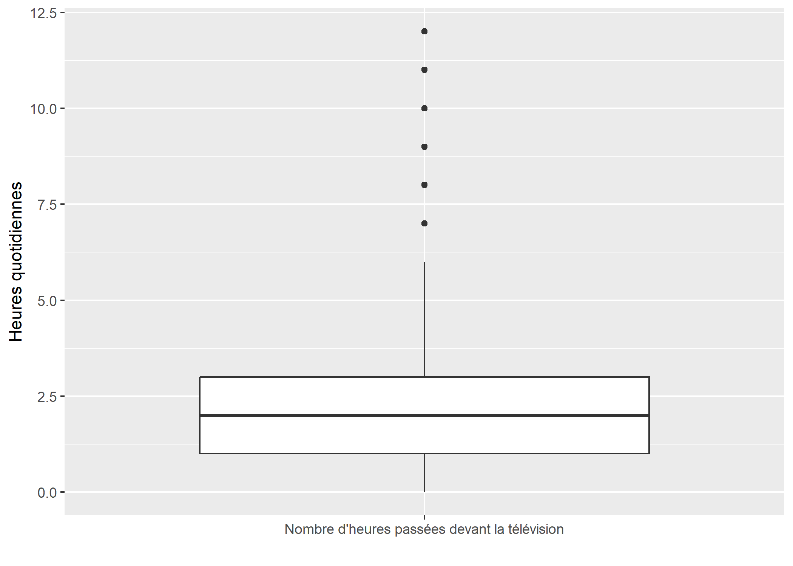
Boîte à moustache (une seule variable)
Une représentation alternative aux boîtes à moustaches ou boxplots sont les graphiques en violon ou violin plots, qui représentent la densité de distribution. Ils s’obtiennent avec la géométrie geom_violin.
ggplot(d) +aes(x = hard.rock, y = age) +geom_violin() +xlab("Ecoute du hard rock") +ylab("Âge") +ggtitle("Répartition par âge selon que l'on écoute du hard rock ou non")
Graphiques en violon ou “violin plot”
Diagramme en bâtons
Un diagramme en bâtons s’obtient avec la géométrie geom_bar.
ggplot(d) +aes(x = freres.soeurs) +geom_bar() +xlab("Nombre de frères et soeurs") +ylab("Effectifs")
Diagramme en bâtons
La largeur des barres par défaut est de 0,9. Dès lors, le graphique ressemble plus à un histogramme qu’à un diagramme en bâtons. On peut personnaliser ce paramètre avec l’argument width.
ggplot(d) +aes(x = freres.soeurs) +geom_bar(width =0.2) +xlab("Nombre de frères et soeurs") +ylab("Effectifs")
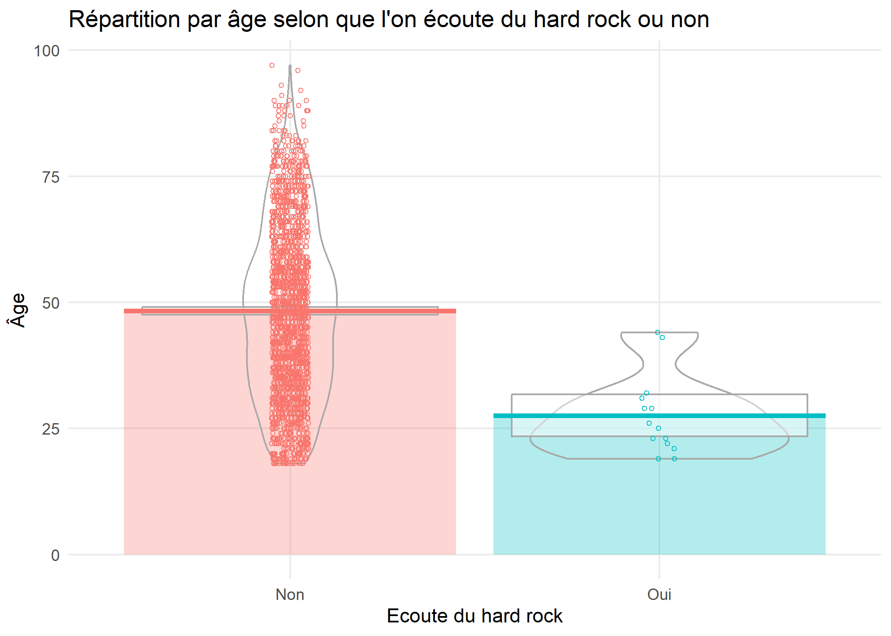
Diagramme en bâtons avec ajustement de la largeur des barres
Nuage de points
Un nuage de points se représente facilement avec la géométrie geom_point.
ggplot(d) +aes(x = age, y = heures.tv) +geom_point() +xlab("Âge") +ylab("Heures quotidiennes de télévision")
Nuage de points
On pourra personnaliser la couleur des points avec colour et le niveau de transparence avec alpha.
ggplot(d) +aes(x = age, y = heures.tv) +geom_point(colour ="red",
alpha =0.2) +xlab("Âge") +ylab("Heures quotidiennes de télévision")
Nuage de points semi-transparents
Pour représenter une troisième variable quantitative, on pourra faire varier la taille des points avec l’esthétique size. Pour une variable qualitative, on pourra faire varier la couleur avec colour. Pour faciliter la lecture, on positionnera la légende en bas du graphique, en modifiant l’argument legend.position via la fonction theme.
data("rp99")
rp99$prop.proprio <-0
rp99[rp99$proprio >=mean(rp99$proprio), ]$prop.proprio <-1
rp99$prop.proprio <-factor(rp99$prop.proprio, 0:1,
c("non", "oui"))
ggplot(rp99) +aes(x = dipl.aucun, y = tx.chom, size = pop.tot,
colour = prop.proprio) +geom_point(alpha =0.5) +xlab("% sans diplôme") +ylab("Taux de chômage") +labs(size ="Population totale", colour ="Proportion de propriétaires supérieure à la moyenne") +theme(legend.position ="bottom")
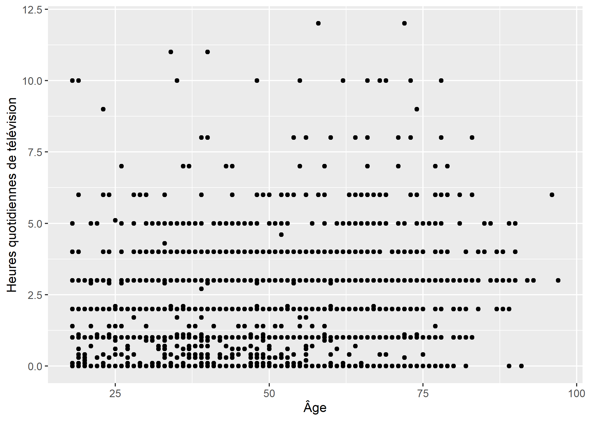
Nuage de points proportionnels
geom_smooth permets d’ajouter au graphique une moyenne mobile du nuage de points avec son intervalle de confiance. Notez que l’on ajoute geom_smooth au graphique avant geom_point puisque l’ordre dans lequel sont affichées les différentes couches du graphique dépend de l’ordre dans lequel elles ont été ajoutées. Dans cet exemple, nous souhaitons afficher les points au-dessus de la moyenne mobile.
ggplot(rp99) +aes(x = dipl.sup, y = cadres) +geom_smooth() +geom_point() +xlab("% de diplômés du supérieur") +ylab("% de cadres")
`geom_smooth()` using method = 'loess' and formula 'y ~ x'
Nuage de points avec moyenne mobile
Si l’on préfère afficher plutôt la droite de régression, on indiquera à geom_smooth l’agument method = "lm".
ggplot(rp99) +aes(x = dipl.sup, y = cadres) +geom_smooth(method ="lm") +geom_point() +xlab("% de diplômés du supérieur") +ylab("% de cadres")
Nuage de points avec droite de régression linéaire
Matrice de nuages de points et matrice de corrélation
ggplot2 ne fournit pas de fonction native pour la réalisation d’une matrice de nuages de points. Cependant, il existe plusieurs extensions permettant d’étendre ggplot2. Parmi celles-ci, l’extension GGally propose une fonction ggpairs correspondant exactement à notre besoin.
Matrice de nuages de points avec variables catégorielles
GGally propose également une fonction ggcorr permettant d’afficher une matrice de corrélation entre variables quantitatives2.
ggcorr(rp99)
Matrice de corrélarion
Estimation locale de densité (et représentations associées)
On peut aisément représenter une estimation locale de densité avec la géométrie geom_density_2d.
ggplot(d) +aes(x = age, y = heures.tv) +geom_density_2d() +xlab("Âge") +ylab("Heures quotidiennes de télévision")
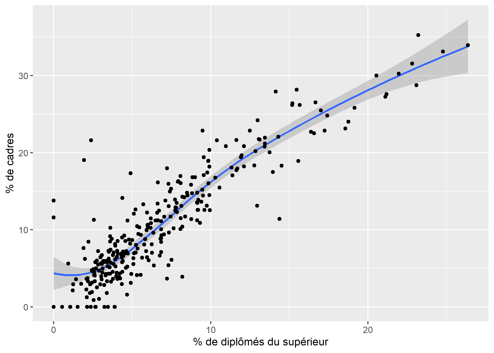
Estimation locale de densité (contours)
Par défaut, le résultat est représenté sous forme de contours. Pour obtenir une représentation avec des polygones, on appelera la statistique stat_density_2d en forçant la géométrie.
ggplot(d) +aes(x = age, y = heures.tv, fill = ..level..) +stat_density_2d(geom ="polygon") +xlab("Âge") +ylab("Heures quotidiennes de télévision") +labs(fill ="Densité")
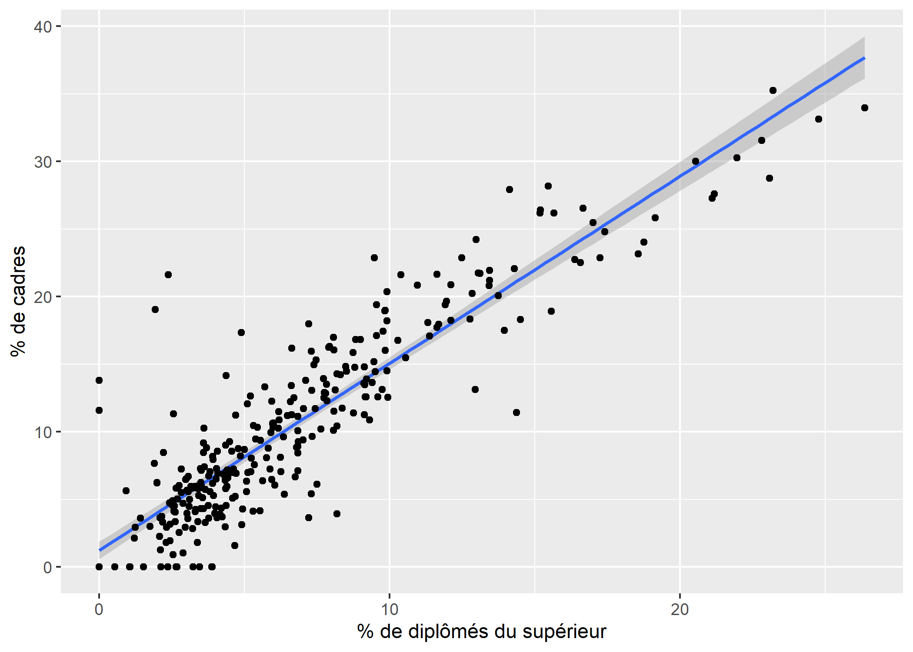
Estimation locale de densité (contours)
ggplot2 propose également deux géométries, geom_bin2d et geom_hex, permettant d’effectuer à un comptage des effectifs en deux dimensions.
ggplot(d) +aes(x = age, y = heures.tv) +geom_bin2d() +xlab("Âge") +ylab("Heures quotidiennes de télévision") +labs(fill ="Effectifs")
Effectifs en deux dimensions
ggplot(d) +aes(x = age, y = heures.tv) +geom_hex() +xlab("Âge") +ylab("Heures quotidiennes de télévision") +labs(fill ="Effectifs")
Effectifs en deux dimensions (hexagones)
Pour reproduire à l’identique l’exemple donné dans le chapitre statistique bivariée, on aura besoin de la méthode tidy de l’extension broom afin de transformer le résultat de kde2d en un tableau de données exploitables par ggplot2. tidy est une méthode générique permettant de transformer un grand nombre d’objets (et en particulier les résultats d’un modèle) en un tableau de données exploitable by ggplot2.
'data.frame': 625 obs. of 3 variables:
$ x: num 18 21.3 24.6 27.9 31.2 ...
$ y: num 0 0 0 0 0 0 0 0 0 0 ...
$ z: num 0.00147 0.00227 0.0027 0.00291 0.00308 ...
ggplot(tmp) +aes(x = x, y = y, fill = z) +geom_raster(interpolate =TRUE) +scale_fill_gradientn(colors =terrain.colors(14)) +labs(x ="Âge", y ="Heures de TV", fill ="Densité")
Diagramme de Cleveland
Pour un diagramme de Cleveland, on aura recours à la géométrie geom_point. Cependant, il faudra lui préciser que l’on souhaite utiliser la statistique stat_count afin que les effectifs soient calculés pour chaque valeur de x.
ggplot(d) +aes(x = clso) +geom_point(stat ="count") +xlab("Sentiment d'appartenance à une classe sociale") +ylab("Effectifs")
Diagramme de Cleveland
Une alternative, notamment si l’on souhaite un diagramme de Cleveland ordonné, consiste à calculer les effectifs de chaque modalité en amont. ggplot2 ayant besoin d’un tableau de données en entrée, nous calculerons notre tableau de fréquences avec xtabs et le transformerons en tableau de données avec as.data.frame. Pour que les niveaux de qualifaction soient représentés selon leur effectif, il est nécessaire d’ordonner les étiquettes du facteur de manière adéquate. Enfin, nous utiliserons coord_flip pour intervertir l’axe des x et celui des y.
ggplot(tab) +aes(x = qualif, y = Freq) +geom_point() +xlab("Niveau de qualification") +ylab("Effectifs") +coord_flip()
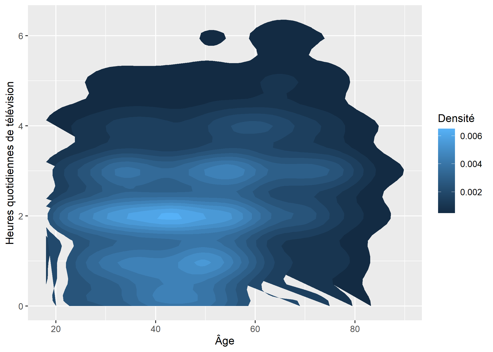
Diagramme de Cleveland ordonné
L’extension ggalt propose quelques géométries supplémentaires pour ggplot2. L’une d’elles dite en sucettes (lollipop) propose une représentation graphique au croisement entre un diagramme en bâtons et un diagramme de Cleveland.
Pour cela, il est d’abord nécessaire d’installer la version de développement de gglat à l’aide de la commande suivante :
devtools::install_github("hrbrmstr/ggalt")
library(ggalt)
ggplot(tab) +aes(x = qualif, y = Freq) +geom_lollipop() +xlab("Niveau de qualification") +ylab("Effectifs") +coord_flip()
Diagramme en “sucettes” (lollipop)
Diagrammes en barres
Un diagramme en barres se construit avec la géométrie geom_bar.
On peut modifier la position des barres avec le paramètre position.
ggplot(d) +aes(x = qualreg, fill = sport) +geom_bar(position ="dodge") +xlab("CSP") +ylab("Effectifs") +labs(fill ="Pratique du sport")
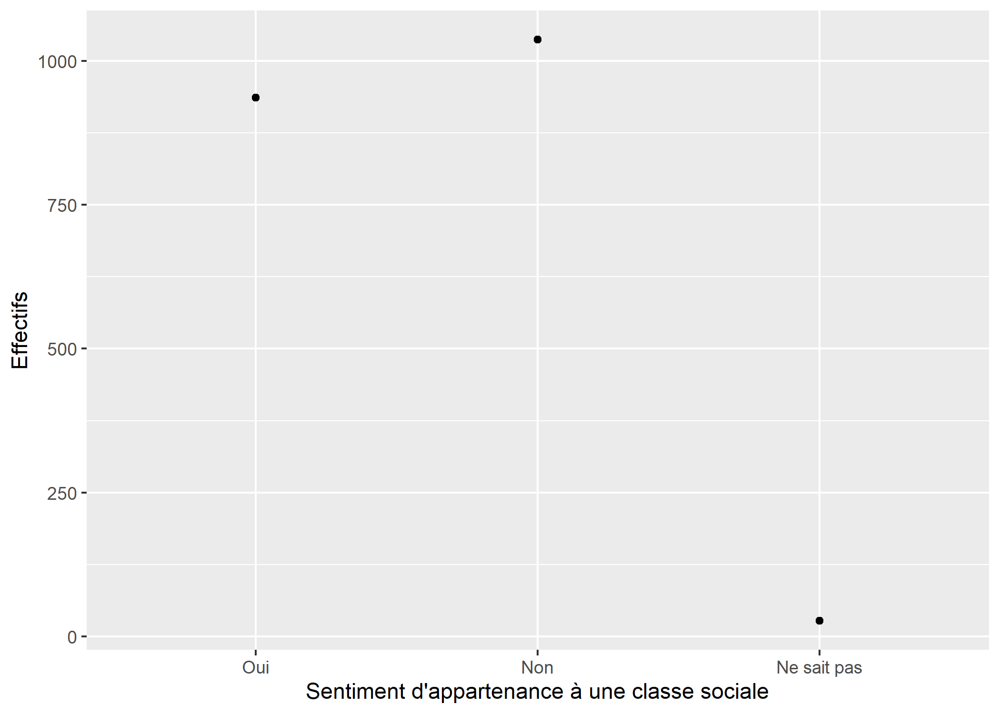
Diagramme en barres côte à côte
Pour des barres cumulées, on aura recours à position = "fill". Pour que les étiquettes de l’axe des y soient représentées sous forme de pourcentages (i.e. 25% au lieu de 0.25), on aura recours à la fonction percent de l’extension scales, qui sera transmise à ggplot2 via scale_y_continuous.
library(scales)
ggplot(d) +aes(x = qualreg, fill = sport) +geom_bar(position ="fill") +xlab("CSP") +ylab("Proportion") +labs(fill ="Pratique du sport") +scale_y_continuous(labels = percent)
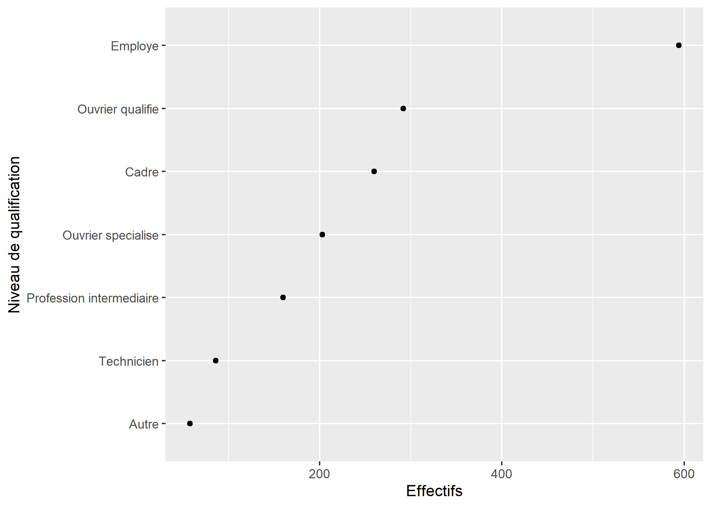
Diagramme en barres cumulées
Graphe en mosaïque
Il n’y a pas, à ce jour, d’implémentation officielle des graphiques en mosaïque sous ggplot2. On pourra néanmoins se référer à l’extension expérimentale productplots3 développée par Hadley Wickham.
Données labellisées et ggplot2
ggplot2 tient compte du type des variables, attendant à ce que les variables catégorielles soient présentées sous forme de facteurs. Si l’on utilise des données labellisées (voir le chapitre dédié), nos variables catégorielles seront stockées sous la forme d’un vecteur numérique avec des étiquettes. Il sera donc nécessaire de convertir ces variables en facteurs, tout simplement avec la fonction to_factor de l’extension labelled qui pourra utiliser les étiquettes de valeurs comme modalités du facteur.
Exporter les graphiques obtenus
Les graphiques produits par ggplot2 peuvent être sauvegardés manuellement, comme expliqué dans le chapitre Export des graphiques, ou programmatiquement. Pour sauvegarder le dernier graphique affiché par ggplot2 au format PNG, il suffit d’utiliser la fonction ggsave, qui permet d’en régler la taille (en pouces) et la résolution (en pixels par pouce ; 72 par défaut) :
ggsave("mon_graphique.png", width =11, height =8)
De la même manière, pour sauvegarder n’importe quel graphique construit avec ggplot2 et stocké dans un objet, il suffit de préciser le nom de cet objet, comme ci-dessous, où l’on sauvegarde le graphique contenu dans l’objet p au format vectoriel PDF, qui préserve la netteté du texte et des autres éléments du graphique à n’importe quelle résolution d’affichage :
S’il est tout à fait possible de travailler avec des données pondérées sous R, cette fonctionnalité n’est pas aussi bien intégrée que dans la plupart des autres logiciels de traitement statistique. En particulier, il y a plusieurs manières possibles de gérer la pondération. Cependant, lorsque l’on doit également prendre un compte un plan d’échantillonnage complexe (voir section dédiée ci-après), R fournit tous les outils nécessaires, alors que dans la plupart des logiciels propriétaires, il faut disposer d’une extension adéquate, pas toujours vendue de base avec le logiciel.
Dans ce qui suit, on utilisera le jeu de données tiré de l’enquête Histoire de vie et notamment sa variable de pondération poids1.
library(questionr)
data(hdv2003)
d <-hdv2003
range(d$poids)
[1] 78.07834 31092.14132
Options de certaines fonctions
Tout d’abord, certaines fonctions de R acceptent en argument un vecteur permettant de pondérer les observations (l’option est en général nommée weights ou row.w). C’est le cas par exemple des méthodes d’estimation de modèles linéaires2 (lm) ou de modèles linéaires généralisés 3 (glm) ou dans les analyses de correspondances4 des extensions ade4 ou FactoMineR.
Par contre cette option n’est pas présente dans les fonctions de base comme mean, var, table ou chisq.test.
Fonctions de l’extension questionr
L’extension questionr propose quelques fonctions permettant de calculer des statistiques simples pondérées5 :
wtd.mean : moyenne pondérée
wtd.var : variance pondérée
wtd.table : tris à plat et tris croisés pondérés
On les utilise de la manière suivante :
library(questionr)
mean(d$age)
[1] 48.157
wtd.mean(d$age, weights = d$poids)
[1] 46.34726
wtd.var(d$age, weights = d$poids)
[1] 325.2658
Pour les tris à plat, on utilise la fonction wtd.table à laquelle on passe la variable en paramètre :
wtd.table(d$sexe, weights = d$poids)
Homme Femme
5149382 5921844
Pour un tri croisé, il suffit de passer deux variables en paramètres :
wtd.table(d$sexe, d$hard.rock, weights = d$poids)
Non Oui
Homme 5109366.41 40016.02
Femme 5872596.42 49247.49
Ces fonctions admettent notamment les deux options suivantes :
na.rm : si TRUE, on ne conserve que les observations sans valeur manquante.
normwt : si TRUE, on normalise les poids pour que les effectifs totaux pondérés soient les mêmes que les effectifs initiaux. Il faut utiliser cette option, notamment si on souhaite appliquer un test sensible aux effectifs comme le ².
Ces fonctions rendent possibles l’utilisation des statistiques descriptives les plus simples et le traitement des tableaux croisés (les fonctions lprop, cprop ou chisq.test peuvent être appliquées au résultat d’un wtd.table) mais restent limitées en termes de tests statistiques ou de graphiques…
Données pondérées avec l’extension survey
L’extension survey est spécialement dédiée au traitement d’enquêtes ayant des techniques d’échantillonnage et de pondération potentiellement très complexes.
L’extension s’installe comme la plupart des autres :
Pour utiliser les fonctionnalités de l’extension, on doit d’abord définir le plan d’échantillonnage ou design de notre enquête, c’est-à-dire indiquer quel type de pondération nous souhaitons lui appliquer.
Dans un premier temps, nous utiliserons le plan d’échantillonnage le plus simple, avec une variable de pondération déjà calculée6. Ceci se fait à l’aide de la fonction svydesign :
library(survey)
dw <-svydesign(ids =~1, data = d, weights =~d$poids)
Cette fonction crée un nouvel objet, que nous avons nommé dw. Cet objet n’est pas à proprement parler un tableau de données, mais plutôt un tableau de données plus une méthode de pondération. dw et d sont des objets distincts, les opérations effectuées sur l’un n’ont pas d’influence sur l’autre. On peut cependant retrouver le contenu de d depuis dw en utilisant dw$variables :
str(d$age)
int [1:2000] 28 23 59 34 71 35 60 47 20 28 ...
str(dw$variables$age)
int [1:2000] 28 23 59 34 71 35 60 47 20 28 ...
Lorsque notre plan d’échantillonnage est déclaré, on peut lui appliquer une série de fonctions permettant d’effectuer diverses opérations statistiques en tenant compte de la pondération. On citera notamment :
D’autres fonctions sont disponibles, comme svyratio, mais elles ne seront pas abordées ici.
Pour ne rien arranger, ces fonctions prennent leurs arguments sous forme de formules7, c’est-à-dire pas de la manière habituelle. En général l’appel de fonction se fait en spécifiant d’abord les variables d’intérêt sous forme de formule, puis l’objet survey.design.
Les tris à plat se déclarent en passant comme argument le nom de la variable précédé d’un tilde (~), tandis que les tableaux croisés utilisent les noms des deux variables séparés par un signe plus (+) et précédés par un tilde (~).
svytable(~sexe, dw)
sexe
Homme Femme
5149382 5921844
svytable(~sexe +clso, dw)
clso
sexe Oui Non Ne sait pas
Homme 2658744.04 2418187.64 72450.75
Femme 2602031.76 3242389.36 77422.79
La fonction freq peut être utilisée si on lui passe en argument non pas la variable elle-même, mais son tri à plat obtenu avec svytable :
tab <-svytable(~peche.chasse, dw)
freq(tab, total =TRUE)
n % val%
Non 9716683 87.8 87.8
Oui 1354544 12.2 12.2
Total 11071226 100.0 100.0
On peut également récupérer le tableau issu de svytable dans un objet et le réutiliser ensuite comme n’importe quel tableau croisé :
tab <-svytable(~sexe +clso, dw)
tab
clso
sexe Oui Non Ne sait pas
Homme 2658744.04 2418187.64 72450.75
Femme 2602031.76 3242389.36 77422.79
Les fonctions lprop et cprop de questionr sont donc tout à fait compatibles avec l’utilisation de survey.
lprop(tab)
clso
sexe Oui Non Ne sait pas Total
Homme 51.6 47.0 1.4 100.0
Femme 43.9 54.8 1.3 100.0
Ensemble 47.5 51.1 1.4 100.0
Le principe de la fonction svyby est similaire à celui de tapply9. Elle permet de calculer des statistiques selon plusieurs sous-groupes définis par un facteur. Par exemple :
svyby(~age, ~sexe, dw, svymean)
sexe age se
Homme Homme 45.20200 0.7419450
Femme Femme 47.34313 0.7420836
survey est également capable de produire des graphiques à partir des données pondérées. Quelques exemples :
par(mfrow =c(2, 2))
svyplot(~age +heures.tv, dw, col ="red", main ="Bubble plot")
svyhist(~heures.tv, dw, col ="peachpuff", main ="Histogramme")
svyboxplot(age ~1, dw, main ="Boxplot simple", ylab ="Âge")
svyboxplot(age ~sexe, dw, main ="Boxplot double",
ylab ="Âge", xlab ="Sexe")
Fonctions graphiques de l’extension survey
Extraire un sous-échantillon
Si l’on souhaite travailler sur un sous-échantillon tout en gardant les informations d’échantillonnage, on utilisera la fonction subset présentée en détail dans le chapitre Sous-ensembles.
sous <-subset(dw, sexe == "Femme"&age >=40)
Conclusion
Si, la gestion de la pondération sous R n’est sans doute pas ce qui se fait de plus pratique et de plus simple, on pourra quand même donner les conseils suivants :
utiliser les options de pondération des fonctions usuelles ou les fonctions d’extensions comme questionr pour les cas les plus simples ;
si on utilise survey, effectuer autant que possible tous les recodages et manipulations sur les données non pondérées ;
une fois les recodages effectués, on déclare le design et on fait les analyses en tenant compte de la pondération ;
surtout ne jamais modifier les variables du design. Toujours effectuer recodages et manipulations sur les données non pondérées, puis redéclarer le design pour que les mises à jour effectuées soient disponibles pour l’analyse.
On notera que cette variable est utilisée à titre purement illustratif. Le jeu de données étant un extrait d’enquête et la variable de pondération n’ayant pas été recalculée, elle n’a ici à proprement parler aucun sens.
Les fonctions wtd.mean et wtd.var sont des copies conformes des fonctions du même nom de l’extension Hmisc de Frank Harrel. Hmisc étant une extension « de taille », on a préféré recopié les fonctions pour limiter le poids des dépendances.
Nous utiliserons dans ce chapitre les données de l’enquête Histoire de vie 2003 fournies avec l’extension questionr.
library(questionr)
data("hdv2003")
d <-hdv2003
Intervalle de confiance d’une moyenne
L’intervalle de confiance d’une moyenne peut être calculé avec la fonction t.test (fonction qui permet également de réaliser un test t de Student comme nous le verrons dans le chapitre dédié aux comparaisons de moyennes) :
t.test(d$heures.tv)
One Sample t-test
data: d$heures.tv
t = 56.505, df = 1994, p-value < 2.2e-16
alternative hypothesis: true mean is not equal to 0
95 percent confidence interval:
2.168593 2.324540
sample estimates:
mean of x
2.246566
Le niveau de confiance peut être précisé via l’argument conf.level :
t.test(d$heures.tv, conf.level =0.9)
One Sample t-test
data: d$heures.tv
t = 56.505, df = 1994, p-value < 2.2e-16
alternative hypothesis: true mean is not equal to 0
90 percent confidence interval:
2.181138 2.311995
sample estimates:
mean of x
2.246566
Le nombre d’heures moyennes à regarder la télévision parmi les enquêtés s’avère être de 2,2 heures, avec un intervalle de confiance à 95 % de [2,17 - 2,33] et un intervalle de confiance à 90 % de [2,18 - 2,31].
Intervalle de confiance d’une proportion
La fonction prop.test permet de calculer l’intervalle de confiance d’une proportion. Une première possibilité consiste à lui transmettre une table à une dimension et deux entrées. Par exemple, si l’on s’intéresse à la proportion de personnes ayant pratiqué une activité physique au cours des douze derniers mois :
freq(d$sport)
n % val%
Non 1277 63.8 63.8
Oui 723 36.1 36.1
prop.test(table(d$sport))
1-sample proportions test with continuity
correction
data: table(d$sport), null probability 0.5
X-squared = 152.9, df = 1, p-value < 2.2e-16
alternative hypothesis: true p is not equal to 0.5
95 percent confidence interval:
0.6169447 0.6595179
sample estimates:
p
0.6385
On remarquera que la fonction a calculé l’intervalle de confiance correspondant à la première entrée du tableau, autrement dit celui de la proportion d’enquêtés n’ayant pas pratiqué une activité sportive. Or, nous sommes intéressé par la proportion complémentaire, à savoir celle d’enquêtés ayant pratiqué une activité sportive. On peut dès lors modifier l’ordre de la table en indiquant notre modalité d’intérêt avec la fonction relevel ou bien indiquer à prop.test d’abord le nombre de succès puis l’effectif total :
prop.test(table(relevel(d$sport, "Oui")))
1-sample proportions test with continuity
correction
data: table(relevel(d$sport, "Oui")), null probability 0.5
X-squared = 152.9, df = 1, p-value < 2.2e-16
alternative hypothesis: true p is not equal to 0.5
95 percent confidence interval:
0.3404821 0.3830553
sample estimates:
p
0.3615
prop.test(sum(d$sport == "Oui"), length(d$sport))
1-sample proportions test with continuity
correction
data: sum(d$sport == "Oui") out of length(d$sport), null probability 0.5
X-squared = 152.9, df = 1, p-value < 2.2e-16
alternative hypothesis: true p is not equal to 0.5
95 percent confidence interval:
0.3404821 0.3830553
sample estimates:
p
0.3615
Enfin, le niveau de confiance peut être modifié via l’argument conf.level :
1-sample proportions test with continuity
correction
data: table(relevel(d$sport, "Oui")), null probability 0.5
X-squared = 152.9, df = 1, p-value < 2.2e-16
alternative hypothesis: true p is not equal to 0.5
90 percent confidence interval:
0.3437806 0.3795989
sample estimates:
p
0.3615
Il existe de nombreuses manières de calculer un intervalle de confiance pour une proportion. En l’occurence, l’intervalle calculé par prop.test correspond dans le cas présent à un intervalle bilatéral selon la méthode des scores de Wilson avec correction de continuité. Pour plus d’information, on pourra lire http://joseph.larmarange.net/?Intervalle-de-confiance-bilateral.
Pour se simplifier un peu la vie, le package JLutils propose une fonction prop.ci (et ses deux variantes prop.ci.lower et prop.ci.upper) permettant d’appeler plus facilement prop.test et renvoyant directement l’intervalle de confiance.
JLutils n’étant disponible que sur GitHub, on aura recours au package devtools et à sa fonction install_github pour l’installer :
prop.ci fonction accepte directement un tri à plat obtenu avec table, un vecteur de données, un vecteur logique (issu d’une condition), ou bien le nombre de succès et le nombre total d’essais. Voir les exemples ci-après :
library(JLutils)
Loading required package: ggplot2
Loading required package: plyr
freq(d$sport)
n % val%
Non 1277 63.8 63.8
Oui 723 36.1 36.1
prop.ci(d$sport)
[1] 0.6169447 0.6595179
prop.ci.lower(d$sport)
[1] 0.6169447
prop.ci.upper(d$sport)
[1] 0.6595179
prop.ci(d$sport, conf.level =0.9)
[1] 0.6204011 0.6562194
prop.ci(table(d$sport))
[1] 0.6169447 0.6595179
prop.ci(d$sport == "Non")
[1] 0.6169447 0.6595179
prop.ci(d$sport == "Oui")
[1] 0.3404821 0.3830553
prop.ci.lower(c(1277, 723), n =2000)
[1] 0.6169447 0.3404821
prop.ci.upper(c(1277, 723), n =2000)
[1] 0.6595179 0.3830553
Données pondérées et l’extension survey
Lorsque l’on utilise des données pondérées définies à l’aide de l’extension survey1, l’intervalle de confiance d’une moyenne s’obtient avec confint et celui d’une proportion avec svyciprop.
Nous utiliserons dans ce chapitre les données de l’enquête Histoire de vie 2003 fournies avec l’extension questionr.
library(questionr)
data("hdv2003")
d <-hdv2003
Comparaison de moyennes
On peut calculer la moyenne d’âge des deux groupes en utilisant la fonction tapply1 :
tapply(d$age, d$hard.rock, mean)
Non Oui
48.30211 27.57143
L’écart est important. Est-il statistiquement significatif ? Pour cela on peut faire un test t de Student comparaison de moyennes à l’aide de la fonction t.test :
t.test(d$age ~d$hard.rock)
Welch Two Sample t-test
data: d$age by d$hard.rock
t = 9.6404, df = 13.848, p-value = 1.611e-07
alternative hypothesis: true difference in means is not equal to 0
95 percent confidence interval:
16.11379 25.34758
sample estimates:
mean in group Non mean in group Oui
48.30211 27.57143
Le test est extrêmement significatif. L’intervalle de confiance à 95 % de la différence entre les deux moyennes va de 14,5 ans à 21,8 ans.
La valeur affichée pour p est de 1.611e-07. Cette valeur peut paraître étrange pour les non avertis. Cela signifie tout simplement 1,611 multiplié par 10 à la puissance -7, autrement dit 0,0000001611. Cette manière de représenter un nombre est couramment appelée notation scientifique.
Nous sommes cependant allés un peu vite en besogne, car nous avons négligé une hypothèse fondamentale du test t : les ensembles de valeur comparés doivent suivre approximativement une loi normale et être de même variance2. Comment le vérifier ?
D’abord avec un petit graphique composés de deux histogrammes :
par(mfrow =c(1, 2))
hist(d$age[d$hard.rock == "Oui"], main ="Hard rock",
col ="red")
hist(d$age[d$hard.rock == "Non"], main ="Sans hard rock",
col ="red")
Distribution des âges pour appréciation de la normalité
La fonction par permet de modifier de nombreux paramètres graphiques. par(mfrow = c(1, 2)) sert à indiquer que l’on souhaite afficher deux graphiques sur une même fenêtre, plus précisément que la fenêtre doit comporter une ligne et deux colonnes.
Ça a l’air à peu près bon pour les « Sans hard rock », mais un peu plus limite pour les fans de Metallica, dont les effectifs sont d’ailleurs assez faibles. Si on veut en avoir le coeur net on peut utiliser le test de normalité de Shapiro-Wilk avec la fonction shapiro.test :
shapiro.test(d$age[d$hard.rock == "Oui"])
Shapiro-Wilk normality test
data: d$age[d$hard.rock == "Oui"]
W = 0.86931, p-value = 0.04104
shapiro.test(d$age[d$hard.rock == "Non"])
Shapiro-Wilk normality test
data: d$age[d$hard.rock == "Non"]
W = 0.98141, p-value = 2.079e-15
Visiblement, le test estime que les distributions ne sont pas suffisamment proches de la normalité dans les deux cas.
Et concernant l’égalité des variances ?
tapply(d$age, d$hard.rock, var)
Non Oui
285.62858 62.72527
L’écart n’a pas l’air négligeable. On peut le vérifier avec le test d’égalité des variances fourni par la fonction var.test :
var.test(d$age ~d$hard.rock)
F test to compare two variances
data: d$age by d$hard.rock
F = 4.5536, num df = 1985, denom df = 13,
p-value = 0.003217
alternative hypothesis: true ratio of variances is not equal to 1
95 percent confidence interval:
1.751826 8.694405
sample estimates:
ratio of variances
4.553644
La différence est très significative. En toute rigueur le test t n’aurait donc pas pu être utilisé.
Damned ! Ces maudits tests statistiques vont-ils nous empêcher de faire connaître au monde entier notre fabuleuse découverte sur l’âge des fans de Sepultura ? Non ! Car voici qu’approche à l’horizon un nouveau test, connu sous le nom de Wilcoxon/Mann-Whitney. Celui-ci a l’avantage d’être non-paramétrique, c’est à dire de ne faire aucune hypothèse sur la distribution des échantillons comparés. Par contre il ne compare pas des différences de moyennes mais des différences de médianes :
wilcox.test(d$age ~d$hard.rock)
Wilcoxon rank sum test with continuity
correction
data: d$age by d$hard.rock
W = 23980, p-value = 2.856e-06
alternative hypothesis: true location shift is not equal to 0
Ouf ! La différence est hautement significative3. Nous allons donc pouvoir entamer la rédaction de notre article pour la Revue française de sociologie.
Comparaison de proportions
La fonction prop.test, que nous avons déjà rencontrer pour calculer l’intervalle de confiance d’une proportion (voir le chapitre dédié aux intervalles de confiance) permets également d’effectuer un test de comparaison de deux proportions.
Supposons que l’on souhaite comparer la proportion de personnes faisant du sport entre ceux qui lisent des bandes dessinées et les autres :
tab <-xtabs(~lecture.bd +sport, d)
lprop(tab)
sport
lecture.bd Non Oui Total
Non 64.2 35.8 100.0
Oui 48.9 51.1 100.0
Ensemble 63.8 36.1 100.0
Il suffit de transmettre notre tableau croisé (à 2×2 dimensions) à prop.test :
prop.test(tab)
2-sample test for equality of proportions
with continuity correction
data: tab
X-squared = 4, df = 1, p-value = 0.0455
alternative hypothesis: two.sided
95 percent confidence interval:
-0.002652453 0.308107236
sample estimates:
prop 1 prop 2
0.6420891 0.4893617
On pourra également avoir recours à la fonction fisher.test qui renverra notamment l’odds ratio et son intervalle de confiance correspondant :
fisher.test(table(d$lecture.bd, d$sport))
Fisher's Exact Test for Count Data
data: table(d$lecture.bd, d$sport)
p-value = 0.0445
alternative hypothesis: true odds ratio is not equal to 1
95 percent confidence interval:
1.003372 3.497759
sample estimates:
odds ratio
1.871433
On pourra aussi avoir recours à la fonction odds.ratio de l’extension questionr qui réalise le même calcul mais présente le résultat légèrement différemment :
odds.ratio(tab)
OR 2.5 % 97.5 % p
Fisher's test 1.8714 1.0034 3.4978 0.0445 *
---
Signif. codes:
0 '***' 0.001 '**' 0.01 '*' 0.05 '.' 0.1 ' ' 1
Note : pour le calcul du risque relatif, on pourra regarder du côté de la fonction relrisk de l’extension mosaic.
² et dérivés
Dans le cadre d’un tableau croisée, on peut tester l’existence d’un lien entre les modalités de deux variables, avec le très classique test du ²4. Celui-ci s’obtient grâce à la fonction chisq.test, appliquée au tableau croisé obtenu avec table ou xtabs5 :
Le test est hautement significatif, on ne peut pas considérer qu’il y a indépendance entre les lignes et les colonnes du tableau.
On peut affiner l’interprétation du test en déterminant dans quelle case l’écart à l’indépendance est le plus significatif en utilisant les résidus du test. Ceux-ci sont notamment affichables avec la fonction chisq.residuals de questionr :
chisq.residuals(tab)
Autre Cadre Employe Intermediaire Ouvrier
Non 0.11 -3.89 0.95 -2.49 3.49
Oui -0.15 5.23 -1.28 3.35 -4.70
Les cases pour lesquelles l’écart à l’indépendance est significatif ont un résidu dont la valeur est supérieure à 2 ou inférieure à -2. Ici on constate que la pratique d’un sport est sur-représentée parmi les cadres et, à un niveau un peu moindre, parmi les professions intermédiaires, tandis qu’elle est sousreprésentée chez les ouvriers.
Enfin, on peut calculer le coefficient de contingence de Cramer du tableau, qui peut nous permettre de le comparer par la suite à d’autres tableaux croisés. On peut pour cela utiliser la fonction cramer.v de questionr :
cramer.v(tab)
[1] 0.24199
Pour un tableau à 2×2 entrées, il est possible de calculer le test exact de Fisher avec la fonction fisher.test. On peut soit lui passer le résultat de table ou xtabs, soit directement les deux variables à croiser.
lprop(table(d$sexe, d$cuisine))
Non Oui Total
Homme 70.0 30.0 100.0
Femme 44.5 55.5 100.0
Ensemble 56.0 44.0 100.0
fisher.test(table(d$sexe, d$cuisine))
Fisher's Exact Test for Count Data
data: table(d$sexe, d$cuisine)
p-value < 2.2e-16
alternative hypothesis: true odds ratio is not equal to 1
95 percent confidence interval:
2.402598 3.513723
sample estimates:
odds ratio
2.903253
Données pondérées et l’extension survey
Lorsque l’on utilise des données pondérées, on aura recours à l’extension survey6.
Préparons des données d’exemple :
library(survey)
dw <-svydesign(ids =~1, data = d, weights =~poids)
Pour comparer deux moyennes à l’aide d’un test t on aura recours à svyttest :
svyttest(age ~sexe, dw)
Design-based t-test
data: age ~ sexe
t = 2.0404, df = 1998, p-value = 0.04144
alternative hypothesis: true difference in mean is not equal to 0
sample estimates:
difference in mean
2.141129
On ne peut pas utiliser chisq.test directement sur un tableau généré par svytable. Les effectifs étant extrapolés à partir de la pondération, les résultats du test seraient complètement faussés. Si on veut faire un test du ² sur un tableau croisé pondéré, il faut utiliser svychisq :
rprop(svytable(~sexe +clso, dw))
clso
sexe Oui Non Ne sait pas Total
Homme 51.6 47.0 1.4 100.0
Femme 43.9 54.8 1.3 100.0
Ensemble 47.5 51.1 1.4 100.0
Concernant cette seconde condition, t.test propose une option nommée var.equal qui permet d’utiliser une approximation dans le cas où les variances ne sont pas égales.
Ce test peut également fournir un intervalle de confiance avec l’option conf.int=TRUE.
On ne donnera pas plus d’indications sur le test du ² ici. Les personnes désirant une présentation plus détaillée pourront se reporter (attention, séance d’autopromotion !) à la page suivante : http://alea.fr.eu.org/pages/khi2.
On peut aussi appliquer directement le test en spécifiant les deux variables à croiser via chisq.test(d$qualreg, d$sport).
L’extension survey ne permet pas seulement d’indiquer une variable de pondération mais également de prendre les spécificités du plan d’échantillonnage (strates, grappes, …). Le plan d’échantillonnage ne joue pas seulement sur la pondération des données, mais influence le calcul des variances et par ricochet tous les tests statistiques. Deux échantillons identiques avec la même variable de pondération mais des designs différents produiront les mêmes moyennes et proportions mais des intervalles de confiance différents.
L’échantillonnage aléatoire simple ou échantillonnage équiprobable est une méthode pour laquelle tous les échantillons possibles (de même taille) ont la même probabilité d’être choisis et tous les éléments de la population ont une chance égale de faire partie de l’échantillon. C’est l’échantillonnage le plus simple : chaque individu à la même probabilité d’être sélectionné.
L’échantillonnage stratifié est une méthode qui consiste d’abord à subdiviser la population en groupes homogènes (strates) pour ensuite extraire un échantillon aléatoire de chaque strate. Cette méthode suppose la connaissance de la structure de la population. Pour estimer les paramètres, les résultats doivent être pondérés par l’importance relative de chaque strate dans la population.
L’échantillonnage par grappes est une méthode qui consiste à choisir un échantillon aléatoire d’unités qui sont elles-mêmes des sous-ensembles de la population (grappes ou clusters en anglais). Cette méthode suppose que les unités de chaque grappe sont représentatives. Elle possède l’avantage d’être souvent plus économique.
Il est possible de combiner plusieurs de ces approches. Par exemple, les Enquêtes Démographiques et de Santé1 (EDS) sont des enquêtes stratifiées en grappes à deux degrés. Dans un premier temps, la population est divisée en strates par région et milieu de résidence. Dans chaque strate, des zones d’enquêtes, correspondant à des unités de recensement, sont tirées au sort avec une probabilité proportionnelle au nombre de ménages de chaque zone au dernier recensement de population. Enfin, au sein de chaque zone d’enquête sélectionnée, un recensement de l’ensemble des ménages est effectué puis un nombre identique de ménages par zone d’enquête est tiré au sort de manière alétoire simple.
Les options de svydesign
La fonction svydesign accepte plusieurs arguments décrits sur sa page d’aide (obtenue avec la commande ?svydesign).
L’agument data permet de spécifier le tableau de données contenant les observations.
L’argument ids est obligatoire et spécifie sous la forme d’une formule les identifiants des différents niveaux d’un tirage en grappe. S’il s’agit d’un échantillon aléatoire simple, on entrera ids=˜1. Autre situation : supposons une étude portant sur la population française. Dans un premier temps, on a tiré au sort un certain nombre de départements français. Dans un second temps, on tire au sort dans chaque département des communes. Dans chaque commune sélectionnée, on tire au sort des quartiers. Enfin, on interroge de manière exhaustive toutes les personnes habitant les quartiers enquêtés. Notre fichier de données devra donc comporter pour chaque observation les variables id_departement, id_commune et id_quartier. On écrira alors pour l’argument ids la valeur suivante : ids=˜id_departement+id_commune+id_quartier.
Si l’échantillon est stratifié, on spécifiera les strates à l’aide de l’argument strata en spécifiant la variable contenant l’identifiant des strates. Par exemple : strata=˜id_strate.
Il faut encore spécifier les probabilités de tirage de chaque cluster ou bien la pondération des individus. Si l’on dispose de la probabilité de chaque observation d’être sélectionnée, on utilisera l’argument probs. Si, par contre, on connaît la pondération de chaque observation (qui doit être proportionnelle à l’inverse de cette probabilité), on utilisera l’argument weights.
Si l’échantillon est stratifié, qu’au sein de chaque strate les individus ont été tirés au sort de manière aléatoire et que l’on connaît la taille de chaque strate, il est possible de ne pas avoir à spécifier la probabilité de tirage ou la pondération de chaque observation. Il est préférable de fournir une variable contenant la taille de chaque strate à l’argument fpc. De plus, dans ce cas-là, une petite correction sera appliquée au modèle pour prendre en compte la taille finie de chaque strate.
Quelques exemples
# Échantillonnage aléatoire simple
plan <-svydesign(ids =~1, data = donnees)
# Échantillonnage stratifié à un seul niveau (la# taille de chaque strate est connue)
plan <-svydesign(ids =~1, data = donnees, fpc =~taille)
# Échantillonnage en grappes avec tirages à quatre# degrés (departement, commune, quartier,# individus). La probabilité de tirage de chaque# niveau de cluster est connue.
plan <-svydesign(ids =~id_departement +id_commune +id_quartier, data = donnees, probs =~proba_departement +proba_commune +proba_quartier)
# Échantillonnage stratifié avec tirage à deux# degrés (clusters et individus). Le poids# statistiques de chaque observation est connu.
plan <-svydesign(ids =~id_cluster, data = donnees,
strata =~id_strate, weights =~poids)
Prenons l’exemple d’une Enquête Démographique et de Santé. Le nom des différentes variables est standardisé et commun quelle que soit l’enquête. Nous supposerons que vous avez importé le fichier individus dans un tableau de données nommés eds. Le poids statistique de chaque individu est fourni par la variable V005 qui doit au préalable être divisée par un million. Les grappes d’échantillonnage au premier degré sont fournies par la variable V021 (primary sample unit). Si elle n’est pas renseignée, on pourra utilisier le numéro de grappe V001. Enfin, le milieu de résidence (urbain / rural) est fourni par V025 et la région par V024. Pour rappel, l’échantillon a été stratifié à la fois par région et par mileu de résidence. Certaines enquêtes fournissent directement un numéro de strate via V022. Si tel est le cas, on pourra préciser le plan d’échantillonnage ainsi :
Si V022 n’est pas fourni mais que l’enquête a bien été stratifiée par région et milieu de résidence (vérifiez toujours le premier chapitre du rapport d’enquête), on pourra créer une variable strate ainsi2 :
Si l’on souhaite travailler sur un sous-échantillon tout en gardant les informations d’échantillonnage, on utilisera la fonction subset présentée en détail dans le chapitre Manipulation de données.
sous <-subset(plan, sexe == "Femme"&age >=40)
Vaste programme d’enquêtes réalisées à intervalles réguliers dans les pays du Sud, disponibles sur http://www.dhsprogram.com/.
L’astuce consiste à utiliser as.integer pour obtenir le code des facteurs et non leur valeur textuelle. L’addition des deux valeurs après multiplication du code de la région par 10 permet d’obtenir une valeur unique pour chaque combinaison des deux variables. On retransforme le résultat en facteurs puis on modifie les étiquettes des modalités.
La régression logistique est fréquemment utilisée en sciences sociales car elle permet d’effectuer un raisonnement dit toutes choses étant égales par ailleurs. Plus précisément, la régression logistique a pour but d’isoler les effets de chaque variable, c’est-à-dire d’identifier les effets résiduels d’une variable explicative sur une variable d’intérêt, une fois pris en compte les autres variables explicatives introduites dans le modèle. La régression logistique est ainsi prisée en épidémiologie pour identifier les facteurs associés à telle ou telle pathologie.
La régression logistique ordinaire ou régression logistique binaire vise à expliquer une variable d’intérêt binaire (c’est-à-dire de type « oui / non » ou « vrai / faux »). Les variables explicatives qui seront introduites dans le modèle peuvent être quantitatives ou qualitatives.
La régression logistique multinomiale est une extension de la régression logistique aux variables qualitatives à trois modalités ou plus.
Préparation des données
Dans ce chapite, nous allons encore une fois utiliser les données de l’enquête Histoire de vie, fournies avec l’extension questionr.
library(questionr)
data(hdv2003)
d <-hdv2003
À titre d’exemple, nous allons étudier l’effet de l’âge, du sexe, du niveau d’étude, de la pratique religieuse et du nombre moyen d’heures passées à regarder la télévision par jour.
En premier lieu, il importe de vérifier que notre variable d’intérêt (ici sport) est correctement codée. Une possibilité consiste à créer une variable booléenne (vrai / faux) selon que l’individu a pratiqué du sport ou non :
Dans le cas présent, cette variable n’a pas de valeur manquante. Mais, le cas échéant, il importe de bien coder les valeurs manquantes en NA, les individus en question étant alors exclu de l’analyse.
Il n’est pas forcément nécessaire de transformer notre variable d’intérêt en variable booléenne. En effet, R accepte sans problème une variable de type facteur. Cependant, l’ordre des valeurs d’un facteur a de l’importance. En effet, R considère toujours la première modalité comme étant la modalité de référence. Dans le cas de la variable d’intérêt, la modalité de référence correspond au fait de ne pas remplir le critère étudié, dans notre exemple au fait de ne pas avoir eu d’activité sportive au cours des douze derniers mois.
Pour connaître l’ordre des modalités d’une variable de type facteur, on peut utiliser la fonction levels ou bien encore tout simplement la fonction freq de l’extension questionr :
levels(d$sport)
[1] "Non" "Oui"
freq(d$sport)
n % val%
Non 1277 63.8 63.8
Oui 723 36.1 36.1
Dans notre exemple, la modalité « Non » est déjà la première modalité. Il n’y a donc pas besoin de modifier notre variable. Si ce n’est pas le cas, il faudra modifier la modalité de référence avec la fonction relevel comme nous allons le voir un peu plus loin.
Il est possible d’indiquer un facteur à plus de deux modalités. Dans une telle situation, R considérera que tous les modalités, sauf la modalité de référence, est une réalisation de la variable d’intérêt. Cela serait correct, par exemple, si notre variable sport était codée ainsi : « Non », « Oui, toutes les semaines », « Oui, au moins une fois par mois », « Oui, moins d’une fois par mois ». Cependant, afin d’éviter tout risque d’erreur ou de mauvaise interprétation, il est vivement conseillé de recoder au préalable sa variable d’intérêt en un facteur à deux modalités.
La notion de modalité de référence s’applique également aux variables explicatives qualitatives. En effet, dans un modèle, tous les coefficients sont calculés par rapport à la modalité de référence. Il importe de choisir une modalité de référence qui fasse sens afin de faciliter l’interprétation. Par ailleurs, ce choix peut également dépendre de la manière dont on souhaite présenter les résultats. De manière générale on évitera de choisir comme référence une modalité peu représentée dans l’échantillon ou bien une modalité correspondant à une situation atypique.
Prenons l’exemple de la variable sexe. Souhaite-t-on connaitre l’effet d’être une femme par rapport au fait d’être un homme ou bien l’effet d’être un homme par rapport au fait d’être une femme ? Si l’on opte pour le second, alors notre modalité de référence sera le sexe féminin. Comme est codée cette variable ?
freq(d$sexe)
n % val%
Homme 899 45 45
Femme 1101 55 55
La modalité « Femme » s’avère ne pas être la première modalité. Nous devons appliquer la fonction relevel :
d$sexe <-relevel(d$sexe, "Femme")
freq(d$sexe)
n % val%
Femme 1101 55 55
Homme 899 45 45
Données labellisées
Si l’on utilise des données labellisées (voir le chapitre dédié), nos variables catégorielles seront stockées sous la forme d’un vecteur numérique avec des étiquettes. Il sera donc nécessaire de convertir ces variables en facteurs, tout simplement avec la fonction to_factor de l’extension labelled qui pourra utiliser les étiquettes de valeurs comme modalités du facteur.
Les variables age et heures.tv sont des variables quantitatives. Il importe de vérifier qu’elles sont bien enregistrées en tant que variables numériques. En effet, il arrive parfois que dans le fichier source les variables quantitatives soient renseignées sous forme de valeur textuelle et non sous forme numérique.
str(d$age)
int [1:2000] 28 23 59 34 71 35 60 47 20 28 ...
str(d$heures.tv)
num [1:2000] 0 1 0 2 3 2 2.9 1 2 2 ...
Nos deux variables sont bien renseignées sous forme numérique.
Cependant, l’effet de l’âge est rarement linéaire. Un exemple trivial est par exemple le fait d’occuper un emploi qui sera moins fréquent aux jeunes âges et aux âges élevés. Dès lors, on pourra transformer la variable age en groupe d’âges avec la fonction cut (voir le chapitre Manipulation de données) :
n % val%
[16,25) 169 8.5 8.5
[25,45) 706 35.3 35.3
[45,65) 745 37.2 37.3
[65,93] 378 18.9 18.9
NA 2 0.1 NA
Jetons maintenant un oeil à la variable nivetud :
freq(d$nivetud)
n
N'a jamais fait d'etudes 39
A arrete ses etudes, avant la derniere annee d'etudes primaires 86
Derniere annee d'etudes primaires 341
1er cycle 204
2eme cycle 183
Enseignement technique ou professionnel court 463
Enseignement technique ou professionnel long 131
Enseignement superieur y compris technique superieur 441
NA 112
%
N'a jamais fait d'etudes 2.0
A arrete ses etudes, avant la derniere annee d'etudes primaires 4.3
Derniere annee d'etudes primaires 17.1
1er cycle 10.2
2eme cycle 9.2
Enseignement technique ou professionnel court 23.2
Enseignement technique ou professionnel long 6.6
Enseignement superieur y compris technique superieur 22.1
NA 5.6
val%
N'a jamais fait d'etudes 2.1
A arrete ses etudes, avant la derniere annee d'etudes primaires 4.6
Derniere annee d'etudes primaires 18.1
1er cycle 10.8
2eme cycle 9.7
Enseignement technique ou professionnel court 24.5
Enseignement technique ou professionnel long 6.9
Enseignement superieur y compris technique superieur 23.4
NA NA
En premier lieu, cette variable est détaillée en pas moins de huit modalités dont certaines sont peu représentées (seulement 39 individus soit 2 % n’ont jamais fait d’études par exemple). Afin d’améliorier notre modèle logistique, il peut être pertinent de regrouper certaines modalités (voir le chapitre Manipulation de données) :
n % val%
Primaire 466 23.3 24.7
Secondaire 387 19.4 20.5
Technique/Professionnel 594 29.7 31.5
Supérieur 441 22.1 23.4
NA 112 5.6 NA
Notre variable comporte également 112 individus avec une valeur manquante. Si nous conservons cette valeur manquante, ces 112 individus seront, par défaut, exclus de l’analyse. Ces valeurs manquantes n’étant pas négligeable (5,6 %), nous pouvons également faire le choix de considérer ces valeurs manquantes comme une modalité supplémentaire. Auquel cas, nous utiliserons la fonction add.NA :
[1] "Primaire"
[2] "Secondaire"
[3] "Technique/Professionnel"
[4] "Supérieur"
[5] NA
Régression logistique binaire
La fonction glm (pour generalized linear models soit modèle linéaire généralisé en français) permet de calculer une grande variété de modèles statistiques. La régression logistique ordinaire correspond au modèle logit de la famille des modèles binomiaux, ce que l’on indique à glm avec l’argument family=binomial(logit).
Le modèle proprement dit sera renseigné sous la forme d’une formule (que nous avons déjà rencontrée dans le chapitre sur la statistique bivariée et présentée plus en détails dans un chapitre dédié). On indiquera d’abord la variable d’intérêt, suivie du signe ~ (que l’on obtient en appuyant sur les touches Alt Gr et 3 sur un clavier de type PC) puis de la liste des variables explicatives séparées par un signe +. Enfin, l’argument data permettra d’indiquer notre tableau de données.
reg <-glm(sport ~sexe +grpage +etud +relig +heures.tv,
data = d, family =binomial(logit))
reg
Call: glm(formula = sport ~ sexe + grpage + etud + relig + heures.tv,
family = binomial(logit), data = d)
Coefficients:
(Intercept)
-0.797364
sexeHomme
0.439002
grpage[25,45)
-0.420306
grpage[45,65)
-1.085463
grpage[65,93]
-1.379274
etudSecondaire
0.948312
etudTechnique/Professionnel
1.047156
etudSupérieur
1.889621
etudNA
2.148545
religPratiquant occasionnel
-0.020597
religAppartenance sans pratique
-0.006176
religNi croyance ni appartenance
-0.214067
religRejet
-0.382744
religNSP ou NVPR
-0.083361
heures.tv
-0.120724
Degrees of Freedom: 1992 Total (i.e. Null); 1978 Residual
(7 observations deleted due to missingness)
Null Deviance: 2607
Residual Deviance: 2206 AIC: 2236
Il est possible de spécifier des modèles plus complexes. Par exemple, x:y permet d’indiquer l’interaction entre les variables x et y. x * y sera équivalent à x + y + x:y. Pour aller plus loin, voir http://ww2.coastal.edu/kingw/statistics/R-tutorials/formulae.html.
Une présentation plus complète des résultats est obtenue avec la méthode summary :
summary(reg)
Call:
glm(formula = sport ~ sexe + grpage + etud + relig + heures.tv,
family = binomial(logit), data = d)
Deviance Residuals:
Min 1Q Median 3Q Max
-1.8783 -0.8864 -0.4814 1.0033 2.4202
Coefficients:
Estimate
(Intercept) -0.797364
sexeHomme 0.439002
grpage[25,45) -0.420306
grpage[45,65) -1.085463
grpage[65,93] -1.379274
etudSecondaire 0.948312
etudTechnique/Professionnel 1.047156
etudSupérieur 1.889621
etudNA 2.148545
religPratiquant occasionnel -0.020597
religAppartenance sans pratique -0.006176
religNi croyance ni appartenance -0.214067
religRejet -0.382744
religNSP ou NVPR -0.083361
heures.tv -0.120724
Std. Error
(Intercept) 0.323833
sexeHomme 0.106063
grpage[25,45) 0.228042
grpage[45,65) 0.237704
grpage[65,93] 0.273794
etudSecondaire 0.197427
etudTechnique/Professionnel 0.189777
etudSupérieur 0.195190
etudNA 0.330198
religPratiquant occasionnel 0.189203
religAppartenance sans pratique 0.174709
religNi croyance ni appartenance 0.193096
religRejet 0.285878
religNSP ou NVPR 0.410968
heures.tv 0.033589
z value Pr(>|z|)
(Intercept) -2.462 0.013806
sexeHomme 4.139 3.49e-05
grpage[25,45) -1.843 0.065313
grpage[45,65) -4.566 4.96e-06
grpage[65,93] -5.038 4.71e-07
etudSecondaire 4.803 1.56e-06
etudTechnique/Professionnel 5.518 3.43e-08
etudSupérieur 9.681 < 2e-16
etudNA 6.507 7.67e-11
religPratiquant occasionnel -0.109 0.913311
religAppartenance sans pratique -0.035 0.971801
religNi croyance ni appartenance -1.109 0.267600
religRejet -1.339 0.180624
religNSP ou NVPR -0.203 0.839260
heures.tv -3.594 0.000325
(Intercept) *
sexeHomme ***
grpage[25,45) .
grpage[45,65) ***
grpage[65,93] ***
etudSecondaire ***
etudTechnique/Professionnel ***
etudSupérieur ***
etudNA ***
religPratiquant occasionnel
religAppartenance sans pratique
religNi croyance ni appartenance
religRejet
religNSP ou NVPR
heures.tv ***
---
Signif. codes:
0 '***' 0.001 '**' 0.01 '*' 0.05 '.' 0.1 ' ' 1
(Dispersion parameter for binomial family taken to be 1)
Null deviance: 2607.4 on 1992 degrees of freedom
Residual deviance: 2205.9 on 1978 degrees of freedom
(7 observations deleted due to missingness)
AIC: 2235.9
Number of Fisher Scoring iterations: 4
Dans le cadre d’un modèle logistique, généralement on ne présente pas les coefficients du modèle mais leur valeur exponentielle, cette dernière correspondant en effet à des odds ratio, également appelés rapports des cotes. L’odds ratio diffère du risque relatif. Cependent son interprétation est similaire. Un odds ratio de 1 signifie l’absence d’effet. Un odds ratio largement supérieur à 1 correspond à une augmentation du phénomène étudié et un odds ratio largement inféieur à 1 correspond à une diminution du phénomène étudié1.
La fonction coef permet d’obtenir les coefficients d’un modèle, confint leurs intervalles de confiance et exp de calculer l’exponentiel. Les odds ratio et leurs intervalles de confiance s’obtiennent ainsi :
Pour savoir si un odds ratio diffère significativement de 1 (ce qui est identique au fait que le coefficient soit différent de 0), on pourra se référer à la colonne Pr(>|z|) obtenue avec summary.
Si vous disposez de l’extension questionr, la fonction odds.ratio permet de calculer directement les odds ratio, leur intervalles de confiance et les p-value :
Il est possible de représenter graphiquement les différents odds ratios. Pour cela, on va utiliser la fonction tidy de l’extension broom pour récupérer les coefficients du modèle sous la forme d’un tableau de données exploitable avec ggplot2. On précisera conf.int = TRUE pour obtenir les intervalles de confiance et exponentiate = TRUE pour avoir les odds ratio plutôt que les coefficients bruts. geom_errorbarh permets de représenter les intervalles de confiance sous forme de barres d’erreurs, geom_vline une ligne verticale au niveau x = 1, scale_x_log10 pour afficher l’axe des x de manière logarithmique, les odds ratios étant de nature multiplicative et non additive.
La fonction ggcoef de l’extension GGally permet d’effectuer le graphique précédent directement à partir de notre modèle. Voir l’aide de cette fonction pour la liste complète des paramètres personnalisables.
library(GGally)
ggcoef(reg, exponentiate =TRUE)
La fonction ggcoef
L’extension JLutils, disponible uniquement sur GitHub, propose une fonction intéressante dans ce contexte. Pour l’installer ou la mettre à jour, si ce n’est déjà fait, on aura recours à la commande ci-après.
devtools::install_github("larmarange/JLutils")
La fonction tidy_detailed est une version élargie de tidy qui rajoute des colonnes supplémentaires avec le nom des variables et des modalités.
str(tidy(reg))
'data.frame': 15 obs. of 5 variables:
$ term : chr "(Intercept)" "sexeHomme" "grpage[25,45)" "grpage[45,65)" ...
$ estimate : num -0.797 0.439 -0.42 -1.085 -1.379 ...
$ std.error: num 0.324 0.106 0.228 0.238 0.274 ...
$ statistic: num -2.46 4.14 -1.84 -4.57 -5.04 ...
$ p.value : num 1.38e-02 3.49e-05 6.53e-02 4.96e-06 4.71e-07 ...
library(JLutils)
Loading required package: plyr
str(tidy_detailed(reg))
'data.frame': 14 obs. of 10 variables:
$ term : chr "etudNA" "etudSecondaire" "etudSupérieur" "etudTechnique/Professionnel" ...
$ estimate : num 2.149 0.948 1.89 1.047 -0.42 ...
$ std.error : num 0.33 0.197 0.195 0.19 0.228 ...
$ statistic : num 6.51 4.8 9.68 5.52 -1.84 ...
$ p.value : num 7.67e-11 1.56e-06 3.63e-22 3.43e-08 6.53e-02 ...
$ variable : chr "etud" "etud" "etud" "etud" ...
$ variable_label: chr "etud" "etud" "etud" "etud" ...
$ level : chr NA "Secondaire" "Supérieur" "Technique/Professionnel" ...
$ level_detail : chr "NA vs. Primaire" "Secondaire vs. Primaire" "Supérieur vs. Primaire" "Technique/Professionnel vs. Primaire" ...
$ label : chr "NA vs. Primaire" "Secondaire vs. Primaire" "Supérieur vs. Primaire" "Technique/Professionnel vs. Primaire" ...
Il est possible de combiner tidy_detailed avec ggcoef pour personnaliser un peu plus le résultat.
td <-tidy_detailed(reg, exponentiate =TRUE, conf.int =TRUE)
td$label <-factor(td$label, rev(td$label)) # Pour fixer l'ordre pour ggplot2ggcoef(td, mapping =aes(y = level_detail, x = estimate,
colour = variable_label), exponentiate =TRUE)
L’extension effects propose une représentation graphique résumant les effets de chaque variable du modèle. Pour cela, il suffit d’appliquer la méthode plot au résultat de la fonction allEffects. Nous obtenons alors la figure ci-dessous.
library(effects)
plot(allEffects(reg))
Représentation graphique de l’effet de chaque variable du modèle logistique
Une manière de tester la qualité d’un modèle est le calcul d’une matrice de confusion, c’est-à-dire le tableau croisé des valeurs observées et celles des valeurs prédites en appliquant le modèle aux données d’origine.
La méthode predict avec l’argument type="response" permet d’appliquer notre modèle logistique à un tableau de données et renvoie pour chaque individu la probabilité qu’il ait vécu le phénomène étudié.
sport.pred <-predict(reg, type ="response", newdata = d)
head(sport.pred)
Or notre variable étudiée est de type binaire. Nous devons donc transformer nos probabilités prédites en une variable du type « oui / non ». Usuellement, les probabilités prédites seront réunies en deux groupes selon qu’elles soient supérieures ou inférieures à la moitié. La matrice de confusion est alors égale à :
table(sport.pred >0.5, d$sport)
Non Oui
FALSE 1074 384
TRUE 199 336
Nous avons donc 583 (384+199) prédictions incorrectes sur un total de 1993, soit un taux de mauvais classement de 29,3 %.
Sélection de modèles
Il est toujours tentant lorsque l’on recherche les facteurs associés à un phénomène d’inclure un nombre important de variables explicatives potentielles dans un mmodèle logistique. Cependant, un tel modèle n’est pas forcément le plus efficace et certaines variables n’auront probablement pas d’effet significatif sur la variable d’intérêt.
La technique de sélection descendante pas à pas est une approche visant à améliorer son modèle explicatif2. On réalise un premier modèle avec toutes les variables spécifiées, puis on regarde s’il est possible d’améliorer le modèle en supprimant une des variables du modèle. Si plusieurs variables permettent d’améliorer le modèle, on supprimera la variable dont la suppression améliorera le plus le modèle. Puis on recommence le même procédé pour voir si la suppression d’une seconde variable peut encore améliorer le modèle et ainsi de suite. Lorsque le modèle ne peut plus être améliorer par la suppresion d’une variable, on s’arrête.
Il faut également définir un critère pour déterminer la qualité d’un modèle. L’un des plus utilisés est le Akaike Information Criterion ou AIC. Plus l’AIC sera faible, meilleure sera le modèle.
La fonction step permet justement de sélectionner le meilleur modèle par une procédure pas à pas descendante basée sur la minimisation de l’AIC. La fonction affiche à l’écran les différentes étapes de la sélection et renvoie le modèle final.
Le modèle initial a un AIC de 2235,9. À la première étape, il apparait que la suppression de la variable religion permet diminuer l’AIC à 2230,2. Lors de la seconde étape, toute suppression d’une autre variable ferait augmenter l’AIC. La procédure s’arrête donc.
Régression logistique multinomiale
La régression logistique multinomiale est une extension de la régression logistique aux variables qualitatives à trois modalités ou plus. Dans ce cas de figure, chaque modalité de la variable d’intérêt sera comparée à la modalité de réference. Les odds ratio seront donc exprimés par rapport à cette dernière.
Nous allons prendre pour exemple la variable trav.satisf, à savoir la satisfaction ou l’insatisfaction au travail.
freq(d$trav.satisf)
n % val%
Satisfaction 480 24.0 45.8
Insatisfaction 117 5.9 11.2
Equilibre 451 22.6 43.0
NA 952 47.6 NA
Nous allons choisir comme modalité de référence la position intermédiaire, à savoir l’« équilibre ».
Pour calculer un modèle logistique multinomial, nous allons utiliser la fonction multinom de l’extension nnet3. La syntaxe de multinom est similaire à celle de glm, le paramètre family en moins.
library(nnet)
regm <-multinom(trav.satisf ~sexe +etud +grpage +trav.imp, data = d)
# weights: 39 (24 variable)
initial value 1151.345679
iter 10 value 977.348901
iter 20 value 969.849189
iter 30 value 969.522965
final value 969.521855
converged
Comme pour la régression logistique, il est possible de réaliser une sélection pas à pas descendante :
regm2 <-step(regm)
Start: AIC=1987.04
trav.satisf ~ sexe + etud + grpage + trav.imp
trying - sexe
# weights: 36 (22 variable)
initial value 1151.345679
iter 10 value 978.538886
iter 20 value 970.453555
iter 30 value 970.294459
final value 970.293988
converged
trying - etud
# weights: 27 (16 variable)
initial value 1151.345679
iter 10 value 987.907714
iter 20 value 981.785467
iter 30 value 981.762800
final value 981.762781
converged
trying - grpage
# weights: 30 (18 variable)
initial value 1151.345679
iter 10 value 979.485430
iter 20 value 973.175923
final value 973.172389
converged
trying - trav.imp
# weights: 30 (18 variable)
initial value 1151.345679
iter 10 value 998.803976
iter 20 value 994.417973
iter 30 value 994.378914
final value 994.378869
converged
Df AIC
- grpage 18 1982.345
- sexe 22 1984.588
<none> 24 1987.044
- etud 16 1995.526
- trav.imp 18 2024.758
# weights: 30 (18 variable)
initial value 1151.345679
iter 10 value 979.485430
iter 20 value 973.175923
final value 973.172389
converged
Step: AIC=1982.34
trav.satisf ~ sexe + etud + trav.imp
trying - sexe
# weights: 27 (16 variable)
initial value 1151.345679
iter 10 value 976.669670
iter 20 value 973.928385
iter 20 value 973.928377
iter 20 value 973.928377
final value 973.928377
converged
trying - etud
# weights: 18 (10 variable)
initial value 1151.345679
iter 10 value 988.413720
final value 985.085797
converged
trying - trav.imp
# weights: 21 (12 variable)
initial value 1151.345679
iter 10 value 1001.517287
final value 998.204280
converged
Df AIC
- sexe 16 1979.857
<none> 18 1982.345
- etud 10 1990.172
- trav.imp 12 2020.409
# weights: 27 (16 variable)
initial value 1151.345679
iter 10 value 976.669670
iter 20 value 973.928385
iter 20 value 973.928377
iter 20 value 973.928377
final value 973.928377
converged
Step: AIC=1979.86
trav.satisf ~ etud + trav.imp
trying - etud
# weights: 15 (8 variable)
initial value 1151.345679
iter 10 value 986.124104
final value 986.034023
converged
trying - trav.imp
# weights: 18 (10 variable)
initial value 1151.345679
iter 10 value 1000.225356
final value 998.395273
converged
Df AIC
<none> 16 1979.857
- etud 8 1988.068
- trav.imp 10 2016.791
La plupart des fonctions vues précédemment fonctionnent :
Lorsque l’on utilise des données pondérées, on aura recours à l’extension survey4.
Préparons des données d’exemple :
library(survey)
dw <-svydesign(ids =~1, data = d, weights =~poids)
L’extension survey fournit une fonction svyglm permettant de calculer un modèle statistique tout en prenant en compte le plan d’échantillonnage spécifié. La syntaxe de svyglm est proche de celle de glm. Cependant, le cadre d’une régression logistique, il est nécessaire d’utiliser family = quasibinomial() afin d’éviter un message d’erreur indiquant un nombre non entier de succès :
reg <-svyglm(sport ~sexe +age +relig +heures.tv,
dw, family =binomial())
Warning in eval(family$initialize): non-integer
#successes in a binomial glm!
reg <-svyglm(sport ~sexe +age +relig +heures.tv,
dw, family =quasibinomial())
reg
Independent Sampling design (with replacement)
svydesign(ids = ~1, data = d, weights = ~poids)
Call: svyglm(formula = sport ~ sexe + age + relig + heures.tv, dw,
family = quasibinomial())
Coefficients:
(Intercept)
1.53590
sexeHomme
0.36526
age
-0.04127
religPratiquant occasionnel
0.05577
religAppartenance sans pratique
0.16367
religNi croyance ni appartenance
0.03988
religRejet
-0.14862
religNSP ou NVPR
-0.22682
heures.tv
-0.18204
Degrees of Freedom: 1994 Total (i.e. Null); 1986 Residual
(5 observations deleted due to missingness)
Null Deviance: 2672
Residual Deviance: 2378 AIC: NA
Le résultat obtenu est similaire à celui de glm et l’on peut utiliser sans problème les fonctions coef, confint, odds.ratio, predict ou encore tidy.
odds.ratio(reg)
OR 2.5 %
(Intercept) 4.64553 2.57758
sexeHomme 1.44089 1.12150
age 0.95957 0.95181
religPratiquant occasionnel 1.05735 0.65902
religAppartenance sans pratique 1.17782 0.75911
religNi croyance ni appartenance 1.04068 0.64638
religRejet 0.86190 0.42752
religNSP ou NVPR 0.79707 0.32481
heures.tv 0.83356 0.77019
97.5 % p
(Intercept) 8.3726 3.522e-07
sexeHomme 1.8513 0.004325
age 0.9674 < 2.2e-16
religPratiquant occasionnel 1.6965 0.817180
religAppartenance sans pratique 1.8275 0.465321
religNi croyance ni appartenance 1.6755 0.869658
religRejet 1.7376 0.677858
religNSP ou NVPR 1.9560 0.620504
heures.tv 0.9022 6.786e-06
(Intercept) ***
sexeHomme **
age ***
religPratiquant occasionnel
religAppartenance sans pratique
religNi croyance ni appartenance
religRejet
religNSP ou NVPR
heures.tv ***
---
Signif. codes:
0 '***' 0.001 '**' 0.01 '*' 0.05 '.' 0.1 ' ' 1
Dans ses dernières versions, survey fournit une méthode AIC.svyglm permettant d’estimer un AIC sur un modèle calculé avec svyglm. Il est dès lors possible d’utiliser la fonction step pour réaliser une sélection descendante pas à pas.
L’extension effects n’est quant à elle pas compatible avec svyglm5.
Il existe plusieurs techniques d’analyse factorielle dont les plus courantes sont l’analyse en composante principale (ACP) portant sur des variables quantitatives, l’analyse factorielle des correspondances (AFC) portant sur deux variables qualitatives et l’analyse des correspondances multiples (ACM) portant sur plusieurs variables qualitatives (il s’agit d’une extension de l’AFC). Pour combiner des variables à la fois quantitatives et qualitatives, on pourra avoir recours à l’analyse mixte de Hill et Smith.
Bien que ces techniques soient disponibles dans les extensions standards de R, il est souvent préférable d’avoir recours à deux autres extensions plus complètes, ade4 et FactoMineR, chacune ayant ses avantages et des possibilités différentes. Voici les fonctions les plus fréquentes :
Analyse
Variables
Fonction standard
Fonction ade4
Fonctions FactoMineR
ACP
plusieurs variables quantitatives
princomp
dudi.pca
PCA
AFC
deux variables qualitatives
corresp
dudi.coa
CA
ACM
plusieurs variables qualitatives
mca
dudi.acm
MCA
Analyse mixte de Hill et Smith
plusieurs variables quantitatives et/ou qualitatives
—
dudi.mix
—
Dans la suite de ce chapitre, nous n’arboderons que l’analyse des correspondances multiples (ACM).
On trouvera également de nombreux supports de cours en français sur l’analyse factorielle sur le site de François Gilles Carpentier : http://geai.univ-brest.fr/~carpenti/.
Principe général
L’analyse des correspondances multiples est une technique descriptive visant à résumer l’information contenu dans un grand nombre de variables afin de faciliter l’interprétention des corrélations existantes entre ces différentes variables. On cherche à savoir quelles sont les modalités corrélées entre elles.
L’idée générale est la suivante1. L’ensemble des individus peut être représenté dans un espace à plusieurs dimensions où chaque axe représente les différentes variables utilisées pour décrire chaque individu. Plus précisément, pour chaque variable qualitative, il y a autant d’axes que de modalités moins un. Ainsi il faut trois axes pour décrire une variable à quatre modalités. Un tel nuage de points est aussi difficile à interpréter que de lire directement le fichier de données. On ne voit pas les corrélations qu’il peut y avoir entre modalités, par exemple qu’aller au cinéma est plus fréquent chez les personnes habitant en milieu urbain. Afin de mieux représenter ce nuage de points, on va procéder à un changement de systèmes de coordonnées. Les individus seront dès lors projetés et représentés sur un nouveau système d’axe. Ce nouveau système d’axes est choisis de telle manière que la majorité des variations soit concentrées sur les premiers axes. Les deux-trois premiers axes permettront d’expliquer la majorité des différences observées dans l’échantillon, les autres axes n’apportant qu’une faible part additionnelle d’information. Dès lors, l’analyse pourra se concentrer sur ses premiers axes qui constitueront un bon résumé des variations observables dans l’échantillon.
Avant toute ACM, il est indispensable de réaliser une analyse préliminaire de chaque variable, afin de voir si toutes les classes sont aussi bien représentées ou s’il existe un déséquilibre. L’ACM est sensible aux effectifs faibles, aussi il est préférable de regrouper les classes peu représentées le cas échéant.
ACM avec ade4
Si l’extension ade4 n’est pas présente sur votre PC, il vous faut l’installer :
install.packages("ade4", dep =TRUE)
Dans tous les cas, il faut penser à la charger en mémoire :
library(ade4)
Comme précédemment, nous utiliserons le fichier de données hdv2003 fourni avec l’extension questionr.
library(questionr)
data(hdv2003)
d <-hdv2003
En premier lieu, comme dans le chapitre sur la régression logistique, nous allons créer une variable groupe d’âges et regrouper les modalités de la variable « niveau d’étude ».
Le calcul de l’ACM se fait tout simplement avec la fonction dudi.acm{data-pkg=“ade4”>.
acm <-dudi.acm(d2)
Par défaut, la fonction affichera le graphique des valeurs propres de chaque axe (nous y reviendrons) et vous demandera le nombre d’axes que vous souhaitez conserver dans les résultats. Le plus souvent, cinq axes seront largement plus que suffisants. Vous pouvez également éviter cette étape en indiquant directement à dudi.acm de vous renvoyer les cinq premiers axes ainsi :
acm <-dudi.acm(d2, scannf =FALSE, nf =5)
Le graphique des valeurs propres peut être reproduit avec screeplot :
screeplot(acm)
Valeurs propres ou inerties de chaque axe
Les mêmes valeurs pour les premiers axes s’obtiennent également avec summary2 :
L’inertie totale est de 1,451 et l’axe 1 en explique 0,1474 soit 17 %. L’inertie projetée cumulée nous indique que les deux premiers axes expliquent à eux seuls 29 % des variations observées dans notre échantillon.
Pour comprendre la signification des différents axes, il importe d’identifier quelles sont les variables/ modalités qui contribuent le plus à chaque axe. Une première représentation graphique est le cercle de corrélation des modalités. Pour cela, on aura recours à s.corcicle. On indiquera d’abord acm$co si l’on souhaite représenter les modalités ou acm$li si l’on souhaite représenter les individus. Les deux chiffres suivant indiquent les deux axes que l’on souhaite afficher (dans le cas présent les deux premiers axes). Enfin, le paramètre clabel permet de modifier la taille des étiquettes.
s.corcircle(acm$co, 1, 2, clabel =0.7)
Cercle de corrélations des modalités sur les deux premiers axes
On pourra avoir également recours à boxplot pour visualiser comment se répartissent les modalités de chaque variable sur un axe donné3.
boxplot(acm)
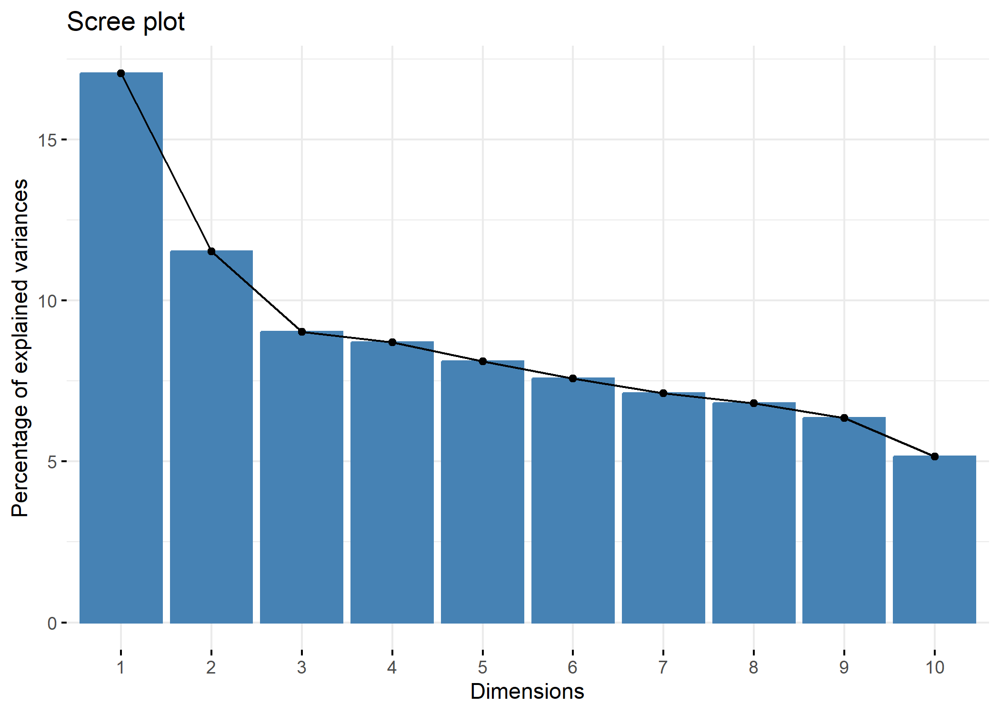
Répartition des modalités selon le premier axe
boxplot(acm, 2)
Répartition des modalités selon le second axe
Le tableau acm$cr contient les rapports de corrélation (variant de 0 à 1) entre les variables et les axes choisis au départ de l’ACM. Pour représenter graphiquement ces rapports, utiliser la fonction barplot ainsi : barplot(acm$cr[,num],names.arg=row.names( acm$cr),las=2) où num est le numéro de l’axe à représenter. Pour l’interprétation des axes, se concentrer sur les variables les plus structurantes, c’est-à-dire dont le rapport de corrélation est le plus proche de 1.
par(mfrow =c(2, 2))
for (i in1:4) barplot(acm$cr[, i], names.arg =row.names(acm$cr),
las =2, main =paste("Axe", i))
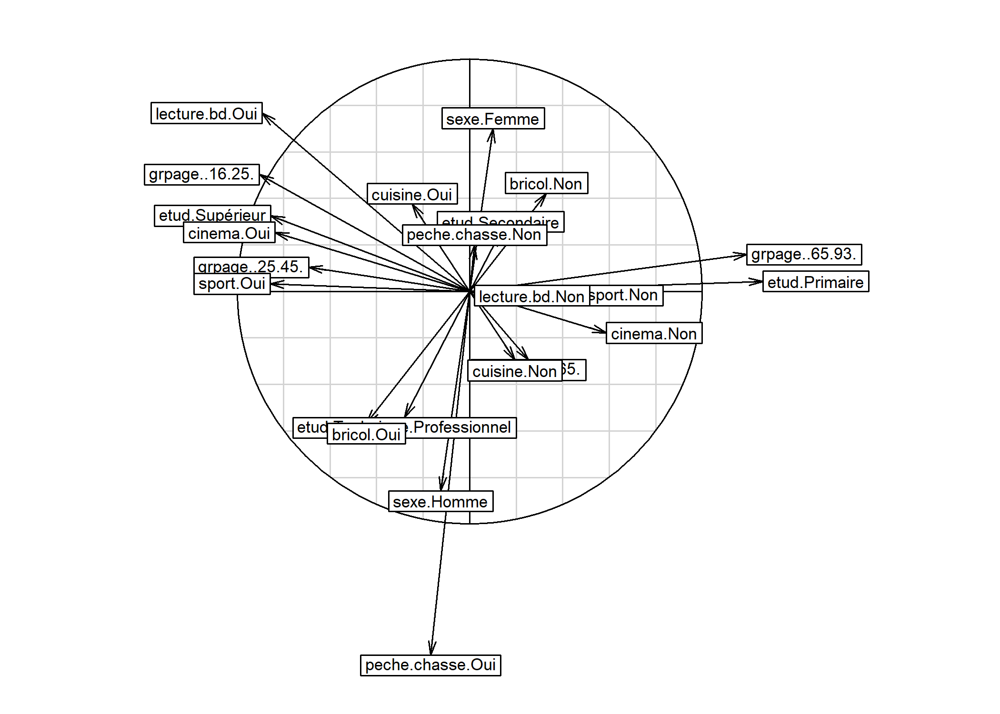
par(mfrow =c(1, 1))
Rapports de corrélation des variables sur les 4 premiers axes
Le paramètre mfrow de la fonction par permet d’indiquer à R que l’on souhaite afficher plusieurs graphiques sur une seule et même fenêtre, plus précisément que l’on souhaite diviser la fenêtre en deux lignes et deux colonnes.
Dans l’exemple précédent, après avoir produit notre graphique, nous avons réinitilisé cette valeur à c(1, 1) (un seul graphique par fenêtre) pour ne pas affecter les prochains graphiques que nous allons produire.
Pour représenter, les modalités dans le plan factoriel, on utilisera la fonction s.label. Par défaut, les deux premiers axes sont représentés.
s.label(acm$co, clabel =0.7)
Répartition des modalités selon les deux premiers axes
Il est bien sur possible de préciser les axes à représenter. L’argument boxes permet quant à lui d’indiquer si l’on souhaite tracer une boîte pour chaque modalité.
s.label(acm$co, 3, 4, clabel =0.7, boxes =FALSE)
Répartition des modalités selon les axes 3 et 4
Bien entendu, on peut également représenter les individus. En indiquant clabel=0 (une taille nulle pour les étiquettes), s.label remplace chaque observation par un symbole qui peut être spécifié avec pch.
s.label(acm$li, clabel =0, pch =17)
Répartition des individus selon les deux premiers axes
L’agument pch permet de spécifier le symbole à utiliser. Il peut prendre soit un nombre entier compris entre 0 et 25, soit un charactère textuel.
Lorsque l’on réalise une ACM, il n’est pas rare que plusieurs observations soient identiques, c’est-à-dire correspondent à la même combinaison de modalités. Dès lors, ces observations seront projetées sur le même point dans le plan factoriel. Une représentation classique des observations avec s.label ne permettra pas de rendre compte les effectifs de chaque point.
Le package JLutils, disponible seulement sur GitHub, propose une fonction s.freq représentant chaque point par un carré proportionnel au nombre d’individus.
Pour installer JLutils, on aura recours au package devtools et à sa fonction install_github :
La fonction s.freq s’emploie de manière similaire aux autres fonctions graphiques de ade4. Le paramètre csize permet d’ajuster la taille des carrés.
library(JLutils)
Loading required package: ggplot2
Loading required package: plyr
s.freq(acm$li)
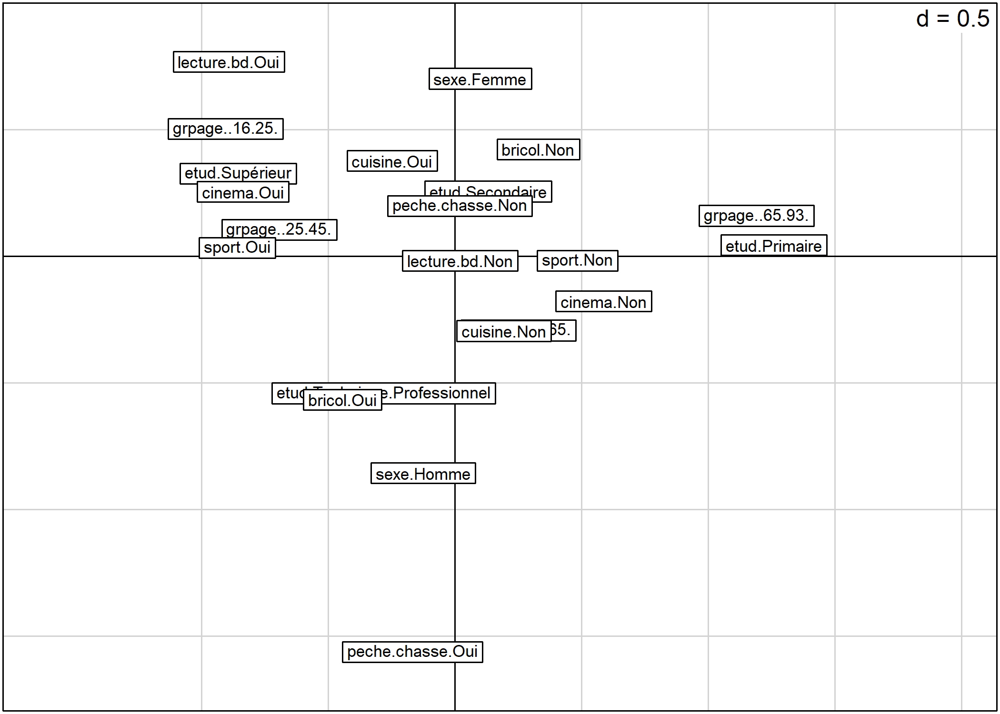
L’interprétation est tout autre, non ?
Gaston Sanchez propose un graphique amélioré des modalités dans le plan factoriel à cette adresse : http://rpubs.com/gaston/MCA.
La fonction s.value permet notamment de représenter un troisième axe factoriel. Dans l’exemple ci-après, nous projettons les individus selon les deux premiers axes factoriels. La taille et la couleur des carrés dépendent pour leur part de la coordonnée des individus sur le troisième axe factoriel. Le paramètre csi permet d’ajuster la taille des carrés.
s.value(acm$li, acm$li[, 3], 1, 2, csi =0.5)
Répartition des individus selon les trois premiers axes
s.arrow permet de représenter les vecteurs variables ou les vecteurs individus sous la forme d’une flèche allant de l’origine du plan factoriel aux coordonnées des variables/individus :
s.arrow(acm$co, clabel =0.7)
Vecteurs des modalités selon les deux premiers axes
s.hist permet de représenter des individus (ou des modalités) sur le plan factoriel et d’afficher leur distribution sur chaque axe :
s.hist(acm$li, clabel =0, pch =15)
Distribution des individus dans le plan factoriel
s.class et s.chull permettent de représenter les différentes observations classées en plusieurs catégories. Cela permet notamment de projeter certaines variables.
s.class représente les observations par des points, lie chaque observation au barycentre de la modalité à laquelle elle appartient et dessine une ellipse représentant la forme générale du nuage de points :
library(RColorBrewer)
s.class(acm$li, d2$sexe, col =brewer.pal(4, "Set1"))
Individus dans le plan factoriel selon le sexe (s.class)
s.chull représente les barycentres de chaque catégorie et dessine des lignes de niveaux représentant la distribution des individus de cette catégorie. Les individus ne sont pas directement représentés :
s.chull(acm$li, d2$sexe, col =brewer.pal(4, "Set1"))
Individus dans le plan factoriel selon le sexe (s.chull)
Il est préférable de fournir une liste de couleurs (via le paramètre col) pour rendre le graphique plus lisible. Si vous avez installé l’extension RColorBrewer, vous pouvez utiliser les différentes palettes de couleurs proposées. Pour afficher les palettes disponibles, utilisez display.brewer.all.
library(RColorBrewer)
display.brewer.all(8)
Pour obtenir une palette de couleurs, utilisez la fonction brewer.pal avec les arguments n (nombre de couleurs demandées) et pal(nom de la palette de couleurs désirée).
La variable catégorielle transmise à s.class ou s.chull n’est pas obligatoirement une des variables retenues pour l’ACM. Il est tout à fait possible d’utiliser une autre variable. Par exemple :
s.class(acm$li, d$trav.imp, col =brewer.pal(4, "Set1"))
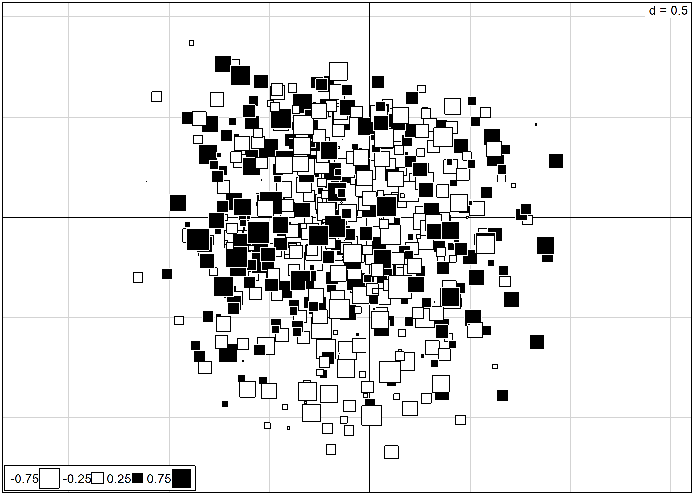
Individus dans le plan factoriel selon l’importance donnée au travail
Les fonctions scatter et biplot sont équivalentes : elles appliquent s.class à chaque variable utilisée pour l’ACM.
scatter(acm, col =brewer.pal(4, "Set1"))
La fonction scatter appliquée au résultat d’une ACM
ACM avec FactoMineR
Comme avec ade4, il est nécessaire de préparer les données au préalable (voir section précédente).
L’ACM se calcule avec la fonction MCA, l’argument ncp permettant de choisir le nombre d’axes à retenir :
library(FactoMineR)
acm2 <-MCA(d2, ncp =5, graph =FALSE)
acm2
**Results of the Multiple Correspondence Analysis (MCA)**
The analysis was performed on 2000 individuals, described by 9 variables
*The results are available in the following objects:
name
1 "$eig"
2 "$var"
3 "$var$coord"
4 "$var$cos2"
5 "$var$contrib"
6 "$var$v.test"
7 "$ind"
8 "$ind$coord"
9 "$ind$cos2"
10 "$ind$contrib"
11 "$call"
12 "$call$marge.col"
13 "$call$marge.li"
description
1 "eigenvalues"
2 "results for the variables"
3 "coord. of the categories"
4 "cos2 for the categories"
5 "contributions of the categories"
6 "v-test for the categories"
7 "results for the individuals"
8 "coord. for the individuals"
9 "cos2 for the individuals"
10 "contributions of the individuals"
11 "intermediate results"
12 "weights of columns"
13 "weights of rows"
acm2$eig
eigenvalue percentage of variance
dim 1 0.25757489 15.454493
dim 2 0.18363502 11.018101
dim 3 0.16164626 9.698776
dim 4 0.12871623 7.722974
dim 5 0.12135737 7.281442
dim 6 0.11213331 6.727999
dim 7 0.10959377 6.575626
dim 8 0.10340564 6.204338
dim 9 0.09867478 5.920487
dim 10 0.09192693 5.515616
dim 11 0.07501208 4.500725
dim 12 0.06679676 4.007805
dim 13 0.06002063 3.601238
dim 14 0.05832024 3.499215
dim 15 0.03785276 2.271166
cumulative percentage of variance
dim 1 15.45449
dim 2 26.47259
dim 3 36.17137
dim 4 43.89434
dim 5 51.17579
dim 6 57.90378
dim 7 64.47941
dim 8 70.68375
dim 9 76.60424
dim 10 82.11985
dim 11 86.62058
dim 12 90.62838
dim 13 94.22962
dim 14 97.72883
dim 15 100.00000
sum(acm2$eig$eigenvalue)
[1] 1.666667
En premier lieu, il apparait que l’inertie totale obtenue avec MCA est différente de celle observée avec dudi.acm. Cela est dû à un traitement différents des valeurs manquantes. Alors que dudi.acm exclu les valeurs manquantes, MCA les considèrent, par défaut, comme une modalité additionnelle. Pour calculer l’ACM uniquement sur les individus n’ayant pas de valeur manquante, on aura recours à complete.cases :
eigenvalue percentage of variance
dim 1 0.24790700 17.162792
dim 2 0.16758465 11.602014
dim 3 0.13042357 9.029324
dim 4 0.12595105 8.719688
dim 5 0.11338629 7.849820
dim 6 0.10976674 7.599236
dim 7 0.10060204 6.964757
dim 8 0.09802387 6.786268
dim 9 0.09283131 6.426783
dim 10 0.07673502 5.312425
dim 11 0.06609694 4.575942
dim 12 0.05950655 4.119684
dim 13 0.05562942 3.851267
cumulative percentage of variance
dim 1 17.16279
dim 2 28.76481
dim 3 37.79413
dim 4 46.51382
dim 5 54.36364
dim 6 61.96287
dim 7 68.92763
dim 8 75.71390
dim 9 82.14068
dim 10 87.45311
dim 11 92.02905
dim 12 96.14873
dim 13 100.00000
sum(acm2$eig$eigenvalue)
[1] 1.444444
Les possibilités graphiques de FactoMineR sont différentes de celles de ade4. Un recours à la fonction plot affichera par défaut les individus, les modalités et les variables. La commande ?plot.MCA permet d’accéder au fichier d’aide de cette fonction (i.e. de la méthode générique plot appliquée aux objets de type MCA) et de voir toutes les options graphiques. L’argument choix permet de spécifier ce que l’on souhaite afficher (« ind » pour les individus et les catégories, « var » pour les variables). L’argument invisible quant à lui permet de spécifier ce que l’on souhaite masquer. Les axes à afficher se précisent avec axes. Voir les exemples ci-dessous.
plot(acm2)
Plan factoriel (deux premiers axes)
plot(acm2, axes =c(3, 4))
Plan factoriel (axes 3 et 4)
plot(acm2, choix ="ind")
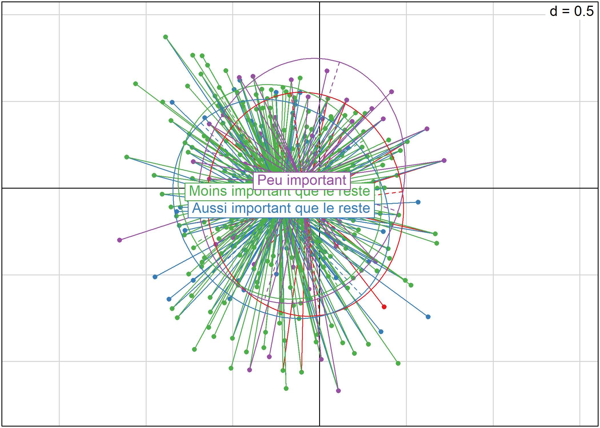
Plan factoriel (seulement les individus et les catégories)
plot(acm2, choix ="ind", invisible ="ind")
Plan factoriel (seulement les catégories)
plot(acm2, choix ="var")
Plan factoriel (seulement les variables)
La fonction plotellipses trace des ellipses de confiance atour des modalités de variables qualitatives. L’objectif est de voir si les modalités d’une variable qualitative sont significativement différentes les unes des autres.
Par défaut (means=TRUE), les ellipses de confiance sont calculées pour les coordonnées moyennes de chaque catégorie.
plotellipses(acm2)
Ellipses de confiance (means=TRUE) dans le plan factoriel
L’option means=FALSE calculera les ellipses de confiance pour l’ensemble des coordonnées des observations relevant de chaque catégorie.
plotellipses(acm2, means =FALSE)
Ellipses de confiance (means=FALSE) dans le plan factoriel
La fonction dimdesc aide à décrire et interpréter les dimensions de l’ACM. Cette fonction est très utile quand le nombre de variables est élevé. Elle permet de voir à quelles variables les axes sont le plus liés : quelles variables et quelles modalités décrivent le mieux chaque axe ?
Pour les variables qualitatives, un modèle d’analyse de variance à un facteur est réalisé pour chaque dimension ; les variables à expliquer sont les coordonnées des individus et la variable explicative est une des variables qualitatives. Un test F permet de voir si la variable a un effet significatif sur la dimension et des tests T sont réalisés modalité par modalité (avec le contraste somme des alpha_i=0). Cela montre si les coordonnées des individus de la sous-population définie par une modalité sont significativement différentes de celles de l’ensemble de la population (i.e. différentes de 0). Les variables et modalités sont triées par probabilité critique et seules celles qui sont significatives sont gardées dans le résultat.
Il existe de nombreuses techniques statistiques visant à partinionner une population en différentes classes ou sous-groupes. La classification ascendante hiérarchique (CAH) est l’une d’entre elles. On cherche à ce que les individus regroupés au sein d’une même classe (homogénéité intra-classe) soient le plus semblables possibles tandis que les classes soient le plus dissemblables (hétérogénéité inter-classe).
Le principe de la CAH est de rassembler des individus selon un critère de ressemblance défini au préalable qui s’exprimera sous la forme d’une matrice de distances, exprimant la distance existant entre chaque individu pris deux à deux. Deux observations identiques auront une distance nulle. Plus les deux observations seront dissemblables, plus la distance sera importante. La CAH va ensuite rassembler les individus de manière itérative afin de produire un dendrogramme ou arbre de classification. La classification est ascendante car elle part des observations individuelles ; elle est hiérarchique car elle produit des classes ou groupes de plus en plus vastes, incluant des sous-groupes en leur sein. En découpant cet arbre à une certaine hauteur choisie, on produira la partition désirée.
La notion de ressemblance entre observations est évaluée par une distance entre individus. Plusieurs type de ditances existent selon les données utilisées.
Il existe de nombreuses distances mathématiques pour les variables quantitatives (euclidiennes, Manhattan…) que nous n’aborderons pas ici1. La plupart peuvent être calculées avec la fonction dist.
Usuellement, pour un ensemble de variables qualitatives, on aura recours à la distance du F² qui est celle utilisée pour l’analyse des correspondances multiples (voir le chapitre dédié). Avec l’extension ade4, la distance du F² s’obtient avec la fonction dist.dudi2. Le cas particulier de la CAH avec l’extension FactoMineR sera abordée dans une section spécifique ci-après. Nous évoquerons également la distance de Gower qui peut s’appliquer à un ensemble de variables à la fois qualitatives et quantitatives et qui se calcule avec la fonction daisy de l’extension cluster. Enfin, dans le chapitre sur l’analyse de séquences, nous verrons également la fonction seqdist (extension TraMineR) permettant de calculer une distance entre séquences.
Distance de Gower
En 1971, Gower a proposé un indice de similarité qui porte son nom3. L’objectif de cet indice consiste à mesurer dans quelle mesure deux individus sont semblables. L’indice de Gower varie entre 0 et 1. Si l’indice vaut 1, les deux individus sont identiques. À l’opposé, s’il vaut 0, les deux individus considérés n’ont pas de point commun. Si l’on note Sg l’indice de similarité de Gower, la distance de Gower Dg s’obtient simplement de la manière suivante : Dg = 1 - Sg. Ainsi, la distance sera nulle entre deux individus identiques et elle sera égale à 1 entre deux individus totalement différents. Cette distance s’obtient sous R avec la fonction daisy du package cluster.
L’indice de similarité de Gower entre deux individus x1 et x2 se calcule de la manière suivante :
p représente le nombre total de caractères (ou de variables) descriptifs utilisés pour comparer les deux individus4. s12j représente la similarité partielle entre les individus 1 et 2 concernant le descripteur j. Cette similarité partielle se calcule différemment s’il s’agit d’une variable qualitative ou quantitative :
variable qualitative :s12j vaut 1 si la variable j prend la même valeur pour les individus 1 et 2, et vaut 0 sinon. Par exemple, si 1 et 2 sont tous les deux « grand », alors s12j vaudra 1. Si 1 est « grand » et 2 « petit », s12j vaudra 0.
variable quantitative : la différence absolue entre les valeurs des deux variables est tout d’abord calculée, soit |y1j - y2j|. Puis l’écart maximum observé sur l’ensemble du fichier est déterminé et noté Rj. Dès lors, la similarité partielle vaut S12j = 1 - |y1j - y2j| / Rj.
Dans le cas où l’on n’a que des variables qualitatives, la valeur de l’indice de Gower correspond à la proportion de caractères en commun. Supposons des individus 1 et 2 décris ainsi :
homme / grand / blond / étudiant / urbain
femme / grande / brune / étudiante / rurale
Sur les 5 variables utilisées pour les décrire, 1 et 2 ont deux caractéristiques communes : ils sont grand(e)s et étudiant(e)s. Dès lors, l’indice de similarité de Gower entre 1 et 2 vaut 2/5 = 0,4 (soit une distance de 1 - 0,4 = 0,6).
Plusieurs approches peuvent être retenues pour traiter les valeurs manquantes :
supprimer tout individu n’étant pas renseigné pour toutes les variables de l’analyse ;
considérer les valeurs manquantes comme une modalité en tant que telle ;
garder les valeurs manquantes en tant que valeurs manquantes.
Le choix retenu modifiera les distances de Gower calculées. Supposons que l’on ait :
homme / grand / blond / étudiant / urbain
femme / grande / brune / étudiante / manquant
Si l’on supprime les individus ayant des valeurs manquantes, 2 est retirée du fichier d’observations et aucune distance n’est calculée.
Si l’on traite les valeurs manquantes comme une modalité particulière, 1 et 2 partagent alors 2 caractères sur les 5 analysés, la distance de Gower entre eux est alors de 1 - 2/5 =1 - 0,4 = 0,6.
Si on garde les valeurs manquantes, l’indice de Gower est dès lors calculé sur les seuls descripteurs renseignés à la fois pour 1 et 2. La distance de Gower sera calculée dans le cas présent uniquement sur les 4 caractères renseignés et vaudra 1 - 2/4 = 0,5.
Distance du F²
Il s’agit de la distance utilisée dans les analyses de correspondance multiples (ACM). C’est une variante de la distance du ². Nous considérons ici que nous avons Q questions (soit Q variables initiales de type facteur). À chaque individu est associé un patron c’est-à-dire une certaine combinaison de réponses aux Q questions. La distance entre deux individus correspond à la distance entre leurs deux patrons. Si les deux individus présentent le même patron, leur distance sera nulle. La distance du F² peut s’exprimer ainsi :
où Li et Lj sont deux patrons, Q le nombre total de questions. dik vaut 1 si la modalité k est présente dans le patron Li, 0 sinon. fk est la fréquence de la modalité k dans l’ensemble de la population.
Exprimé plus simplement, on fait la somme de l’inverse des modalités non communes aux deux patrons, puis on divise par le nombre total de question. Si nous reprenons notre exemple précédent :
homme / grand / blond / étudiant / urbain
femme / grande / brune / étudiante / rurale
Pour calculer la distance entre 1 et 2, il nous faut connaître la proportion des différentes modalités dans l’ensemble de la population étudiée. En l’occurrence :
Les modalités non communes entre les profils de 1 et 2 sont : homme, femme, blond, brun, urbain et rural. La distance du F² entre 1 et 2 est donc la suivante :
Cette distance, bien que moins intuitive que la distance de Gower évoquée précédemment, est la plus employée pour l’analyse d’enquêtes en sciences sociales. Il faut retenir que la distance entre deux profils est dépendante de la distribution globale de chaque modalité dans la population étudiée. Ainsi, si l’on recalcule les distances entre individus à partir d’un sous-échantillon, le résultat obtenu sera différent. De manière générale, les individus présentant des caractéristiques rares dans la population vont se retrouver éloignés des individus présentant des caractéristiques fortement représentées.
La matrice des distances s’obtient dès lors avec la fonction dist.dudi :
md <-dist.dudi(acm)
Calcul du dendrogramme
Il faut ensuite choisir une méthode d’agrégation pour construire le dendrogramme. De nombreuses solutions existent (saut minimum, distance maximum, moyenne, Ward…). Chacune d’elle produira un dendrogramme différent. Nous ne détaillerons pas ici ces différentes techniques5. Cependant, à l’usage, on privilégiera le plus souvent la méthode de Ward6. De manière simplifiée, cette méthode cherche à minimiser l’inertie intra-classe et à maximiser l’inertie inter-classe afin d’obtenir des classes les plus homogènes possibles. Cette méthode est souvent incorrectement présentée comme une méthode de minimisation de la variance alors qu’au sens strict Ward vise l’augmentation mininum de la somme des carrés (“minimum increase of sum-of-squares (of errors)”)7.
En raison de la variété des distances possibles et de la variété des techniques d’agrégation, on pourra être amené à réaliser plusieurs dendrogrammes différents sur un même jeu de données jusqu’à obtenir une classification qui fait « sens ».
La fonction de base pour le calcul d’un dendrogramme est hclust en précisant le critère d’agrégation avec method. Dans notre cas, nous allons opter pour la méthode de Ward appliquée au carré des distances (ce qu’on indique avec method = "ward.D2"8) :
arbre <-hclust(md, method ="ward.D2")
Le temps de calcul d’un dendrogramme peut être particulièrement important sur un gros fichier de données. L’extension fastcluster permet de réduire significativement le temps de calcul. Il suffit d’installer puis d’appeler cette extension. La fonction hclust sera automatiquement remplacée par cette version optimisée. Elle prends les mêmes paramètres :
Le dendrogramme obtenu peut être affiché simplement avec plot. Lorsque le nombre d’individus est important, il peut être utile de ne pas afficher les étiquettes des individus avec labels=FALSE.
plot(arbre, labels =FALSE, main ="Dendrogramme")
Dendrogramme obtenu avec hclust
La fonction agnes de l’extension cluster peut également être utilisée pour calculer le dendrogramme. Cependant, à l’usage, elle semble être un peu plus lente que hclust.
ATTENTION : la méthode implémentée dans la fonction agnes correspond à l’option method = "ward.D2" de hclust.
Le résultat obtenu n’est pas au même format que celui de hclust. Il est possible de transformer un objet agnes au format hclust avec as.hclust.
as.hclust(arbre2)
Découper le dendrogramme
Pour obtenir une partition de la population, il suffit de découper le dendrogramme obtenu à une certaine hauteur. En premier lieu, une analyse de la forme du dendrogramme pourra nous donner une indication sur le nombre de classes à retenir. Dans notre exemple, deux branches bien distinctes apparaissent sur l’arbre.
Pour nous aider, nous pouvons représenter les sauts d’inertie du dendrogramme selon le nombre de classes retenues.
inertie <-sort(arbre$height, decreasing =TRUE)
plot(inertie[1:20], type ="s", xlab ="Nombre de classes",
ylab ="Inertie")
Inertie du dendrogramme
On voit trois sauts assez nets à 2, 5 et 8 classes, que nous avons représentés ci-dessous respectivement en vert, en rouge et en bleu.
plot(inertie[1:20], type ="s", xlab ="Nombre de classes",
ylab ="Inertie")
points(c(2, 5, 8), inertie[c(2, 5, 8)], col =c("green3",
"red3", "blue3"), cex =2, lwd =3)
Sauts d’inertie du dendrogramme
La fonction rect.hclust permet de visualiser les différentes partitions directement sur le dendrogramme.
plot(arbre, labels =FALSE, main ="Partition en 2, 5 ou 8 classes",
xlab ="", ylab ="", sub ="", axes =FALSE, hang =-1)
rect.hclust(arbre, 2, border ="green3")
rect.hclust(arbre, 5, border ="red3")
rect.hclust(arbre, 8, border ="blue3")
Différentes partitions du dendrogramme
L’extension FactoMineR (que nous aborderons dans une section dédiée ci-après) suggère d’utiliser la partition ayant la plus grande perte relative d’inertie.
L’extension JLutils (disponible sur GitHub) propose une fonction best.cutree qui permet de calculer cette indicateur à partir de n’importe quel dendrogramme calculé avec hclust ou agnes.
Pour installer JLutils, on aura recours au package devtools et à sa fonction install_github :
Par défaut, best.cutree regarde quelle serait la meilleure partition entre 3 et 20 classes.
library(JLutils)
Loading required package: ggplot2
Loading required package: plyr
best.cutree(arbre)
[1] 5
En l’occurence il s’agirait d’une partition en 5 classes. Il est possible de modifier le minimum et le maximum des partitions recherchées avec min et max.
best.cutree(arbre, min =2)
[1] 2
On peut également représenter le graphique des pertes relatives d’inertie avec graph=TRUE. La meilleure partition selon ce critère est représentée par un point noir et la seconde par un point gris.
best.cutree(arbre, min =2, graph =TRUE, xlab ="Nombre de classes",
ylab ="Inertie relative")
[1] 2
Perte relative d’inertie selon le nombre de classes
Un découpage en deux classes minimise ce critère. Cependant, si l’on souhaite réaliser une analyse un peu plus fine, un nombre de classes plus élevé serait pertinent. Nous allons donc retenir un découpage en cinq classes. Le découpage s’effectue avec la fonction cutree.
La typologie obtenue peut être représentée dans le plan factoriel avec s.class.
par(mfrow =c(1, 2))
library(RColorBrewer)
s.class(acm$li, as.factor(typo), col =brewer.pal(5,
"Set1"), sub ="Axes 1 et 2")
s.class(acm$li, as.factor(typo), 3, 4, col =brewer.pal(5,
"Set1"), sub ="Axes 3 et 4")
par(mfrow =c(1, 1))
Projection de la typologie obtenue par CAH selon les 4 premiers axes
De nombreuses possibilités graphiques sont possibles avec les dendrogrammes. Des exemples documentés sont disponibles à cette adresse : http://rpubs.com/gaston/dendrograms.
Romain François a developpé une fonction A2Rplot permettant de réaliser facilement un dendrogramme avec les branches colorées9. Par commodité, cette fonction est disponible directement au sein de l’extension JLutils.
Pour réaliser le graphique, on indiquera le nombre de classes et les couleurs à utiliser pour chaque branche de l’arbre :
On pourra aussi noter l’extension ggdendro pour représenter des dendrogrammes avec ggplot2 ou encore l’extension dendextend qui permet de manipuler, représenter et comparer des dendrogrammes10.
CAH avec l’extension FactoMineR
L’extension FactoMineR fournit une fonction HCPC permettant de réaliser une classification hiérarchique à partir du résultats d’une analyse factorielle réalisée avec la même extension (voir la section dédiée du chapitre sur l’ACM).
HCPC réalise à la fois le calcul de la matrice des distances, du dendrogramme et le partitionnement de la population en classes. Par défaut, HCPC calcule le dendrogramme à partir du carré des distances du F² et avec la méthode de Ward.
Par défaut, l’arbre est affiché à l’écran et l’arbre sera coupé selon la partition ayant la plus grande perte relative d’inertie (comme avec best.cutree). Utilisez graph=FALSE pour ne pas afficher le graphique et l’argument nb.clust pour indiquer le nombre de classes désirées.
On pourra représenter le dendrogramme avec plot et l’argument choice="tree".
plot(cah, choice ="tree")
Dendrogramme obtenu avec HCPC (5 axes)
Il apparait que le dendrogramme obtenu avec HCPC diffère de celui que nous avons calculé précédemment en utilisant la matrice des distances fournies par dist.dudi. Cela est dû au fait que HCPC procède différement pour calculer la matrice des distances en ne prenant en compte que les axes retenus dans le cadre de l’ACM. Pour rappel, nous avions retenu que 5 axes dans le cadre de notre ACM :
HCPC n’a donc pris en compte que ces 5 premiers axes pour calculer les distances entre les individus, considérant que les autres axes n’apportent que du « bruit » rendant la classification instable. Cependant, comme le montre summary(acm2), nos cinq premiers axes n’expliquent que 54 % de la variance. Il usuellement préférable de garder un plus grande nombre d’axes afin de couvrir au moins 80 à 90 % de la variance11. De son côté, dist.dudi prends en compte l’ensemble des axes pour calculer la matrice des distances. On peut reproduire cela avec FactoMineR en indiquant ncp=Inf lors du calcul de l’ACM.
D’autres graphiques sont disponibles, en faisant varier la valeur de l’argument choice :
plot(cah, choice ="3D.map")
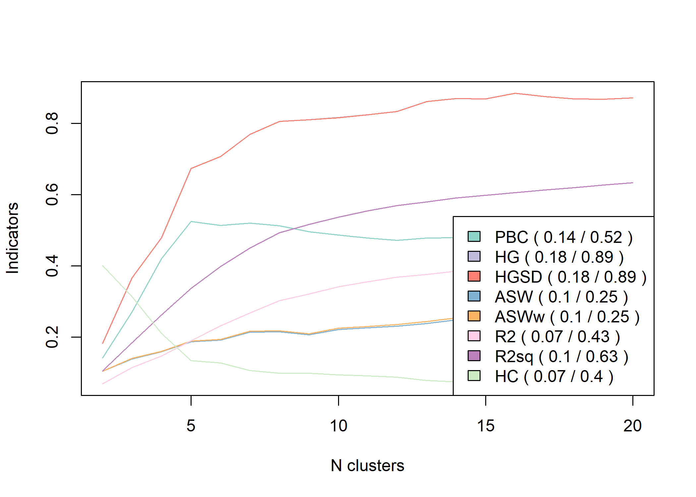
Représentation en 3 dimensions du dendrogramme
plot(cah, choice ="bar")
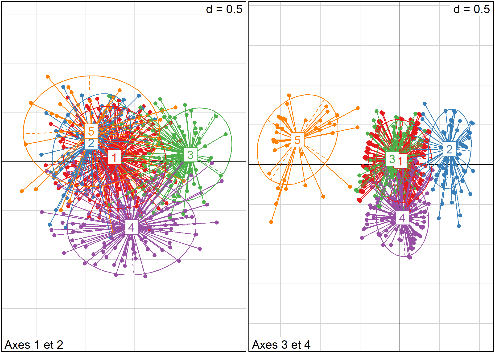
Gains d’inertie
plot(cah, choice ="map")
Projection des catégories sur le plan factoriel
L’objet renvoyé par HCPC contient de nombreuses informations. La partition peut notamment être récupérée avec cah$data.clust$clust. Il y a également diverses statistiques pour décrire les catégories.
cah
**Results for the Hierarchical Clustering on Principal Components**
name
1 "$data.clust"
2 "$desc.var"
3 "$desc.var$test.chi2"
4 "$desc.axes$category"
5 "$desc.axes"
6 "$desc.axes$quanti.var"
7 "$desc.axes$quanti"
8 "$desc.ind"
9 "$desc.ind$para"
10 "$desc.ind$dist"
11 "$call"
12 "$call$t"
description
1 "dataset with the cluster of the individuals"
2 "description of the clusters by the variables"
3 "description of the cluster var. by the categorical var."
4 "description of the clusters by the categories."
5 "description of the clusters by the dimensions"
6 "description of the cluster var. by the axes"
7 "description of the clusters by the axes"
8 "description of the clusters by the individuals"
9 "parangons of each clusters"
10 "specific individuals"
11 "summary statistics"
12 "description of the tree"
Cette même fonction peut aussi être utilisée pour calculer une distance après une analyse en composantes principales ou une analyse mixte de Hill et Smith.
Pour une description mathématique plus détaillée de cette fonction, notamment en cas de valeur manquante, se référer à l’article original de Gower précédemment cité.
On pourra consulter le cours de FG Carpentier déjà cité ou bien des ouvrages d’analyse statistique.
Depuis la version 3.1 de R. L’option method = "ward.D" correspondant à la version disponible dans les versions précédentes de R. Mais il est à noter que la méthode décrite par Ward dans son article de 1963 correspond en réalité à method = "ward.D2.
L’extension centrale pour l’analyse de survie est survival.
Un très bon tutoriel (en anglais et en 3 étapes), introduisant les concepts de l’analyse de survie, des courbes de Kaplan-Meier et des modèles de Cox et leur mise en oeuvre pratique sous R est disponible en ligne :
A noter, il est possible d’utiliser la fonction step sur un modèle de Cox, pour une sélection pas à pas d’un meilleur modèle basé sur une minimisation de l’AIC (voir le chapitre sur la régression logistique).
L’excellente extension broom peut également être utilisée sur des modèles de survie (Kaplan-Meier ou Cox) pour en convertir les résultats sous la forme d’un tableau de données.
Pour approfondir les possibilités offertes par l’extension survival, on pourra également consulter les différentes vignettes fournies avec l’extension (voir https://cran.r-project.org/package=survival).
Un exemple concret : mortalité infanto-juvénile
Dans cet exemple, nous allons utiliser le jeu de données fecondite fourni par l’extension questionr. Ce jeu de données comporte trois tableaux de données : menages, femmes et enfants.
Nous souhaitons étudier ici la survie des enfants entre la naissance et l’âge de 5 ans. Dans un premier temps, nous comparerons la survie des jeunes filles et des jeunes garçons. Dans un second temps, nous procéderons à une analyse multivariée en prenant en compte les variables suivantes :
sexe de l’enfant
milieu de résidence
niveau de vie du ménage
structure du ménage
niveau d’éducation de la mère
âge de la mère à la naissance de l’enfant
enfin, une variable un peu plus compliquée, à savoir si le rang de naissance de l’enfant (second, troisième, quatrième, etc.) est supérieur au nombre idéal d’enfants selon la mère.
Nous allons préparer les données selon deux approches : soit en utilisant l’extension data.table (voir l’introduction à data.table), soit en utilisant l’extension dplyr (voir l’introduction à dplyr).
Chargeons les données en mémoire et listons les variables disponibles.
variable label
1 id_menage Identifiant du ménage
2 taille Taille du ménage (nombre de membres)
3 sexe_chef Sexe du chef de ménage
4 structure Structure démographique du ménage
5 richesse Niveau de vie (quintiles)
lookfor(femmes)
variable
1 id_femme
2 id_menage
3 poids
4 date_entretien
5 date_naissance
6 age
7 milieu
8 region
9 educ
10 travail
11 matri
12 religion
13 journal
14 radio
15 tv
16 nb_enf_ideal
17 test
label
1 Identifiant de l'enquêtée
2 Identifiant du ménage
3 Poids statistique
4 Date de passation du questionnaire
5 Date de naissance
6 Âge révolu (en années) à la date de passation du questionnaire
7 Milieu de résidence
8 Région de résidence
9 Niveau d'éducation
10 A un emploi ?
11 Statut matrimonial
12 Religion
13 Lit la presse ?
14 Ecoute la radio ?
15 Regarde la télévision ?
16 Nombre idéal d'enfants
17 A déjà fait un test de dépistage du VIH ?
lookfor(enfants)
variable
1 id_enfant
2 id_femme
3 date_naissance
4 sexe
5 survie
6 age_deces
label
1 Identifiant de l'enfant
2 Identifiant de la mère
3 Date de naissance
4 Sexe de l'enfant
5 L'enfant est-il toujours en vie ?
6 Age au décès (en mois)
Préparation des données avec data.table
Tout d’abord, regardons sous quel format elles sont stockées.
class(menages)
[1] "tbl_df" "tbl" "data.frame"
describe(menages)
[1814 obs. x 5 variables] tbl_df tbl data.frame
$id_menage: Identifiant du ménage
numeric: 1 2 3 4 5 6 7 8 9 10 ...
min: 1 - max: 1814 - NAs: 0 (0%) - 1814 unique values
$taille: Taille du ménage (nombre de membres)
numeric: 7 3 6 5 7 6 15 6 5 19 ...
min: 1 - max: 31 - NAs: 0 (0%) - 30 unique values
$sexe_chef: Sexe du chef de ménage
labelled double: 2 1 1 1 1 2 2 2 1 1 ...
min: 1 - max: 2 - NAs: 0 (0%) - 2 unique values
2 value labels: [1] homme [2] femme
$structure: Structure démographique du ménage
labelled double: 4 2 5 4 4 4 5 2 5 5 ...
min: 1 - max: 5 - NAs: 0 (0%) - 5 unique values
6 value labels: [0] pas d'adulte [1] un adulte [2] deux adultes de sexe opposé [3] deux adultes de même sexe [4] trois adultes ou plus avec lien de parenté [5] adultes sans lien de parenté
$richesse: Niveau de vie (quintiles)
labelled double: 1 2 2 1 1 3 2 5 4 3 ...
min: 1 - max: 5 - NAs: 0 (0%) - 5 unique values
5 value labels: [1] très pauvre [2] pauvre [3] moyen [4] riche [5] très riche
Les tableaux de données sont au format tibble (c’est-à-dire sont de la classe tbl_df) et les variables catégorielles sont du type labelled (voir le chapitre sur les vecteurs labellisés). Ce format correspond au format de données si on les avait importées depuis SPSS avec l’extension haven (voir le chapitre sur l’import de données).
En premier lieu, il nous faut convertir les tableaux de données au format data.table, ce qui peut se faire avec la fonction setDT1. Par ailleurs, nous allons également charger en mémoire l’extension labelled pour la gestion des vecteurs labellisés.
En premier lieu, il nous faut calculer la durée d’observation des enfants, à savoir le temps passé entre la date de naissance (variable du fichier enfants) et la date de passation de l’entretien (fournie par le tableau de données femmes). Pour récupérer des variables du fichier femmes dans le fichier enfants, nous allons procéder à une fusion de table (voir le chapitre dédié). Pour le calcul de la durée d’observation, nous allons utiliser le package lubridate (voir le chapitre calculer un âge et celui sur la gestion des dates). Nous effectuerons l’analyse en mois (puisque l’âge au décès est connu en mois). Dès lors, la durée d’observation sera calculée en mois.
enfants <-merge(
enfants,
femmes[, .(id_femme, date_entretien)],
by ="id_femme",
all.x =TRUE
)
# duree observation en moislibrary(lubridate)
enfants[, duree_observation :=time_length(interval(date_naissance, date_entretien), unit ="months")]
ATTENTION : il y 11 enfants soi-disant nés après la date d’enquête ! Quelle que soit l’enquête, il est rare de ne pas observer d’incohérences. Dans le cas présent, il est fort possible que la date d’entretien puisse parfois être erronnée (par exemple si l’enquêteur a inscrit une date sur le questionnaire papier le jour du recensement du ménage mais n’ai pu effectué le questionnaire individuel que plus tard). Nous décidons ici de procéder à une correction en ajoutant un mois aux dates d’entretien problématiques. D’autres approches auraient pu être envisagées, comme par exemple exclure ces observations problématiques. Cependant, cela aurait impacté le calcul du range de naissance pour les autres enfants issus de la même mère. Quoiqu’il en soit, il n’y a pas de réponse unique. À vous de vous adapter au contexte particulier de votre analyse.
Les âges au décès sont ici exprimés en mois révolus. Les décès à un mois révolu correspondent à des décès entre 1 et 2 mois exacts. Par ailleurs, les durées d’observation que nous avons calculées avec time_length sont des durées exactes, c’est-à-dire avec la partie décimale. Pour une analyse de survie, on ne peut mélanger des durées exactes et des durées révolues. Trois approches peuvent être envisagées :
faire l’analyse en mois révolus, auquel cas on ne gardera que la partie entière des durées d’observations avec la fonction trunc ;
considérer qu’un âge au décès de 3 mois révolus correspond en moyenne à 3,5 mois exacts et donc ajouter 0,5 à tous les âges révolus ;
imputer un âge au décès exact en distribuant aléatoirement les décès à 3 mois révolus entre 3 et 4 mois exacts, autrement dit en ajoutant aléatoirement une partie décimale aux âges révolus.
Nous allons ici adopter la troisième approche en considérant que les décès se répartissent de manière uniforme au sein d’un même mois. Nous aurons donc recours à la fonction runif qui permets de générer des valeurs aléatoires entre 0 et 1 selon une distribustion uniforme.
Pour définir notre objet de survie, il nous faudra deux variables. Une première, temporelle, indiquant la durée à laquelle survient l’évènement étudié (ici le décès) pour ceux ayant vécu l’évènement et la durée d’observation pour ceux n’ayant pas vécu l’évènement (censure à droite). Par ailleurs, une seconde variable indiquant si les individus ont vécu l’évènement (0 pour non, 1 pour oui). Or, ici, la variable survie est codée 0 pour les décès et 1 pour ceux ayant survécu. Pour plus de détails, voir l’aide de la fonction Surv.
Occupons-nous maintenant des variables explicatives que nous allons inclure dans l’analyse. Tout d’abord, ajoutons à la table enfants les variables nécessaires des tables femmes et menages. Notons qu’il nous faudra importer id_menage de la table femmes pour pouvoir fusionner ensuite la table enfants avec la table menages. Par ailleurs, pour éviter une confusion sur la variable date_naissance, nous renommons à la volée cette variable de la table femmes en date_naissance_mere.
Les variables catégorielles sont pour l’heure sous formes de vecteurs labellisés. Or, dans un modèle, il est impératif de les convertir en facteurs pour qu’elles soient bien traitées comme des variables catégorielles (autrement elles seraient traitées comme des variables continues). On aura donc recours à la fonction to_factor de l’extension labelled.
Regardons plus attentivement, la variable structure.
freq(enfants$structure)
n
[0] pas d'adulte 0
[1] un adulte 45
[2] deux adultes de sexe opposé 505
[3] deux adultes de même sexe 71
[4] trois adultes ou plus avec lien de parenté 764
[5] adultes sans lien de parenté 199
%
[0] pas d'adulte 0.0
[1] un adulte 2.8
[2] deux adultes de sexe opposé 31.9
[3] deux adultes de même sexe 4.5
[4] trois adultes ou plus avec lien de parenté 48.2
[5] adultes sans lien de parenté 12.6
val%
[0] pas d'adulte 0.0
[1] un adulte 2.8
[2] deux adultes de sexe opposé 31.9
[3] deux adultes de même sexe 4.5
[4] trois adultes ou plus avec lien de parenté 48.2
[5] adultes sans lien de parenté 12.6
Tout d’abord, la modalité pas d’adulte n’est pas représentée dans l’échantillon. On aura donc recours à l’argument drop_unused_labels pour ne pas conserver cette modalité. Par ailleurs, nous considérons que la situation familiale à partir de laquelle nous voudrons comparer les autres dans notre modèle, donc celle qui doit être considérée comme la modalité de référence, est celle du ménage nucléaire. Cette modalité (deux adultes de sexe opposé) n’étant pas la première, nous aurons recours à la fonction relevel{data-pkg = “stats”}.
La modalité supérieur est peu représentée dans notre échantillon. Nous allons la fusionner avec la modalité secondaire (voir la section Regrouper les modalités d’une variable du chapitre Recodage).
enfants[, age_mere_naissance :=time_length(
interval(date_naissance_mere, date_naissance),
unit ="years"
)]
enfants$gpage_mere_naissance <-cut(
enfants$age_mere_naissance,
include.lowest =TRUE, right =FALSE,
breaks=c(13, 20, 30, 50)
)
levels(enfants$gpage_mere_naissance) <-c(
"19 ou moins", "20-29", "30 et plus"
)
enfants$gpage_mere_naissance <-relevel(enfants$gpage_mere_naissance, "20-29")
freq(enfants$gpage_mere_naissance)
n % val%
20-29 888 56.1 56.1
19 ou moins 257 16.2 16.2
30 et plus 439 27.7 27.7
Reste à calculer si le rang de naissance de l’enfant est supérieur au nombre idéal d’enfants tel que défini par la mère. On aura recours à la fonction rank appliquée par groupe (ici calculé séparément pour chaque mère). L’argument ties.method permet d’indiquer comment gérer les égalités (ici les naissances multiples, e.g. les jumeaux). Comme nous voulons comparer le rang de l’enfant au nombre idéal d’enfants, nous allons retenir la méthode "max" pour obtenir, dans le cas présent, le nombre total d’enfants déjà nés2. Avant de calculer un rang, il est impératif de trier préalablement le tableau (voir le chapitre Tris).
Tout d’abord, regardons sous quel format elles sont stockées.
data(fecondite)
class(menages)
[1] "tbl_df" "tbl" "data.frame"
describe(menages)
[1814 obs. x 5 variables] tbl_df tbl data.frame
$id_menage: Identifiant du ménage
numeric: 1 2 3 4 5 6 7 8 9 10 ...
min: 1 - max: 1814 - NAs: 0 (0%) - 1814 unique values
$taille: Taille du ménage (nombre de membres)
numeric: 7 3 6 5 7 6 15 6 5 19 ...
min: 1 - max: 31 - NAs: 0 (0%) - 30 unique values
$sexe_chef: Sexe du chef de ménage
labelled double: 2 1 1 1 1 2 2 2 1 1 ...
min: 1 - max: 2 - NAs: 0 (0%) - 2 unique values
2 value labels: [1] homme [2] femme
$structure: Structure démographique du ménage
labelled double: 4 2 5 4 4 4 5 2 5 5 ...
min: 1 - max: 5 - NAs: 0 (0%) - 5 unique values
6 value labels: [0] pas d'adulte [1] un adulte [2] deux adultes de sexe opposé [3] deux adultes de même sexe [4] trois adultes ou plus avec lien de parenté [5] adultes sans lien de parenté
$richesse: Niveau de vie (quintiles)
labelled double: 1 2 2 1 1 3 2 5 4 3 ...
min: 1 - max: 5 - NAs: 0 (0%) - 5 unique values
5 value labels: [1] très pauvre [2] pauvre [3] moyen [4] riche [5] très riche
Les tableaux de données sont déjà au format tibble (c’est-à-dire sont de la classe tbl_df)3 et les variables catégorielles sont du type labelled (voir le chapitre sur les vecteurs labellisés). Ce format correspond au format de données si on les avait importées depuis SPSS avec l’extension haven (voir le chapitre sur l’import de données).
Nous allons charger en mémoire l’extension labelled pour la gestion des vecteurs labellisés en plus de dplyr.
library(dplyr)
library(labelled)
En premier lieu, il nous faut calculer la durée d’observation des enfants, à savoir le temps passé entre la date de naissance (variable du fichier enfants) et la date de passation de l’entretien (fournie par le tableau de données femmes). Pour récupérer des variables du fichier femmes dans le fichier enfants, nous allons procéder à une fusion de table (voir le chapitre dédié). Pour le calcul de la durée d’observation, nous allons utiliser le package lubridate (voir le chapitre calculer un âge et celui sur la gestion des dates). Nous effectuerons l’analyse en mois (puisque l’âge au décès est connu en mois). Dès lors, la durée d’observation sera calculée en mois.
library(lubridate)
enfants <-enfants %>%left_join(
femmes %>%select(id_femme, date_entretien),
by ="id_femme"
) %>%mutate(duree_observation =time_length(
interval(date_naissance, date_entretien),
unit ="months"
))
Warning: Column `id_femme` has different
attributes on LHS and RHS of join
ATTENTION : il y 11 enfants soi-disant nés après la date d’enquête ! Quelle que soit l’enquête, il est rare de ne pas observer d’incohérences. Dans le cas présent, il est fort possible que la date d’entretien puisse parfois être erronnée (par exemple si l’enquêteur a inscrit une date sur le questionnaire papier le jour du recensement du ménage mais n’ai pu effectué le questionnaire individuel que plus tard). Nous décidons ici de procéder à une correction en ajoutant un mois aux dates d’entretien problématiques. D’autres approches auraient pu être envisagées, comme par exemple exclure ces observations problématiques. Cependant, cela aurait impacté le calcul du range de naissance pour les autres enfants issus de la même mère. Quoiqu’il en soit, il n’y a pas de réponse unique. À vous de vous adapter au contexte particulier de votre analyse.
Les âges au décès sont ici exprimés en mois révolus. Les décès à un mois révolu correspondent à des décès entre 1 et 2 mois exacts. Par ailleurs, les durées d’observation que nous avons calculées avec time_length sont des durées exactes, c’est-à-dire avec la partie décimale. Pour une analyse de survie, on ne peut mélanger des durées exactes et des durées révolues. Trois approches peuvent être envisagées :
faire l’analyse en mois révolus, auquel cas on ne gardera que la partie entière des durées d’observations avec la fonction trunc ;
considérer qu’un âge au décès de 3 mois révolus correspond en moyenne à 3,5 mois exacts et donc ajouter 0,5 à tous les âges révolus ;
imputer un âge au décès exact en distribuant aléatoirement les décès à 3 mois révolus entre 3 et 4 mois exacts, autrement dit en ajoutant aléatoirement une partie décimale aux âges révolus.
Nous allons ici adopter la troisième approche en considérant que les décès se répartissent de manière uniforme au sein d’un même mois. Nous aurons donc recours à la fonction runif qui permets de générer des valeurs aléatoires entre 0 et 1 selon une distribustion uniforme.
Pour définir notre objet de survie, il nous faudra deux variables. Une première, temporelle, indiquant la durée à laquelle survient l’évènement étudié (ici le décès) pour ceux ayant vécu l’évènement et la durée d’observation pour ceux n’ayant pas vécu l’évènement (censure à droite). Par ailleurs, une seconde variable indiquant si les individus ont vécu l’évènement (0 pour non, 1 pour oui). Or, ici, la variable survie est codée 0 pour les décès et 1 pour ceux ayant survécu. Pour plus de détails, voir l’aide de la fonction Surv.
Occupons-nous maintenant des variables explicatives que nous allons inclure dans l’analyse. Tout d’abord, ajoutons à la table enfants les variables nécessaires des tables femmes et menages. Notons qu’il nous faudra importer id_menage de la table femmes pour pouvoir fusionner ensuite la table enfants avec la table menages. Par ailleurs, pour éviter une confusion sur la variable date_naissance, nous renommons à la volée cette variable de la table femmes en date_naissance_mere.
Warning: Column `id_femme` has different
attributes on LHS and RHS of join
Les variables catégorielles sont pour l’heure sous formes de vecteurs labellisés. Or, dans un modèle, il est impératif de les convertir en facteurs pour qu’elles soient bien traitées comme des variables catégorielles (autrement elles seraient traitées comme des variables continues). On aura donc recours à la fonction to_factor de l’extension labelled.
Regardons plus attentivement, la variable structure.
freq(enfants$structure)
n
[0] pas d'adulte 0
[1] un adulte 45
[2] deux adultes de sexe opposé 505
[3] deux adultes de même sexe 71
[4] trois adultes ou plus avec lien de parenté 764
[5] adultes sans lien de parenté 199
%
[0] pas d'adulte 0.0
[1] un adulte 2.8
[2] deux adultes de sexe opposé 31.9
[3] deux adultes de même sexe 4.5
[4] trois adultes ou plus avec lien de parenté 48.2
[5] adultes sans lien de parenté 12.6
val%
[0] pas d'adulte 0.0
[1] un adulte 2.8
[2] deux adultes de sexe opposé 31.9
[3] deux adultes de même sexe 4.5
[4] trois adultes ou plus avec lien de parenté 48.2
[5] adultes sans lien de parenté 12.6
Tout d’abord, la modalité pas d’adulte n’est pas représentée dans l’échantillon. On aura donc recours à l’argument drop_unused_labels pour ne pas conserver cette modalité. Par ailleurs, nous considérons que la situation familiale à partir de laquelle nous voudrons comparer les autres dans notre modèle, donc celle qui doit être considérée comme la modalité de référence, est celle du ménage nucléaire. Cette modalité (deux adultes de sexe opposé) n’étant pas la première, nous aurons recours à la fonction relevel{data-pkg = “stats”}.
La modalité supérieur est peu représentée dans notre échantillon. Nous allons la fusionner avec la modalité secondaire (voir la section Regrouper les modalités d’une variable du chapitre Recodage).
enfants <-enfants %>%mutate(
age_mere_naissance =time_length(
interval(date_naissance_mere, date_naissance),
unit ="years"
),
gpage_mere_naissance =cut(
age_mere_naissance,
include.lowest =TRUE, right =FALSE,
breaks=c(13, 20, 30, 50)
)
)
levels(enfants$gpage_mere_naissance) <-c(
"19 ou moins", "20-29", "30 et plus"
)
enfants$gpage_mere_naissance <-relevel(enfants$gpage_mere_naissance, "20-29")
freq(enfants$gpage_mere_naissance)
n % val%
20-29 888 56.1 56.1
19 ou moins 257 16.2 16.2
30 et plus 439 27.7 27.7
Reste à calculer si le rang de naissance de l’enfant est supérieur au nombre idéal d’enfants tel que défini par la mère. On aura recours à la fonction rank appliquée par groupe (ici calculé séparément pour chaque mère). L’argument ties.method permet d’indiquer comment gérer les égalités (ici les naissances multiples, e.g. les jumeaux). Comme nous voulons comparer le rang de l’enfant au nombre idéal d’enfants, nous allons retenir la méthode "max" pour obtenir, dans le cas présent, le nombre total d’enfants déjà nés4. Avant de calculer un rang, il est impératif de trier préalablement le tableau (voir le chapitre Tris).
La courbe de survie de Kaplan-Meir s’obtient avec la fonction survfit de l’extension survival.
library(survival)
km_global <-survfit(Surv(time, deces) ~1, data = enfants)
km_global
Call: survfit(formula = Surv(time, deces) ~ 1, data = enfants)
n events median 0.95LCL 0.95UCL
1584 142 NA NA NA
Pour la représenter, on pourra avoir recours à la fonction ggsurvplot de l’extension survminer.
library(survminer)
Loading required package: ggplot2
Loading required package: ggpubr
Loading required package: magrittr
ggsurvplot(km_global)
Courbe de survie de Kaplan-Meier
On peut facilement représenter à la place la courbe cumulée des évènements (l’inverse de la courbe de survie) et la table des effectifs en fonction du temps.
ggsurvplot(km_global, fun ="event", risk.table =TRUE, surv.scale ="percent")
Courbe cumulée des évènements et table des effectifs
Pour comparer deux groupes (ici les filles et les garçons), il suffit d’indiquer la variable de comparaison à survfit.
km_sexe <-survfit(Surv(time, deces) ~sexe, data = enfants)
km_sexe
Call: survfit(formula = Surv(time, deces) ~ sexe, data = enfants)
n events median 0.95LCL 0.95UCL
sexe=masculin 762 94 NA NA NA
sexe=féminin 822 48 NA NA NA
La fonction survdiff permets de calculer le test du logrank afin de comparer des courbes de survie. La mortalité infanto-juvénile diffère-t-elle significativement selon le sexe de l’enfant ?
survdiff(Surv(time, deces) ~sexe, data = enfants)
Call:
survdiff(formula = Surv(time, deces) ~ sexe, data = enfants)
N Observed Expected (O-E)^2/E
sexe=masculin 762 94 66.2 11.6
sexe=féminin 822 48 75.8 10.2
(O-E)^2/V
sexe=masculin 21.8
sexe=féminin 21.8
Chisq= 21.8 on 1 degrees of freedom, p= 3e-06
Une fois encore, on aura recours à ggsurvplot pour représenter les courbes de survie.
ggsurvplot(km_sexe, conf.int =TRUE, risk.table =TRUE, pval =TRUE, data = enfants)
Courbes de Kaplan-Meier selon le sexe
Modèle de Cox
Un modèle de Cox se calcule aisément avec coxph{survival}.
Call:
coxph(formula = Surv(time, deces) ~ sexe + milieu + richesse +
structure + educ2 + gpage_mere_naissance + rang_apres_ideal,
data = enfants)
coef
sexeféminin -0.80957
milieu 0.65624
richessepauvre -0.08222
richessemoyen 0.31864
richesseriche 0.35348
richessetrès riche 0.46459
structureun adulte -0.15023
structuredeux adultes de même sexe 0.60459
structuretrois adultes ou plus avec lien de parenté 0.04943
structureadultes sans lien de parenté -0.13137
educ2primaire -0.03025
educ2secondaire ou plus -0.20390
gpage_mere_naissance19 ou moins -0.31025
gpage_mere_naissance30 et plus -0.00259
rang_apres_idealoui 1.35511
exp(coef)
sexeféminin 0.44505
milieu 1.92753
richessepauvre 0.92107
richessemoyen 1.37526
richesseriche 1.42402
richessetrès riche 1.59136
structureun adulte 0.86051
structuredeux adultes de même sexe 1.83051
structuretrois adultes ou plus avec lien de parenté 1.05067
structureadultes sans lien de parenté 0.87689
educ2primaire 0.97020
educ2secondaire ou plus 0.81554
gpage_mere_naissance19 ou moins 0.73327
gpage_mere_naissance30 et plus 0.99742
rang_apres_idealoui 3.87717
se(coef)
sexeféminin 0.17781
milieu 0.26993
richessepauvre 0.25042
richessemoyen 0.24787
richesseriche 0.29842
richessetrès riche 0.42858
structureun adulte 0.60033
structuredeux adultes de même sexe 0.37644
structuretrois adultes ou plus avec lien de parenté 0.19667
structureadultes sans lien de parenté 0.30548
educ2primaire 0.20575
educ2secondaire ou plus 0.36689
gpage_mere_naissance19 ou moins 0.26806
gpage_mere_naissance30 et plus 0.19156
rang_apres_idealoui 0.60240
z
sexeféminin -4.55
milieu 2.43
richessepauvre -0.33
richessemoyen 1.29
richesseriche 1.18
richessetrès riche 1.08
structureun adulte -0.25
structuredeux adultes de même sexe 1.61
structuretrois adultes ou plus avec lien de parenté 0.25
structureadultes sans lien de parenté -0.43
educ2primaire -0.15
educ2secondaire ou plus -0.56
gpage_mere_naissance19 ou moins -1.16
gpage_mere_naissance30 et plus -0.01
rang_apres_idealoui 2.25
p
sexeféminin 5.3e-06
milieu 0.015
richessepauvre 0.743
richessemoyen 0.199
richesseriche 0.236
richessetrès riche 0.278
structureun adulte 0.802
structuredeux adultes de même sexe 0.108
structuretrois adultes ou plus avec lien de parenté 0.802
structureadultes sans lien de parenté 0.667
educ2primaire 0.883
educ2secondaire ou plus 0.578
gpage_mere_naissance19 ou moins 0.247
gpage_mere_naissance30 et plus 0.989
rang_apres_idealoui 0.024
Likelihood ratio test=38.2 on 15 df, p=0.000855
n= 1584, number of events= 142
De nombreuses variables ne sont pas significatives. Voyons si nous pouvons, avec la fonction step, améliorer notre modèle par minimisation de l’AIC ou Akaike Information Criterion (voir la section Sélection de modèles du chapitre sur la Régression logistique).
On peut obtenir facilement les coefficients du modèle avec l’excellente fonction tidy de l’extension broom. Ne pas oublier de préciser exponentiate = TRUE. En effet, dans le cas d’un modèle de Cox, l’exponentiel des coefficients corresponds au ratio des risques instantannés ou hazard ratio (HR) en anglais.
NB : dû à un bug5 en cours de résolution dans l’extension broom, il est nécessaire d’appliquer tidy au modèle avant de le passer à ggcoef. En effet, si l’on fait directement ggcoef(mod2, exponentiate = TRUE), les intervalles de confiance ne seront pas correctement représentés.
Coefficients du modèle
Vérification de la validité du modèle
Un modèle de Cox n’est valable que sous l’hypothèse de la proportionnalité des risques relatifs. Selon cette hypothèse les résidus de Schoenfeld ne dépendent pas du tout. Cette hypothèse peut être testée avec la fonction cox.zph.
test <-cox.zph(mod2)
test
rho chisq p
sexeféminin 0.0608 0.524 0.469
milieu -0.0305 0.132 0.717
rang_apres_idealoui -0.0359 0.181 0.670
GLOBAL NA 0.827 0.843
Une valeur de p inférieure à 5 % indique que l’hypothèse n’est pas vérifiée. Il apparaît que p est supérieur à 5 % globalement et pour chaque variable prise individuellement. Notre modèle est donc valide.
Il est possible de représenter la distribution des résidus de Schoenfeld à l’aide de ggcoxzph de l’extension survminer.
ggcoxzph(test)
Résidus de Schoenfeld
Pour utiliser simultanément data.table et dplyr, nous aurions préféré la fonction tbl_dt de l’extension dtplyr.
Ici, pour plus de simplicité, nous n’avons pas pris en compte les décès éventuels des enfants de rang inférieur avant la naissance considérée.
Si cela n’avait pas été le cas, nous aurions eu recours à la fonction tbl_df.
Ici, pour plus de simplicité, nous n’avons pas pris en compte les décès éventuels des enfants de rang inférieur avant la naissance considérée.
La version originale de ce chapitre est une reprise, avec l’aimable autorisation de son auteur, d’un article de Nicolas Robette intitulé L’analyse de séquences : une introduction avec le logiciel R et le package TraMineR et publié sur le blog Quanti (http://quanti.hypotheses.org/686/).
Depuis les années 1980, l’étude quantitative des trajectoires biographiques (life course analysis) a pris une ampleur considérable dans le champ des sciences sociales. Les collectes de données micro-individuelles longitudinales se sont développées, principalement sous la forme de panels ou d’enquêtes rétrospectives. Parallèlement à cette multiplication des données disponibles, la méthodologie statistique a connu de profondes évolutions. L’analyse des biographies (event history analysis) — qui ajoute une dimension diachronique aux modèles économétriques mainstream — s’est rapidement imposée comme l’approche dominante : il s’agit de modéliser la durée des situations ou le risque d’occurrence des événements.
L’analyse de séquences
Cependant, ces dernières années ont vu la diffusion d’un large corpus de méthodes descriptives d’analyse de séquences, au sein desquelles l’appariement optimal (optimal matching) occupe une place centrale1. L’objectif principal de ces méthodes est d’identifier — dans la diversité d’un corpus de séquences constituées de séries d’états successifs — les régularités, les ressemblances, puis le plus souvent de construire des typologies de « séquences-types ». L’analyse de séquences constitue donc un moyen de décrire mais aussi de mieux comprendre le déroulement de divers processus.
La majeure partie des applications de l’analyse de séquences traite de trajectoires biographiques ou de carrières professionnelles. Dans ces cas, chaque trajectoire ou chaque carrière est décrite par une séquence, autrement dit par une suite chronologiquement ordonnée de « moments » élémentaires, chaque moment correspondant à un « état » déterminé de la trajectoire (par exemple, pour les carrières professionnelles : être en emploi, au chômage ou en inactivité). Mais on peut bien sûr imaginer des types de séquences plus originaux : Andrew Abbott2, le sociologue américain qui a introduit l’optimal matching dans les sciences scientifiques ou des séquences de pas de danses traditionnelles.
En France, les premiers travaux utilisant l’appariement optimal sont ceux de Claire Lemercier3 sur les carrières des membres des institutions consulaires parisiennes au xixe siècle (Lemercier, 2005), et de Laurent Lesnard4 sur les emplois du temps (Lesnard, 2008). Mais dès les années 1980, les chercheurs du Céreq construisaient des typologies de trajectoires d’insertion à l’aide des méthodes d’analyse des données « à la française » (analyse des correspondances, etc.)5. Au final, on dénombre maintenant plus d’une centaine d’articles de sciences sociales contenant ou discutant des techniques empruntées à l’analyse de séquences.
Pour une présentation des différentes méthodes d’analyse de séquences disponibles et de leur mise en oeuvre pratique, il existe un petit manuel en français, publié en 2011 dernière aux éditions du Ceped (collection « Les clefs pour »6) et disponible en pdf7 (Robette, 2011). De plus, un article récemment publié dans le Bulletin de Méthodologie Sociologique compare de manière systématique les résultats obtenus par les principales méthodes d’analyse de séquences (Robette & Bry, 2012). La conclusion en est qu’avec des données empiriques aussi structurées que celles que l’on utilise en sciences sociales, l’approche est robuste, c’est-à-dire qu’un changement de méthode aura peu d’influence sur les principaux résultats. Cependant, l’article tente aussi de décrire les spécificités de chaque méthode et les différences marginales qu’elles font apparaître, afin de permettre aux chercheurs de mieux adapter leurs choix méthodologiques à leur question de recherche.
Afin d’illustrer la démarche de l’analyse de séquences, nous allons procéder ici à la description « pas à pas » d’un corpus de carrières professionnelles, issues de l’enquête Biographies et entourage (Ined, 2000)8. Et pour ce faire, on va utiliser le logiciel R, qui propose la solution actuellement la plus complète et la plus puissante en matière d’analyse de séquences. Les méthodes d’analyse de séquences par analyses factorielles ou de correspondances ne nécessitent pas de logiciel spécifique : tous les logiciels de statistiques généralistes peuvent être utilisés (SAS, SPSS, Stata, R, etc.). En revanche, il n’existe pas de fonctions pour l’appariement optimal dans SAS ou SPSS. Certains logiciels gratuits implémentent l’appariement optimal (comme Chesa9 ou TDA10) mais il faut alors recourir à d’autres programmes pour dérouler l’ensemble de l’analyse (classification, représentation graphique). Stata propose le module sq11, qui dispose d’un éventail de fonctions intéressantes. Mais c’est R et le package TraMineR12, développé par des collègues de l’Université de Genève (Gabadinho et al, 2011), qui fournit la solution la plus complète et la plus puissante à ce jour : on y trouve l’appariement optimal mais aussi d’autres algorithmes alternatifs, ainsi que de nombreuses fonctions de description des séquences et de représentation graphique.
Installer TraMineR et récupérer les données
Tout d’abord, à quoi ressemblent nos données ? On a reconstruit à partir de l’enquête les carrières de 1000 hommes. Pour chacune, on connaît la position professionnelle chaque année, de l’âge de 14 ans jusqu’à 50 ans. Cette position est codée de la manière suivante : les codes 1 à 6 correspondent aux groupes socioprofessionnels de la nomenclature des PCS de l’INSEE 13 (agriculteurs exploitants ; artisans, commerçants et chefs d’entreprise ; cadres et professions intellectuelles supérieures ; professions intermédiaires ; employés ; ouvriers) ; on y a ajouté « études » (code 7), « inactivité » (code 8) et « service militaire » (code 9). Le fichier de données comporte une ligne par individu et une colonne par année : la variable csp1 correspond à la position à 14 ans, la variable csp2 à la position à 15 ans, etc. Par ailleurs, les enquêtés étant tous nés entre 1930 et 1950, on ajoute à notre base une variable « génération » à trois modalités, prenant les valeurs suivantes : 1=“1930-1938” ; 2=“1939-1945” ; 3=“1946-1950”. Au final, la base est constituée de 500 lignes et de 37 + 1 = 38 colonnes et se présente sous la forme d’un fichier texte au format csv (téléchargeable à http://larmarange.github.io/analyse-R/data/trajpro.csv).
Une fois R ouvert, on commence par installer les extensions nécessaires à ce programme (opération à ne réaliser que lors de leur première utilisation) et par les charger en mémoire. L’extension TraMineR propose de nombreuses fonctions pour l’analyse de séquences. L’extension cluster comprend un certain nombre de méthodes de classification automatique13.
install.packages(c("TraMineR"))
library(TraMineR)
TraMineR stable version 1.8-13 (Built: 2017-05-10)
Website: http://traminer.unige.ch
Please type 'citation("TraMineR")' for citation information.
library(cluster)
On importe ensuite les données, on recode la variable « génération » pour lui donner des étiquettes plus explicites. On jette également un coup d’oeil à la structure du tableau de données :
On a bien 1000 observations et 38 variables. On définit maintenant des labels pour les différents états qui composent les séquences et on crée un objet « séquence » avec seqdef :
Ces étapes préalables achevées, on peut comparer les séquences en calculant les dissimilarités entre paires de séquences. On va ici utiliser la méthode la plus répandue, l’appariement optimal (optimal matching). Cette méthode consiste, pour chaque paire de séquences, à compter le nombre minimal de modifications (substitutions, suppressions, insertions) qu’il faut faire subir à l’une des séquences pour obtenir l’autre. On peut considérer que chaque modification est équivalente, mais il est aussi possible de prendre en compte le fait que les « distances » entre les différents états n’ont pas toutes la même « valeur » (par exemple, la distance sociale entre emploi à temps plein et chômage est plus grande qu’entre emploi à temps plein et emploi à temps partiel), en assignant aux différentes modifications des « coûts » distincts. Dans notre exemple, on va créer avec seqsubm une « matrice des coûts de substitution » dans laquelle tous les coûts sont constants et égaux à 214 :
couts <-seqsubm(seq, method ="CONSTANT", cval =2)
[>] creating 9x9 substitution-cost matrix using 2 as constant value
Ensuite, on calcule la matrice de distances entre les séquences (i.e contenant les « dissimilarités » entre les séquences) avec seqdist, avec un coût d’insertion/suppression (indel) que l’on fixe ici à 1,1 :
seq.om <-seqdist(seq, method ="OM", indel =1.1,
sm = couts)
[>] 1000 sequences with 9 distinct events/states
[>] 818 distinct sequences
[>] min/max sequence length: 37/37
[>] computing distances using OM metric
[>] total time: 1.63 secs
Cette matrice des distances ou des dissimilarités entre séquences peut ensuite être utilisée pour une classification ascendante hiérarchique (CAH), qui permet de regrouper les séquences en un certain nombre de « classes » en fonction de leur proximité :
Avec la fonction plot, il est possible de tracer l’arbre de la classification (dendrogramme).
plot(as.dendrogram(seq.agnes), leaflab ="none")
Dendrogramme de la classification des séquences
De même, on peut représenter les sauts d’inertie.
plot(sort(seq.agnes$height, decreasing =TRUE)[1:20],
type ="s", xlab ="nb de classes", ylab ="inertie")
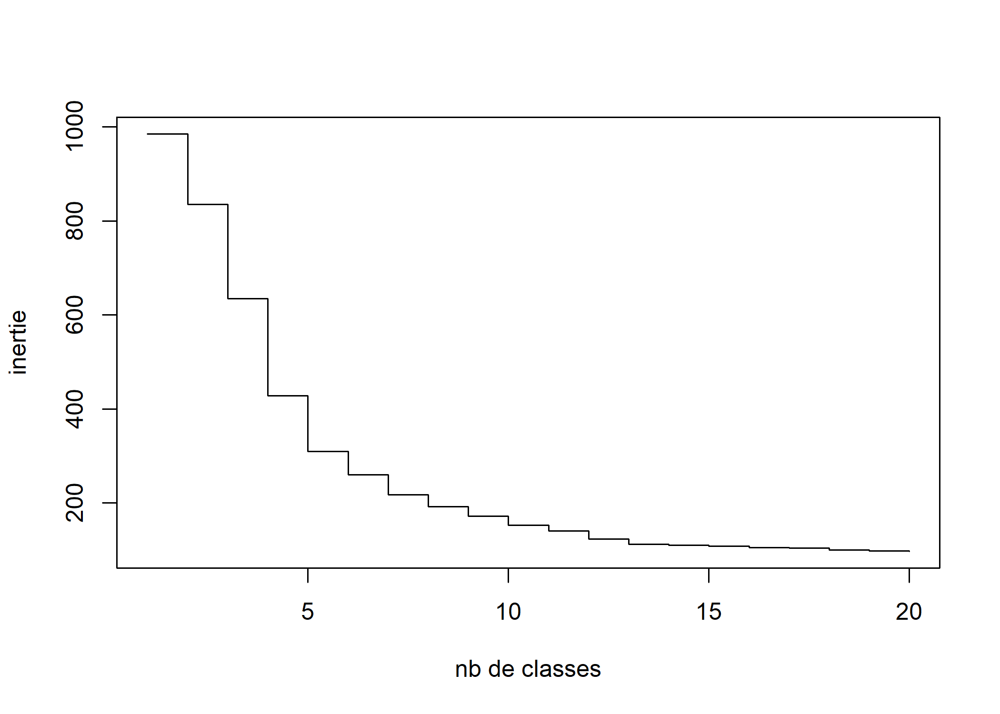
Sauts d’inertie de la classification des séquences
L’observation, sur ce dendogramme ou sur la courbe des sauts d’inertie, des sauts d’inertie des dernières étapes de la classification peut servir de guide pour déterminer le nombre de classes que l’on va retenir pour la suite des analyses. Une première inflexion dans la courbe des sauts d’inertie apparaît au niveau d’une partition en 5 classes. On voit aussi une seconde inflexion assez nette à 7 classes. Mais il faut garder en tête le fait que ces outils ne sont que des guides, le choix devant avant tout se faire après différents essais, en fonction de l’intérêt des résultats par rapport à la question de recherche et en arbitrant entre exhaustivité et parcimonie.
On fait ici le choix d’une partition en 5 classes :
Pour se faire une première idée de la nature des classes de la typologie, il existe un certain nombre de représentations graphiques. Les chronogrammes (state distribution plots) présentent une série de coupes transversales : pour chaque âge, on a les proportions d’individus de la classe dans les différentes situations (agriculteur, étudiant, etc.). Ce graphique s’obtient avec seqdplot :
Chacune des classes semble caractérisée par un groupe professionnel principal : profession intermédiaire pour la classe 1, ouvrier pour la 2, employé pour la 3, cadre pour la 4 et indépendant pour la 5. Cependant, on aperçoit aussi des « couches » d’autres couleurs, indiquant que l’ensemble des carrières ne sont probablement pas stables.
Les « tapis » (index plots), obtenus avec seqiplot, permettent de mieux visualiser la dimension individuelle des séquences. Chaque segment horizontal représente une séquence, découpée en sous-segments correspondant aux aux différents états successifs qui composent la séquence.
seqiplot(seq, group = seq.part, xtlab =14:50, tlim =0,
space =0, border =NA, withlegend = T, yaxis =FALSE)
Tapis des séquences triés
Il est possible de trier les séquences pour rendre les tapis plus lisibles (on trie ici par multidimensional scaling à l’aide de la fonction cmdscale).
ordre <-cmdscale(as.dist(seq.om), k =1)
seqiplot(seq, group = seq.part, sortv = ordre, xtlab =14:50,
tlim =0, space =0, border =NA, withlegend = T,
yaxis =FALSE)
Tapis des séquences triés par multidimensional scaling
On voit mieux apparaître ainsi l’hétérogénéité de certaines classes. Les classes 1, 3 et 4, par exemple, semblent regrouper des carrières relativement stables (respectivement de professions intermédiaires, d’employés et de cadres) et des carrières plus « mobiles » commencées comme ouvrier (classes 1 et 3, en orange) ou comme profession intermédiaire (classe 4, en rouge). De même, la majorité des membres de la dernière classe commencent leur carrière dans un groupe professionnel distinct de celui qu’ils occuperont par la suite (indépendants). Ces distinctions apparaissent d’ailleurs si on relance le programme avec un nombre plus élevé de classes (en remplaçant le 5 de la ligne nbcl <- 5 par 7, seconde inflexion de la courbe des sauts d’inertie, et en exécutant de nouveau le programme à partir de cette ligne) : les stables et les mobiles se trouvent alors dans des classes distinctes.
Le package JLutils, disponible sur GitHub, propose une fonction seq_heatmap permettant de représenter le tapis de l’ensemble des séquences selon l’ordre du dendrogramme.
Pour installer JLutils, on aura recours au package devtools et à sa fonction install_github :
La distance moyenne des séquences d’une classe au centre de cette classe, obtenue avec disscenter, permet de mesurer plus précisément l’homogénéité des classes :
round(aggregate(disscenter(as.dist(seq.om), group = seq.part),
list(seq.part), mean)[, -1], 1)
[1] 13.1 8.9 15.6 9.7 16.5
Cela nous confirme que les classes 1, 3 et 5 sont nettement plus hétérogènes que les autres, alors que la classe 2 est la plus homogène.
D’autres représentations graphiques existent pour poursuivre l’examen de la typologie. On peut visualiser les 10 séquences les plus fréquentes de chaque classe avec seqfplot.
seqfplot(seq, group = seq.part, withlegend = T)
Séquences les plus fréquentes de chaque classe
On peut aussi visualiser avec seqmsplot l’état modal (celui qui correspond au plus grand nombre de séquences de la classe) à chaque âge.
seqmsplot(seq, group = seq.part, xtlab =14:50, withlegend = T,
title ="classe")
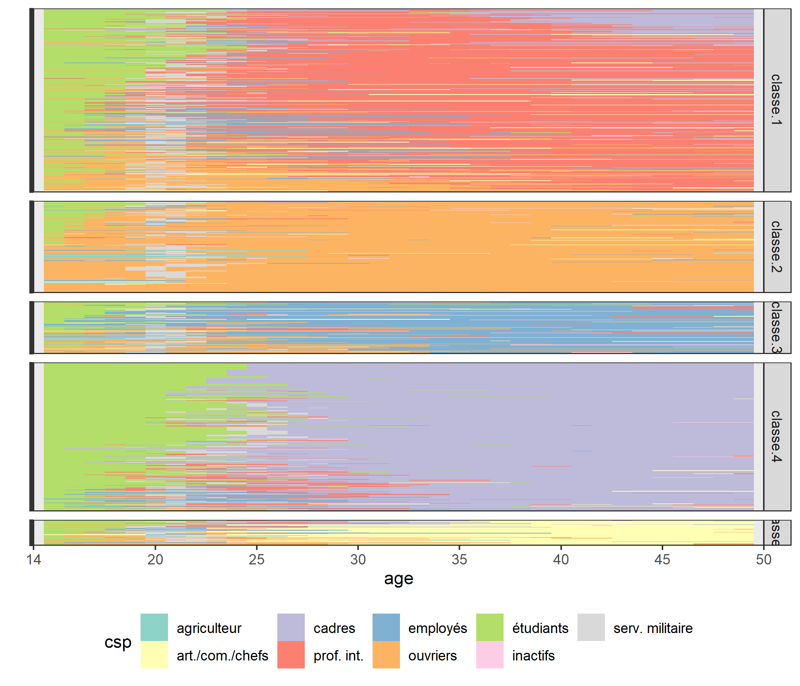
Statut modal à chaque âge
On peut également représenter avec seqmtplot les durées moyennes passées dans les différents états.
seqmtplot(seq, group = seq.part, withlegend = T)
Durée moyenne dans chaque statut
Enfin, l’entropie transversale décrit l’évolution de l’homogénéité de la classe. Pour un âge donné, une entropie proche de 0 signifie que tous les individus de la classe (ou presque) sont dans la même situation. À l’inverse, l’entropie est de 1 si les individus sont dispersés dans toutes les situations. Ce type de graphique produit par seqHtplot peut être pratique pour localiser les moments de transition, l’insertion professionnelle ou une mobilité sociale ascendante.
seqHtplot(seq, group = seq.part, xtlab =14:50, withlegend = T)
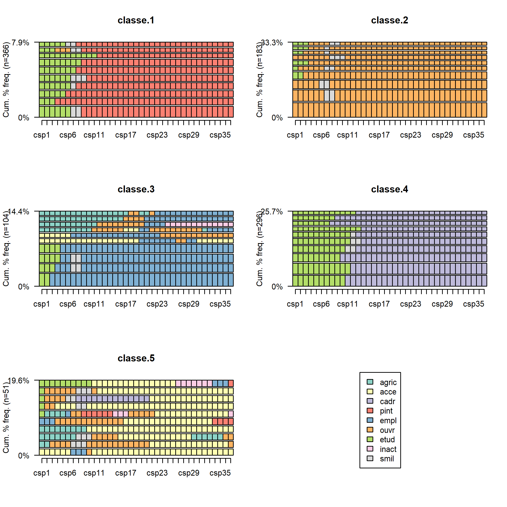
Entropie transversale
On souhaite maintenant connaître la distribution de la typologie (en effectifs et en pourcentages) :
Le lien entre le fait d’avoir un certain type de carrières et la cohorte de naissance est significatif à un seuil de 15 %. On constate par exemple l’augmentation continue de la proportion de carrières de type « professions intermédiaires » (classe 1) et, entre les deux cohortes les plus anciennes, l’augmentation de la part des carrières de type « employés » (classe 3) et la baisse de la part des carrières de type « cadres » (classe 4).
Bien d’autres analyses sont envisageables : croiser la typologie avec d’autres variables (origine sociale, etc.), construire l’espace des carrières possibles, étudier les interactions entre trajectoires familiales et professionnelles, analyser la variance des dissimilarités entre séquences en fonction de plusieurs variables « explicatives15 »…
Mais l’exemple proposé est sans doute bien suffisant pour une première introduction !
Bibliographie
Abbott A., 2001, Time matters. On theory and method, The University of Chicago Press.
Abbott A., Hrycak A., 1990, « Measuring ressemblance in sequence data: an optimal matching analysis of musicians’ careers», American journal of sociology, (96), p.144-185. http://www.jstor.org/stable/10.2307/2780695
Abbott A., Tsay A., 2000, « Sequence analysis and optimal matching methods in sociology: Review and prospect », Sociological methods & research, 29(1), p.3-33. http://smr.sagepub.com/content/29/1/3.short
Lemercier C., 2005, « Les carrières des membres des institutions consulaires parisiennes au XIXe siècle », Histoire et mesure, XX (1-2), p.59-95. http://histoiremesure.revues.org/786
Lesnard L., Saint Pol T. (de), 2006, « Introduction aux Méthodes d’Appariement Optimal (Optimal Matching Analysis) », Bulletin de Méthodologie Sociologique, 90, p.5-25. http://bms.revues.org/index638.html
Savage M., 2009, « Contemporary Sociology and the Challenge of Descriptive Assemblage », European Journal of Social Theory, 12(1), p.155-174. http://est.sagepub.com/content/12/1/155.short
Pour une analyse des conditions sociales de la diffusion de l’analyse de séquences dans le champ des sciences sociales, voir Robette, 2012.
Pour une analyse plus poussée de ces données, avec deux méthodes différentes, voir Robette & Thibault, 2008. Pour une présentation de l’enquête, voir Lelièvre & Vivier, 2001.
L’articulation entre méthodes « descriptives » et méthodes « explicatives » est un prolongement possible de l’analyse de séquences. Cependant, l’analyse de séquences était envisagée par Abbott comme une alternative à la sociologie quantitative mainstream, i.e le « paradigme des variables » et ses hypothèses implicites souvent difficilement tenables (Abbott, 2001). Une bonne description solidement fondée théoriquement vaut bien des « modèles explicatifs » (Savage, 2009).
Analyse de réseaux
Ce chapitre est en cours d’écriture.
Analyse spatiale
Ce chapitre est en cours d’écriture.
ggplot2 : la grammaire des graphiques
Ce chapitre est en cours d’écriture.
Étendre ggplot2
Ce chapitre est en cours d’écriture.
lattice : graphiques et formules
Ce chapitre est en cours d’écriture.
Diagrammes
Ce chapitre est en cours d’écriture.
Représenter des flux
Ce chapitre est en cours d’écriture.
Réseaux dynamiques
Ce chapitre est en cours d’écriture.
ggvis : les graphiques interactifs
Ce chapitre est en cours d’écriture.
htmlwidgets : la puissance de javascript
Ce chapitre est en cours d’écriture.
Cartes
Ce chapitre est en cours d’écriture.
Conditions et comparaisons
Ce chapitre est en cours d’écriture.
Une condition est une expression logique dont le résultat est soit TRUE (vrai) soit FALSE (faux).
Une condition comprend la plupart du temps un opérateur de comparaison. Les plus courants sont les suivants :
Opérateur de comparaison
Signification
==
égal à
!=
différent de
>
strictement supérieur à
<
strictement inférieur à
>=
supérieur ou égal à
<=
inférieur ou égal à
Voyons tout de suite un exemple :
library(questionr)
data(hdv2003)
d <-hdv2003
str(d$sexe == "Homme")
Que s’est-il passé ? Nous avons fourni à R une condition qui signifie « la valeur de la variable sexe vaut “Homme” ». Et il nous a renvoyé un vecteur avec autant d’éléments qu’il y’a d’observations dans d, et dont la valeur est TRUE si l’observation correspond à un homme et FALSE dans les autres cas.
Prenons un autre exemple. On n’affichera cette fois que les premiers éléments de notre variable d’intérêt à l’aide de la fonction head :
head(d$age)
[1] 28 23 59 34 71 35
head(d$age >40)
[1] FALSE FALSE TRUE FALSE TRUE FALSE
On voit bien ici qu’à chaque élément du vecteur d$age dont la valeur est supérieure à 40 correspond un élément TRUE dans le résultat de la condition.
On peut combiner ou modifier des conditions à l’aide des opérateurs logiques habituels :
Opérateur logique
Signification
&
et logique
|
ou logique
!
négation logique
Comment les utilise-t-on ? Voyons tout de suite des exemples. Supposons que je veuille déterminer quels sont dans mon échantillon les hommes ouvriers spécialisés :
Si je souhaite identifier les personnes qui bricolent ou qui font la cuisine :
d$bricol == "Oui"|d$cuisine == "Oui"
Si je souhaite isoler les femmes qui ont entre 20 et 34 ans :
d$sexe == "Femme"&d$age >=20&d$age <=34
Si je souhaite récupérer les enquêtés qui ne sont pas cadres, on peut utiliser l’une des deux formes suivantes :
d$qualif != "Cadre"!(d$qualif == "Cadre")
Lorsqu’on mélange « et » et « ou » il est nécessaire d’utiliser des parenthèses pour différencier les blocs. La condition suivante identifie les femmes qui sont soit cadre, soit employée :
L’opérateur %in% peut être très utile : il teste si une valeur fait partie des éléments d’un vecteur. Ainsi on pourrait remplacer la condition précédente par :
Ce chapitre vise à illustrer l’utilisation de la notation formule de R, qui désigne l’emploi de cette notation par l’expression formula. Cette notation est utilisée par de très nombreuses fonctions de R : on en a notamment vu plusieurs exemples dans le chapitre sur les graphiques bivariés, car l’extension ggplot2 se sert de cette notation dans ses paramètres facet_wrap et facet_grid.
Dans ce chapitre, on verra comment se servir de la notation formule dans deux contextes différents. D’une part, on verra que deux fonctions basiques de R se servent de cette notation pour produire des tableaux croisés et des statistiques bivariées. D’autre part, on verra que l’extension lattice se sert de cette notation pour créer des graphiques panelisés, dits graphiques à petits multiples.
Dans plusieurs autres chapitres, les opérations décrites ci-dessus sont effectuées avec les extensions dplyr d’une part, et ggplot2 d’autre part. On se servira également de ces extensions dans ce chapitre, de manière à mener une comparaison des différentes manières d’effectuer certaines opérations dans R, avec ou sans la notation formule :
library(dplyr)
library(ggplot2)
Statistiques descriptives
Les premiers exemples de ce chapitre montrent l’utilisation de cette notation pour produire des tableaux croisés et des statistiques descriptives. Le jeu de données utilisé, hdv2003, a déjà été utilisé dans plusieurs chapitres, et font partie de l’extension questionr. Chargeons cette extension et le jeu de données hdv2003 :
library(questionr)
data(hdv2003)
Pour rappel, ce jeu de données contient des individus, leur âge, leur statut professionnel, et le nombre d’heures quotidiennes passées à regarder la télévision.
glimpse(hdv2003, 75)
Observations: 2,000
Variables: 20
$ id <int> 1, 2, 3, 4, 5, 6, 7, 8, 9, 10, 11, 12, 13, 14, 1...
$ age <int> 28, 23, 59, 34, 71, 35, 60, 47, 20, 28, 65, 47, ...
$ sexe <fctr> Femme, Femme, Homme, Homme, Femme, Femme, Femme...
$ nivetud <fctr> Enseignement superieur y compris technique supe...
$ poids <dbl> 2634.3982, 9738.3958, 3994.1025, 5731.6615, 4329...
$ occup <fctr> Exerce une profession, Etudiant, eleve, Exerce ...
$ qualif <fctr> Employe, NA, Technicien, Technicien, Employe, E...
$ freres.soeurs <int> 8, 2, 2, 1, 0, 5, 1, 5, 4, 2, 3, 4, 1, 5, 2, 3, ...
$ clso <fctr> Oui, Oui, Non, Non, Oui, Non, Oui, Non, Oui, No...
$ relig <fctr> Ni croyance ni appartenance, Ni croyance ni app...
$ trav.imp <fctr> Peu important, NA, Aussi important que le reste...
$ trav.satisf <fctr> Insatisfaction, NA, Equilibre, Satisfaction, NA...
$ hard.rock <fctr> Non, Non, Non, Non, Non, Non, Non, Non, Non, No...
$ lecture.bd <fctr> Non, Non, Non, Non, Non, Non, Non, Non, Non, No...
$ peche.chasse <fctr> Non, Non, Non, Non, Non, Non, Oui, Oui, Non, No...
$ cuisine <fctr> Oui, Non, Non, Oui, Non, Non, Oui, Oui, Non, No...
$ bricol <fctr> Non, Non, Non, Oui, Non, Non, Non, Oui, Non, No...
$ cinema <fctr> Non, Oui, Non, Oui, Non, Oui, Non, Non, Oui, Ou...
$ sport <fctr> Non, Oui, Oui, Oui, Non, Oui, Non, Non, Non, Ou...
$ heures.tv <dbl> 0.0, 1.0, 0.0, 2.0, 3.0, 2.0, 2.9, 1.0, 2.0, 2.0...
Tableaux croisés avec xtabs
Utilisons, pour ce premier exemple, la variable occup du jeu de données hdv2003, qui correspond au statut professionnel des individus inclus dans l’échantillon. La fonction de base pour compter les individus par statut est la fonction table :
table(hdv2003$occup)
Exerce une profession Chomeur
1049 134
Etudiant, eleve Retraite
94 392
Retire des affaires Au foyer
77 171
Autre inactif
83
Avec la fonction xtabs, le même résultat est produit à partir de la notation suivante :
xtabs(~occup, data = hdv2003)
occup
Exerce une profession Chomeur
1049 134
Etudiant, eleve Retraite
94 392
Retire des affaires Au foyer
77 171
Autre inactif
83
Le premier argument est une formule, au sens où R entend cette expression. Le second argument, data, correspond au jeu de données auquel la formule doit être appliquée. On pourra se passer d’écrire explicitement cet argument dans les exemples suivants.
L’avantage de la fonction xtabs n’est pas évident dans ce premier exemple. En réalité, cette fonction devient utile lorsque l’on souhaite construire un ou plusieurs tableau(x) croisé(s). Par exemple, pour croiser la variable occup avec la variable sexe, une solution constiste à écrire :
with(hdv2003, table(occup, sexe))
sexe
occup Homme Femme
Exerce une profession 520 529
Chomeur 54 80
Etudiant, eleve 48 46
Retraite 208 184
Retire des affaires 39 38
Au foyer 0 171
Autre inactif 30 53
Ou alors, ce qui revient au même :
table(hdv2003$occup, hdv2003$sexe)
Avec xtabs, la même opération s’écrit de la manière suivante :
xtabs(~occup +sexe, hdv2003)
sexe
occup Homme Femme
Exerce une profession 520 529
Chomeur 54 80
Etudiant, eleve 48 46
Retraite 208 184
Retire des affaires 39 38
Au foyer 0 171
Autre inactif 30 53
Cette écriture est plus courte que le code équivalent dans dplyr :
# A tibble: 7 × 3
occup Homme Femme
<fctr> <int> <int>
1 Exerce une profession 520 529
2 Chomeur 54 80
3 Etudiant, eleve 48 46
4 Retraite 208 184
5 Retire des affaires 39 38
6 Au foyer 0 171
7 Autre inactif 30 53
De plus, xtabs permet de créer plusieurs tableaux croisés en une seule formule :
xtabs(~occup +sexe +trav.imp, hdv2003)
, , trav.imp = Le plus important
sexe
occup Homme Femme
Exerce une profession 13 16
Chomeur 0 0
Etudiant, eleve 0 0
Retraite 0 0
Retire des affaires 0 0
Au foyer 0 0
Autre inactif 0 0
, , trav.imp = Aussi important que le reste
sexe
occup Homme Femme
Exerce une profession 159 100
Chomeur 0 0
Etudiant, eleve 0 0
Retraite 0 0
Retire des affaires 0 0
Au foyer 0 0
Autre inactif 0 0
, , trav.imp = Moins important que le reste
sexe
occup Homme Femme
Exerce une profession 328 380
Chomeur 0 0
Etudiant, eleve 0 0
Retraite 0 0
Retire des affaires 0 0
Au foyer 0 0
Autre inactif 0 0
, , trav.imp = Peu important
sexe
occup Homme Femme
Exerce une profession 20 32
Chomeur 0 0
Etudiant, eleve 0 0
Retraite 0 0
Retire des affaires 0 0
Au foyer 0 0
Autre inactif 0 0
Cet exemple permet simplement de réaliser que la variable trav.imp, qui contient les réponses à une question portant sur l’importance du travail, n’a été mesurée (c’est-à-dire que la question n’a été posée) qu’aux seuls individus actifs de l’échantillon.
Statistiques bivariées avec aggregate
aggregate(heures.tv ~sexe, mean, data = hdv2003)
sexe heures.tv
1 Homme 2.219330
2 Femme 2.268727
Ici, le premier argument est à nouveau une formule. Le second argument correspond à la statistique descriptive que l’on souhaite obtenir, et le dernier argument indique le jeu de données auquel appliquer les deux autres arguments. On peut d’ailleurs obtenir le même résultat en respectant de manière plus stricte l’ordre des arguments dans la syntaxe de la fonction aggregate :
aggregate(heures.tv ~sexe, hdv2003, mean)
sexe heures.tv
1 Homme 2.219330
2 Femme 2.268727
Cette écriture est, à nouveau, plus compacte que le code équivalent dans dplyr, qui demande de spécifier le retrait des valeurs manquantes :
À nouveau, on va pouvoir combiner plusieurs variables dans la formule que l’on passe à aggregate, ce qui va permettre d’obtenir la moyenne des heures de télévision quotidiennes par sexe et par statut professionnel :
aggregate(heures.tv ~sexe +occup, hdv2003, mean)
sexe occup heures.tv
1 Homme Exerce une profession 1.920463
2 Femme Exerce une profession 1.724953
3 Homme Chomeur 2.853846
4 Femme Chomeur 2.888608
5 Homme Etudiant, eleve 1.400000
6 Femme Etudiant, eleve 1.256522
7 Homme Retraite 2.826442
8 Femme Retraite 2.877174
9 Homme Retire des affaires 2.410256
10 Femme Retire des affaires 2.844737
11 Femme Au foyer 2.822222
12 Homme Autre inactif 3.133333
13 Femme Autre inactif 3.339623
La même opération demanderait toujours un peu plus de code avec dplyr :
La fonction aggregate permet bien sûr d’utiliser une autre fonction que la moyenne, comme dans cet exemple, suivi de son équivalent avec dplyr :
# âge médian par sexe et statut professionnelaggregate(age ~sexe +occup, hdv2003, median)
sexe occup age
1 Homme Exerce une profession 42.0
2 Femme Exerce une profession 41.0
3 Homme Chomeur 35.5
4 Femme Chomeur 40.0
5 Homme Etudiant, eleve 20.0
6 Femme Etudiant, eleve 20.5
7 Homme Retraite 68.0
8 Femme Retraite 69.0
9 Homme Retire des affaires 70.0
10 Femme Retire des affaires 74.0
11 Femme Au foyer 51.0
12 Homme Autre inactif 56.0
13 Femme Autre inactif 58.0
La fonction aggregate permet, par ailleurs, d’obtenir des résultats à plusieurs colonnes. Dans l’exemple ci-dessus, on illustre ce principe avec la fonction range, qui renvoie deux résultats (la valeur minimale et la valeur maximale de la variable, qui est toujours la variable age), chacun présentés dans une colonne :
aggregate(age ~sexe +occup, hdv2003, range)
sexe occup age.1 age.2
1 Homme Exerce une profession 18 63
2 Femme Exerce une profession 18 67
3 Homme Chomeur 18 63
4 Femme Chomeur 18 63
5 Homme Etudiant, eleve 18 34
6 Femme Etudiant, eleve 18 35
7 Homme Retraite 48 92
8 Femme Retraite 41 96
9 Homme Retire des affaires 57 91
10 Femme Retire des affaires 57 93
11 Femme Au foyer 22 90
12 Homme Autre inactif 39 71
13 Femme Autre inactif 19 97
Cette fonction ne peut pas être facilement écrite dans dplyr sans réécrire chacune des colonnes, ce que le bloc de code suivant illustre. On y gagne en lisibilité dans les intitulés de colonnes :
# charger l'extension lisant le format CSVlibrary(readr)
# emplacement souhaité pour le jeu de données
file = "data/debt.csv"# télécharger le jeu de données s'il n'existe pasif(!file.exists(file))
download.file("http://www.stat.cmu.edu/~cshalizi/uADA/13/hw/11/debt.csv",
file, mode ="wb")
# charger les données dans l'objet 'debt'
debt =read_csv(file)
Warning: Missing column names filled in: 'X1' [1]
Parsed with column specification:
cols(
X1 = col_integer(),
Country = col_character(),
Year = col_integer(),
growth = col_double(),
ratio = col_double()
)
Rejetons rapidement un coup d’oeil à ces données, qui sont structurées par pays (variable CountryYear). On y trouve deux variables, growth (le taux de croissance du produit intérieur brut réel), et ratio (le ratio entre la dette publique et le produit intérieur brut), ainsi qu’une première colonne vide, ne contenant que des numéros lignes, dont on va se débarrasser :
# suppression de la première colonne
debt =debt[, -1]
Visualisation bivariée
Le même graphique s’écrit de la manière suivante avec l’extension lattice :
xyplot(growth ~Year, data = debt)
Visualisation par petits multiples
Appliquons désormais la même visualisation par petits multiples que vue dans le chapitre :
xyplot(growth ~Year |Country, data = debt)
Enfin, rajoutons quelques options au graphique, afin de montrer comment l’extension lattice fonctionne :
xyplot(growth ~Year |Country, type =c("o", "l"),
main ="Données Reinhart et Rogoff corrigées, 1946-2009",
ylab ="Taux de croissance du PIB", xlab =NULL,
data = debt)
Pour aller plus loin
Comme vient de le voir dans ce chapitre, la notation formule apparaît çà et là dans les différentes fonctions de R est de ses extensions. Il est par conséquent utile d’en connaître les rudiments, et en particulier les opérateurs ~ (tilde) et +, ne serait-ce que pour pouvoir se servir des différentes fonctions présentées sur cette page.
La notation formule devient cruciale dès que l’on souhaite rédiger des modèles : la formule y ~ x, par exemple, qui est équivalente à la formule y ~ 1 + x, correspond à l’équation mathématique Y = a + bX. On trouvera de nombreux exemples d’usage de cette notation dans les chapitres consacrés, notamment, à la régression linéaire ou à la régression logistique.
De la même manière, l’opérateur | (pipe) utilisé par l’extension lattice joue aussi un rôle très important dans la rédaction de modèles multi-niveaux, où il sert à indiquer les variables à pentes ou à coefficients aléatoires. Ces modèles sont présentés dans un chapitre dédié.
Le calcul d’un âge sous R n’est pas forcément aussi trivial qu’il n’y parait.
Rappel sur les âges
Il convient en premier lieu de rappeler les principaux âges utilisés les démographes :
L’âge – on précise parfois âge chronologique – est une des caractéristiques fondamentales de la structure des populations. On l’exprime généralement en années, ou en années et mois, voire en mois et jours, pour les enfants en bas âge ; parfois en années et fractions décimales d’année. Les démographes arrondissent d’ordinaire l’âge à l’unité inférieure, l’exprimant ainsi en années révolues, ou années accomplies, le cas échéant en mois révolus, ou mois accomplis. Cet âge est aussi l’âge au dernier anniversaire. On trouve aussi, dans les statistiques, l’âge atteint dans l’année, qui est égal à la différence de millésimes entre l’année considérée et l’année de naissance. […] On est parfois conduit à préciser que l’on considère un âge exact, pour éviter toute confusion avec un âge en années révolues, qui représente en fait une classe d’âges exacts.
Le package lubridate
Le package lubridate est spécialement développé pour faciliter la manipulation et le calcul autour des dates. La version de développement intègre depuis peu une fonction time_length adaptée au calcul des âges exacts.
La fonction time_length étant récente, elle n’est pas encore disponible dans la version stable du package. Pour installer la version de développement de lubridate, on aura recours au package devtools :
Nous noterons naiss la date de naissance et evt la date à laquelle nous calculerons l’âge.
Calcul d’un âge exact
On appelle âge exact l’expression d’un âge avec sa partie décimale.
Une approche simple consiste à calculer une différence en jours puis à diviser par 365. Or, le souci c’est que toutes les années n’ont pas le même nombre de jours. Regardons par exemple ce qui se passe si l’on calcule l’âge au 31 décembre 1999 d’une personne née le 1er janvier 1900.
library(lubridate)
Attaching package: 'lubridate'
The following object is masked from 'package:base':
date
Or, au 31 décembre 1999, cette personne n’a pas encore fêté son centième anniversaire. Le calcul précédent ne prend pas en compte les années bissextiles. Une approche plus correcte serait de considérer que les années durent en moyenne 365,25 jours.
time_length(interval(naiss, evt), "days")/365.25
[1] 99.99452
Si cette approche semble fonctionner avec cet exemple, ce n’est plus le cas dans d’autres situations.
Or, à la date du premier janvier 1903, cette personne a bien fêté son troisième anniversaire.
Pour calculer proprement un âge en années (ou en mois), il est dès lors nécessaire de prendre en compte la date anniversaire et le fait que la durée de chaque année (ou mois) est variable. C’est justement ce que fait la fonction time_length appliquée à un objet de type Interval. On détermine le dernier et le prochain anniversaire et l’on rajoute, à l’âge atteint au dernier anniversaire, le ratio entre le nombre de jours entre l’événement et le dernier anniversaire par le nombre de jours entre le prochain et le dernier anniversaire.
Attention, cela n’est valable que si l’on présente à la fonction time_length un objet de type Interval (pour lequel on connait dès lors la date de début et la date de fin). Si l’on passe une durée (objet de type Duration) à la fonction time_length, le calcul s’effectuera alors en prenant en compte la durée moyenne d’une année (plus précisément 365 jours).
Pour les personnes nées un 29 février, il existe un certain flou concernant leur date d’anniversaire pour les années non bissextiles. Doit-on considérer qu’il s’agit du 28 février ou du 1er mars ?
Au sens strict, on peut considérer que leur anniversaire a lieu entre le 28 février soir à minuit et le 1er mars à 0 heure du matin, autrement dit que le 28 février ils n’ont pas encore fêté leur anniversaire. C’est la position adoptée par la fonction time_length.
Cette approche permets également d’être cohérent avec la manière dont les dates sont prises en compte informatiquement. On considère en effet que lorsque seule la date est précisée (sans mention de l’heure), l’heure correspondante est 0:00. Autrement dit, "2014-03-01" est équivalent à "2014-03-01 00:00:00". L’approche adoptée permet donc d’être cohérent lorsque l’anniversaire est calculé en tenant compte des heures.
Une fois que l’on sait calculer un âge exact, le calcul d’un âge révolu ou âge au dernier anniversaire est assez simple. Il suffit de ne garder que la partie entière de l’âge exact (approche conseillée).
Une autre approche consiste à convertir l’intervalle en objet de type Period et à ne prendre en compte que les années.
as.period(interval(naiss, evt))
[1] "34y 11m 23d 0H 0M 0S"
as.period(interval(naiss, evt))@year
[1] 34
Âge par différence de millésimes
L’âge par différence de millésimes, encore appelé âge atteint dans l’année, s’obtient tout simplement en soustrayant l’année de naissance à l’année de l’événement.
Le calcul d’un âge moyen s’effectue normalement à partir d’âges exacts. Il arrive fréquemment que l’on ne dispose dans les données d’enquêtes que de l’âge révolu. Auquel cas, il faut bien penser à rajouter 0,5 au résultat obtenu. En effet, un âge révolu peut être vu comme une classe d’âges exacts : les individus ayant 20 ans révolus ont entre 20 et 21 ans exacts, soit en moyenne 20,5 ans !
Notes
L’ensemble des fonctions présentées peuvent être appliquées à des vecteurs et, par conséquent, aux colonnes d’un tableau de données (data.frame).
Le package eeptools fournit de son côté une fonction age_calc1 qui permet le calcul des âges exacts et révolus.
library(eeptools)
Loading required package: ggplot2
naiss <-as.Date("1980-01-09")
evt <-as.Date("2015-01-01")
age_calc(naiss, evt, units ="years", precise =TRUE)
[1] 34.97814
time_length(interval(naiss, evt), "years")
[1] 34.97808
La méthode utilisée par age_calc donne des résultats légèrement différent de ceux de time_length. Il est donc conseillé d’utiliser de préférence le package lubridate.
En l’absence du package lubridate, il reste facile de calculer une durée en jours avec les fonctions de base de R :